Cẩm Nang Quần Vợt Toàn Thư: Kỹ Thuật Chi Tiết, Chiến Thuật Đỉnh Cao & Thể Lực Chuyên Nghiệp — Lời Tựa Của John McEnroe
Paul Douglas (Foreword by John McEnroe) 10 Phần Huấn Luyện Toàn Diện Bản Dịch Tiếng Việt Chuẩn Xác 100%
Phần 1
Lời nói đầu của John McEnroe & Lịch sử quần vợt sân cỏ
Foreword by John McEnroe & History of Lawn Tennis 37 đoạn phân tích chuyên sâu
Lời nói đầu Tôi đã gặp Paul Douglas trong giải vô địch Wimbledon năm 1981 và bị ấn tượng bởi cách tiếp cận huấn luyện quần vợt của anh ấy.
Chủ yếu tôi thích nó vì hai lý do: một, anh ấy thực sự nhấn mạnh tầm quan trọng của việc có được trò chơi cơ bản của bạn trên nền tảng chắc chắn, của việc nắm vững các yếu tố cần thiết của kỹ thuật âm thanh và lối chơi đánh tốt.
Ngoài ra-và đây không phải là điều bình thường như mọi người có thể nghĩ-anh ấy khuyến khích bạn tận dụng kỹ thuật tốt để phát triển điểm mạnh của riêng mình. Rất nhiều người chơi mà tôi biết đã không đạt đến đỉnh cao vì họ được huấn luyện để trở thành người biểu diễn robot và họ không được phép chơi trò chơi tự nhiên của mình.
Trong cuốn sách huấn luyện toàn diện tuyệt vời này, Paul Douglas đã đưa ra phương pháp giảng dạy của mình và tôi thực sự tin rằng nó sẽ giúp người chơi ở mọi cấp độ cải thiện trò chơi của họ.
Mỗi chương, dù đề cập đến đấu gậy hay chiến lược, đều được minh họa rất rõ ràng, và nếu bạn đang chơi quần vợt thi đấu thì sẽ có lời khuyên chắc chắn về cách giúp bạn có được thể chất và tinh thần tốt.
Tôi thực sự muốn giới thiệu cuốn sách này cho những người chơi trẻ không đủ may mắn để có được sự giúp đỡ của huấn luyện viên-Sổ tay quần vợt là một sự thay thế tuyệt vời.
Chúc may mắn.
\.&L JohnMcEnroe
Giới thiệu Môn thể thao quần vợt đã có từ hàng trăm năm nay, nhưng môn thể thao này được biết đến ngày nay chỉ mới có hơn một thế kỷ.
Vào giữa thế kỷ 19, nhiều người đã thử nghiệm các phiên bản mới của trò chơi cũ của quần vợt "thực sự" hoặc "hoàng gia", nhưng tổ tiên trực tiếp của quần vợt sân cỏ là trò chơi "Sphairistike", do Thiếu tá Walter Clopton Wingfield phát minh và được ông chơi lần đầu tiên vào năm 1873 trên sân cỏ ở xứ Wales.
"Sticky", như lần đầu tiên được biết đến, hay "quần vợt trên sân cỏ", đã thành công ngay lập tức và nhanh chóng được chơi trên các sân và bãi cỏ hình đồng hồ cát trên khắp nước Anh.
Vào năm 1875, Câu lạc bộ Croquet toàn nước Anh đã dành một trong những sân chơi dành riêng cho trò chơi mới, và Câu lạc bộ cricket Marylebone, cơ quan quản lý các trò chơi quần vợt và vợt "thực sự" cũ, đã soạn thảo một bộ quy tắc.
Giải vô địch Wimbledon đầu tiên vào năm 1877 Câu lạc bộ Croquet AllEngland chính thức đổi tên thành Câu lạc bộ Croquet và Sân cỏ toàn Anh đã tổ chức giải vô địch quần vợt đầu tiên vào tháng 7 năm 1877. Trọng tài là Henry Jones, người cùng với ủy ban gồm hai người, đã nghĩ ra các quy tắc cho giải đấu bằng cách sử dụng một hệ thống tính điểm mang tính cách mạng.
Người chơi được yêu cầu thay đổi kết thúc sau mỗi set, các trận đấu là trận hay nhất trong 5 set và các set có lợi thế sẽ được chia trong trận chung kết.
Nếu trận đấu đạt tỷ số 5-5 ở các hiệp trước, kết quả của hiệp tiếp theo sẽ quyết định hiệp đấu - giống như những ván tiebreak ngày nay.
Hình dạng của sân cũng được thay đổi từ đồng hồ cát sang hình chữ nhật, với số đo tương tự như ngày nay.
Vì vậy, bất chấp một số điều chỉnh sau đó, nền tảng của quần vợt ngày nay vẫn được tạo ra vào năm 1877 bởi Henry Jones.
Các cầu thủ không phải là đối thủ hạt giống được chọn theo kết quả hòa - và 22 người đàn ông đã giành được chức vô địch đầu tiên đó.
(Năm 1919, số lượng người tham gia nội dung đơn nam được giới hạn ở 128.) Nhà vô địch quần vợt sân cỏ đầu tiên là Spencer Gore, người đã sử dụng chiến thuật đe dọa tấn công lưới đối thủ này.
Vào thời điểm đó, lưới cao 5 ft ở các cột và chỉ có 3 ft 3 inch ở giữa.
Nó Ernest (trái) và William Rensha\N Reggie (trái) và Laurie Doherty
GIỚI THIỆU a MaudWatson Blanche Bingley LottieDod ArthurGore(Wimbledonchampion 1901, '08, '09) Anthony Wilding(Wimbledonchampion 1910-13)
GIỚI THIỆU" đã được hạ xuống độ cao hiện tại là 3 ft 6 inch tại các cột vào năm 1882. Cú vô-lê phần lớn vẫn chưa được biết đến; phải mất nhiều năm trước khi một cuộc tấn công giao bóng và vô lê liên tục trong 5 hiệp đấu có thể chứng tỏ thành công về mặt chiến thuật. Trong những năm 1880, Wimbledon bị thống trị bởi anh em nhà Renshaw người Anh, Ernest và William, những người đã ảnh hưởng đến sự phát triển quần vợt bv thiết lập những nền quần vợt mới và cao hơn
tiêu chuẩn của gậy và đấu trận, đồng thời là người đã khơi dậy sự quan tâm ngày càng tăng của công chúng đối với môn thể thao này, William Renshaw, người bảy lần vô địch đơn Wimbledon, đã chứng minh cú đập bóng là cú đánh quyết định nhất và là điển hình đầu tiên của phong cách chơi "bóng lên".
Hai đội anh em khác đã kế nhiệm Renshaws.
Herbert và Wilfred Baddelev đã bốn lần giành chức vô địch đôi trong thập niên 1890.
Từ năm 1897 đến năm 1906, anh em nhà Doherty, Reggie và Laurie, đã giành chức vô địch đơn tổng cộng chín lần và vượt qua kỷ lục Renshaw khi giành chức vô địch đôi tám lần.
Giải vô địch Hoa Kỳ sớm Năm 1881 Hiệp hội Quần vợt Sân cỏ Hoa Kỳ được thành lập và tổ chức chức vô địch đầu tiên tại Newport, Rhode Island.
(Giải đấu chuyển đến Forest Hills vào năm 1924 và vẫn tồn tại cho đến năm 1977, khi nó được chuyển đến địa điểm hiện tại, Trung tâm Quần vợt Quốc gia ở Flushing, New York.) Người chiến thắng đầu tiên là R.D.
Sears, một sinh viên tốt nghiệp trường Harvard, người đã bảo vệ thành công danh hiệu của mình sáu lần liên tiếp, một thành tích chưa từng có.
Sears cũng hợp tác với Tiến sĩ James Dwight, người sáng lập USLTA, để giành chức vô địch đôi quốc gia năm lần.
Một vận động viên Harvard khác, RobertWrenn, đã sáu lần giành chức vô địch đơn trong những năm 1890 và là một trong những thành viên đầu tiên của đội Davis Cup Hoa Kỳ.
Từ năm 1901 đến năm 1911, William Larned đã bảy lần giành chức vô địch và nằm trong top 10 trong 19 năm (1892-1911).
Các cuộc thi quốc tế Bv 1900 quần vợt đã thực sự trở thành quốc tế, và vào năm 1912, Liên đoàn quần vợt sân cỏ quốc tế đã được thành lập ở Paris.
Ngược lại, vào tháng 8, các nhà vô địch Rất ít người trong lịch sử có thể được thảo luận bình đẳng với Maureen Connolly của Mỹ và Rod Laver của Australia.
MaureenConnolly lần đầu tiên được phát hiện ở BalboabyWilburFolson, người đã khuyến khích cô thay đổi từ phong cách thuận tay trái tự nhiên sang phong cách thuận tay phải chính thống.
Sự hướng dẫn thêm từ huấn luyện viên 'Dạy' Tennant đã phát triển lối chơi về cơ bản của phương Đông theo tiêu chuẩn cao nhất của cú đánh trên mặt đất.
"LittleMo" đã giành chức vô địch Đơn nam Hoa Kỳ năm 1951, ở tuổi 16, và giành chức vô địch đầu tiên trong ba chức vô địch Wimbledon liên tiếp vào năm 1952. Năm 1953, cô trở thành GrandSlamwinner đầu tiên dành cho nữ.
Rod Laver, được huấn luyện bởi Charlie Hollis và Ham*Hopman, đã giành chiến thắng đầu tiên trong hai giải GrandSlam gần 10 năm sau đó, vào năm 1962, đánh bại Roy Emerson trong trận chung kết giải vô địch Úc, Pháp và Mỹ và MartyMulligan tại Wimbledon.
Trong cùng năm đó, anh ấy cũng đã giành được chức vô địch Ý và Đức, thống trị thế giới quần vợt với phong cách chơi tấn công Lục địa, trong đó nổi bật là những cú đánh xoáy đầu mạnh mẽ và những lát cắt hiểm hóc đầy quyết liệt.
Các cú giao bóng xoáy lên của anh ấy gần như không thể quay lại được.
Maureen Connolly Rod Laver
GIỚI THIỆU Năm 1900, trận đấu Davis Cup đầu tiên được tổ chức giữa Anh và Hoa Kỳ tại Longwood Cricket Club, Boston, nhằm thúc đẩy cạnh tranh quốc tế.
Trận đấu đầu tiên được khai mạc bởi thành viên đội tuyển Mỹ Dwight Davis, người đã tặng cúp và cùng với M.
Whitman và Halcombe Ward đã đánh bại đội Anh.
Thể thức tốt nhất là năm trận đấu: một trận đấu đôi và bốn trận đấu đơn, với mỗi đội giới hạn bốn người chơi.
Trong nhiều năm chỉ có một số quốc gia tham gia và chiếc cúp này là sở hữu độc quyền của Anh, Pháp, Úc và Hoa Kỳ (từ năm 1937 đến năm 1973, sự thống trị hoàn toàn của Mỹ và Úc).
Trong những năm gần đây, với sự tham gia của các cầu thủ chuyên nghiệp vào giải đấu cúp, trận đấu Davis Cup đã trở thành một sự kiện lớn có sự tham gia của hơn 50 quốc gia.
Giải vô địch nữ Năm 1884, một giải đấu đơn nữ lần đầu tiên được tổ chức tại Wimbledon và có 13 phụ nữ tranh tài. Nhà vô địch là Maud Watson, con gái của một mục sư, người đã đánh bại chị gái Lilian của mình trong trận chung kết.
Từ năm 1884 đến năm 1900, chỉ có năm nhà vô địch, trong đó có Blanche Bingley và LottieDod đáng gờm, những người giành chiến thắng lần đầu tiên ở tuổi 15. Năm 1899, giải vô địch đôi được bắt đầu.
Mãi đến đầu những năm 1900, giải đấu dành cho nữ mới được phổ biến rộng rãi hơn (năm 1901 có 30 người tham gia).
Nhà vô địch nữ vĩ đại nhất trong những năm trước Thế chiến thứ nhất là bà LambertChambers, người đã chơi trong 11 trận chung kết Wimbledon, thắng bảy.
Hiệp hội Quần vợt Hoa Kỳ đã khai mạc giải vô địch nữ vào năm 1887. Giải đấu được tổ chức ở Philadelphia cho đến khi chuyển đến Forest Hills vào năm 1921.
Những tay vợt đầu tiên thống trị chức vô địch là Juliette Atkinson, người đã giành được danh hiệu này ba lần (1895, '97, '98) và Bessie Moore, người đã giành được nó bốn lần (1896, 1901, '03, '05).
Hazel Hotchkiss, người California, đã giành được danh hiệu đơn, đôi và đôi ba năm liên tiếp (1909, '10, '11) - một thành tích có một không hai.
Năm 1915, Molla Bjurstedt Mallory, người Na Uy, đã giành được danh hiệu đầu tiên trong số 8 danh hiệu của mình.
Tay vợt nữ có kỷ lục đánh đơn thành công nhất là Helen Willis Moody.
Be- BillTilden Fred Perry
GIỚI THIỆU Từ năm 1923 đến năm 1933, bà đã thi đấu 9 chức vô địch đơn, giành được 7 danh hiệu và hai lần về đích ở vị trí á quân.
Sự thống trị của Mỹ và Pháp Những năm 1920 là thời kỳ hoàng kim của quần vợt.
Chưa bao giờ - và có lẽ kể từ đó - lại có nhiều vận động viên quần vợt hạng nhất như vậy.
Nổi bật nhất trong số họ là một người được nhiều người coi là người chơi đĩa vĩ đại nhất từ trước đến nay: Bill Tilden.
TildenwonWimbledon vào năm 1920 và 1921 .
Từ năm 1920 đến năm 1925, anh không thua một trận đánh đơn nào trong sáu vòng thử thách DavisCup và sáu trận chung kết Giải vô địch Hoa Kỳ.
Ngay cả khi thất bại, Tilden vẫn rất đáng chú ý: trận thua Rene Lacoste trong trận chung kết Giải vô địch Hoa Kỳ năm 1927 và HenriCoche trong trận bán kết tại Wimbledon cùng một trận đấu được coi là một trong những trận đấu kinh điển trong lịch sử quần vợt.
Năm 1924 là năm khởi đầu cho giai đoạn sáu năm Pháp thống trị nội dung đơn nam tại Wimbledon;
cho đến năm 1929, "Bốn chàng lính ngự lâm" - Jean Borotra, Henri Cochet, Rene Lacoste và Toto Brugnon - đã cai trị. Trong số những người phụ nữ, Suzanne Lenglen oi France và Helen Wills của Hoa Kỳ lần lượt thống trị trong những năm 1920 và 1930, mặc dù có sự phản đối gay gắt từ những người ủng hộ như Elizabeth Ryan, Mrs.
Mallorv, KittyMcKane Godfree, Lili de Alvarez, Helen Jacobs và Dorothv Round.
Thập niên 1930 kết thúc với việc Alice Marble trở thành nhà vô địch vào năm 1939. Năm 1930, Tilden phá vỡ sự thống trị của Pháp ở các nội dung nam, đánh bại Borotra ở bán kết và tiếp tục đánh bại Texan Wilmer. Allison, người đã lọt vào trận chung kết một cách đáng chú ý mặc dù không được xếp hạt giống.
Vào những năm 1930, những người thợ lát nền vĩ đại khác đã xuất hiện: Ellsworth Vines, Jack Crawford và Don Budge của Hoa Kỳ;
Fred Pern' của Vương quốc Anh; Jack Crawford của Úc và GottfriedvonCramm của Đức.
Ngoài von Cramm, mỗi người đều đạt được danh hiệu Nhà vô địch Wimbledon.
Năm 1938, Don Budge cũng trở thành vận động viên trượt ván đầu tiên giành được Grand Slambv, giành chức vô địch Úc, Pháp, Wimbledon và Mỹ trong cùng một giải đấu.
Bất chấp sự phản đối, giải đấu chuyên nghiệp đầu tiên được tổ chức vào năm 1926 tại Madison Square Garden, ngược lại là các nhà vô địch. Mặc dù phong cách chơi của họ rất khác nhau, BjornBorgand BillieJeanKing cho thấy sự quyết tâm và cống hiến hết mình có thể đạt được sự vĩ đại trong thể thao như thế nào.
BjornBorg ra mắt Davis Cup vào năm 1972 khi mới 15 tuổi, và năm 1976 là nhà vô địch Wimbledon, danh hiệu mà anh đã giữ trong 5 năm liên tiếp.
Đây là một thành tích đặc biệt đáng chú ý vì anh ấy thực sự là một vận động viên trên sân đất nện.
Dưới sự chỉ đạo của Lennart Bergelinhe đã trở thành kẻ phản đòn đáng sợ nhất ngay từ vạch cuối sân.
Cú trái tay hai tay của anh ta, với hành động giật quá mức, được đánh với lực và độ xoáy cực lớn.
Anh ta đạt được tỷ lệ người chiến thắng dịch vụ đầu tiên cao hơn hầu hết những người cùng thời.
BillieJeanKing, một kẻ chơi mạng bẩm sinh, lần đầu tiên được khuyến khích phát triển plavbvcoachClyde Walker trên mặt đất của mình.
Về cơ bản, lối chơi của phương Đông là một mô hình của một trò chơi kỹ thuật hoàn hảo có thể thích nghi với bất kỳ mặt sân nào.
Cô ấy sử dụng kiểu cầm Continental cho phép điều khiển góc mặt vợt và cổ tay và là chìa khóa cho cú giao bóng tuyệt vời và plav trên cao của cô ấy.
Sáu chiến thắng của cô tại Wimbledon chỉ là một phần nhỏ trong hơn 50 danh hiệu lớn giành được trong sự nghiệp của cô.
Billie JeanKing Bjorn Borg
GIỚI THIỆU và những cầu thủ như Tilden, Suzanne Leng-len, Perry và Budge nằm trong số những người đầu tiên đặt ra xu hướng chuyển sang chuyên nghiệp.
Thời hiện đại Trong Thế chiến II có nhiều chức vô địch Wimbledon;
các giải đấu chính đều diễn ra ở Hoa Kỳ.
Sau năm 1945, các tay vợt người Úc và Mỹ tiếp tục thống trị quần vợt quốc tế và đặt ra các tiêu chuẩn thi đấu ngày càng cao hơn.
Đặc biệt, lối chơi hai tay đã trở thành một đặc điểm phổ biến trên sân, các trận đấu trở nên dài hơn nhiều, và vào năm 1970, phương pháp tính điểm tiebreak gây tranh cãi lần đầu tiên được đưa ra.
Những tay vợt hàng đầu của thời kỳ hậu chiến bao gồm Frank Sedgman, Lew Hoad, Fred Stolle, Ken Rosewall, JohnNewcombe vàRod Laver, những người đã thống trị quần vợt trong một thập kỷ từ cuối những năm 1950.
Những kỳ thủ vĩ đại khác bao gồm Jaroslav Drobny của Tiệp Khắc, và PanchoGonzales người Mỹ, vào năm 1969, ở tuổi 41, đã chơi và đánh bại Charlie Pasarell trong một trận đấu đáng chú ý kéo dài 112 ván kéo dài 5 giờ 12 phút.
Vào những năm 1950, một số nhà vô địch nữ xuất sắc đã nổi lên, bao gồm Louise Brough, Doris Hart, Maureen Connollv, Althea Gibson (người phụ nữ da đen đầu tiên đạt được danh tiếng quần vợt quốc tế) và Maria Bueno.
Trong những cầu thủ nữ hàng đầu những năm 1960 bao gồm Billie Jean King xuất sắc, Evonne Goola-gong Cawley, Chris Evert Lloyd, Virginia Wade và Martina Navratilova.
Năm 1968, Hiệp hội Quần vợt Sân cỏ Anh đã bỏ phiếu để mở rộng Wimbledon cho các giải chuyên nghiệp, khởi đầu kỷ nguyên của giải đấu mở rộng và cuối cùng là sự bãi bỏ sự phân biệt nghiệp dư-chuyên nghiệp.
Bước này là một yếu tố quan trọng trong sự phát triển và mở rộng thành công của quần vợt nữ, vốn chưa bao giờ có thể hỗ trợ cho một giải đấu chuyên nghiệp.
Các danh hiệu quốc gia và các giải đấu lớn, không còn giới hạn ở những người nghiệp dư, đã nhanh chóng thu hút những tay vợt giỏi nhất và trở thành những sự kiện thể thao lớn thu hút rất đông khán giả và báo chí đưa tin rộng rãi.
Với sự ra đời của các giải đấu mở rộng, Rod Laver, người đã đạt được Grand Slam năm 1962 với tư cách nghiệp dư, đã lặp lại thành tích này với tư cách chuyên nghiệp vào năm 1969- một thành tích độc đáo.
JackKramer FrankSedgman
GIỚI THIỆU Trong những năm 1970, Hoa Kỳ lại đi đầu trong lĩnh vực stennis nam.
Sau 15 năm bị nước ngoài thống trị, các tay vợt Mỹ đã vô địch US Open tổng cộng 9 lần.
James Connors, người giành ba danh hiệu Hoa Kỳ, đã lập được những chiến thắng đáng chú ý, chiến thắng trên ba mặt sân khác nhau: trên sân cỏ năm 1974, sân đất nện năm 1976, và trên đường nhựa năm 1978, năm khai trương Sân vận động Flushing Meadow.
John McEnroe đã vô địch US Open trong ba năm liên tiếp (1979-81). Anh là tay vợt đầu tiên lập được thành tích này kể từ Bill Tilden vào những năm 1920.
Tuy nhiên, vào những năm 1970, kỳ thủ hàng đầu thế giới là người Thụy Điển Bjorn Borg.
Anh lần đầu tiên giành chức vô địch Wimbledon vào năm 1976 và bảo vệ thành công nó 5 lần cho đến khi thua John McEnroe trong trận chung kết năm 1981.
Từ năm 1974 đến năm 1981, Borg đã giành chức vô địch Pháp mở rộng, một giải GrandSlam khác, sáu lần;
năm 1975, ông dẫn dắt Thụy Điển giành chức vô địch Davis Cup.
Trong nhiều năm qua, Connors, Borg và McEnroe đã thống trị quần vợt ở các giải đấu lớn, nhiều lần gặp nhau ở bán kết, chung kết và chơi các trận kinh điển.
Thành công vượt trội của Bjorn Borg đã dẫn đến sự hồi sinh của các cầu thủ châu Âu.
Đặc biệt, Tiệp Khắc và Pháp đã noi gương Thụy Điển và đang đào tạo ra nhiều cầu thủ thú vị thông qua chính sách huấn luyện, huấn luyện và cống hiến hết mình cho môn thể thao này.
Nhiều kỳ thủ nữ Tiệp Khắc, như Martina Navratilova, Renata Tomanova, Regina Marsikova, và Hana Mandlikova, đã đạt được đẳng cấp thế giới, trong khi các kỳ thủ nam Séc như Ivan LendlandTomas Smid đang tạo ra thách thức ngày càng tăng trong môn thể thao nam.
Ở Pháp cũng vậy, đã có sự trỗi dậy của lòng nhiệt thành yêu nước do MaxDecugis bắt đầu vào năm 1903, với việc YannickNoah trở thành một cầu thủ đẳng cấp thế giới và sự xuất hiện của những cầu thủ có triển vọng như Pascal Portes, Dominique Bedel, Thierry Tulasne và Henri Leconte.
Đầu những năm 1970 được đánh dấu bằng nhiều tranh chấp chính trị và tranh chấp khác như việc tẩy chay Nam Phi khỏi Davis Cup năm 1970 và cuộc tranh giành quyền lực giữa ILTF (nay là ITF) và World Championship Tennis Incorporated (WCT).
Những nhà vô địch đang hình thành Nhà vô địch Forevery sắp kết thúc sự nghiệp, có rất nhiều"nhà vô địch đang hình thành" trẻ tuổi.
Hàng nghìn thanh thiếu niên và thiếu niên ở mọi nơi trên thế giới quyết tâm trở thành cầu thủ xuất sắc nhất đất nước của họ, nhà vô địch Wimbledon tiếp theo hoặc số một trong bảng xếp hạng thế giới, mặc dù thực tế là họ biết rằng rất ít người chơi lọt vào top đầu.
Các nhà vô địch của các thế hệ tương lai có thể xuất hiện từ bất kỳ quốc gia nào, một thực tế khiến tinh thần cạnh tranh luôn nhen nhóm khắp các quốc gia chơi quần vợt.
Trong số những nhà vô địch tiềm năng như vậy có những nghệ sĩ biểu diễn xuất sắc như HanaManlikova, AndreaJaeger, RameshKrishnanand ThierryTulasne, những người được chụp hình ở đây;
những ứng cử viên tương lai khác cho thứ hạng cao là MatsWilander, HenriLeconte, Kathy Rinaldi và KathyHorvath.
RameshKrishnan
GIỚI THIỆU Bất chấp những lập luận như vậy, bản thân môn thể thao này vẫn tiếp tục trở nên có kỹ năng cao hơn và thu hút ngày càng nhiều khán giả cũng như ngày càng nhiều người chơi.
Kể từ năm 1945, một số cuộc thi giải thưởng mới đã được giới thiệu.
Chúng bao gồm Cúp Liên đoàn, được giới thiệu vào năm 1963, Giải vô địch Virginia Slims, bắt đầu vào năm 1971, Giải Grand Prix của Liên đoàn Quần vợt Sân cỏ Quốc tế, được giới thiệu vào năm 1970, và Giải Grand Prix Masters, cũng được giới thiệu vào năm 1970. Hiệp hội Quần vợt Hoa Kỳ ước tính vào năm 1960 có 5,6 triệu người chơi quần vợt ở Hoa Kỳ.
Trong suốt những năm 1960 và 1970, môn thể thao này có mức tăng trưởng nhanh nhất về số người tham gia so với bất kỳ môn thể thao nào - đạt hơn 29 triệu người chơi vào năm 1976. Mặc dù tốc độ tăng trưởng đã chậm lại trong vài năm qua, 30% tổng số người chơi quần vợt ở Mỹ là những người trẻ tuổi.
Mức độ phổ biến của trò chơi, cả ở trong nước và nước ngoài, chưa bao giờ lớn hơn thế.
Chris EvertLloyd JohnMcEnroe
Phần 2
Phần 1: Nguyên tắc cơ bản, Thiết bị & Cơ chế vợt
Part 1: Fundamentals, Equipment & Racket Mechanics 97 đoạn phân tích chuyên sâu
Chọn thiết bị của bạnThiết bị quần vợt không đắt như hầu hết các môn thể thao khác.
Vợt là một khoản chi phí ban đầu, nhưng những cây vợt được chế tạo tốt sẽ có tuổi thọ sử dụng cao trong nhiều năm.
Mặc dù quần áo và giày dép cũng có thể dùng vợt. Vợt có thể được mua ở dạng khung không có dây và bạn có thể mua dây riêng (xem tr.270).
Loại vợt hoặc khung mà bạn sẽ phụ thuộc phần lớn vào cấp độ trò chơi của bạn đã đạt đến.
Nếu bạn là người mới bắt đầu, một cây vợt gỗ sẽ là lựa chọn lý tưởng để học các kỹ năng và kỹ thuật cơ bản của trò chơi;
Khi tiêu chuẩn của bạn được cải thiện, bạn có thể thấy rằng trò chơi của bạn sẽ được hưởng lợi nhiều hơn từ việc sử dụng vợt kim loại, than chì hoặc composite.
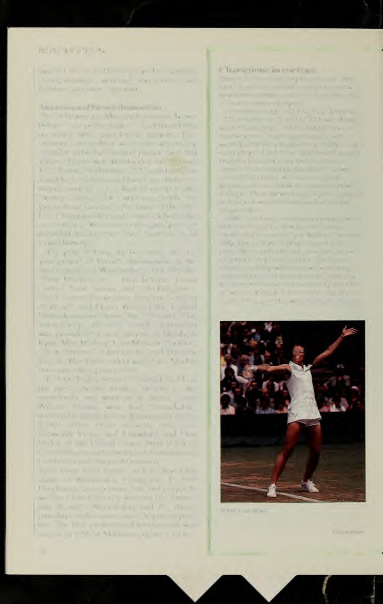
Hình 2.1: Giải phẫu 8 mặt phẳng cán vợt (Bevels) & Các kiểu cầm vợt căn bản (Continental, Eastern, Semi-Western).
Nói chung, những người chơi quyền lực yêu cầu khung cứng và tấm nền cảm ứng linh hoạt hơn.
Khi chọn vợt, hãy cân nhắc cẩn thận trọng lượng, độ cân bằng và độ bám của vợt.
Trước khi mua, hãy luôn thực hiện một vài cú vung vợt thực hành để đảm bảo rằng vợt không gây cảm giác nặng đầu và kéo cổ tay của bạn, đồng thời thử đỡ khung qua ngón tay đầu tiên duỗi thẳng của bạn tại điểm cân bằng (13 2 inch tính từ mông tay cầm).
Theo nguyên tắc chung, vợt phải cân bằng hoặc hơi nhẹ về phía đầu - hãy nhớ rằng tất cả các vợt sẽ có cảm giác nặng hơn khi bạn thực sự đánh bóng.
Nói chung, người chơi vervvoung nên bắt đầu với vợt ngắn, sau đó là vợt cấp cơ sở; phụ nữ dùng vợt nhẹ và nam giới với vợt nhẹ vừa hoặc trung bình.
Sẽ có sự lựa chọn về số lượng cán vợt, được hiển thị bên phải, cho các trọng lượng vợt khác nhau, tương ứng với các chu vi được hiển thị bên phải bên dưới.
Quấn tay quanh tay cầm gần mông.
Nếu đầu móng tay cái của bạn vượt quá móng tay thứ hai thì độ bám quá nhỏ.
đắt tiền, những quả bóng tennis, về lâu dài, sẽ là món đồ đắt tiền nhất của bạn vì chúng cần được thay thế liên tục.
Thông số kỹ thuật Buttend Trọng lượng Số lượng tay cầm Nhẹ (L) Lightmedium (LM) Trung bình(M) Top(T) uptol3oz 13tol3'/20z 13%tol4oz Trên 14oz 2,3,4or5 3,4,5,6 3,4,5,6 5,6,7
lòng bàn tay đẫm mồ hôi.
Dù chọn cách nào, bạn cũng phải luôn giữ vỏ tay cầm ở tình trạng tốt và cố gắng tập thói quen thay nó thường xuyên.
Đơn giản chỉ cần tháo lớp bọc cũ, dán lớp mới vào phần cuối của vợt và cuộn nó cẩn thận lên tay cầm, chồng cuộn dây theo một đường chéo nhỏ.
Cắt nó cho vừa vặn và dán phần cuối trước khi dùng băng dính màu che cạnh trên.
Số Grip Kích thước tay cầm Millimet Inch 108 Wk 3 111 4"^ 4 114 4V2 5 117 4% 6 120 43/4 7 123 47/8
Xâu dây Các dây dọc của vợt được gọi là dây chính và các dây có chiều rộng là dây chéo.
Vợt tennis chủ yếu được xâu bằng một trong khoảng 30 loại vật liệu tổng hợp trên thị trường hiện nay vì dây tổng hợp rẻ hơn nhiều so với dây ruột.
Nó không bị ảnh hưởng bởi độ ẩm và không bị hao mòn nhanh chóng do ma sát như ruột.
Tuy nhiên, những người chơi giải đấu vẫn có xu hướng thích dùng dây hơn vì nó có thể được buộc chặt hơn và mang lại cảm giác nhạy hơn, khiến nó trở nên lý tưởng cho cả người chơi cảm ứng và người chơi mạnh.
Vợt Anv có thể được căng theo yêu cầu của bạn, nhưng theo nguyên tắc chung, khung cứng có thể được xâu chuỗi chặt hơn khung mềm.
Dây quá chặt mang lại lực lớn hơn nhưng lại làm giảm khả năng kiểm soát, khiến dây bị mòn nhanh hơn và tuổi thọ của khung bị rút ngắn.
Độ rung ở đầu và cổ vợt được làm bằng nylon hoặc bông sáp.
Nó được dệt để tạo ra bề mặt nhám ở một mặt và bề mặt mịn ở mặt kia, do đó người chơi khi quay lên có thể gọi là "thô" hoặc "mịn".
Ngày nay, vợt thường không có độ rung và người chơi chỉ cần lật một đồng xu.
Kiểm tra dây Trên vợt đã được căng dây, hãy kiểm tra xem các dây có song song hay không bằng cách đảm bảo rằng kiểu đan xen của các dây là đồng nhất.
Kiểm tra độ căng bằng cách ấn ngón tay cái vào các góc của dây: cả bốn ngón tay cái sẽ có cảm giác giống hệt nhau.
Khi nhấn vào giữa, bạn sẽ cảm thấy "nhún" hơn so với lực căng ở các góc.
Kiểm tra dây của bạn thường xuyên bằng cách giữ đầu vợt hướng lên tai và gảy dây chính gần cổ vợt bằng một trong các móng tay của bạn.
Nếu căng dây, nó sẽ tạo ra âm thanh "ping" vang dội.
Bóng Điều quan trọng là bạn phải luôn cố gắng chơi với những quả bóng tennis đã được kiểm nghiệm chính thức nếu trò chơi của bạn muốn phát triển tốt.
Những thứ này có thể đắt tiền, nhưng việc mua những thứ rẻ tiền hơn sẽ chỉ là một nền kinh tế sai lầm.
Khi mua bóng, hãy thả chúng xuống sàn để xem có sự sống trong đó hay không - những quả bóng mới không nảy sẽ không tốt cho bạn chút nào.
Hiện có bóng không áp lực, không bị mất độ nảy và chơi rất giống với bóng thông thường (xem tr.272).
Ngay khi quả bóng nảy không thành công hoặc bề mặt mờ của nó bị mòn, đặc tính bay và nảy của nó sẽ thay đổi mạnh mẽ.
Quần áo và phụ kiện Quần áo tennis phải cho phép bạn tự do di chuyển mà không cản trở việc thực hiện cú đánh của bạn.
Có rất nhiều loại quần áo để lựa chọn — ưu tiên những loại được làm từ vải dễ giặt. Đàn ông nên cẩn thận với túi quần đùi vì chúng có thể vướng vào ngón tay; phụ nữ có thể thích kết hợp váy hơn váy và áo sơ mi vì có thể gây kích ứng do nhiệt và ma sát quanh vùng thắt lưng vào ngày nắng nóng.
Tất có đế và gót có đệm dày giúp thấm mồ hôi và hỗ trợ thêm.
Hãy thử mang hai đôi cùng một lúc để có hiệu quả giảm chấn tốt hơn khi bạn chơi trên các bề mặt rất cứng mà không bị ảnh hưởng;
Ngoài ra, hãy đeo một chiếc băng nhỏ hoặc tất co giãn bên dưới chiếc tất thi đấu của bạn (xem trang 264).
Dây đeo cổ tay bằng vải terry co giãn có thể được sử dụng để loại bỏ mồ hôi ở trán và lòng bàn tay trong khi chơi, đồng thời cũng có thể ngăn mồ hôi chảy xuống tay bạn.
Ngoài ra còn có các loại dây đeo cổ tay có hai mục đích, ngoài việc hoàn thành vai trò trên, còn có độ đàn hồi đủ chắc chắn để đóng vai trò hỗ trợ cổ tay chính hãng theo đúng nghĩa của chúng (xem tr.264).
Giày Giày tennis phải thoải mái không chỉ khi chạy mà cả khi phanh và rẽ.
Cần có sự hỗ trợ vòm rộng rãi.
Một số đôi giày có miếng bảo vệ gót chân rất hữu ích nhưng chúng phải được đệm mềm và có góc chính xác để không làm tổn thương gân Achilles.
Giày phải được buộc dây sâu về phía ngón chân và không được kéo lên quá chặt để vừa khít.
Vết cắt ở phần trên không được gây phồng rộp hoặc đau nhức quanh mắt cá chân.
Bảo vệ ngón chân cổ áo
HOWTOPLAYTHEGAME Tennis có thể được chơi dưới dạng cuộc thi cá nhân giữa hai người chơi (đánh đơn) hoặc trò chơi đồng đội giữa hai cặp người chơi (đánh đôi).
Mỗi trận đấu bao gồm một loạt điểm tạo thành một trò chơi;
một số trò chơi tạo thành một bộ;
và cuối cùng là số bộ tạo thành một trận đấu.
Giải vô địch Majormen được diễn ra trên cơ sở tốt nhất trong năm set;
các trận đấu khác và tất cả các trận đấu của nữ, trên cơ sở ba trận hay nhất.
Đường biên đôi / Đường giao bóng |/ A" Sân trái bên phải / Đăng "\ i f Bài đăng đơn Bên trái / Sân đơn Đường biên đơn 23m (27ft)—U Kignt Sân trung tâm / / 1,37m / Ngõ (4V2ft) 7 / Tâm điểm // / 23,77m (78ft) / // Vạch cuối sân (baseline) / :r (1 f 6,40m (21ft) >W0,91m / Oft)
/ 5,48m (18ft) A -10,97m (36ft) — / Vào hoặc ra Trong sân, các đường bao quanh sân, hoặc một phần của sân, được coi là khu vực của sân, sao cho nếu một phần của bóng chạm đường thì bóng vẫn ở trong sân.
Bắt đầu một trận đấu đơn. Quyết định ai sẽ giao bóng trong ván đầu tiên có thể được thực hiện bằng cách quay vợt (xem trang 23) hoặc tung đồng xu.
Người thắng trong lượt quay hoặc tung bóng sẽ quyết định giao bóng hay nhận giao bóng, chọn kết thúc hoặc yêu cầu đối thủ của mình đưa ra lựa chọn.
Sau đó, các đấu thủ vào vị trí tương ứng của mình ở hai đầu sân đối diện và dành một chút thời gian (bốn phút trong trận đấu) để khởi động các cú đánh của mình để chuẩn bị cho trận đấu.
Giao bóng Người giao bóng phải luôn bắt đầu từ bên phải, hoặc trước tiên, ra sân và phải đứng sau đường biên trong phạm vi phần mở rộng tưởng tượng của tâm điểm và đường biên của mình.
Người giao bóng phải đưa bóng lên không trung bằng tay theo bất kỳ hướng nào, sau đó dùng vợt đánh bóng trước khi bóng chạm đất.
Bóng phải qua lưới trước khi nảy trong sân giao bóng theo đường chéo đối diện với anh ta.
Khi điểm đã được quyết định, người giao bóng sẽ giao bóng từ phần sân bên trái sang phần giao bóng bên trái của đối thủ, hoặc phần sân thứ hai (có lợi).
Người nhận bóng có thể đứng ở vị trí mình muốn ở đầu bên kia của sân để thực hiện cú đánh trả nhưng không được thực hiện cú giao bóng hoặc để bóng nảy lần thứ hai trước khi đánh bóng.
Sân đơn JohnMcEnroe Sân đôi Footfaulting Lỗi footfault xảy ra nếu một trong hai chân chạm đường biên cuối hoặc sân trong đường cuối sân trước khi bóng được đánh;
Ngoài ra, nếu phần chân của bạn mở rộng phù hợp với phần mở rộng tưởng tượng của dấu trung tâm như minh họa bên dưới.
Lỗi chạm chân được trình bày chi tiết ở trang 102. Gót chân phải của người giao bóng ở phía trên đã đi quá phần kéo dài của tâm, gây ra lỗi chạm chân.
STARTIXGASINGLESMATCH Ghi điểm trong một trò chơi, set và match Trong một trò chơi, điểm của servo luôn được gọi trước để tránh nhầm lẫn.
Bốn điểm liên tiếp sẽ giúp một trong hai người chơi thắng hoàn toàn trò chơi và có thể được ghi theo các biến thể được hiển thị trong biểu đồ bên dưới.
Khi tỷ số là 0, người chơi phải giành được hai điểm liên tiếp để giành chiến thắng trong trò chơi.
Điểm đầu tiên giành được sau điểm thua là điểm có lợi; bất cứ khi nào người chơi có lợi thế mất điểm tiếp theo, điểm sẽ quay trở lại điểm thua.
Một hiệp đấu được quyết định khi một trong các vận động viên (cặp đôi) thắng sáu ván.
Nếu điểm số đạt Máy chủ thắng bốn điểm 15-0 (Mười lăm 30-0 (Fhirtv - 40-0 (Bốn mươi - - tình yêu) tình yêu tôi ove) Trò chơi với máy chủ Trò chơi tình yêu Người nhận thắng bốn điểm 0-15 (Yêu - mười lăm) 0-30 (Tình yêu - thirtv) 0-40(Tình yêu - fortv) Trò chơi để nhận Trò chơi tình yêu Người phá vỡ điểm số tiebreakvstem được sử dụng khi điểm số đạt đến
tổng cộng sáu hoặc tám ván, mỗi ván ngoại trừ set cuối cùng trong đó set có lợi thế thông thường sẽ được áp dụng.
Tuy nhiên, nó được sử dụng trong các set cuối cùng của một số trận đấu trong nhà và một số giải đấu nhất định.
Hệ thống tính điểm cơ bản như sau: 1 Người chơi (hoặc cặp) đầu tiên giành được bảy điểm sẽ giành chiến thắng trong tiebreak và tỉ số đó sẽ được ấn định nếu anh ta dẫn trước với cách biệt hai điểm (7-0 đến 7-5).
tỷ số nhẹ nhàng đạt 6-6, tiebreak tiếp tục cho đến khi một trong hai người chơi giành được hai điểm.
Việc tính điểm bằng số được sử dụng.
2 Người chơi đến lượt giao bóng sẽ giành điểm đầu tiên.
Đối thủ giao bóng hai điểm tiếp theo, sau đó mỗi đấu thủ lần lượt giao bóng hai điểm liên tiếp cho đến khi xác định được tiebreak.
3 Điểm đầu tiên của tiebreak được thực hiện từ sân bên phải với lượt giao bóng sau đó luân phiên như trong hệ thống tính điểm thông thường.
4 Plavers thay đổi sau sáu điểm chẵn và khi kết thúc loạt tiebreak.
5 Trận tiebreak được tính là một ván đổi bóng, nhưng nếu sự thay đổi này diễn ra vào lúc bắt đầu tiebreak thì nó sẽ bị trì hoãn cho đến ván thứ hai của hiệp tiếp theo.
6 Vận động viên tôihoặc cặp) giao bóng đầu tiên trong ván tiebreak phải nhận giao bóng ở ván đầu tiên của hiệp sau.
5-5 thì một người chơi hoặc một cặp phải thắng hai ván liên tiếp để thắng set 7-5.
Đây là một tập hợp lợi thế (kết thúc với việc dẫn trước hai ván đấu).
Ngoài các giải vô địch lớn và các trận đấu của Davis Cup dành cho nam, khi thi đấu 5 set hay nhất, tất cả các giải đấu đều có quy tắc tốt nhất trong 3 set cho cả vận động viên nam và nữ.
Điểm của người chiến thắng được ghi trước tiên, do đó, trận đấu hay nhất trong ba set có thể là 6-4, 6-3 hoặc có thể là 6-2, 3-6, 6-4.
Các bộ lợi thế có thể kéo dài trận đấu vô thời hạn nếu nó không dành cho các đối thủ hòa (xem bên dưới).
Cả hai người chơi đều giành được 1 điểm mỗi người 15-15 (Mười lăm tất cả) 2 điểm mỗi 30-30 (Ba mươi tất cả) 3 điểm mỗi người 40-40 (Deuce) Máy chủ hoặc người nhận phải thắng hai điểm liên tiếp;
ghi điểm thay thế sẽ đảo ngược điểm thành deuce.
Quy tắc đấu đôi đặc biệt Đối với đánh đôi, máy chủ có thể đảm nhận bất kỳ vị trí nào phía sau vạch cuối sân (baseline) giữa điểm giữa và đường biên đôi.
Sau lượt xoay và gọi, đội giao bóng quyết định ai trong số hai người chơi sẽ giao bóng trước, sau khi đã xác định, thứ tự không thể thay đổi cho đến khi một hiệp đấu được hoàn thành.
Cặp còn lại quyết định xem ai sẽ giao bóng trong ván thứ hai.
Đối tác của máy chủ đầu tiên giao bóng trong ván thứ ba và người chơi còn lại chưa giao bóng trong ván thứ tư.
Sau đó, thứ tự sẽ quay trở lại từ đầu và tiếp tục cho đến khi thắng một set.
Nếu người chơi nhận ra mình đang giao bóng không đúng lượt ở giữa ván đấu thì người chơi đáng lẽ phải giao bóng phải thực hiện ngay lập tức.
Điểm số điểm hiện tại không ổn định và bất kỳ lỗi nào được thực hiện cũng được tính.
Người nhận ván phải quyết định sân nào sẽ nhận dịch vụ cho ván nhận đầu tiên của họ vì sân nhận không thể thay đổi cho đến khi một hiệp đã được chơi.
Người chơi nhận sai sân phải tiếp tục cho đến hết trận đấu trước khi trở lại đúng vị trí.
Vai trò của trọng tài, trọng tài và trọng tài. Vai trò chính của trọng tài là đảm bảo sự công bằng và tuân thủ các quy tắc của LawnTennis (xem trang 279).
Anh ta cũng có nghĩa vụ phải luôn ghi chép chính xác điểm số;
điều này bao gồm việc gọi lỗi và điểm và thông báo điểm sau mỗi trận đấu và hiệp đấu cũng như mỗi lần chuyển đổi.
Anh ta được yêu cầu kiểm tra độ cao của lưới trước khi thi đấu và cả trong trận đấu nếu anh ta cho rằng nó đã bị thay đổi.
Trong trận đấu, quyết định của trọng tài là quyết định cuối cùng đối với mọi vấn đề thực tế và bất kỳ đấu thủ nào thể hiện sự không đồng tình đều có thể bị loại.
Anh ta có thể ra lệnh phát lại bất kỳ điểm nào, thậm chí đến mức lấn át người xếp hàng.
Nếu anh ta không chắc chắn về một quy tắc nào đó, anh ta nên chuyển nó đến trọng tài, người có thể bác bỏ quyết định của trọng tài nếu anh ta thấy phù hợp.
Vai trò chính của trọng tài là điều hành giải đấu cho ban quản lý.
Trọng tài được bổ nhiệm có quyền bổ nhiệm trọng tài biên, trọng tài và các quan chức sân đấu khác.
Anh ta không phải là trọng tài thứ hai, nhưng có quyền quyết định cuối cùng về bất kỳ điểm luật nào được giao cho trọng tài chính hoặc bởi một cầu thủ.
Trong các giải vô địch và thi đấu trong giải đấu, trọng tài biên là những trọng tài đủ tiêu chuẩn theo quyền riêng của họ, những người này cũng có thể được triệu tập làm trọng tài lưới hoặc trọng tài lỗi chân.
Họ được bố trí xung quanh sân trên những chiếc ghế được bố trí cách xa khu vực thi đấu và nhìn dọc theo các hàng mà họ đã được chỉ định làm trọng tài.
Số lượng nhân viên trực tuyến tối đa được phép là mười một;
theminimum re- '^Vy Umpire , Trọng tài lỗi bóng A Linesman ft Ballbov yêu cầu là sáu người cho mỗi trận đấu, trong trường hợp đó, người giao bóng sẽ di chuyển đến một ghế trống đối diện với vạch giao bóng ở đầu kia của sân trong các trận đấu chẵn.
Toàn bộ hạn ngạch của các quân nhân và quan chức sân đấu trong các giải vô địch được thể hiện trong sơ đồ bên dưới.
Nhiệm vụ cụ thể của trọng tài biên là chỉ ra lỗi và quyết định các điểm liên quan đến đường lối của mình và trong bất kỳ trường hợp nào mà trọng tài không được coi trọng nên hoàn thành nhiệm vụ của mình.
Những hướng dẫn hữu ích dành cho người biên tập như sau: Người giao bóngKhông được xem bóng đang bay.
Quan sát một điểm nằm giữa đường giữa và đường biên đối với sân giao bóng xa và điểm thứ ba ở xa đường biên đối với sân ở gần.
Đường giữaXem một điểm trên đường cách lưới khoảng một foot về phía lưới từ đường giao bóng.
Vạch cuối sân (baseline) Khi bạn nhận thấy một quả bóng sắp hạ cánh gần đường biên của bạn, hãy nhìn vào đường phía trước của quả bóng để biết chính xác nơi nó tiếp đất.
Cố gắng dự đoán những cú vô lê và những cú đập sâu.
Đường biênXem quả bóng cho đến ngay trước khi nó chạm đất, sau đó nhìn nhanh về phía đường biên.
Nếu đó là đường biên giao bóng, hãy quan sát một điểm trên đường biên khoảng một foot về phía lưới tính từ góc của đường giao bóng và đường biên.
Gọi “ra” hoặc “lỗi” một cách rõ ràng, sau đó ra hiệu bằng cách đưa tay về phía bóng.
Định nghĩa cú đánh Từ "cú đánh" trong quần vợt được dùng để mô tả hành động tinh tế của vợt khi đánh bóng.
Hành động này có thể ở dạng vung, ném hoặc "đấm", tùy thuộc vào việc bạn đang thực hiện cú chạm đất, giao bóng hay chuyền bóng.
Để được coi là một cú đánh, hành động đó phải có sự tiếp xúc lâu dài hoặc cảm giác “ở với bóng” để đạt được khả năng kiểm soát tối đa.
Thực hiện cú đánh tốt là nền tảng của mọi môn quần vợt tốt.
Nếu bạn có khả năng đánh bóng ổn định, với tốc độ và độ chính xác, về phía bất kỳ phần nào của sân mà bạn nhắm đến thì bạn sẽ là một cầu thủ thoải mái và tự tin trong trận đấu.
Có ba loại cú đánh chính và mỗi loại có các biến thể cú đánh riêng trong loại đó.
Cú chạm đất về cơ bản là những cú vung vợt được sử dụng để đánh bóng sau khi nó chạm đất.
Chúng chủ yếu được sử dụng ở sân sau và khu vực giữa vạch cuối sân (baseline) và các đường giao bóng tương ứng, như thể hiện trong sơ đồ bên dưới.
Có nhiều kiểu đánh bóng, nhưng hai kiểu đánh chính là cú đánh thuận tay (trên cùng bên phải), đánh bằng lòng bàn tay trước của bàn tay hướng về phía quả bóng đang tới; và cú đánh sau tay (dưới cùng bên phải), đánh bằng mu bàn tay hướng về phía quả bóng đang đến gần.
Giao bóng trả về và tập hợp vạch cuối sân (baseline) là một phần quan trọng trong chức năng tổng thể của những cú đánh này.
thuận tay trái tay
Giao bóng Mỗi điểm trong quần vợt được bắt đầu bởi một trong những đấu thủ giao bóng từ phía sau đường biên ngang của mình, qua lưới và vào phần sân giao bóng của đối thủ theo đường chéo đối diện.
Cú giao bóng này là một cú đánh miễn phí vào bóng (và được phép thực hiện một cú giao bóng khác nếu lần thử đầu tiên thất bại) và được thực hiện với một hành động ném bằng tay.
Sau khi thả ra, quả bóng phải được đánh trước khi nó có thể nảy lên và phải được đưa qua lưới trước khi nảy trong đường của sân giao bóng thích hợp.
rA A Giao bóng đơn B Giao bóng đôi Cú vô lê Đây là cú đánh được thực hiện vào bóng trước khi nó nảy lên.
Nó thường được chơi ở sân trước trong các loạt bóng bền (rally) và thường ở trên độ cao lưới.
Mục đích của cú vô lê là làm cho đối thủ của bạn nhanh chóng thực hiện cú đánh tiếp theo và giành điểm bằng cách đến gần lưới và "đấm" bóng vào một phần sân trống.
Khu vực mục tiêu Khu vực di chuyển
Định nghĩa cú đánh Trong khi cú đánh là hành động đánh bóng, từ "cú đánh" được dùng để mô tả hình dạng đường bay của quả bóng trong không khí và ra khỏi sân.
Các sơ đồ bên dưới chỉ ra cách bay Thứ nhất và thứ hai Chuyến bay đầu tiên của quả bóng là quỹ đạo của nó khi nó đi qua lưới về phía bạn;
chuyến bay thứ hai của nó xảy ra sau khi nó nảy lên phía lưới của bạn.
Biểu đồ bên phải cho thấy quỹ đạo điển hình của một cú đánh quần vợt trong đó quả bóng nảy lên, mặc dù những quỹ đạo này sẽ thay đổi tùy theo mức độ xoáy tác dụng lên quả bóng.
mỗi cú đánh tạo ra một cú đánh đặc trưng.
Những cú đánh này có thể được thực hiện trong các tình huống khác nhau trên sân khi chúng được đấu tranh bằng cách sử dụng chúng, như được hiển thị ở trang đối diện.
Chuyến bay thứ hai Chuyến bay đầu tiên Hình dạng các cú đánh thường xuyên Cú chạm đất Đánh từ phía sau tâm của vạch cuối sân (baseline) đến vạch cuối sân (baseline) đối diện .
Chuyến bay thứ nhất và ^ thứ hai được hiển thị bên phải.
Cú giao bóng từ phía sau vạch cuối sân (baseline) của người giao bóng vào quả giao bóng theo đường chéo đối diện.
Chuyến bay đầu tiên dừng lại gần đường dịch vụ và quả bóng nảy lên để tạo ra chuyến bay thứ hai.
Cú vô-lê Khi đánh một cú vô lê, bóng chỉ bay một lần. Không có đường bay thứ hai vì vợt chặn bóng trước khi nó nảy lên, dẫn đến cú đánh ngắn hơn nhiều.
Cú lốp bóng Trong sơ đồ bên phải, một cú lốp bóng được hiển thị vượt qua lưới với biên độ lớn để tiếp đất chỉ cách vạch cuối sân (baseline) đối diện.
Quỹ đạo cao, vòng cung của lần bay đầu tiên làm cho quả bóng bay lên khá dốc so với mặt đất sau khi nảy lên, tạo ra lần bay thứ hai tương đối cao.
Các loại cú đánh Các loại cú đánh khác nhau mà bạn có thể gặp trong trận đấu được mô tả bên dưới.
Chúng chủ yếu được đặt tên theo mục đích sử dụng chiến thuật và hiệu ứng trận đấu.
Trong một số trường hợp, nét vẽ thực tế và tác dụng của nó giống nhau, nên tên của chúng bao hàm cả hai.
Ví dụ như bắn chip và bắn thả, trong đó tên được mô tả rõ ràng về chức năng của chúng.
Tuy nhiên, hầu hết các cú đánh có thể được thực hiện bằng các cú đánh khác nhau, chẳng hạn như người ta nói đến một cú đánh chéo bàn thuận tay xoáy lên hoặc một cú đánh tiếp cận trái tay cắt lát.
Cú sút dọcMột cú đánh gần đường biên từ cùng một nửa sân theo chiều dọc, tức là từ sân phải sang sân trái hoặc từ sân trái sang sân phải.
Cú đánh chéo sânMột cú đánh theo đường chéo từ sân phải sang sân phải hoặc từ sân trái sang sân trái.
Cú sút chuyềnMột cú sút trúng đích đối thủ của bạn khi anh ta đang tiến tới hoặc đứng trên lưới.
Cú sút tiếp cậnMột cú sút được thực hiện ngay trước lưới trong cuộc tấn công.
DropshotMột cú sút được thực hiện đi qua lưới với rất ít độ nảy.
Cú sút chipMột cú đánh ngắn được thực hiện với xoáy xuống để tiếp đất vào Bàn chân của đối thủ khi anh ta tiến lên, có nguy cơ mờ nhạt ở phần sân trước của anh ta.
Bắt đầu chơi Sau khi bạn đã chọn thiết bị chơi quần vợt và làm quen với hệ thống tính điểm cũng như sự khác biệt giữa cú đánh và cú đánh, bạn có thể tiến tới tìm hiểu những kiến thức cơ bản về chơi quần vợt: động tác chân, tính thời gian, cách đánh bóng, cách sử dụng cách cầm vợt và cách áp dụng độ xoáy.
Tất cả những điều này được mô tả ở các trang sau.
Cảm giác bóng Hiệp hội LawnTennis định nghĩa cảm giác bóng là "khả năng phản ứng tự nhiên với một quả bóng đang chuyển động để thực hiện một kỹ năng đơn giản".
Mọi người đều có cảm giác bóng ở một mức độ nào đó.
Điều này đôi khi có thể trở nên rõ ràng ở độ tuổi bình thường - một số trẻ có năng khiếu đến mức chúng có thể duy trì một loạt bóng bền (rally) nhẹ nhàng để chống lại bức tường khi được 18 tháng tuổi.
Tuy nhiên, các bậc cha mẹ muốn con mình phát triển niềm yêu thích với trò chơi này không nên nản lòng, tuy nhiên, nếu ban đầu khả năng dường như còn thiếu, nhưng nên tiếp tục khuyến khích con mình chơi quần vợt và cũng nên giới thiệu cho chúng các trò chơi bóng chuyển động khác bất cứ khi nào có thể.
Bạn có thể đánh giá xem một người có cảm giác bóng như thế nào bằng cách ném quả bóng theo yêu cầu và quan sát cách họ phản ứng.
Cảm giác bóng tốt có thể được phát triển thông qua các bài tập được mô tả dưới đây.
Giai đoạn 1 1 Tung bóng lên không trung.
Bắt nó đi.
Lặp lại 20 lần.
2 Tung bóng.
Bắt nó đi.
Lặp lại 10 lần.
3 Đập bóng thật mạnh.
Hãy đợi cho đến khi nó rơi xuống lần nảy thứ hai trước khi bắt nó.
4 Lặp lại 1 .
Lần này hãy quay một vòng tròn tại chỗ trước khi bắt bóng.
5 Ném bóng vào tường.
Bắt nó đi.
Lặp lại 20 lần.
Giai đoạn 2 (với một đồng đội) 1 Ném bóng qua lại và bắt bóng bằng cả hai tay mà không để bóng nảy lên.
2 Lặp lại 1, chỉ bắt bóng bằng tay cầm vợt.
3 Ném quả bóng qua lại để nó nảy trên mặt đất giữa bạn và dùng cả hai tay đỡ nó lên cao khi nó rơi từ trên đỉnh của quả nảy.
4 Lặp lại 3, chỉ sử dụng tay cầm để bắt bóng.
Giai đoạn 3 1 Đưa bóng trước tiên về phía bên phải của đồng đội, sau đó sang bên trái.
Anh ta bắt nó sau khi nảy và sau đó nảy nó sang phải hoặc trái của bạn để bạn phải di chuyển nhanh để bắt bóng trước khi nó nảy lên lần thứ hai.
2 Tung bóng ngắn và sang một bên để đồng đội của bạn phải di chuyển nhanh về phía trước để thu hồi bóng.
Hãy thay đổi bài tập này bằng cách ném bóng nhanh, chậm, ngắn và dài để có thể đạt được sự phát triển tối đa.
3 Khi đối tác của bạn quay mặt về phía bạn, hãy gọi và sau đó ném bóng về phía anh ta để anh ta quay lại và bắt;
anh ấy sẽ phải phản ứng sớm hơn với bài tập này.
Tung bóng sang phải và sang trái cho nhau.
Giai đoạn 4 (với vợt) 1 Tung quả bóng lên không trung khỏi dây vợt.
Giữ bóng nảy.
2 Tung quả bóng xuống sân khỏi dây vợt.
Giữ bóng nảy.
3 Tung quả bóng lên không trung khỏi dây, sau đó xoay vợt của bạn sao cho cú nảy tiếp theo bật ra khỏi bề mặt còn lại của dây.
Tiếp tục luân phiên mặt vợt giữa các lần đánh, làm quen với việc thay đổi góc của mặt vợt đồng thời tăng cường sức mạnh cho cổ tay.
4 Tung quả bóng xuống sân ngoài mép đầu vợt.
Giữ nó nảy lên.
5 Tung quả bóng lên không trung ở mép đối diện của đầu vợt.
Giữ nó nảy lên.
6 Thực hành lần lượt từ 1 đến 5 để xem liệu bạn có thể đạt được mục tiêu đã đặt ra hay không.
Ví dụ, ở bài tập 1 và 2, cố gắng giữ bóng nảy 10 lần, sau đó thử 20 lần;
trong bài tập 3, hãy thử lặp lại 6 lần rồi 12 lần;
trong bài tập 4 và 5, hãy thử lặp lại 5, 10 và sau đó 20 lần nếu có thể.
7 Để hỗ trợ cuối cùng cho việc phát triển khả năng cảm nhận bóng và kiểm tra sự tiến bộ của bạn, hãy thực hiện tất cả các bài tập trong khi di chuyển. Khi bạn thành thạo hãy thử bài tập 8, bài này giới thiệu "cảm giác" về một quả bóng đang quay.
8 Tung quả bóng lên không trung từ dây vợt. Khi bóng rơi, làm chệch hướng nó lên trên bằng cách cắt mạnh qua đáy quả bóng bằng dây từ phải sang trái.
Tiếp tục làm chệch hướng nó lên trên mỗi khi nó rơi. Khi bạn có thể tiếp tục, hãy đảo ngược hành động của bạn từ trái sang phải dọc theo đáy quả bóng.
Cuối cùng, hãy thử xen kẽ evervhit.
Các động tác cơ bản Có ba động tác cơ bản trong quần vợt: vung, ném và đấm, tất cả đều được sử dụng ở mức độ nhiều hay ít bất kể bạn đang đánh cú nào.
Một khi bạn đã học được những động tác này, bạn sẽ có thể liên hệ chúng với bất kỳ hình thức đánh bóng mới nào mà bạn học được.
Ba hành động, cùng với những kiến thức cơ bản trong quần vợt, được mô tả dưới đây.
Xoay Động tác xoay người là một chuyển động dài được thực hiện chống lại bóng một cách bình thường khi người ném bóng ở sân sau hoặc phía sau đường giao bóng của họ.
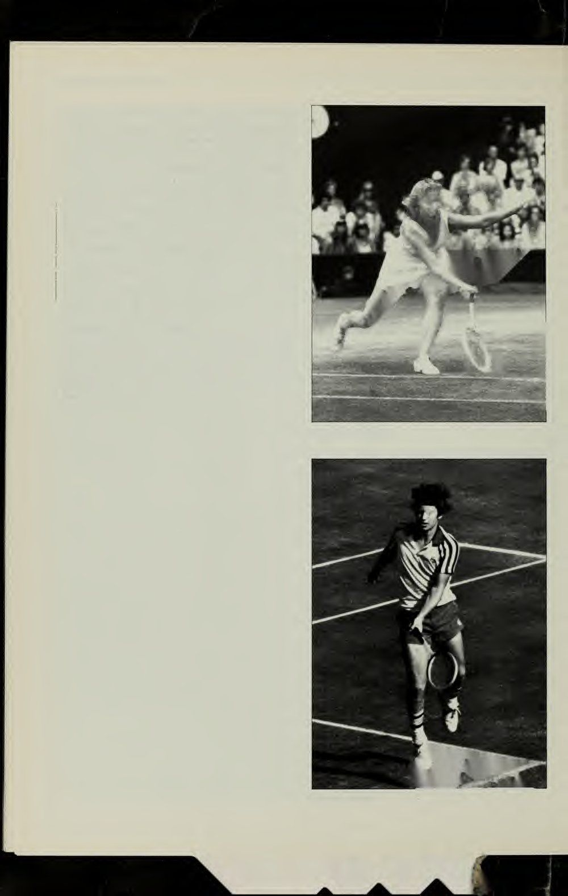
Hình 2.2: Vật lý khí động học của độ xoáy (Spin) — Quỹ đạo bay và độ nảy của Topspin đối đầu Underspin/Slice.
Figure 2.2: Aerodynamics of Spin Mechanics — Trajectory and bounce dynamics of Topspin vs. Underspin.
Ném Hành động ném bao gồm uốn cong khuỷu tay trước khi duỗi thẳng hoàn toàn cánh tay.
Cú ném được sử dụng để đẩy vợt vào bóng khi giao bóng ở điểm bắt đầu từ phía sau đường cuối sân hoặc khi thực hiện một cú đập bóng.
Đấm Hành động này là một chuyển động ngắn, sắc bén, được sử dụng để đánh bóng khi đánh bóng trên không, thường là ở phần sân trước khi có rất ít thời gian để làm bất cứ điều gì khác.
Nó chủ yếu được sử dụng khi chuyền bóng.
Đấm vung
BẮT ĐẦU TRÒ CHƠI Định vị bóng Để định vị cơ thể của bạn trong mối quan hệ với bóng sao cho kết quả kiểm soát và thời gian hoàn hảo, bạn phải biết, khi bạn di chuyển vào khu vực đánh, chính xác ở đâu và khi nào đầu vợt của bạn sẽ tiếp xúc với bóng.
Bạn có thể đạt được vị trí hoàn hảo thường xuyên nếu bạn thực hiện theo quy trình ba điểm được mô tả bên dưới.
Chiều cao của bóng Cú chạm đất Cú vô-lê Người nhận Bóng rơi từ đầu gối đến cao ngang eo Bóng gặp trước khi rơi, khi có thể, giữa thắt lưng và chiều cao vai Bóng rơi ở giữa dây ở phần duỗi thẳng hoàn toàn của cánh tay vợt Khoảng cách của bóng với cơ thể Cú chạm đất Tay vợt vươn vào trong vị trí hướng vào trong, khoảng cách vừa phải Cú vô-lê Gần cơ thể hơn một chút so với cách chơi đột quỵ trong sân Dịch vụ Khoảng cách của tay vợt trên cao
mối quan hệ của bóng với cơ thể Cú đánh thuận tay-đối diện với hông dẫn đầu Trái tay trước cú vô lê hông dẫn đầu Dịch vụ Phía trước cơ thể Đánh bóng Một cách tốt để phát triển khả năng căn thời gian cơ bản của bạn, đặc biệt nếu bạn là người mới bắt đầu, là luyện tập đánh bóng bằng lòng bàn tay.
Cố gắng duy trì một pha đánh bóng dựa vào tường hoặc qua lưới với một đối tác luyện tập và làm quen với việc đánh bóng từ đầu gối đến chiều cao ngang lưng ở một khoảng cách thoải mái.
Shorttennis Đây là một trò chơi đặc biệt hữu ích (xem trang 276) dành cho người chơi trẻ, vì đây là bước đệm tuyệt vời để tiến tới trò chơi nâng cao hơn.
Quần vợt ngắn được chơi theo hầu hết các luật quần vợt bình thường trên sân cầu lông có kích thước 13 mét (42 ft) bv5,8-6 mét (19 ft) với lưới cao 0,78 mét (2 ft 7 in).
Dịch vụ có thể là dưới cánh tay hoặc trên cánh tay và nên thay đổi hai điểm.
Người chơi đầu tiên đạt 11 điểm sẽ thắng trò chơi.
Di chuyển tới bóng Cách tiếp cận tốt động tác bằng chân phải được đo lường và kiểm soát, cho phép bạn điều chỉnh vai và chân theo đường bay của bóng để bạn giữ thăng bằng chính xác để chơi bóng (trọng lượng của bạn phải dồn vào chân sau, sẵn sàng chuyển sang chân trước để trùng với cú vung về phía trước).
Cách tiếp cận cơ bản bằng chân sẽ đưa bạn tiến vào khu vực đánh bóng (phần sân nơi bóng chuyển động có thể đánh thành công) từ vị trí phía sau song song với đường bay của bóng, như minh họa bên dưới.
Định vị có thể được cải thiện bằng cách đánh giá chính xác hai đường bay của bóng. Một sai lầm phổ biến do những người chơi thiếu kinh nghiệm mắc phải là tập trung vào đường bay đầu tiên và lao về phía bóng, sau đó thấy mình quá gần để chơi ở đường bay đầu tiên. Thực hành thả bóng sang bên phải và hơi ở phía trước cơ thể khi bạn thu vợt lại.
Cố gắng đánh nó ở độ cao từ đầu gối đến thắt lưng khi nó rơi từ trên đỉnh của cú nảy.
Lặp lại 10 lần cho mỗi bên, sau đó thử luân phiên giữa phải và trái.
Sau đó thử nảy bóng lên thay vì thả nó xuống.
Sử dụng một thế đứng cởi mở Trong một số tình huống khẩn cấp nhất định, có thể không có thời gian để sử dụng động tác chân bình thường: ví dụ như khi trả bóng nhanh và trong những pha cú vô-lê gần chạm trán trên lưới.
Trong những tình huống như vậy, động tác bằng chân ở tư thế mở (có thể liên quan đến việc di chuyển về phía quả bóng với bàn chân gần nó nhất, như minh họa trong sơ đồ bên dưới) có thể là giải pháp duy nhất (xem thêm trang 245).
a%o quả bóng.
Để xác định được vị trí chính xác để đánh bóng, bạn phải cố gắng phán đoán vị trí xảy ra cú nảy thứ hai, bằng cách quan sát đường bay đầu tiên của quả bóng khi nó rời khỏi vợt của đối thủ.
Hãy chọn vị trí ngay trước nơi bạn nghĩ cú nảy thứ hai sẽ diễn ra, trọng lượng sẵn sàng được chuyển khi bạn vung vợt về phía trước.
Đánh cú đánh thứ 2 Luyện tập với một đối tác Yêu cầu đối tác của bạn đứng ở phía bên kia của lưới và đưa bóng vào nách về phía bên phải, đồng thời luyện tập điều chỉnh vị trí và thời gian để bạn có thể đánh chúng vào đúng thời điểm.
Lặp lại 10 lần mỗi bên.
Đổi vai với bạn tập của bạn và thực hành luân phiên các bên.
Sau đó tiến tới một loạt bóng bền (rally).
STARTINGTOPLA\ Sử dụng trọng lượng của bạn Thời điểm tốt không chỉ là vấn đề đánh bóng bằng vợt vào một thời điểm cụ thể, mà còn liên quan rất nhiều đến việc chuyển trọng lượng cơ thể một cách chính xác sao cho trùng với chuyển động xoay của vợt.
Mức độ bạn chuyển trọng lượng của mình sẽ quyết định tốc độ chính xác của cú đánh của bạn.
Động tác chân và động tác vợt đúng cách phải được kết hợp với chuyển động về phía trước của trọng lượng cơ thể để có được thời điểm hoàn hảo cho cú đánh thực hiện tốc độ.
Xem bóng Cách đơn giản nhất để cải thiện khả năng kiểm soát của bạn là quan sát bóng kỹ hơn.
Xem bóng đúng cách có nghĩa là nhìn bóng theo đúng dây vợt của bạn.
Nếu bạn làm đúng điều này, ngay cả quả bóng di chuyển nhanh nhất cũng sẽ dường như chậm lại để bạn có thể đánh một cách thoải mái.
3-4 feet cuối cùng của đường bay của quả bóng trước khi nó được đánh là đặc biệt quan trọng để xác định thời điểm và kiểm soát tốt;
Nếu bạn rời mắt khỏi quả bóng trong giai đoạn quan trọng này để xem đối thủ đang làm gì, bạn gần như chắc chắn sẽ đánh sai quả bóng hoặc làm hỏng cú sút hoàn thành.
Hãy cúi đầu xuống và tập trung mắt vào quả bóng theo cách một nhiếp ảnh gia tập trung ống kính máy ảnh vào đối tượng để có được một bức ảnh hoàn hảo.
Trên thực tế, việc quan sát quả bóng trong tích tắc của cú va chạm với dây vợt sẽ là một điều bất khả thi - bạn sẽ tự động thấy mình đang nhìn về phía trước quả bóng.
Tuy nhiên, hãy cảm thấy như thể bạn đang quan sát quả bóng ngay trên dây.
Tốc độ đầu vợt tính giờ Nếu bạn đang khuấy bóng thì có thể là do bạn đang vung vợt quá sớm: khi người chơi chuẩn bị quá muộn, điều đó thường dẫn đến việc anh ta giật nhanh quả bóng và ném nó quá sớm chỉ một phần của một giây.
Điều này là do không cho phép thay đổi tốc độ đầu vợt trong quá trình đánh.
Khi bạn thực hiện một cú vung vợt tích cực vào bóng, vợt sẽ tập hợp động lượng trong suốt cú đánh, đạt tốc độ tối đa trong 3-4 feet cuối cùng của cú xoay^, và nếu bạn không tính đến cú đánh thuận tay này, bạn sẽ đánh bóng trước khi bạn dự định.
Nếu bạn tạm dừng hoặc giảm bớt khi kết thúc quá trình chuẩn bị hoặc ở mức độ hấp thụ của bạn khi giao bóng hoặc nghiền nát, điều đó sẽ điều chỉnh thời gian của bạn.
Tốc độ thay đổi mà đầu vợt sẽ di chuyển khi đánh một cú đánh và một cú giao bóng được hiển thị bên dưới.
Tốc độ đầu vợt tối đa phải đạt được ngay trước khi đánh.
Nhịp điệu của tất cả các cú đánh của bạn sẽ giúp bạn đạt được khả năng tăng tốc có kiểm soát này từ việc chuẩn bị vào vùng đánh.
Dịch vụ tăng tốc độ Giảm tốc độ
Chuẩn bị cho cú đánh của bạn Một phần quan trọng của việc chuẩn bị trước khi giao bóng và tư thế sẵn sàng thực hiện cú đánh là áp dụng tư thế đúng, được sử dụng làm điểm xuất phát cho tất cả các cú đánh của bạn. Có hai tư thế chuẩn bị khi thực hiện các cú đánh khác.
Cả hai vị trí này đều đang chơi quần vợt: tư thế giao bóng, được áp dụng như mô tả bên dưới.
Tư thế sẵn sàng Khi vào tư thế sẵn sàng, bạn phải đối mặt với đối thủ với hai chân rộng bằng vai, đầu gối hơi cong và trọng lượng của bạn dồn lên đầu bàn chân.
Cố gắng đứng giữa các cú đánh thuận tay và cú đánh trái tay có thể để bạn có thể xoay người và chuẩn bị tốt như nhau.
Giữ vợt bằng tay cầm thuận tay và đỡ cổ vợt bằng tay không lót: điều này sẽ giúp bạn thay đổi cách cầm giữa các cú đánh dễ dàng hơn nhiều.
Giữ khuỷu tay của bạn cách xa cơ thể và tập trung nhìn vào những gì đang xảy ra ở đầu bên kia của sân.
Một số cầu thủ thích cúi xuống một chút khi họ đang ở vị trí phát bóng hoặc trả giao bóng vì điều đó khiến mắt họ gần với đường bay của bóng hơn.
Luôn trở về vị trí sẵn sàng giữa các cú đánh vì nó sẽ tạo cơ sở tốt nhất cho cú đánh tiếp theo.
Tư thế giao bóng Khi áp dụng tư thế giao bóng, bạn nên đứng ngay sau đường biên ngang với cơ thể gần như nghiêng về phía lưới và hai chân dang rộng bằng vai, đầu gối hơi cong với trọng lượng dồn lên bàn chân sau, sẵn sàng chuyển khi bạn bắt đầu đặt bóng lên.
Giữ vợt ở phía trước bạn bằng tay cầm giao bóng của bạn và nhắm nó theo hướng bạn định đánh bóng;
đặt bóng vào giữa dây bằng tay không chơi của bạn. Tư thế nghiêng sang một bên sẽ cho phép lực được truyền qua chân và tác dụng trên một phạm vi dài.
Bên ném quân trang có thể chống lại sự hình thành của hành động ném.
Cú giao bóng cơ bản hoặc phẳng được thực hiện từ một vị trí gần như nằm ngang, điều này sẽ trở nên mạnh mẽ hơn khi bạn áp dụng nhiều xoáy hơn cho cú giao bóng của mình.
Vị trí cơ bản cơ bản
Cách cầm vợt Eleven cơ bản và các biến thể của chúng được trình bày bên dưới từ ba kiểu đã phát triển trong quần vợt sân cỏ - Phương Đông, Châu lục và Phương Tây.
Tay cầm phía Đông và phía Tây lần đầu tiên được phân loại ở bờ biển phía Đông và phía Tây của Mỹ và được phát triển dựa trên các kiểu sân tương phản của hai khu vực.
Cách cầm vợt kiểu lục địa và các biến thể của nó có thể bắt nguồn từ Anh nhưng đã tạo ra một phong cách thường được coi là phong cách Châu Âu và Úc.
Rất có thể bạn sẽ thấy sự thay đổi cách cầm vợt giữa trái tay và thuận tay là cách tốt nhất để chơi những cú đánh mạnh mẽ, có kiểm soát, theo yêu cầu của phong cách chơi phương Đông.
Quần vợt một tay - kiểu Lục địa - đòi hỏi sức mạnh cổ tay và thời gian mà người mới bắt đầu thường không có.
Tôi đề xuất phong cách chơi sử dụng cách cầm vợt kiểu Eastern cho các cú chạm đất và cách cầm vợt kiểu Continental để giao bóng và chuyền bóng, như được mô tả ở trang 40 và 41.
Các đường nghiêng và mặt phẳng của cán vợt (hiển thị bên phải) giúp bạn xác định vị trí bàn tay của mình một cách chính xác theo chữ "V" giữa ngón trỏ của ngón cái.
Nghiêng trên bên trái Mặt trước hoặc mặt sau Nghiêng dưới bên trái Mặt phẳng dưới Nghiêng dưới bên phải Lịch sử các kiểu cầm vợt Tay cầm thuận tay và tay sau của phương Đông có nguồn gốc từ các sân đất nện ở miền Đông Hoa Kỳ.
Những cú đánh này tạo ra một cú nảy khiến bóng luôn ở độ cao ngang lưng. Tốt nhất có thể đạt được cú đánh mạnh bằng cách "bắt tay" với vợt.
Tay cầm kiểu Eastern đáp ứng yêu cầu này một cách hoàn hảo và cũng có thể được sử dụng hiệu quả cho các quả bóng cao hơn và thấp hơn.
Cách cầm vợt kiểu Continental được phát triển trên các mặt sân cỏ sơ khai và trên mặt sân đất nện mềm ở Châu Âu, nơi bóng thường ở mức thấp và cách cầm vợt linh hoạt với lòng bàn tay ở phía trên tay cầm có thể được sử dụng để chơi bóng hiệu quả ở cả cú thuận tay và trái tay.
Kiểu cầm thuận tay kiểu Continental hoàn chỉnh, gần như là một kiểu cầm trái tay kiểu phương Đông, khuyến khích các cú công bóng cắt lát và không thúc đẩy lối chơi thuận tay mạnh mẽ.
Cách cầm bóng thuận tay và trái tay của phương Tây có xu hướng không hiệu quả trước những quả bóng thấp, rộng.
Tay cầm phương Đông 1 Toàn bộ thuận tayChữ "V" được hình thành bởi ngón tay cái đầu tiên được đặt ở bên phải của tâm của mặt trên của vợt, với lòng bàn tay và đốt ngón tay lớn của ngón trỏ ở mặt sau.
Ngón tay cái và các ngón tay của bạn phải được quấn quanh tay cầm bằng phần đệm của ngón tay thứ hai, thứ ba và út của bạn nắm chặt mặt trước.
Ngón tay đầu tiên của bạn hơi xòe ra - đặt lên tay cầm.
2 Sửa đổi thuận tayChữ "V" giữa ngón trỏ của ngón cái được đặt ở giữa mặt phẳng trên cùng và các ngón tay không hướng lên trên mặt trước nhiều như đối với kiểu cầm vợt hoàn toàn.
3 FullbackhandChữ "V" nằm nghiêng phía trên bên trái và ngón cái được đặt chéo trên mặt sau.
Ngón tay đầu tiên-erknuckleonnghiêng phía trên bên phải.
Kiểu cầm kiểu lục địa 4 Tay cầm cải tiến chữ "V" bên trái trung tâm trên mặt phẳng trên cùng, lòng bàn tay hướng về phía mặt phẳng trên và khớp ngón tay lớn đầu tiên ở trên, hoặc ở cạnh dưới, nghiêng phía trên bên phải. Ngón tay cái xung quanh mặt phẳng phía trước.
5 Chữ "V" thuận tay hoàn toàn ở giữa góc nghiêng phía trên bên trái và ngón tay cái bao quanh mặt phẳng phía trước.
Ngón tay cái lớn gần mép trên của góc nghiêng phía trên bên phải.
6 Trái tay được sửa đổi"V như trong cách cầm vợt thuận tay tương đương. Lòng bàn tay hướng về phía mặt phẳng trên cùng với đốt ngón tay đầu tiên ở trên, hoặc ở cạnh dưới của, nghiêng phía trên bên phải. Ngón tay cái ngang qua hoặc quấn quanh mặt phẳng phía sau.
7 Fullbackhand "V" như trong cách cầm vợt thuận tay tương đương, mông ngón tay cái được đặt chéo trên mặt sau như đối với Easternbackhand.
Cách cầm vợt kiểu Tây 8 thuận tay và dịch vụ xoáy lên ngược chữ "V" trên, hoặc ở mép dưới của, góc nghiêng phía trên bên phải.
Lòng bàn tay được đặt về phía mặt phẳng phía dưới, với cổ tay ở phía sau mặt phẳng phía sau và phần đệm của ngón tay đầu tiên ở mặt phẳng phía trước;
đốt ngón tay lớn được đặt ở phía dưới bên phải của cán vợt.
9 Cú giao bóng trái tay và cắt ngược Chữ "V" được di chuyển xuống phía sau mặt phẳng phía sau và đầu vợt lật lại để bóng có thể được đánh bằng mặt dây giống như với cú thuận tay của phương Tây.
Cách cầm vợt hai tay 10 Thuận tay hai tayBàn tay chơi sử dụng cách cầm vợt thuận tay kiểu Eastern - mông của bàn tay tựa lên phía trên và áp vào ngón cái của tay đỡ.
Tay hỗ trợ bên dưới được đặt giữa tay cầm trái tay kiểu Lục địa và kiểu Đông với ngón tay cái bao quanh mặt phẳng phía sau.
11 Tay trái hai tayBàn tay chơi được đặt giữa cách cầm vợt trái tay kiểu Đông và Lục địa;
Bàn tay hỗ trợ nằm phía trên, theo kiểu cầm thuận tay kiểu phương Đông, để mang lại một cú đánh chắc chắn cho cổ tay.
Chọn cách cầm vợt của bạn Phần lớn người chơi phù hợp nhất với phong cách chơi kiểu phương Đông và nên bắt đầu bằng cách sử dụng cách cầm vợt thuận tay kiểu phương Đông để giao bóng và đánh trên cao, cũng như cách cầm vợt thuận tay kiểu phương Đông và cách cầm trái tay phương Đông để chơi các cú chạm đất và vô lê, chỉ cần chuyển từ thuận tay sang trái tay theo yêu cầu.
Khi trò chơi của bạn phát triển, một số sửa đổi là cần thiết để giúp bạn cải thiện.
Bạn sẽ thấy ở trang 38 có một phiên bản sửa đổi của kiểu cầm vợt thuận tay kiểu Eastern, và cách cầm vợt kiểu Eastern (cách cầm vợt thuận tay được sửa đổi đầy đủ và cách cầm vợt trái tay) là kiểu chơi đánh trong sân được sử dụng tốt nhất.
Bạn phải quyết định nên sử dụng cách cầm vợt thuận tay nào trong hai cách cầm vợt thuận tay.
Bạn có thể đưa ra lựa chọn này khi tham khảo ý kiến của huấn luyện viên hoặc người cố vấn về cơ sở của cách cầm vợt phù hợp nhất với thuộc tính tự nhiên của bạn và bổ sung tốt nhất cho phong cách chơi tổng thể của bạn.
Vị trí của lòng bàn tay dọc theo tay cầm trong cách cầm vợt thuận tay hoàn toàn kiểu phương Đông sẽ mang lại cảm giác kiểm soát và độ chắc chắn cho phép bạn đánh những cú đánh mạnh và sâu từ sân sau.
Mặt khác, cách cầm vợt thuận tay đã được sửa đổi sẽ tiếp cận kiểu cầm vợt kiểu lục địa có cổ tay tự do hơn và sẽ mang lại sự linh hoạt hơn so với kiểu cầm vợt hoàn toàn kiểu phương Đông.
Mặc dù nó mang lại sự kết hợp tốt nhất giữa sự chắc chắn và tự do, và hoàn toàn linh hoạt trong cách chơi tiếp cận và sân trước, nhưng nó có thể áp dụng ít sức mạnh hơn một chút so với cách cầm vợt thuận tay hoàn toàn.
Do đó, cách cầm mà bạn chọn sẽ phụ thuộc vào loại trò chơi mà bạn thích (xem trang 194).
Nếu bạn thích lối chơi cơ bản, kiểu cầm vợt hoàn toàn kiểu phương Đông sẽ thích hợp hơn, trong khi nếu bạn thiên về lối chơi toàn sân, kết hợp tiếp cận và giao bóng và chơi vô lê với trò chơi đánh bóng trên mặt đất của bạn, kiểu cầm vợt đã sửa đổi sẽ phù hợp hơn với phong cách chơi của bạn.
Vì trái tay về bản chất là mặt phòng thủ nên rất cần có cách cầm vợt mạnh nhất và đáng tin cậy nhất có thể nếu thực hiện bất kỳ hình thức tấn công hoặc phản công nào.
Cách cầm vợt trái tay kiểu phương Đông là câu trả lời cho hầu hết các vấn đề mà người chơi ở bên này gặp phải.
Ngón tay cái theo đường chéo trên mặt sau mang lại độ chắc chắn và lực tương tự như cách cầm vợt hoàn toàn thuận tay.
bạn có thể muốn xem xét việc sử dụng nó như được giải thích bên dưới.
Trò chơi của bạn sẽ được củng cố bằng cách phát triển việc sử dụng tay cầm Continental đã được sửa đổi dành riêng cho việc giao bóng, chuyền bóng và đánh trên cao.
Cách cầm vợt kiểu Đông sẽ giúp bạn phát triển những cú chạm đất chắc chắn, có tốc độ và cách cầm vợt kiểu Lục địa đã được sửa đổi sẽ mang đến cho bạn sự kết hợp giữa sức mạnh và độ xoáy trong giao bóng cũng như khả năng kiểm soát trong cú vô lê của bạn.
Giao bóng và chơi đánh đầu Mặc dù một số tay cầm có thể được sử dụng để giao bóng, nhưng cách cầm vợt Continental đã được sửa đổi cho đến nay là cách cầm vợt thành công nhất cho mục đích này.
Các yêu cầu chính khi chơi từ một vị trí cố định phía sau đường biên và nhắm tới khu vực nhỏ nhất trên sân (tất cả các điều kiện tiên quyết của việc giao bóng) là khả năng kiểm soát, độ chính xác và sức mạnh rất cao.
Cách cầm vợt được sử dụng phải cho phép sử dụng tối đa cổ tay, có thể kết hợp với việc chuyển trọng lượng để tạo ra mặt vợt hoàn chỉnh cho bóng để tạo lực, mặt có góc cạnh để tạo xoáy.
Tính linh hoạt, khả năng kiểm soát và tốc độ được cung cấp bởi tay cầm Continental đã được sửa đổi khiến nó trở nên lý tưởng để giao bóng tốt và chơi trên cao.
Cú vô-lê SoundgroundChơi đánh ở mọi cấp độ đều yêu cầu một số thay đổi về cách cầm giữa cách đánh thuận tay và đánh trái tay, tuy nhiên rất nhẹ.
Đánh vô lê, khi yếu tố thời gian trở nên quan trọng, một cú đánh phải đủ để trao đổi nhanh trên lưới.
Vì bạn nên thực hiện cú vô lê với cách cầm giao bóng khi tham gia vào trò chơi giao bóng và chuyền bóng, nên việc tiến bộ để chơi giao bóng, chuyền bóng và đập bóng với cùng một cách cầm bóng là điều hợp lý.
Tay cầm tốt nhất cho cả ba chắc chắn là tay cầm Continental đã được sửa đổi.
Những người mới bắt đầu đã quen với việc chơi cú vô-lê với cách cầm vợt chạm đất nên thực hiện quá trình chuyển đổi khi họ sử dụng cách cầm vợt Continental đã được sửa đổi để giao bóng.
Bạn sẽ thấy dễ dàng thực hiện cú vô lê trái tay với kiểu cầm Continental đã được sửa đổi hơn là bằng tay thuận tay, và do đó, có thể thích chơi cú vô lê đầu tiên sau cú đánh tiếp cận thuận tay với kiểu cầm kiểu Eastern đã được sửa đổi rất giống nhau, và sau đó thực hiện một chút thay đổi khi cần phải thực hiện cú vô lê trái tay.
Kiểm soát vợt Kiểm soát vợt chính xác là một phần thiết yếu của quá trình tinh chỉnh cú đánh và cần được thực hành trước khi hoàn thiện các chi tiết khác của cách chơi cú đánh.
Nó liên quan đến việc đảm bảo rằng đầu vợt đi qua vùng đánh một cách chính xác và kiểm tra xem mặt vợt có được đặt đúng vị trí để đạt được hiệu quả mà bạn yêu cầu hay không.
Hai điều khiển này được mô tả dưới đây.
Kiểm soát đầu vợt Kiểm soát đầu vợt có nghĩa là kiểm tra xem đầu vợt của bạn có di chuyển chính xác qua vùng đánh hay không, trong suốt các hành động vung, ném và đấm.
Các hình vẽ dưới đây cho thấy các đường đi xác định mà vợt phải đi ngay trước và ngay sau khi đánh.
Bản thân cú đánh xảy ra gần điểm giữa của vùng đánh trong mỗi trường hợp.
Những cú xoay cơ bản Kiểm soát mặt vợt thuận tay Góc của mặt vợt ảnh hưởng trực tiếp đến khả năng kiểm soát bóng của bạn ở cú đánh và đường bay tiếp theo của nó khi bạn thực hiện theo.
Góc chính xác mà mặt vợt gặp bóng sẽ phụ thuộc phần lớn vào các hoàn cảnh, chẳng hạn như khoảng cách của bạn với lưới, độ cao mà bạn đánh bóng, bóng nảy như thế nào và mức độ xoáy được áp dụng, cùng với chiều cao và sức mạnh thể chất của bạn cũng như cách cầm vợt và cú đánh bạn sử dụng.
Có thể kiểm soát đáng kể bằng cách mở mặt vợt (nghiêng nó về phía sau với mép dưới) hoặc đóng nó lại (nghiêng về phía trước với mép trên).
Ba vị trí mặt vợt cơ bản, cùng với những tác động khác nhau của chúng lên bóng, được mô tả dưới đây.
Mặt vợt phẳng Sơ đồ bên phải cho thấy một góc nhìn cách điệu về quả bóng di chuyển thẳng ra khỏi mặt vợt trước khi lao xuống dưới tác dụng của trọng lực.
Mặt vợt mở Mặt vợt mở sẽ làm cho quả bóng hướng lên trên và khiến nó bắt đầu quay về phía sau.
Đường đi và độ xoáy chính xác của bóng cũng phụ thuộc vào đường đi và tốc độ vung đầu vợt.
Mặt vợt đóng Mặt vợt Adosed sẽ làm cho quả bóng hướng xuống dưới và làm cho nó quay về phía trước.
Tôi hướng đi chính xác và quay cũng phụ thuộc vào đường đi của cú xoay đầu chuột.
c
Tìm hiểu độ xoáy của quả bóng bay và cách nó nảy sẽ bị ảnh hưởng rất nhiều bởi lượng xoáy được áp dụng ở cú đánh.
Ngược lại, độ xoáy sẽ bị ảnh hưởng bởi việc bóng có tiếp xúc với mặt sân hay dây của vợt tennis hay không.
Top-pin, underspin và sidespin-ba loại xoáy chính - cùng với tác dụng của chúng trong các tình huống khác nhau, được mô tả dưới đây.
Tuy nhiên, trước khi xem xét những điều này, sẽ rất hữu ích nếu xem xét đường bay của một quả bóng không quay và cách nó bật ra khỏi sân hoặc vợt.
Bóng không xoáy Ba sơ đồ bên dưới thể hiện đường bay của một quả bóng không quay và cách nó nảy ra khỏi sân và vợt của bạn. Khi đang bay, nó sẽ bị chậm lại do lực cản của không khí và bị trọng lực ép xuống.
Nó sẽ bật ra khỏi bề mặt sân theo một góc gần như tương đương với cách tiếp cận của nó và bật ra khỏi dây vợt gần như cùng tốc độ và góc với cách tiếp cận của nó.
Bóng đang bay Sức cản của không khí Vận tốc trọng lực Bóng chống lại sân Bóng chống vợt Bóng xoáy trong đường bay Xoay Áp dụng cho quả bóng sẽ khiến nó quay;
đường bay của nó sẽ thay đổi tùy theo kiểu xoáy được áp dụng.
Ba kiểu chính của xoáy lên, xoáy xuống, xoáy ngang hoặc cắt lát cùng với các tác động của chúng lên bóng, được mô tả dưới đây.
Xoáy lên Bề mặt trên của quả bóng quay ngược lại sức cản của không khí tạo ra ma sát tăng lên và do đó áp lực buộc quả bóng hướng xuống dưới.
Xoáy xuống Ngược lại xảy ra so với xoáy lên, và bóng được nhấc lên và giữ lâu hơn nếu nó không có xoáy do áp lực bên dưới bóng tăng lên.
Sidespin Bất kỳ bên nào quay chống lại sức cản của không khí sẽ buộc quả bóng lệch sang phía đối diện.
Bóng nảy ra khỏi sân Cách một quả bóng nảy ra khỏi sân khi di chuyển có xoáy sẽ bị ảnh hưởng bởi nhiều yếu tố, chẳng hạn như lượng lực tác dụng trong cú đánh, độ cao mà nó tiếp cận và loại xoáy được sử dụng.
Loại bề mặt sân mà bóng được đánh cũng có thể tạo ra Thực hành xoáy lên. Trong thực tế, độ cao mà từ đó quả bóng xoáy lên tiếp cận và sức mạnh đằng sau nó, khiến bóng tiếp cận ở một góc rất dốc, nảy cao hơn và xa hơn so với cú đánh công không xoáy.
sự khác biệt đáng kể.
Đường nảy và đường bay điển hình của bóng được đánh bằng xoáy lên, xoáy xuống và xoáy ngang được mô tả bên dưới.
Trong hầu hết các trường hợp, kết quả thực tế của việc đánh bóng bằng chốt trên hoặc xoáy xuống sẽ rất khác so với những gì bạn có thể mong đợi.
Sơ đồ lý thuyết, bên trái, cho thấy đường đi lý thuyết của một quả bóng xoáy lên.
Quả bóng lao xuống, bám chặt vào mặt sân và nảy lên theo dòng nước, ở một góc nhỏ hơn góc tiếp cận của nó.
OO Underspin O.O (Lý thuyết G Sơ đồ bên trái cho thấy đường đi lý thuyết của một quả bóng xoáy dưới.
Quả bóng bám chặt vào mặt sân và nảy lên cao với một góc lớn hơn góc tiếp cận của nó.
Thực hành Sơ đồ bên phải cho thấy, khi một quả bóng xoáy dưới thực tế được đánh bằng lực và tiếp cận ở một góc thấp, độ xoáy của nó khiến quả bóng trượt và nó sẽ nảy thấp hơn dự kiến.
Xoáy ngang Oo o Lý thuyết và thực hành Trong trường hợp bóng được đánh bằng xoáy ngang, lý thuyết và thực hành là như nhau.
Sơ đồ bên trái cho thấy cách tiếp cận của một cú đánh xoáy ngang.
Trong trường hợp này, độ xoáy quay theo chiều kim đồng hồ và nó làm cho quả bóng chuyển động từ phải sang trái theo quan điểm của người nhận.
Việc thay đổi quả bóng sẽ tiếp tục quay theo cách tương tự khi nó tiếp tục uốn cong sang trái.
HIỂU VÒNG QUAY Bóng quay khỏi vợt Sau khi tìm hiểu cách một quả bóng với các kiểu xoáy khác nhau di chuyển trong không khí và bật ra khỏi sân, bạn sẽ sẵn sàng xem xét độ xoáy ảnh hưởng như thế nào đến quả bóng khi nó nảy ra khỏi mặt vợt, với điều kiện là không có lực phản lực mạnh nào tác dụng lên nó.
Trong trường hợp xoáy lên và xoáy xuống, quả bóng sẽ tiếp tục quay với cùng một góc quay khi nó rời khỏi vợt.
Nhưng khi bạn đánh bóng thì hiệu ứng xoáy của nó sẽ thay đổi, xoáy trên trở thành xoáy dưới và ngược lại.
Trong trường hợp xoáy ngang, góc mà bóng rời khỏi dây cũng sẽ khác với góc tiếp cận của nó, vì nó thay đổi từ xoáy bên phải sang xoáy bên trái và ngược lại. Hiểu biết sâu sắc về những tác động này là cần thiết nếu bạn muốn học cách chống lại xoáy của đối thủ.
Với kinh nghiệm, bạn sẽ có thể tự động điều chỉnh mục tiêu và góc mặt vợt của mình để bù đắp cho những cú đánh của đối thủ.
Xoáy ngang 1 Bóng tiếp cận từ bên phải với độ xoáy ngược chiều kim đồng hồ.
Nó sẽ khiến khuôn mặt lệch về bên trái nhiều hơn bạn mong đợi.
2 Bóng tiếp cận từ bên trái với chuyển động quay ngược chiều kim đồng hồ.
Nó sẽ khiến khuôn mặt nghiêng về bên phải ít sắc nét hơn mong đợi.
Underspin 1 Ballreboundsup ra khỏi vợt.
Sau khi cắn vào dây, quả bóng sẽ quay với độ xoáy bên dưới và nó sẽ rời vợt cao hơn dự kiến.
2 quả bóng dội ngược xuống.
Dây vợt sẽ cắn và bóng sẽ bật lại cao hơn dự kiến, một lần nữa với xoáy xuống.
1 Ballreboundsup ra khỏi vợt.
Nó sẽ làm cho vợt có độ xoáy lên sau khi cắn vào dây và sẽ bật trở lại thấp hơn dự kiến.
2 quả bóng dội ngược xuống.
Nó sẽ tuột khỏi dây khi có xoáy lên và sẽ khiến vợt ở vị trí thấp hơn mức bạn mong đợi.
Xoáy kết hợp Khi một quả bóng được đánh với xoáy lên, xoáy xuống hoặc xoáy ngang, trục xoay quanh nó khó có thể nằm ngang hoặc vuông góc chính xác với mặt sân.
Có nhiều khả năng là sẽ có sự kết hợp giữa hai trục "thuần túy" này và sự kết hợp, chẳng hạn như xoáy lên và xoáy ngang.
Các sơ đồ bên phải cho thấy hai trục thuần túy của spin trên và spin bên dưới và cả spin bên trái và bên phải, cùng với một trục kết hợp điển hình.
Kết hợp xoáy Xoáy ngang thuần túy ^ ^ - Xoáy lên thuần túy Xoáy xuống
Phần 3
Phần 2: Cơ chế đánh bóng & xoáy thuận tay
Part 2: Forehand Drive & Spin Mechanics 55 đoạn phân tích chuyên sâu
CÚT ĐẤT: Cú công bóng thuận tay Cú thuận tay là điểm khởi đầu tốt cho người mới bắt đầu vì nó được chơi ở một bên cơ thể của bạn, điều này có vẻ tự nhiên nhất để đánh.
Hầu hết người chơi đều hung hãn hơn ở phía thuận tay và chính sự hung hãn này mà bạn phải khai thác để tạo ra một cú đánh tấn công đáng tin cậy trong suốt trận đấu.
Những yếu tố cần thiết của cú đánh Tay cầm chắc chắn và cú vung cổ tay chắc chắn từ vai là những điều cần thiết cho một cú đánh có kiểm soát.
Cách cầm vợt thuận tay kiểu Eastern được khuyên dùng (như minh họa ở hình bên) cho người mới bắt đầu vì bản thân nó sẽ khuyến khích cổ tay vững chắc.
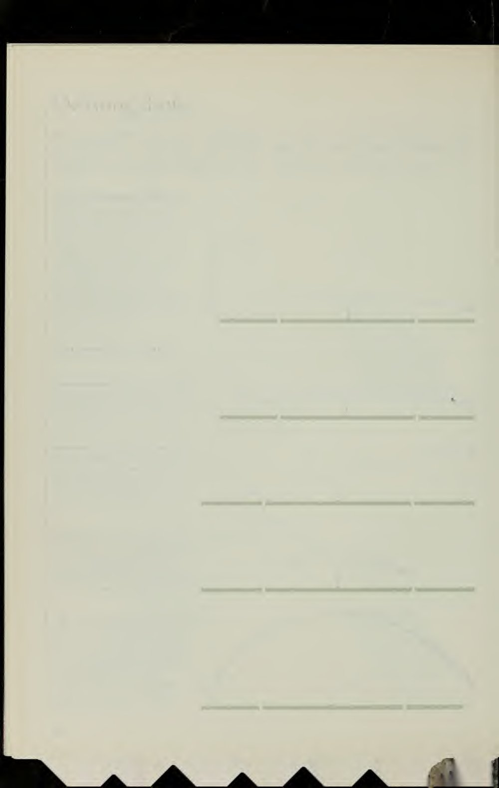
Hình 3.1: Giai đoạn mở đà và xoay nguyên khối thân trên (Unit Turn & Backswing) cho cú thuận tay.
Figure 3.1: Unit Turn & Preparation Backswing for the Forehand Drive.
Di chuyển bàn chân của bạn để bạn vào tư thế nằm ngang song song với đường bay của quả bóng cũng là điều cơ bản.
Từ vị trí này, bạn có thể đánh bóng với khả năng kiểm soát và sức mạnh cao nhất, vung vợt qua phía trước cơ thể từ hông này sang hông khác.
Việc chuyển trọng lượng của bạn sang bàn chân trước sẽ dồn trọng lượng cơ thể của bạn vào cú đánh.
Làm thế nào để hoàn thiện cú đánh Trình tự dưới đây cho thấy cú đánh thuận tay cơ bản được thực hiện từ phía sau sân.
Khi sao chép nó, hãy tập trung vào động tác chân của bạn, bước vào bằng chân trước và giữ đủ xa quả bóng để duỗi thẳng cánh tay của bạn khi vung vợt.
Đối với tất cả các cú đánh quần vợt, có những đặc điểm của cú thuận tay đặc biệt quan trọng.
Các yếu tố chính này, chẳng hạn như vòng giật, vùng đánh và đường tiếp theo, được mô tả trong một số trang tiếp theo để bạn có thể đặc biệt chú ý đến chúng khi thực hiện cú đánh. Chuẩn bị càng sớm càng tốt bằng cách đưa mặt sau vợt ngang hoặc thấp hơn một chút so với chiều cao đánh và xoay vai cho đến khi vai không đánh của bạn hướng vào bóng.
Để bắt đầu cú đánh về phía trước với bóng, bạn phải tạo thành một vòng với đầu vợt, để khuỷu tay của cánh tay đánh thư giãn để cú đánh về phía trước bắt đầu từ dưới độ cao đánh bóng.
Bước vào bằng chân trước (trái) để chuyển trọng lượng về phía trước và thực hiện cú đánh.
Xem bóng ngay trên dây.
Động tác chân Để định vị bản thân theo hướng bay của bóng, hãy xoay chân phải và bước vào bằng chân trái.
1 Chọn vị trí sẵn sàng (xem trang 37) phía sau điểm trung tâm của vạch cuối sân (baseline).
2 Bắt đầu xoay bàn chân phải của bạn, di chuyển trọng lượng của bạn theo nó.
Hãy để đầu gối của bạn uốn cong khi bạn thả tay không chơi ra khỏi cổ họng của mặt vợt.
ĐẤT ĐẤT luyện tập và hoàn thiện cú đánh của bạn.
Trong một trận đấu, bạn sẽ phải sử dụng cú thuận tay của mình trong mọi tình huống khó khăn, mỗi tình huống đều phụ thuộc vào tốc độ và hướng đánh của đối thủ.
Tay cầm thuận tay kiểu Đông Cách cầm thuận tay kiểu Đông (xem trang 38) sẽ giúp bạn kiểm soát tốt cú đánh thuận tay của mình vì nó khuyến khích một cú xoay cổ tay chắc chắn.
Lòng bàn tay được đặt ở vị trí thuận lợi ở phía bên của tay cầm, mang lại cảm giác \ mạnh mẽ cho cú đánh.
TT i '>d$?£%W& f \ Khoảng cách từ quả bóng Bạn phải mở rộng cánh tay đánh của mình khi đánh.
Nếu bạn phải đánh bóng bằng khuỷu tay cong khi sử dụng kiểu cầm vợt thuận tay kiểu phương Đông, bạn ở quá gần quả bóng s**T**\ và sẽ mất sức và khả năng kiểm soát.
3 Lấy vợt ra sau, xoay vai.
Thư giãn cú đánh của bạn và tạo thành một vòng với đầu vợt.
4 Bước vào bằng chân trước (trái) khi bạn vung đầu vợt lên để đón bóng.
Siết chặt tay cầm, giữ cổ tay chắc chắn và đầu vợt ngang với cổ tay.
5 Đánh bóng đối diện với hông trước (trái) của bạn khi trọng lượng của bạn di chuyển về phía trước trên đầu gối trái đang cong của bạn.
Hãy cúi đầu ^và xem bóng.
6 Nhấc đầu vợt theo hướng đánh.
7. Kết thúc cú đánh bằng đầu cao với tay vợt thẳng.
Chân phải của bạn sẽ vung qua để cơ thể bạn hướng về phía lưới khi bạn lấy lại vị trí sẵn sàng.
Cú thuận tay Cải thiện cú đánh của bạn Để nâng cao hiệu quả của cú đánh thuận tay cơ bản, nó sẽ giúp bạn nghiên cứu các yếu tố chính của cú đánh như được hiển thị bên dưới.
Đặc biệt lưu ý hình dạng tổng thể của cú đánh với cú xoay về phía trước tăng nhẹ qua vùng đánh.
Cần phát triển cảm giác nâng trong cú vung về phía trước vì điều này sẽ truyền độ xoáy lên tối thiểu (xem trang 42) cần thiết cho quả bóng để giữ cho nó không bay ra ngoài đường biên ngang của đối thủ khi đánh bóng mạnh trong cuộc tấn công.
Sử dụng cách cầm vợt thuận tay kiểu phương Đông có nghĩa là giữ cho cổ tay đặc biệt chắc chắn khi vung vợt về phía trước.
Khi bạn lần đầu tiên bắt đầu học cách đánh, con lợn tự nhiên có thể dễ dàng trở thành một động tác đánh lái chậm giúp hướng bóng đến nơi bạn muốn nhưng hoàn toàn thiếu tốc độ đầu vợt cần thiết cho một cú tấn công thuận tay.
Cú đánh cứng này là phổ biến và thường là kết quả của việc rút lui hạn chế.
Luyện tập không có bóng để kiểm tra các đặc điểm dưới đây.
Việc kết hợp động tác giật lại và vung về phía trước với động tác giật mượt mà sẽ tăng tốc độ đầu vợt khi đánh.
Vòng lặp này hình thành một cách tự nhiên nếu bạn thả lỏng khuỷu tay của cánh tay vỗ trong giây lát khi kết thúc động tác thu hồi.
Dưới áp lực, nhiều máy ép không làm được điều này và giữ cho cánh tay luôn cứng.
Thư giãn khuỷu tay Khi kết thúc quá trình thu lại, hãy thư giãn cung vurel để cánh tay của bạn có thể duỗi thẳng một chút. Khuỷu tay cứng ở cuối quá trình thu lại ít nhất sẽ làm giảm đáng kể tốc độ đầu vợt.
A Chuẩn bị Một chuyển động giật uyển chuyển kết hợp động tác thu lại và vung về phía trước để đầu vợt đạt tốc độ tối đa ngay trước khi va chạm.
Cú giật này khuyến khích lực nâng trong cú vung về phía trước để kiểm soát xoáy lên.
Luôn nhắc nhở bản thân nhắm vai trước (trái) của bạn về phía điểm đánh và chỉ quay về phía lưới sau khi bóng đã được đánh.
B Vùng đánh Vùng đánh bắt đầu đối diện với hông sau và kết thúc ngay sau cú đánh.
Khi bạn vuốt qua nó, hãy giữ vững cổ tay.
Đưa mặt vợt vào ô vuông của quả bóng theo đường bay.
C Theo dõi Đừng để đầu vợt rơi xuống sau khi tiếp xúc với bóng.
Theo dõi đường bay của bóng bằng vợt, giữ mặt vợt ổn định và cánh tay của bạn duỗi thẳng về đích.
ĐẤT ĐẤT Xây dựng cú thuận tay trong trò chơi của bạn Đối thủ của bạn sẽ thay đổi tốc độ và hướng đánh của họ, và trong diễn biến bình thường của trận đấu, bạn sẽ phải xử lý các đường bóng thấp, cao, rộng và ngắn.
Để kiểm soát tối đa, bạn nên tiếp cận bóng càng sớm càng tốt.
Chơi bóng rộng và bóng ngắn được hiển thị bên dưới.
Khi trả bóng thấp, hãy đảm bảo rằng bạn uốn cong đầu gối Bóng rộng 1 Bắt đầu chạy về phía khu vực đánh.
2 Chuẩn bị với thời gian quay lại ngắn hơn so với ổ cơ bản.
Phanh và xoay chân phải của bạn sao cho nó song song với đường bay của quả bóng.
3 Chuyển trọng lượng của bạn sang chân trước, bước xa hơn so với cú đánh không được thực hiện trên đường chạy và vung vợt của bạn.
4 Sau khi thực hiện xong, đẩy mạnh LV bằng chân phải và quay lại phía sau điểm trung tâm.
tốt, giữ thẳng lưng.
Phát triển cảm giác "ngồi" vào quả bóng.
Bất cứ khi nào bạn đang đánh bóng từ cuối sân và phải đối phó với một quả bóng có độ nảy cao và chậm, hãy lùi lại trong quá trình chuẩn bị cho cú đánh và để bóng rơi ở giữa vai và độ cao ngang eo trước khi vuốt bóng lên trên nhằm mục đích sâu về phía đường biên cuối sân của đối thủ.
Kéo dài thời gian theo dõi của bạn để kiểm soát.
Bóng ngắn 1 Chạy về phía bóng đang đến gần bằng những bước nhỏ nhanh.
Bắt đầu lấy lại vợt khi bạn chạy.
2 Xoay chân phải của bạn về phía đối diện nơi quả bóng sẽ nảy lên lần thứ hai, giữ nghiêng theo đường bay.
3 Bước song song với đường bay của bóng và vung vợt.
Bạn sẽ có cảm giác như đang chạy qua quả bóng.
4. Anh ấy tiếp tục xé chân khi bạn di chuyển về phía trước để thực hiện cú vô lê ở lượt quay tiếp theo.
Luyện tập cú thuận tay Trên sân, bạn sẽ cần càng nhiều bóng càng tốt trong bất kỳ hộp đựng phù hợp nào.
Mỗi lần lấy một quả bóng trong tay không chơi của bạn và từ vị trí sẵn sàng phía sau điểm trung tâm trên đường biên theo chiều quay và lấy vợt về phía sau.
Thả quả bóng sao cho nó nảy sang một bên và ở phía trước bạn một chút và vung vợt hướng lên trên để gặp quả bóng đang rơi đối diện với hông dẫn đầu của bạn.
Lặp lại điều này và với mỗi loạt bóng mà bạn đánh tập trung vào một phần tử quan trọng riêng biệt của cú đánh.
Nếu bạn không chắc chắn về tính năng này, hãy tập đánh bóng mà không cần bóng, dừng vợt để bạn có thể quan sát lỗi của mình.
Kết hợp các cải tiến lần lượt để đánh hàng chục quả bóng bằng một cú đánh đầy đủ.
Cách luyện tập tốt nhất ngoài sân đấu là đánh hết cú đánh này đến cú đánh khác vào bảng sau.
Bạn có thể mua bảng rổ di động (xem trang 276), hoặc bạn có thể có một cái.
Bất kỳ bức tường cách âm nào có không gian phía trước đều phù hợp.
Tốt nhất là đánh dấu một đường cao 90cm (3 feet) dọc theo tường để thể hiện chiều cao của lưới và một đường khác cao hơn 60cm (2 feet).
Đứng cách tường từ 15 đến 20 feet và ở giữa các hàng.
Giữ nguyên các ngón chân, trở về vị trí sẵn sàng sau mỗi cú đánh trước khi bước trở lại cho cú đánh tiếp theo.
Luyện tập với người cùng tập Nếu bạn có một người cùng tập, bạn có thể đưa bóng cho nhau trên sân, đầu tiên thả bóng cho người đánh bóng, sau đó ném bóng dưới cánh tay để mô phỏng cú đánh của đối thủ.
Khi bạn đã có được sự tự tin, hãy đi đến các đường cơ bản tương ứng của mình và cố gắng hoàn thành các pha đánh bóng 10, sau đó 20 gậy đánh các cú công bóng thuận tay sâu vào các góc thuận tay của nhau như minh họa bên phải.
Những cú sút sâu tốt hạ cánh ngay bên trong đường biên đối diện sẽ khiến đối thủ phải rời xa lưới.
Tiếp tục các ngón chân của bạn và một khi bạn đang đánh một cách tự tin, hãy đảm bảo rằng bạn di chuyển trở lại vị trí của bạn phía sau dấu trung tâm của vạch cuối sân (baseline) như bạn sẽ làm trong một trò chơi trước khi chuyển sang cú đánh tiếp theo.
Ngoài sân, bạn có thể sử dụng một đối tác để thực hiện một trận đấu tập trên bảng rổ.
Một trong các bạn phải bắt đầu bằng cách thả một quả bóng và đập nó vào tường giữa vạch 3 và 5 feet.
Sau đó, đối tác của bạn bước vào và thực hiện cú đánh của mình và sớm thay thế cho đến khi một trong số bạn bỏ lỡ một điểm bằng cách trượt khu vực mục tiêu hoặc để bóng nảy hai lần.
Sử dụng hệ thống tính điểm realgame.
Nếu một trong hai người cảm thấy rằng kỹ thuật đánh của bạn đã kém đi trong quá trình luyện tập thi đấu này, hãy tập luyện mà không ghi điểm trong một khoảng thời gian để chú ý đến các cú đánh của bạn cho đến khi bạn trở lại tự tin.
ĐẤT ĐẤT Sử dụng thuận tay của bạn Cú thuận tay cơ bản là người chiến thắng điểm và trận đấu.
Có khả năng là bạn sẽ chơi nó từ phía bên phải của vạch cuối sân (baseline) của bạn. Từ đây, bạn có ba lựa chọn: đánh một cú đánh sâu qua sân đến góc thuận tay của đối thủ;
để thực hiện một cú đánh bóng sâu và song song với đường biên tới góc trái tay của đối thủ, hoặc chơi bóng sớm hơn một chút, xa hơn phía trước hông dẫn đầu của bạn, để đánh các cú đánh bóng góc cạnh khác nhau một lần nữa chéo sân, giữa đường giao bóng và đường biên.
Các cú công bóng thuận tay chéo sân và xuống đường sâu Các cú công bóng thuận tay góc cạnh Vitas Gerulaitis giữ được kết thúc của một cú thuận tay.
Hãy chú ý rằng cánh tay vợt của anh ta gần như thẳng và mặt vợt vẫn chưa được kiểm soát hoàn toàn.
Hông và vai xoay người về phía lưới nhưng vị trí của chân cho thấy cú sút được thực hiện theo hướng bay của bóng.
Cú công bóng thuận tay xoáy lên.Quay thuận tay là một biến thể của cú đánh cơ bản, sự khác biệt là mức độ xoáy lên (xem trang 42) tác dụng lên bóng.
Đối với cú đánh cơ bản, một lượng xoáy lên tối thiểu được áp dụng, đủ để điều khiển một quả bóng đánh mạnh theo một quỹ đạo nông.
Đối với một cú thuận tay xoáy lên, các hiệu ứng cực đoan hơn của xoáy lên (quỹ đạo vòng cung và cú đá nảy) được sử dụng để tăng cường lối chơi thuận tay tích cực.
Các cú đẩy xoáy lên sâu và hiệu quả đến từ việc chuẩn bị sớm cho cú vung vợt về phía trước, định vị âm thanh và chuyển trọng lượng trong khi đánh bóng.
Kiểm soát mặt vợt và hành động kết hợp của cổ tay và cẳng tay trong vùng đánh cũng rất quan trọng để đánh bóng thành công.
Cú đánh không phụ thuộc vào hành động búng tay bằng cổ tay mà xoay dốc hơn nhiều từ thấp đến cao bằng toàn bộ cánh tay.
Giống như cú công bóng cơ bản, hãy thực hiện một cú vung mạnh từ vai bằng cách sử dụng vợt như một phần mở rộng của cổ tay và cẳng tay.
Cách cầm vợt thuận tay kiểu phương Đông tương tự được sử dụng cho cú đánh thuận tay cơ bản cũng phù hợp với cú đánh xoáy lên.
Nếu bạn sử dụng cú đánh xoáy lên trong hầu hết các cú công bóng của mình thì cách cầm vợt thuận tay kiểu phương Đông được sửa đổi một chút sẽ giúp cổ tay tự do hơn.
So sánh trình tự dưới đây với trình tự của cú công bóng cơ bản ở trang 46 và 47 và bạn sẽ thấy sự thay đổi về hình dạng của cú đánh cần thiết cho xoáy lên, vợt đưa lên cao để đánh bóng và đưa nó đi theo một quỹ đạo dốc, hình vòng cung như minh họa ở phần đối diện.
Điều quan trọng cần nhớ là khi thực hiện cú đánh xoáy lên, bạn thực sự có thể tấn công bóng với tốc độ đầu vợt lớn với nhận thức an toàn rằng bạn thực sự đang đánh kiểm soát bóng.
Độ xoáy bổ sung được áp dụng sẽ tạo ra biên độ sai số lớn hơn so với cú đánh cơ bản vì bóng có thể được đưa lên cao hơn lưới từ 5 feet trở lên và nó sẽ tiếp đất ở sân.
Khi thực hiện cú đánh, vợt phải được lùi lại thấp hơn một chút so với độ cao mà bạn sẽ đánh bóng bằng cổ tay được giữ tự do hơn một chút so với cú công bóng cơ bản.
Sau đó, bạn có thể tạo thành một hình vòng lặp sâu hơn khi bạn bước song song hoặc hơi ngang qua đường bay và vung lên trên với quả bóng.
Hành động của cổ tay và cẳng tay sẽ làm mặt vợt nghiêng đi một chút trong bước tiếp theo.
1 Từ vị trí sẵn sàng, hãy đưa vợt của bạn lùi lại thấp hơn một chút so với độ cao đánh dự định.
2 Xoay vai, dùng cánh tay trái để giữ thăng bằng cho đến khi vai trái của bạn chạm vào điểm va chạm.
3 Với trọng lượng dồn toàn bộ vào bàn chân sau, hãy bắt đầu một cú giật sâu bằng vợt.
Hình dạng của cú đánh. So sánh cú thuận tay xoáy lên với phiên bản cơ bản, bên dưới, cho thấy xoáy lên được áp dụng cho bóng tạo ra một quỹ đạo hình vòng cung, với bóng đi qua lưới ở độ cao 5 feet trở lên.
Nếu bạn đánh một cú đánh cơ bản tới độ cao này, quả bóng sẽ bay vượt ra ngoài đường biên ngang của đối thủ, bởi vì quả bóng sẽ thiếu tốc độ quay trong không khí.
Càng quay nhiều, cung càng có thể phóng đại.
Góc dốc dốc sẽ làm cho quả bóng nảy lên cao và có độ xoáy lớn khiến nó bắn về phía trước sau khi nảy vào đối thủ của bạn.
Quả bóng quay trên không nổi trên một cung tròn đều.
Nó tiếp cận đối thủ của bạn một cách nhanh chóng và sẽ lao ra tòa sớm hơn so với trường hợp ban đầu.
Quả bóng xoáy từ trên cao sau đó sẽ lao về phía trước sau khi nảy ở một góc nhỏ hơn góc mà nó tiếp cận bề mặt sân, nhưng vẫn đủ dốc để buộc quả bóng cao hơn mức nó có thể chạm tới bằng một cú đánh cơ bản.
Độ cao và tốc độ chính xác của đường bay thứ hai của quả bóng sẽ phụ thuộc vào lực cản của sân và độ hoàn thiện bề mặt (xem trang 244).
Sửa đổi Tay cầm thuận tay kiểu Đông Chữ "V" giữa ngón trỏ bằng ngón cái đã được di chuyển về phía trung tâm của mặt phẳng trên cùng trong kiểu cầm thuận tay kiểu Đông được hiển thị bên phải (xem tr.38).
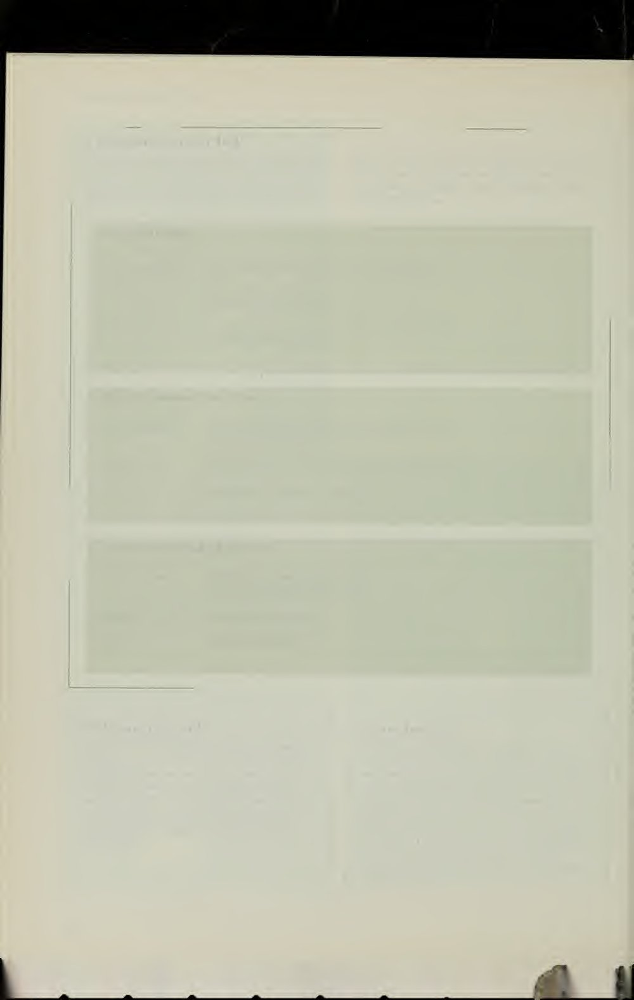
Hình 3.2: Điểm tiếp xúc bóng phía trước thân người và giải phóng quán tính xuyên tâm bóng.
Figure 3.2: Forward Impact Point and Linear Extension Through the Ball.
Kiểu cầm vợt được sửa đổi này giúp cổ tay tự do hơn một chút và sẽ cảm thấy tự nhiên hơn nếu bạn sử dụng nhiều xoáy lên.
4 Bước song song với quả bóng bằng chân trái, vung mạnh về phía quả bóng khi đầu gối của bạn duỗi thẳng.
5 Chuyển toàn bộ trọng lượng của bạn sang chân trước khi bạn đưa phần giữa của dây vợt lên trên quả bóng.
6 Hành động kết hợp của cổ tay và cánh tay xoay mặt vợt hơi hướng về phía ngang.
7 Cơ thể của bạn sẽ duỗi thẳng và quay mặt về phía lưới khi bạn thực hiện cú đánh với vợt cao ngang cơ thể.
TOPSPINFORE HANDDRIVE Cải thiện cú đánh của bạn Cú vung vợt dốc về phía trước từ thấp đến cao đối với cú đánh bóng xoáy thuận tay trên bắt đầu với hình dạng cú giật sâu hơn nhiều ở cuối cú giật lại so với cú đánh cơ bản.
Để hoàn thành vòng lặp này, hãy xoay vai hoàn toàn trong quá trình thu lại.
Mặt vợt không bị lật lại khi đánh như đôi khi nó xuất hiện mà vẫn nằm trong mặt phẳng thẳng đứng cho đến một phần giây sau khi bóng rời khỏi vợt.
Để hoàn thiện cú đánh này, bạn nên nghiêng người sang vị trí bóng ngay trong cú đánh tiếp theo.
Nó sẽ giúp thay đổi một chút góc mà bạn bước vào với sự chuẩn bị trước A Chuẩn bị B Khu vực đánh C Thực hành theo dõi trên sân Goon của riêng bạn với càng nhiều bóng càng tốt.
Từ vị trí sẵn sàng của bạn (xem trang 37) phía sau vạch cuối sân (baseline) thả bóng bằng tay không đánh bóng như bạn đã làm với cú đánh cơ bản (xem trang 50), nhưng lần này hãy thả bóng từ trên cao xuống để bạn có thể đánh bóng ở ngang eo hoặc phía trên sau cú nảy.
Có được cảm giác áp dụng các đường xoáy nhất quán vào quả bóng, theo dõi kỹ quỹ đạo của nó trên lưới để bạn có thể đánh giá kết quả của mình.
Để giúp bạn tự tin hơn, hãy tăng chiều cao của lưới lên mức tối đa và sau đó đánh vài chục cú thuận tay xoáy ngang trên sân và dọc theo đường biên.
Việc áp dụng cú đánh từ trên xuống sẽ vẫn mang lại rất nhiều lợi nhuận trên lưới.
Khi sử dụng bảng sau để hoàn thiện cú đánh xoáy trên cùng của bạn, hãy đánh dấu một đường cao hơn chiều cao thực 5 feet và nhắm ngay phía trên đường này từ khoảng 15 đến 20 feet.
Hành động xoáy lên sẽ có xu hướng làm cho quả bóng bay lên một chút khi nó chạm vào bảng sau, tạo ra một cú bật nảy cao.
(trái) chân.
Nếu đường giữa chân trước và chân sau của bạn trong khi thực hiện cú đánh bóng cơ bản được đánh dấu là 12 giờ trên mặt đồng hồ tưởng tượng, thì hãy bước về hướng 1 giờ cho cú đánh xoáy lên.
Điều này sẽ ngăn cản bạn chuyển sang lưới quá sớm trong cú đánh.
Khi hoàn thành cú đánh, cánh tay vợt của bạn phải kết thúc gần như thẳng, cao và ngang cơ thể bạn.
Quét thẳng mặt sau của quả bóng bằng dây vợt của bạn có thể là một lựa chọn dễ dàng hơn nhưng sẽ dẫn đến độ sâu và tốc độ kém.
Đúng Kiểm soát mặt vợt sai Xoay cán vợt qua trước hoặc lúc đánh để thực hiện cú đánh xoáy lên (ở trên) sẽ đưa bóng vào lưới.
Mặt vợt phải gần thẳng đứng khi đánh (trái).
ĐẤT ĐẤT Luyện tập với một đối tác Với một đối tác luyện tập trên sân, bạn có thể đánh các cú công bóng thuận tay chéo sân với nhau như bạn đã làm khi thực hành cú công bóng thuận tay cơ bản.
Lần này, hãy kết hợp các cú đánh cơ bản và xoáy lên, một người chơi thực hiện các cú công bóng cơ bản và người kia thực hiện các cú đánh xoáy lên.
Sau năm phút đổi vai.
Đối tác của bạn cũng có thể giúp bạn xây dựng một chuỗi các cú công bóng thuận tay để sử dụng trong trận đấu sau này.
Yêu cầu đối tác của bạn đứng cách khoảng 10 feet ở phía bên kia của lưới và ném bóng dưới cánh tay về phía thuận tay của bạn.
Chơi và lặp lại trình tự sau: 1) cú công bóng xoáy từ trên xuống, 2) cú thuận tay cơ bản xuống đường biên, 3) xoáy lên chéo bàn tay thuận tay, 4) xoáy thuận tay xuống đường biên.
Sử dụng các cú công bóng xoáy lên Chơi thuận tay trong trận đấu mang lại lợi thế đáng kể.
Sử dụng nó để tăng thêm sự đa dạng cho cuộc tập hợp cơ bản của bạn.
Biên độ sai sót càng lớn và khả năng phản kháng của đối thủ càng cao sẽ kết hợp với nhau để tạo ra áp lực nhất quán.
Thật khó và mệt mỏi khi đánh những cú đánh bằng phẳng và mạnh mẽ ở độ cao ngang vai.
Ngược lại, bạn sẽ thấy bóng nảy cao dễ tấn công hơn bằng một cú đánh xoáy lên.
Cú đánh thuận tay xoáy lên cũng là một lựa chọn tốt cho hai kiểu chuyền bóng, một kiểu đánh chìm, chuyền đối thủ đang tiếp cận ở ngang tầm mắt cá chân, và kiểu kia chuyền anh ta ở vị trí cao và rộng ở một góc.
Đây là một quả bóng khó tiếp cận và khó có thể thành công.
Cú xoáy lên của RaulRamirez thực hiện cú dứt điểm bằng chân sau.
Sự liên kết của cánh tay vợt với quả bóng cho thấy anh ta đã giật bóng thấp và vung lên cũng như tiến về phía trước để gặp đầu bóng của cơ thể.
Cú đánh này có thể sẽ khiến bóng rơi ngắn .
nhưng xoáy lên được áp dụng sẽ tạo ra một cú nảy khó khăn cho đối thủ.
Cắt thuận tay Đối với cú cắt thuận tay, bóng được đánh theo cách sao cho đạt được sự kết hợp giữa xoáy dưới và xoáy ngang (xem trang 44).
Lát cắt từng được sử dụng rộng rãi trong cả trò chơi của nam và nữ, đặc biệt là để tấn công trái tay yếu của đối thủ.
Nó vẫn còn một biến thể hữu ích để thêm vào tiết mục của bạn, nhưng cú đánh hiện nay thường được sử dụng một cách tiết kiệm hơn do tiêu chuẩn ngày càng tăng trong trò chơi đẳng cấp nhất.
Kurt Nielson, người đã lọt vào chung kết Wimbledon năm 1953 và 1955, có lẽ là tay vợt đẳng cấp cuối cùng trong môn thể thao nam gần như chỉ sử dụng cú công bóng thuận tay cắt lát.
Nghiên cứu sự khác biệt giữa cú thuận tay cắt lát và cú thuận tay cơ bản và xoáy lên.
Đối với cú cắt bóng, hình dạng của cú vung về phía trước của cú đánh từ cao xuống xung quanh bên ngoài quả bóng kết hợp với cú đánh Bắt đầu từ vị trí sẵn sàng và chuẩn bị cho cú vung về phía trước như bạn đã làm với cú đánh cơ bản nhưng đưa vợt trở lại phía trên độ cao đánh dự định, nghiêng cổ tay của cánh tay vợt theo chiều dọc.
Từ thời điểm này, trình tự bên dưới góc mặt vợt tại điểm đánh sẽ tạo ra xoáy xuống mong muốn.
Xoáy xuống sẽ có xu hướng làm cho bóng nổi và bay trên không lâu hơn và do đó nó phải được đưa thấp qua lưới.
Bóng cũng có xu hướng bay chậm đáng kể, giúp đối thủ có nhiều thời gian hơn để chuẩn bị trả lời.
Quỹ đạo thấp và thiếu tốc độ này có thể kết hợp với nhau khiến bóng ở vị trí thấp sau khi nảy lên mặc dù nó có xoáy xuống.
Để sử dụng những đặc điểm này để tạo lợi thế cho mình, bạn cần phải căn thời điểm hoàn hảo và khả năng chọn bóng phù hợp để cắt.
Nói chung, bạn nên cắt một quả bóng đang lên vì đánh bóng từ trên cao cho phép bạn tăng tốc trong cú đánh, cắt quả bóng xuống phần sân của đối thủ.
Lượt truy cập dưới đây, ổ đĩa bị cắt sẽ tăng lên để xóa mạng và có thể cả vạch cuối sân (baseline) của đối thủ.
trình diễn bạn bước vào và chuyển trọng lượng của bạn từ chân sau ra chân trước như đối với cú đánh cơ bản.
Hầu như không có vòng lặp với vợt - cổ tay chỉ đơn giản là thả lỏng trong khi vẫn giữ góc mặt vợt (nghiêng về phía sau từ phương thẳng đứng) hướng xuống phía dưới ánh sáng.
1 Khi kết thúc quá trình thu vợt, đầu vợt của bạn phải hướng lên trên với mặt hơi mở.
2 Bước song song với đường bay của bóng bằng chân trái khi bạn vung vợt xuống.
3 Gặp mép ngoài của lưng quả bóng ở phía dưới tâm một chút và đối diện với hông trái của bạn.
4 Hoàn thành cú xoay bóng xuống trước khi nâng nhẹ theo hướng đánh.
CÚT ĐẤT Cải thiện cú đánh của bạn Hãy đặc biệt chú ý đến cổ tay đánh của bạn trong khi thực hiện cú trả bóng.
Độ cao của đầu vợt khi kết thúc quá trình thu vợt đạt được bằng cách nghiêng cổ tay.
Hầu như không có vòng lặp nào trước khi bắt đầu cú vung về phía trước, đầu vợt được đưa về phía trước và xuống để gặp bóng với mép dưới của đầu vợt dẫn vào khu vực đánh.
Cổ tay nghiêng Góc vợt khi đánh Hình dạng của cú đánh Cú đánh thuận tay cắt lát phải được đánh từ trên cao ở bất cứ đâu có thể để bóng có thể được đánh chắc chắn theo quỹ đạo phẳng thấp qua lưới để nảy sâu vào phần sân của đối thủ.
Điều này trái ngược với quỹ đạo vòng cung của các cú đánh xoáy cơ bản và cú đánh xoáy lên. Khi đánh từ một độ cao tương tự như cú đánh cơ bản, như minh họa bên dưới, cú công bóng thuận tay cắt lát là cú đánh yếu hơn.
Mặt dưới được áp dụng cho quả bóng sẽ có xu hướng giữ cho quả bóng lơ lửng trên không nên quả bóng phải được đánh gần với độ cao lưới và với tốc độ nhỏ để trọng lực có thời gian kéo quả bóng xuống sân.
Khi nảy lên, thực hành thấp Bạn có thể thực hành cú cắt thuận tay của riêng mình, nhưng tốt hơn là nhờ một đối tác thực hành gửi cho bạn những quả bóng nảy cao, hoặc được đưa bằng tay từ khoảng 10 feet ở phía bên kia của lưới, hoặc bằng cách đánh các cú công bóng xoáy thuận về phía bạn.
Độ nảy cao, mạnh của cú đánh xoáy lên khiến nó trở thành cú đánh lý tưởng để thực hành kết hợp với cú cắt thuận tay.
Tập trung vào việc đánh xuống, làm tròn và xuyên bóng, cũng như ngăn không cho đầu vợt rơi xuống khi kết thúc ở mức thấp.
quỹ đạo và thiếu tốc độ sẽ kết hợp để giữ bóng thấp hơn so với cú thuận tay cơ bản bất chấp hướng xoáy của bóng. Một quả bóng có độ xoáy thấp chạm vào một quỹ đạo phẳng với tốc độ nhanh hơn có thể được tạo ra để nảy lên dốc hơn, ở một góc lớn hơn góc mà nó tiếp cận bề mặt sân, nhưng vẫn tương đối thấp.
i Sử dụng cú công bóng cắt của bạn Việc cắt bóng đòi hỏi ít năng lượng hơn so với các cú công bóng thuận tay khác và có thể được sử dụng để duy trì sức chịu đựng trong một trận đấu dài.
Đột nhiên tạo ra một lát cắt trong một đợt phục hồi cơ bản sẽ tạo ra đường bay, tốc độ và độ nảy tương phản.
Với việc rút ngắn cú giao bóng trả lại, cú cắt này đặc biệt hữu ích cho việc trả những cú giao bóng nảy cao, nảy dưới chân người giao bóng tới.
Với một chút sửa đổi, cú công bóng cắt lát cũng có thể được sử dụng từ phía sau tâm vạch cuối sân (baseline) của bạn để chuyển hướng cú đánh rộng sang góc trái tay của đối thủ.
Để thực hiện được điều này, xoáy ngang của cú đánh được đảo ngược bằng cách xoay đầu vợt từ ngoài vào trong qua mặt sau của quả bóng.
B Ổ đĩa bị lệch
Cú thuận tay Giống như cú cắt thuận tay, cú cắt là một cú đánh dưới xoáy nhưng độ xoáy được áp dụng nhiều hơn do các dây cắn dốc hơn nhiều xuống phía sau quả bóng.
Mặc dù bóng có thể được cắt nhỏ nếu kiểm soát tốt, nhưng tốc độ bị mất đáng kể, khiến bóng có xu hướng bay lơ lửng trên không khiến đối thủ bắt vô lê dễ dàng.
Vòng xoáy dưới cũng sẽ gây ra một số vấn đề đối với một người chơi năng nổ và có năng lực ở đường cơ bản.
Về mặt kỹ thuật, cú đánh thuận tay có thể được hoàn thiện tốt nhất bằng cách sử dụng cách cầm vợt Continental (xem trang 39), mặc dù nó có thể được phát triển một cách hiệu quả bởi người chơi cầm vợt phương Đông.
Cải thiện cú đánh của bạn Hình dạng của cú cắt thuận tay, được hiển thị bên dưới, tương tự như lát cắt được hiển thị ở các trang trước.
Sự khác biệt nằm ở chỗ cú thu hồi ngắn hơn, cao hơn bắt đầu cú xoay từ cao đến thấp hơn.
Mặt vợt cũng phải có góc tương tự về phía sau so với phương thẳng đứng.
Sự kết hợp giữa đường đi của vợt và góc mặt vợt sẽ tạo ra độ xoáy dưới nặng.
Khi bạn chặt phần sau của quả bóng, hãy để phần hơi tự nhiên của cú vung áp dụng một số cú xoáy ngang.
Khi dây gặp bóng, hãy đảm bảo rằng trọng lượng của bạn được chuyển sang chân trước.
Điểm chuẩn bị ở quả bóng sắp tới bằng tay không chơi của bạn khi bạn quay chân sau.
Khi bạn cầm vợt lên, hãy khóa cổ tay của bạn lại.
B Vùng đánhGiữ vững cổ tay khi bạn chồm người xuống để gặp bóng phía sau hông trước ở độ cao ngang eo.
C Thực hiện theo Kết thúc ở mức thấp và hơi ngang cơ thể.
Sử dụng cú đánh thuận tay của bạn Quỹ đạo, sự mất tốc độ và độ cao của quả bóng sau khi nảy đã làm giảm việc sử dụng cú đánh thuận tay xuống gần như bằng không khi chơi ở đẳng cấp cao nhất.
Tuy nhiên, nó vẫn là một biến thể thuận tay hữu ích ở các cấp độ chơi khác, nơi việc tập trung vạch cuối sân (baseline) thường chiếm ưu thế.
Quỹ đạo trôi nổi của cú đánh có thể làm đảo lộn nhịp điệu của người đánh đường biên (seepp.212- 213).
Kết hợp với các cú đánh cơ bản, xoáy lên và cắt lát, nó có thể tạo ra một hiệu ứng đáng kinh ngạc, mang lại thêm sự thay đổi về tốc độ, đường bay và nảy.
Bạn có thể thấy rằng những đối thủ di chuyển chậm và những người không quen quay sẽ gặp nhiều khó khăn hơn khi chơi quả bóng đã cắt.
Giống như tất cả các cú đánh bóng theo đường cơ bản, hãy cắt bóng sâu đến vạch cuối sân (baseline) của đối thủ như một nguyên tắc chung.
Chơi ngắn, cú cắt bóng sẽ mang đến cho đối thủ của bạn một cơ hội lý tưởng để thực hiện một cú đánh tiếp cận.
Góc mặt vợt khi đánh Cú đánh thuận tay phụ thuộc vào việc dây vợt di chuyển xuống khu vực đánh theo một đường dốc, gần giống như thể bạn đang chặt gỗ .
Trong hình trên, mặt vợt hơi nghiêng về phía sau so với phương thẳng đứng khi đánh.
Kỹ thuật này sẽ đặt tốc độ thấp vào cú đánh.
GroundSTROKES Cú đánh thuận tay hai tay Có rất ít tay vợt trong lịch sử quần vợt đạt đến đẳng cấp thế giới khi sử dụng cú đánh thuận tay hai tay.
Gene Mayer, một tay vợt xếp hạng thế giới hiện nay, thuận tay đôi ở cả hai cánh.
Động tác bằng chân và định vị của anh ấy, liên quan đến giao bóng tốt Cải thiện cú đánh của bạn Trong khi cú đánh trái tay bằng hai tay, được thực hiện với động tác thả lỏng với cả hai tay hoàn toàn duỗi thẳng khi đánh, thì cú đánh thuận tay bằng hai tay là cú đánh bị chuột rút được thực hiện với hành động cuộn lên, với cánh tay hơi cong.
Giống như cú đánh bằng một tay, toàn bộ sức mạnh phụ thuộc vào việc truyền trọng lượng tốt, bước vào phía trước khi bạn bắt đầu vung gậy về phía trước và dồn trọng lượng của bạn hoàn toàn lên đầu gối trước của bạn khi va chạm và trong các động tác tiếp theo.
Hình dạng của cú đánh, như minh họa bên dưới, tương tự như phiên bản cú đánh bằng một tay.
A Chuẩn bị Bật chân phải lên, bạn nên thu vợt lại ở độ cao vừa tầm đánh trong khi quan sát quả bóng đang tiến gần qua vai trái của bạn.
Bước gần đến đường bay của quả bóng bằng chân trái.
13 Vùng đánh bóng Gặp bóng đối diện với hông trước của bạn với cánh tay duỗi thẳng khi cổ tay vững chắc của bạn cho phép.
C Thực hiện theo Kết thúc về độ cao của đầu khi tay cầm mở rộng.
và khả năng chuyền bóng bằng một tay xuất sắc, bù đắp cho những hạn chế nghiêm trọng về tầm với do lái xe bằng hai tay gây ra.
Cú đánh thuận tay bằng hai tay có thể được thực hiện với cùng một kiểu xoáy như khi đánh bóng bằng một tay.
Tay cầm thuận tay bằng hai tay , > — Forbestpower đặt ( tay hỗ trợ ở mông P^ của cán vợt \ ở giữa giữa 1\ Continental và Eastern ( \ \ cách cầm thuận tay, và A V \tay chơi nép A phía trên nó trong cách cầm vợt kiểu Đông \ V^P%> (xem trang 2).
39).
\ W\\ Chân sau được đặt tốt và vợt được chuẩn bị sẵn của GeneMayer cho phép anh ta bước song song với đường bay của bóng khi anh ta quay người để đánh bóng.
Do đó, tôi có vị trí hoàn hảo cho cú đánh thuận tay đôi này.
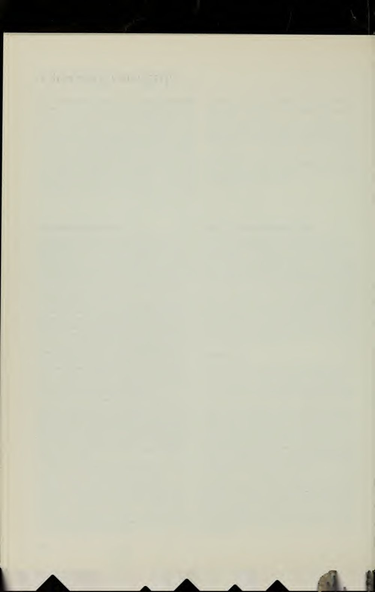
Hình 3.3: Quỹ đạo vung vợt từ dưới lên trên (Low-to-High Swing Path) kiến tạo lực xoáy cuộn Topspin bão táp.
Figure 3.3: Low-to-High Swing Path Creating Heavy Topspin Forehand.
Phần 4
Phần 3: Cú công bóng trái tay, cú đánh rơi & cú vô lê nửa vòng
Part 3: Backhand Drive, Dropshot & Half-Volley 108 đoạn phân tích chuyên sâu
Cú công bóng trái tay Cú đánh trái tay rất cần thiết cho trận đấu của bạn, trước hết là sự bổ sung tự nhiên cho cú thuận tay của bạn và thứ hai là vì những người chơi trận đấu tấn công phía trái tay của bạn.
Bất kỳ người chơi nào cũng chỉ mạnh bằng cú đánh yếu nhất của anh ta, và một đối thủ cảnh giác và thành thạo đặc biệt dễ dàng phát hiện ra một cú đánh trái tay kém.
Cú công bóng trái tay được thực hiện ở phía đối diện của cơ thể với phía thuận tay, và do đó bóng được đánh bằng mặt sau của vợt.
Các yếu tố then chốt của một cú đánh trái tay tốt là cổ tay vững chắc (do cách cầm trái tay đúng cách) và bước chân chính xác.
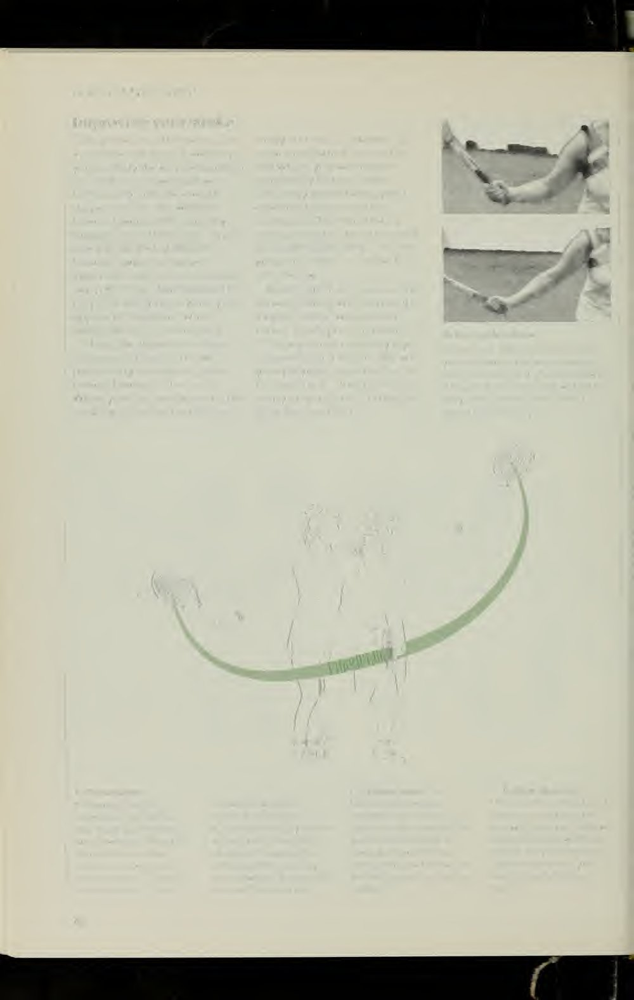
Hình 4.1: Chuẩn bị mở vợt ngang hông và bước chuyển trọng tâm cú trái tay một tay cổ điển.
Figure 4.1: Hip-Level Preparation and Weight Transfer for the Classical One-Handed Backhand.
Một khi hai yếu tố chính này đã được tích hợp vào cú đánh của bạn, bạn sẽ dễ dàng thành thạo một cách đáng ngạc nhiên.
Cú đánh được thực hiện theo hướng ngang với bóng, thay vì từ tư thế vuông góc hơn với lưới như trước đây đã được sử dụng và tạo ra các cú đánh cắt, phòng thủ.
Chuẩn bị sang một bên, với bàn chân của bạn song song với đường bay của bóng và vai của bạn xoay Thực hiện cú đánh Hãy chuyển sang cách cầm vợt trái tay kiểu Đông.
Sau đó bắt đầu thu bóng một cách suôn sẻ, giữ vợt ở độ cao vừa chạm và xoay vai sao cho lưng của bạn gần như hướng vào lưới.
Di chuyển trọng lượng của bạn sang chân trái và thả tay đỡ của bạn ra khỏi cổ vợt để cho đầu thực hiện một vòng nông để bắt đầu cú vung vợt về phía trước.
Hành động thư giãn bắt đầu khi bạn bước vào bằng chân trước, vung vợt ra ngoài và hướng lên trên quả bóng khi bạn chuyển trọng lượng của mình sang đầu gối phía trước cơ thể.
Gặp quả bóng khi nó bắt đầu rơi ở phía trước hông của bạn.
Theo dõi một khoảng cách xa theo hướng bay của quả bóng.
xung quanh cho đến khi lưng của bạn gần như hướng vào lưới, cho phép bạn đánh bóng bằng chuyển động vung, nâng khi bạn thả lỏng sau khi trả bóng.
Chuyển động không cuộn này là cơ sở của cú đánh trái tay hiện đại.
Đó là một hành động tạo ra sức mạnh đáng kể, thường lớn hơn sức mạnh trong cú thuận tay.
Điều này có vẻ đáng ngạc nhiên cho đến khi bạn cân nhắc xem người thuận tay phải sẽ sử dụng bộ phận nào của cơ thể để phá cửa;
gần như chắc chắn là phía sau vai phải.
Cú đánh trái tay đòi hỏi sự thay đổi từ cách cầm vợt thuận tay kiểu Đông sang kiểu cầm vợt trái tay kiểu Đông, như minh họa ngược lại.
Một khi bạn đã thành thạo cách cầm vợt trái tay, điều quan trọng là phải làm quen với việc thay đổi cách cầm vợt từ thuận tay sang cầm vợt trái tay và ngược lại.
Cách tiếp cận để hoàn thiện cú đánh tương tự như cách được sử dụng cho cú công bóng thuận tay và phụ thuộc vào khả năng phân tích cú đánh của chính bạn, như đã thảo luận ở trang 62 và 64. 1 Chọn vị trí sẵn sàng phía sau điểm trung tâm của vạch cuối sân (baseline).
2 Xoay chân trái, đổi sang kiểu cầm vợt Easternbackhand.
Lấy vợt lại.
3 Xoay vai hoàn toàn và chuyển toàn bộ trọng lượng cơ thể sang chân trái.
GROUNDSTROKES Tay cầm trái tay phương Đông Cách cầm trái tay kiểu phương Đông an toàn hơn bất kỳ cách cầm vợt nào khác trong quần vợt và giúp cổ tay rất chắc chắn.
Bạn phải thực hiện sự thay đổi từ cách cầm vợt thuận tay sang cách cầm vợt trái tay, được hiển thị bên dưới, bằng cảm giác, không phải bằng mắt, sử dụng tay không chơi của bạn để đỡ vợt.
Động tác chân Khi bạn đánh bóng ở phía bên trái tay, bạn phải ở cách nó đủ xa để có thể giữ cho cánh tay cầm vợt của bạn duỗi thẳng khi đánh sang một bên trong đường bay.
Từ vị trí vuông góc với mạng của bạn, được hiển thị bên dưới bằng các dấu chân bóng mờ, bạn chỉ cần xoay chân trái và bước vào bằng chân phải đến vị trí hiển thị bên dưới bằng các dấu chân rõ ràng.
Luôn đặt mục tiêu thực hiện động tác bằng chân này trong khi chơi, sửa đổi nó để phù hợp với tốc độ và hướng của mỗi cú đánh.
4 Thực hiện một cú giật nông bằng đầu vợt và bước song song với đường bay của bóng.
5 Chuyển trọng lượng của bạn lên chân trước.
Siết chặt tay cầm của bạn khi bạn vung lên.
6 1 Đưa đầu vợt xuyên qua quả bóng, theo hướng bay.
7. Kết thúc với tư thế tay cầm mở rộng và vợt cao hơn đầu.
BACKHANDDRIVE Cải thiện cú đánh của bạn Cho dù bạn là người mới bắt đầu chỉ đang cố gắng cải thiện cú đánh trái tay của mình, hay người chơi có kinh nghiệm muốn sửa một cú đánh trái tay yếu, việc chia nhỏ cú đánh thành các thành phần chính sẽ giúp ích.
Bạn sẽ không cải thiện được cú đánh trái tay của mình trừ khi trước đó bạn đã hoàn thiện cách cầm vợt trái tay Phục sinh và sự thay đổi thuận tay sang trái tay được trình bày ở trang trước.
Cách cầm vợt đúng sẽ khuyến khích cả đặc tính rút lui tiết kiệm của cú đánh và độ cứng của cổ tay cần thiết để kiểm soát.
Điều quan trọng là xoay vai của bạn (trong quá trình chuẩn bị bắn) vượt ra ngoài đường tưởng tượng được vẽ vuông góc với đường bay.
Giống như cú công bóng thuận tay cơ bản (xem trang 48), đường vợt cho một cú đánh trái tay cơ bản di chuyển từ thấp đến cao xuyên qua vùng đánh, truyền một ít xoáy lên cho quả bóng để kiểm soát cung và độ sâu cú đánh của bạn.
Hình dạng này đạt được bằng cách đưa vợt lùi lại ở độ cao đánh bóng và tạo thành một hình vòng nông với vợt ở cuối lần thu bóng.
Bóng thường được đánh xa hơn một chút về phía trước hông của bạn hơn là về phía thuận tay.
Xoay hết vai và sau đó bước vào để chuyển trọng lượng của bạn vào cú đánh sẽ khiến bạn cảm thấy như thể bạn đang căng cơ và giải phóng một lò xo cực mạnh.
Xoay vai Việc sử dụng vai của bạn là rất quan trọng để có một cú trái tay mạnh mẽ.
Hãy chắc chắn rằng vai đánh của bạn được quay sang hướng khác sao cho lưng của bạn gần như hướng vào lưới.
Bạn sẽ phải nhìn qua vai đánh bóng của mình.
Sự chuẩn bị Trước khi bước vào và thư giãn, bạn nên chuẩn bị trọng lượng của mình ở bàn chân sau, vai quay ra khỏi quả bóng và mức độ bám của bạn với hông kéo dài.
B Vùng đánh bóng Gặp bóng ở phía trước hông một chút với mặt vợt hơi nghiêng về phía sau để khuyến khích lực nâng.
Siết chặt tay cầm và khóa cổ tay của bạn trước và xuyên qua vùng đánh.
C Thực hiện theo khi trọng lượng của bạn di chuyển tốt về phía trước qua bàn chân trước của bạn, giữ cho cổ tay của bạn bị khóa và cánh tay vợt của bạn mở rộng.
Giữ cú dứt điểm bằng vợt của bạn ở phía trước ở độ cao khoảng đầu người.
ĐIỂM ĐẤT Xây dựng cú công bóng trái tay vào trò chơi của bạn Khi phát triển các thế mạnh thuận tay cho cú đánh trái tay.
Đến phần (xem trang 49), bạn sẽ học được cách xử lý đặc biệt với những quả bóng rộng và ngắn trong một pha đánh bóng ở vạch cuối sân (baseline).
Lời khuyên tương tự là hãy áp dụng khu vực đánh bóng nhanh chóng để bạn có thể thực hiện cú đánh gần chuẩn nhất có thể.
Dưới đây, bạn có thể xem cách trả bóng đã trúng vào người quá nhanh khiến bạn không thể di chuyển sang vị trí nghiêng về phía bóng và cách đánh bóng có độ nảy cao.
Bóng gần với cơ thể 1 Bước cách xa đường bay bằng chân trước.
Động tác chân đã được sửa đổi Hai sơ đồ bên phải cho thấy sự khác biệt giữa động tác chân cơ bản cần thiết cho cú trái tay, gần bên phải và động tác chân đã sửa đổi cần thiết để chơi một quả bóng đang bay tới hoặc gần cơ thể.
Bước ra khỏi đường bay của bóng cho phép cú đánh đầy đủ hơn.
2 Chuyển trọng lượng của bạn, nghiêng người ra xa quả bóng để bạn gặp nó với cánh tay cầm vợt mở rộng.
3. Đi theo đường bay ban đầu của quả bóng.
Highball 1 Chuẩn bị với khả năng bắt bóng cao hơn so với cú đánh tiêu chuẩn.
2 Xoay bóng, mặt vợt vuông góc với đường bay của bóng và cổ tay thẳng hàng với đầu vợt.
3 Đi theo hướng của cú đánh, giữ cho cánh tay đánh của bạn mở rộng.
Tự mình thực hành đánh trái tay Bây giờ bạn đã nắm vững những điều cơ bản về trái tay, bạn nên tập trung trong các buổi luyện tập của mình vào việc tinh chỉnh từng khía cạnh của cú đánh cho đến khi nó trở thành bản chất thứ hai.
Luyện tập cú đánh không bóng.
Bất cứ khi nào bạn cảm thấy cần phải sửa một lỗi nào đó (xem trang 50). Một bức tường thực hành sẽ khuyến khích sự nhất quán.
Trong các buổi tập luyện trên sân, hãy tập trung cải thiện khả năng luân phiên giữa các cú đánh dọc biên và các cú đánh chéo sân, như minh họa bên phải, bằng cách đơn giản là chạm bóng sớm hơn hoặc muộn hơn.
Luyện tập với người khác Bạn sẽ cần nhiều thời gian hơn để luyện tập vì giờ đây bạn phải thực hiện cả các cú công bóng thuận tay và trái tay trong buổi tập.
Khởi động bằng cách thi đấu các pha đánh mặt đất 10 và 20 gậy với đối tác của bạn bằng cả các cú công bóng thuận tay và trái tay.
Sau đó, dành 10 phút cho mỗi kiểu đánh, thực hành các cú công bóng thuận tay và trái tay chéo sân, và các cú công bóng thuận tay và trái tay dọc biên, mỗi người chơi quay lại phía sau điểm giữa giữa các cú đánh.
Trận đấu cuối cùng mang tính cạnh tranh với một đấu thủ đánh các cú đánh chéo sân trong khi người kia thực hiện tất cả các cú đánh của mình dọc theo đường biên, cả hai đấu thủ đều đánh thuận tay và trái tay luân phiênlv, như minh họa bên phải.
Đảo ngược vai trò và lặp lại.
Khi bạn bắt đầu thi đấu một cách cạnh tranh, hầu hết các cú đánh của bạn sẽ phải được thực hiện trên đường chạy.
Trong các buổi luyện tập của bạn, hãy đảm bảo rằng bạn luyện tập một cách thực tế cho các tình huống thi đấu bằng cách quay lại phía sau điểm trung tâm trên vạch cuối sân (baseline) giữa các cú đánh.
Dọc theo đường biên Để đánh bóng thẳng dọc theo đường biên, bạn phải tiếp xúc với nó ở phía trước hông dẫn đầu của bạn một đoạn ngắn.
Khi thực hành các cú đánh với bạn tập, hãy tiếp cận bóng càng nhanh càng tốt, chuẩn bị vợt khi chạy.
Sau đó đặt trọng lượng của bạn lên bàn chân sau sao cho tất cả những gì còn lại cho cú đánh là bước vào và xoay người.
Điều này sẽ giúp ngăn chặn cú đánh dồn dập.
Crosscourt Để thực hiện một cú đánh tương tự, nhưng chéo sân, hãy đón bóng ở phía trước hông trước của bạn để tạo ra góc cần thiết.
Hỗ trợ luyện tập Nếu bạn cảm thấy khó khăn trong việc đưa vai của mình đủ xa để dồn sức mạnh thực sự vào cú đánh, hãy vào tư thế sẵn sàng với lưng thực sự hướng vào lưới.
Yêu cầu đối tác của bạn thả bóng về phía bạn và phía sau bạn, cách bạn một khoảng cách tầm tay vợt.
Quan sát bóng qua vai khi bạn xoay người, bước vào và thực hiện cú đánh.
Sử dụng trái tay của bạn Mặt trái tay của sân đương nhiên là mặt phòng thủ.
Nhưng nếu luyện tập, cú đánh trái tay có thể trở thành một cú đánh tấn công.
Giống như cú thuận tay, chiến thuật đánh bóng phải là đánh sâu vào các góc sân đối thủ, càng gần đường biên cuối sân càng tốt, hoặc thực hiện các cú đánh chéo sân đối phó với những cú đánh kém hơn của đối thủ để giành điểm hoàn toàn hoặc để tạo ra các tình huống thắng điểm buộc đối thủ phải rời khỏi vị trí.
Tấn công các đường chuyền chéo góc.
Các cú phát bóng chéo sân sâu và đường biên dọc.
DianneFromholtz chơi trái tay mạnh mẽ với mặt vợt được kiểm soát hoàn hảo ở ngang cổ tay.
Dây của cô ấy đã gặp quả bóng đang bay lên phía trước hông dẫn đầu của cô ấy.
Tư thế nằm nghiêng của cô ấy mang lại một nền tảng đánh vững chắc trong khi phong cách cổ tay rắn chắc của cô ấy mang lại sức mạnh cho cú đánh.
Cú công bóng xoáy lên phía sau Sự khác biệt tương tự tồn tại giữa cú công bóng trái tay cơ bản và cú công bóng xoáy lên phía sau cũng như giữa cú công bóng xoáy lên và cú công bóng xoáy lên.
Độ xoáy lên nhẹ nhàng cần thiết để kiểm soát độ dài của các cú đánh cơ bản có cú đánh mạnh được tăng lên đáng kể đối với chuyển động xoáy lên để đường bay và độ nảy đặc trưng của một quả bóng được đánh bằng xoáy lên (xem trang 42) được phóng đại.
Những đặc điểm này (quỹ đạo hình cung đưa bóng cách lưới từ 3 đến 6 feet và lực nảy bắn về phía trước và hướng lên về phía người nhận) tạo nên cú đánh tấn công trái tay xoáy lên.
Sự phát triển của cú thuận tay xoáy lên xảy ra tương đối muộn trong lịch sử trò chơi khi cú thuận tay xoáy lên đã được sử dụng một thời gian.
Nhưng kể từ Thế chiến thứ hai, cú đánh trái tay xoáy lên đã là một phần trong hầu hết các tiết mục của các nhà vô địch thế giới từ Budge Patty đến tay vợt người Thụy Điển có một không hai, BjornBorg.
Một số người chơi thực tế luôn sử dụng top-spin như một phần trong chiến lược của họ trong khi những người khác dành nó như một phương án tấn công thay thế.
Nhiều người phát triển động tác kiểu cổ tay giống như roi để tạo ra cú đánh xoáy lên đòi hỏi sự tác động tối thiểu của cổ tay và bổ sung cho kiểu cầm trái tay kiểu Đông thì không khó đối với người thành thạo (seep.
61).
Topspin được bổ sung tốt nhất vào cú đánh cơ bản bằng cách tăng góc vung về phía trước của bạn đối với bóng.
Góc của mặt vợt tại thời điểm va chạm phải giống như góc của cú đánh cơ bản, mặc dù hoạt động của cổ tay và cẳng tay sẽ trong quá trình xoay mặt vợt về phía trước.
Bởi vì quỹ đạo của quả bóng cao hơn trong một cú công bóng xoáy lên cho phép nó đi qua lưới với nhiều khoảng trống hơn so với cú đánh cơ bản, nó mang lại cho bạn biên độ sai sót lớn hơn.
Không thực hiện cú đánh chính xác - đánh và xuyên qua bóng trước khi đóng mặt vợt - sẽ dẫn đến những cú đánh không trúng đích hoặc tệ hơn nữa là đi vào lưới.
Thực hiện cú đánh Từ thấp đến cao, đặc điểm của cú đánh trái tay từ trên xuống phụ thuộc vào cú giật sâu hơn với vợt ở cuối cú giật lại so với cú đánh cơ bản.
Hãy để đầu gối của bạn uốn cong và đưa vợt trở lại dưới độ cao đánh dự định của bạn (thông thường ở, hoặc cao hơn, độ cao thắt lưng).
Sau đó thả tay không đánh ra khỏi vợt và thực hiện một cú giật thấp hơn so với cú đánh cơ bản.
Sau đó, trọng lượng của bạn sẽ di chuyển về phía trước khi bạn bước vào bằng chân phải song song với đường bay của quả bóng.
Thư giãn bằng cách vung vợt dốc lên để đón bóng.
Hãy để cánh tay vợt mở rộng của bạn hướng về phía trước khi bạn thực hiện cú đánh.
1 Từ vị trí sẵn sàng của bạn, rẽ sang trái và chuyển sang cách cầm vợt trái tay kiểu Đông của bạn.
2 Trên bàn chân trái của bạn, uốn cong đầu gối của bạn.
Đưa lưng vợt xuống dưới độ cao ngang thắt lưng.
3. Thả tay không trượt và bắt đầu thực hiện cú giật thấp bằng vợt.
CÚT ĐẤT Cải thiện cú đánh của bạn Nếu kết quả xoáy lên của bạn gây thất vọng ở phía trái tay, thì các đặc điểm rất có thể của cú đánh cần cải thiện sẽ được hiển thị, phải không.
Hãy cảm nhận việc áp dụng xoáy lên ngoài sân như được hiển thị bên dưới. Khi chơi cú đánh trên sân, hãy để vợt vung vợt dốc lên truyền tải xoáy lên cho bóng.
Cảm nhận về xoáy lên Hãy cảm nhận về việc áp dụng xoáy lên bằng cách vuốt lên mặt sau của quả bóng với mặt vợt có góc như hình bên dưới.
Quả bóng sẽ lao xuống và nảy ngay trước mặt bạn.
Một vòng lặp chuẩn bị với đầu vợt.
B Vùng đánhGiữ cổ tay và cách cầm vợt của bạn chắc chắn và tay vợt mở rộng.
C Thực hiện tiếp theo Hãy để cánh tay của bạn xoay qua khi bạn kết thúc ở độ cao mạnh và ngang sang bên phải, với mặt vợt hướng xuống dưới.
4 Bước song song với đường bay của bóng, di chuyển trọng lượng của bạn về phía trước.
Xoay vợt lên.
5 Với trọng lượng của bạn đè lên đầu gối trước đang cong của bạn, hãy đánh bóng với mặt vợt gần như thẳng đứng.
6 Để cánh tay cổ tay của bạn lăn vợt và chân bạn duỗi thẳng một chút.
7 Kết thúc bằng vợt cao và ngang cơ thể với mặt đánh hướng xuống dưới.
TOPSPINBACKHANDDRIVE Thực hành tự mình thực hành Với cú đánh trái tay từ trên xuống, cũng như các cú đánh khác, trên sân với càng nhiều quả bóng càng tốt và thả từng quả một bằng tay không chơi của bạn, đợi chúng nảy lên, sau đó bước vào thực hiện cú đánh.
Tung từng quả bóng lên để bạn có thể tấn công nó một cách thực tế cao hơn thắt lưng.
Luyện tập không bóng, dừng lại để kiểm tra bất kỳ đặc điểm chính nào của cú đánh mà bạn có thể nghi ngờ, nhưng luôn nỗ lực cải thiện cú đánh hoàn chỉnh càng sớm càng tốt bằng cách đánh bóng dọc biên và chéo sân.
Cũng như các nét vẽ khác, tấm nền có thể rất hữu ích.
Luyện tập với đối tác Bắt đầu từ vị trí tập trung ở vạch cuối sân (baseline), với đối tác của bạn cung cấp bóng có chiều cao tốt cho bạn bằng tay, chạy ra ngoài và chơi xoáy trên, trái tay chéo sân, quay về sau điểm giữa giữa mỗi lần đánh.
Đổi vai với đối tác của bạn và khi cả hai bạn đều chơi tốt, hãy chuyển sang tập hợp từ góc này sang góc khác.
Sau đó luân phiên các cú đánh với đối tác của bạn, đầu tiên bạn đánh các cú đánh xoáy lên và các cú đánh cơ bản của đối tác, sau đó ngược lại, mỗi lần 40 phút.
Sau đó, bạn có thể chuyển sang trình tự được hiển thị bên phải, với một trong số các bạn đánh các cú thuận tay và trái tay cơ bản chéo sân trong khi những người còn lại dừng chơi quay các cú thuận tay và trái tay dọc theo đường biên.
Khi cả hai bạn đều đánh tốt, hãy giới thiệu cách tính điểm.
Người chơi thắng loạt bóng bền (rally) bằng cách buộc người khác phạm lỗi sẽ giành được một điểm, sau đó bắt đầu lượt biểu tình tiếp theo. Khi một trong các bạn đạt được 11 điểm, hãy đổi vai chơi cho một bộ điểm và các cú đánh cơ bản cho lần tiếp theo.
Sử dụng cú đánh trái tay xoáy lên của bạn Việc đưa trái tay xoáy lên khi bạn có thể thuận tay trong việc lựa chọn thực hiện một cú đánh chuyền xoáy lên, các cú đánh sẽ đặc biệt giúp bạn. Lựa chọn thay thế xoáy lên sẽ phản công khi đối thủ của bạn tiến vào lưới, vì bạn có thể tạo ra những cú trả bóng bằng chân.
Nó cũng sẽ giúp bạn quay lại một cú đánh tiếp cận có phạm vi rộng để giúp bạn khiến đối thủ phải đoán.
Tuy nhiên, hãy cẩn thận với việc tạo ra những quả bóng ngắn.
Đảm bảo rằng ảnh của bạn xuyên qua sau khi nảy bằng cách áp dụng đủ tốc độ.
A Xuống vạch B Trả bóng chìm C Crosscourt Hank Pfister thực hiện cú xoáy lên nặng nề cho quả bóng khi toàn bộ cơ thể anh ta duỗi thẳng với nỗ lực đánh lên và xuyên qua quả bóng.
Trọng lượng của anh ấy dồn về phía trước nhiều hơn chân phải và cánh tay trái ném về phía sau để giữ thăng bằng khi anh ấy thực hiện một pha giao bóng tích cực từ sân bên phải.
Kết thúc từ trên cao cho thấy mức độ xoáy lên đã được áp dụng để làm cho bóng chìm xuống chân của người giao cú vô-lê.
Slicedbackhand Để trở thành một tay vợt hoàn thiện, bạn cần đưa cú cắt trái tay vào lựa chọn cú đánh của mình.
Cú cắt bóng là một biến thể hữu ích cho các cú đánh cơ bản và xoáy lên và không, trừ khi bạn là Ken Rosewall, người thay thế cho cả hai.
Một quả bóng được đánh với xoáy xuống (xem tr.42) có xu hướng lơ lửng trong không khí và nếu nó không được đánh theo một quỹ đạo phẳng, nó sẽ nảy lên mà không có động lượng về phía trước.
Những đặc điểm như vậy rõ ràng là mang tính phòng thủ và phù hợp với phía trái tay phòng thủ tự nhiên hơn.
Cú cắt trái tay vẫn giữ được sự tôn trọng trong quần vợt đỉnh cao (đặc biệt là trong trận đấu dành cho nữ) mà cú cắt thuận tay đã đánh mất.
Ở thời kỳ đỉnh cao, các nhà vô địch Wimbledon của Anh, Ann Jones và Virginia Wade, đều đang chơi cú đánh Hãy thay đổi cách cầm trái tay của bạn khi bạn bắt đầu rẽ sang trái.
Việc chuẩn bị cho cú đánh phải ở trên độ cao mà bạn sẽ đặt bóng sao cho cú xoay về phía trước sẽ từ cao xuống thấp.
Đối với cú cắt thuận tay, người chơi cổ tay sẽ phải nhận lại vợt.
Bạn rất thành thạo trong việc cắt bóng trái tay.
Tay vợt người Mỹ Kathy Jordan có một cú đánh trái tay phòng thủ hiệu quả như bất kỳ phụ nữ nào khác trên đấu trường thế giới hiện tại.
Như thể hiện không phải cú cắt thuận tay (seepp .56- 57), xoáy xuống là đánh vào quả bóngbvkết hợp một cú xoay từ cao đến thấp với mặt vợt mở có kiểm soát (dẫn đầu mép dưới) tại điểm va chạm.
Để khắc phục nhược điểm của đường bay dài, bồng bềnh và nảy dễ dàng, tốt nhất nên cắt những quả bóng nảy cao, đặc biệt là những quả bóng vẫn đang bay lên.
Điều này sẽ cho phép bạn đánh bóng mạnh, theo quỹ đạo phẳng, thấp qua lưới.
Những quả bóng thấp hơn được đánh với cùng lực có thể bay ra khỏi sân trừ khi được đánh bằng xoáy ngang (xem phần đối diện).
cổ tay phải chắc chắn và cánh tay vợt của bạn mở rộng để có thể đưa vợt xuống để đón bóng ở phía trước hông của bạn với mép dưới của mặt ở phía trước.
Phần lớn cú swing phải đến từ cú va chạm vào vai của bạn.
Cú đánh tiếp theo sẽ ở mức thấp, vợt hơi hướng lên 1 Xoay chân trái, đưa vợt lùi lên trên độ cao đánh với cổ tay bị khóa.
2 Bước bằng chân phải khi bạn thả tay không chơi ra và vung xuống.
3 Với đầu vợt vẫn nghiêng về phía sau, đón bóng ở phía trước hông của bạn.
4 Thực hiện tiếp theoduy trì vị trí nghiêng khi cú đánh kết thúc ở mức thấp.
CÚT ĐẤT Cải thiện cú đánh của bạn Hình dạng của cú đánh thuận tay (xem trang 56) sẽ hiển thị cho bạn đường cao tới thấp của cú đánh về phía trước đối với cú đánh trái tay của bạn.
Kiểu xoáy tiêu chuẩn cho lát cắt sau tay được hiển thị trên quả bóng bên dưới.
Để đạt được sự kết hợp giữa xoáy ngang và xoáy xuống, mặt vợt của bạn phải đánh xuống, xuyên qua và xung quanh quả bóng theo hướng mũi tên.
Nó sẽ giúp đưa vợt về phía sau với mặt vợt thoáng hơn (dẫn đầu mép dưới) so với khi chuẩn bị cú đánh cơ bản.
Hãy đảm bảo rằng sau cú đánh, bạn không để đầu vợt rơi xuống mà phải đứng dậy trở lại sau khi đi xuyên qua bóng.
Tự luyện tập Thực hành cú đánh trên sân bằng cách thả bóng bằng tay không chơi của bạn.
Làm phẳng mọi khuyết điểm trong kỹ thuật bằng cách vuốt ve mà không cần bóng.
Luôn quay lại đánh từng loạt bóng để kiểm tra kết quả của bạn.
Hãy theo dõi đường bay của các cú đánh thực hành của bạn một cách cẩn thận, đảm bảo rằng các quả bóng di chuyển thấp hơn dải lưới so với cú đánh cơ bản và sâu về phía đường biên đối phương trên một quỹ đạo phẳng.
Hãy thử nghiệm với một loạt bóng được đánh bằng cú đánh hướng ra ngoài thay thế được hiển thị ở phía trên bên phải và kết thúc phiên của bạn bằng cách thực hiện cú đánh mới của bạn theo trình tự với các cú đánh trái tay khác mà bạn đã học được.
Sử dụng một lát cắt thay thế Độ xoáy nhẹ sang bên mà lát đánh trái tay tiêu chuẩn mang lại do đánh xung quanh bên ngoài, cũng như xuyên qua và bên dưới quả bóng, đảm bảo ít nhất một đường bay thẳng nếu không có đường cong về phía giữa sân.
Đây là cú đánh mà bạn nên sử dụng như một biến thể thông thường cho các cú đánh xoáy cơ bản và xoáy lên của mình.
Tuy nhiên, có một cách để xoáy bóng sang bên theo hướng minh họa bên dưới, bằng cách chuẩn bị vợt của bạn xa cơ thể hơn và sau đó đánh vào bên trong đường bay.
Giữ mặt vợt mở như đối với cú đánh tiêu chuẩn, người đánh bóng vào trong sẽ kéo dây qua phía sau quả bóng.
Luyện tập với người khác "Lái xe trong hẻm" hay "đâm vào đường xe điện" là một cách luyện tập rất hữu ích để phát triển sức mạnh có kiểm soát khi bạn đã nắm vững những kiến thức cơ bản về cú đánh trên mặt đất.
Sử dụng dải sân sau đó giữa các đường biên đơn và đôi làm sân đầy đủ của bạn, và với đối tác của bạn đối diện với bạn ở đầu bên kia, hiển thị bên phải, thực hành cú cắt trái tay của bạn trong khi anh ta thi đấu- chứng minh các cú đánh thuận tay của họ.
Bóng phải rơi xuống khu vực hẻm núi để tính.
Các cú đánh cơ bản, xoáy lên hoặc cắt lát, hoặc cả ba cú đánh cùng một lúc, có thể được thực hành theo cách này.
Sau 15 phút, thay đổi kết thúc hoặc sử dụng lối đi khác và đổi vai.
Cố gắng duy trì các cuộc tập hợp 20 cú đánh hoặc chơi để kiếm điểm.
SLICEDBACKHANDDRIVE Sử dụng lát cắt trái tay của bạn Giá trị chiến lược của lát cắt nằm ở những vấn đề mà nó tạo ra cho đối thủ của bạn.
Nó có thể được sử dụng để làm đảo lộn nhịp đánh đã ổn định của anh ấy.
Quả bóng được cắt một cách hiệu quả sẽ trượt qua sau khi nảy lên.
Hãy nhắm đến kết quả này và sử dụng cú đánh chống lại những quả bóng xoáy từ trên cao ở độ cao ngang.
Trộn lát cắt từ ngoài vào trong thay thế.
Giống như cú đánh thuận tay, cú cắt trái tay với thời gian chuẩn bị rút ngắn có thể được sử dụng như một cú đánh tiếp cận có kiểm soát (xem tr.214).
Chuyến bay kéo dài của nó sẽ giúp bạn có thêm thời gian để đạt được vị trí chuyền bóng tốt.
Hãy đảm bảo rằng bạn chọn những quả bóng ngắn hơn, có chiều dài kém hơn.
Tránh sử dụng lát cắt làm ảnh chụp qua (seepp.208-209).
bởi vì xoáy xuống sẽ giữ bóng ở trên không, giúp đối thủ của bạn dễ dàng thực hiện cú vô lê.
KenRosewall cắt ngang đường biên.
Cú dứt điểm này cho thấy quả bóng đã được đánh theo quỹ đạo phẳng.
Cổ tay anh ta khóa lại khi cánh tay đánh thẳng lên.
Thúc đẩy các chuỗi thực hành Khi bạn cảm thấy tự tin về các cú đánh cơ bản, xoáy lên và cắt lát, ở cả phía thuận tay và phía trái tay, hãy cho họ thực hành trận đấu thực tế bằng cách thực hiện các chuỗi sau đây với đối tác luyện tập của bạn.
!
Người chơi 1 cơ bản Người chơi 2 lát xoáy lên cắt xoáy lên cơ bản Trình tự A Đánh các cú đánh thuận tay hoặc trái tay theo yêu cầu của cách chơi, nhưng hãy tuân theo thứ tự các cú đánh được hiển thị trong bảng trên.
Plaverl Player 2 cơ bảncắt thuận taytrái tay topspintrái tay cơ bảncắt thuận taytay trênspintrái tay cơ bảncắt trái tay thuận tay topspinthuận tay cơ bảntrái tay láttrái tay topspinthuận tay Mô hình của các cú công bóng dọc và chéo sân theo trình tự B Trình tự B Người chơi 1 đánh xuống các đường biên trong khi người chơi 2 đánh các cú công bóng chéo sân trên cấp độ, cả hai đều tuân theo thứ tự các cú đánh được hiển thị bên trái và tạo ra mô hình chơi bên dưới.
_ :
ĐẤT ĐẤT Cú đánh trái tay Cú cắt trái tay là một cú đánh tương tự như cú cắt trái tay nhưng nhỏ gọn hơn và áp dụng xoáy xoáy mạnh vào bóng. Đường vợt dốc từ cao xuống thấp trong động tác cắt, sao cho góc giữa mặt vợt và bóng xuyên qua vùng đánh tạo ra xoáy nặng. Các đặc điểm của bóng được đánh với xoáy xuống (xem
p.42) thậm chí còn được nhấn mạnh hơn trong cú cắt làm cho bóng đứng lên thay vì bắn. Cải thiện cú đánh của bạn. Sự chuẩn bị cho cú cắt phải cao, với mép dưới của mặt vợt hơi hướng về phía trước, nhưng làm cho nó ngắn hơn so với cú cắt trái tay.
Đơn giản chỉ cần cởi cổ tay của bạn là bạn hạ đầu vợt xuống.
Gặp bóng ở phía trước của hông dẫn đầu của bạn, đánh xuống và hơi ngang qua phía sau của quả bóng để áp dụng một số xoáy ngang để tăng thêm khả năng kiểm soát, được hiển thị bên dưới.
từ mức thấp nên việc sử dụng nó bị hạn chế hơn so với lát cắt trong các pha đánh bóng cơ bản trừ khi đối thủ của bạn đặc biệt dễ bị ảnh hưởng bởi một quả bóng nổi, nảy chậm.
Chọn những quả bóng nảy cao hơn độ cao của lưới để bạn có thể chặt chúng một cách mạnh mẽ, sâu vào phần sân của đối thủ.
Nếu bạn chặt những quả bóng rơi xuống dưới độ cao lưới, bạn sẽ phải đánh chúng không theo tốc độ để khiến chúng rơi ra khỏi vạch cuối sân (baseline) của đối thủ.
Đánh xuống và ngang qua bóng A Chuẩn bị Nghiêng cổ tay chơi của bạn sao cho vợt ở cao trong thời gian thu bóng ngắn.
Cắt bóng mạnh với mặt vợt hơi lùi về phía sau so với phương thẳng đứng.
B Vùng đánh và theo dõi qua Giữ cố định cổ tay của bạn qua vùng đánh và đón bóng ở phía trước hông dẫn đầu của bạn một đoạn ngắn.
Kết thúc thấp trên cơ thể của bạn.
Sử dụng cú cắt bóng trái tay của bạn Cũng như cú đánh thuận tay, cú cắt bóng trái tay là một cú đánh được sử dụng một cách tiết kiệm trong các pha đánh bóng về cơ bản nhằm mục đích phá vỡ nhịp điệu của đối thủ.
Bạn chỉ nên sử dụng nó thường xuyên hơn khi đối thủ của bạn tỏ ra kém cỏi trong việc xử lý quả bóng bị cắt.
Cú trả bóng cắt ngắn đôi khi là một biện pháp hữu hiệu đối với những cú đánh có độ nảy cao, xoáy lên và nếu được sử dụng như vậy, thì nên cắt bóng sâu đến đường biên ngang của đối thủ.
Nếu bạn cảm thấy mệt mỏi trong một trận đấu, hãy nhớ rằng cú chặt này đòi hỏi một lượng năng lượng tối thiểu và động tác chân chính xác ít quan trọng hơn so với các cú đánh khác.
Vì vậy, chỉ riêng mục đích phòng thủ, cú cắt bóng trái tay đã là một cú đánh đáng giá để đưa vào trò chơi của bạn.
Sự nhỏ gọn của cú cắt bóng trái tay và khả năng chịu tác động bằng chân không chính xác của nó làm cho nó hữu ích cho việc trả giao bóng (xem trang 20(1-203), đặc biệt là đối với các cú giao bóng xoáy lên khi người nhận bóng có thể chạm bóng vào chân của người bắt cú vô-lê tới.
Cú đánh trái tay hai tay Chơi trái tay bằng hai tay cách cầm vợt giúp tăng cường khả năng đánh và kiểm soát của những người chơi còn rất trẻ và thường có vẻ khá tự nhiên.
Những người chơi khác nhận thấy tay cầm bổ sung cho phép họ thực hiện các cú đánh trái tay dễ dàng hơn.
Cách cầm bằng hai tay của bạn sẽ quyết định sự phát triển cú đánh của bạn (xem tr.39).
Tay thuận của bạn phải giữ cán vợt ở đầu mông và tay đỡ phải nép phía trên cán vợt, sử dụng tay cầm bên dưới.
Thả tay hỗ trợ của bạn cho những quả bóng rộng.
Cải thiện cú đánh của bạn Hình dạng của trái tay đôi cơ bản phải tương tự như phiên bản bằng một tay.
Cú đánh hai tay đòi hỏi phải xoay vai và xoay cơ thể, đặc biệt là qua vùng đánh.
Sự thay đổi cách cầm, như minh họa bên phải, diễn ra trong bước chuẩn bị đầu tiên khi bạn quay từ vị trí sẵn sàng.
Hầu hết những người chơi hai tay đều đứng ở tư thế sẵn sàng với tay đỡ không đặt ở cổ vợt như thường lệ mà hạ thấp thân vợt và với tay cầm trái tay được tạo hình nhẹ.
Khi bạn đưa vợt lùi qua hông trái, hướng đầu vợt xuống một chút, tạo một vòng nông trước khi bạn vung vợt lên trên qua quả bóng.
Đường vợt như vậy sẽ áp dụng đủ khả năng kiểm soát xoáy lên để hạn chế độ dài của cú đánh của bạn.
Chuyển trọng lượng của bạn lên bàn chân trước khi thực hiện cú đánh và đảm bảo rằng bạn thư giãn khi thực hiện cú xoay người về phía trước.
Mở rộng cánh tay khi đánh và kết thúc ở độ cao ngang đầu.
Tay cầm trái tay bằng hai tay Trượt tay hỗ trợ xuống trục tạo thành kiểu cầm thuận tay kiểu Đông thuận tay trái.
Nhép gót bàn tay hỗ trợ của bạn vào giữa ngón cái và ngón đầu tiên của bàn tay chơi (xem trang 39).
Vị trí sẵn sàng Thay đổi trái tay đã được thực hiện Chuẩn bị. Đưa vợt sang một bên khi bạn đưa vợt về phía sau ở độ cao đánh dự định.
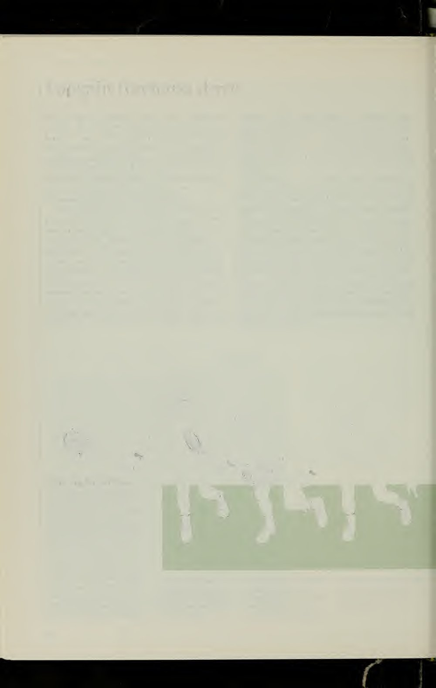
Hình 4.2: Mở rộng sải tay giải phóng quán tính kết thúc lên cao cho cú trái tay một tay.
Figure 4.2: Arm Extension and High Follow-Through on the One-Handed Backhand.
Thực hiện một cú giật nông và bước vào bằng chân trước khi bạn vung đầu vợt lên để đón bóng.
B Vùng đánh Với cổ tay chắc chắn và mặt vợt gần như thẳng đứng, tiếp bóng ngay trước hông dẫn đầu của bạn.
C Thực hiện theo Lái xe theo hướng của cú đánh với trọng lượng của bạn hoàn toàn dồn lên đầu gối cong phía trước của bạn để kết thúc ở độ cao ngang đầu.
GROUNDSTROKES Dropshots Nhóm cú đánh rơi bao gồm các cú đánh tầm ngắn được thực hiện sau khi bóng nảy lên và được thiết kế để rơi hụt so với đối thủ của bạn.
Các cú đánh thuận tay và trái tay cơ bản, được hiển thị bên dưới, được thực hiện với xoáy xuống.
Các biến thể, được hiển thị ở trang sau, là cú đánh chìm, thường được thực hiện với cú đánh xoáy lên, và cú đánh đổ bóng, là một cú đẩy bóng đơn giản từ sân trước thường được chơi với những quả bóng cao hơn chiều cao lưới.
Tất cả các cú đánh rơi có thể được chơi bằng tay cầm thông thường của bạn.
i : Cú đánh thuận tay 1 Từ bên trong đường cuối sân, đưa vợt của bạn về phía trên độ cao đánh, như đối với cú công bóng thuận tay (xem trang 56).
Bước vào. 2 Đẩy đầu vợt xuống phía sau và bên dưới quả bóng.
3 Kết thúc cú đánh chậm theo hướng đánh.
Cú đánh trái tay 1 Chuyển sang cách cầm vợt trái tay của bạn và chuẩn bị như đối với một cú ném bóng trái tay (xem trang 70).
2 Đẩy về phía trước và xuống dưới bằng đầu vợt để đánh vào dưới bóng, phía trước hông, cao khoảng thắt lưng.
3. Kết thúc cú đánh chắc chắn, nhưng nhẹ nhàng, bằng cách đi theo hướng thấp và theo hướng đánh.
DROPSHOTS Xây dựng cú đánh rơi vào trò chơi của bạn Trò chơi Dropshot rất thú vị và chuẩn bị để ngụy trang đầy hồi hộp, đặc biệt là trên sân cỏ nơi bóng chết nhanh chóng.
Thành công của nó phụ thuộc vào việc gây ngạc nhiên cho đối thủ của bạn, đến mức anh ta rất khó thu hồi và đánh bóng mà bạn đã đặt trên lưới hoặc hai quả bóng khác.
Bạn có thể thường xuyên sử dụng sự giống nhau giữa cú đánh thả và cú đánh cắt thuận tay cú đánh thuận tay r \ ý định khi thực hiện các cú đánh thả cơ bản.
Có hai loại ảnh chụp thả, được hiển thị bên dưới, ảnh chụp mờ và ảnh chụp đổ rác.
Đã học trước đó về các cú truyền bóng xoáy lên (seepp.52 và 66), các cú đánh bóng xoáy thuận tay và trái tay nhẹ nhàng sẽ trở nên dễ dàng.
Cú đánh chìm đặc biệt hiệu quả khi được thực hiện từ gần đường giao bóng nhưng nó cũng có thể được thực hiện với xoáy xuống hoặc xoáy ngang từ đất không người (xem tr.195).
Cú sút được thực hiện từ khá gần lưới, với trọng lượng cơ thể gần như tĩnh, với những quả bóng cao hơn có thể đặt trên lưới.
1 Từ gần đường giao bóng, bật chân phải của bạn, đưa mặt vợt ngang bằng hoặc thấp hơn một chút so với chiều cao đánh.
Cú đánh trái tay 2 Sau khi thực hiện một cú giật nông, bước vào, vung vợt về phía trước và hướng lên để gặp bóng đối diện với hông dẫn đầu.
Nâng vợt xuyên qua để tạo xoáy lên.
3 Kết thúc bằng vợt ngang cơ thể về phía vai trái.
1 Xoay sang chân trái với đầu gối hơi cong.
Đưa vợt của bạn lùi lại một khoảng ngắn khi đánh ở độ cao, thay đổi cách cầm vợt của bạn.
Bước vào sớm.
2 Thả tay không chơi của bạn ra và đẩy đầu vợt về phía trước để đón bóng (mặt vợt phẳng) ở phía trước hông dẫn đầu của bạn.
3. Thực hiện cú đánh của bạn thật ngắn, ném bóng qua lưới với độ xoáy tối thiểu và tốc độ rất nhỏ.
ĐẤT ĐẤT Luyện tập trên sân của chính bạn Một bên của lưới nhắm mục tiêu đối diện nhau ở đường biên, một cặp cách lưới 3-5 feet và một cặp khác cách lưới 10 feet.
Đầu tiên, hãy chiếm một vị trí ngay bên trong đường giao bóng ở phía bên kia của lưới với bóng rổ của bạn.
Thả bóng cho chính bạn thực hành cả cú đánh thuận tay và trái tay bằng cách sử dụng mục tiêu để đánh giá độ chính xác của bạn.
Hãy kiên trì cho đến khi bạn có được 75 phần trăm số quả bóng của mình nảy nhẹ nhàng giữa các mục tiêu 3-5 feet và lưới, và chỉ ở khoảng cách ngắn so với các mục tiêu 10 feet.
Sau đó, bạn có thể di chuyển lùi lại một yard để lấy rổ bóng tiếp theo và cuối cùng đến ngay bên trong vạch cuối sân (baseline) của mình.
Nếu bạn sử dụng một bức tường thực hành, hãy đánh dấu một đường kẻ trên mặt đất cách nó 3-5 feet.
Trở lại vị trí đánh bóng thông thường của bạn cách tường 15-20 feet và chơi và lặp lại cú đánh tiếp theo bằng cú đánh rơi, như minh họa bên phải, nhằm mục đích làm cho quả bóng rơi giữa đường 3-5 feet và bức tường với mỗi cú đánh rơi.
Sử dụng các cú đánh rơi của bạn Inmatch plav, hãy áp dụng quy tắc tinh thần rằng các cú đánh rơi của bạn sẽ không bao giờ rơi về phía lưới của bạn.
Tự cho mình mức sai sót này sẽ có nghĩa là ngay từ đầu, những cú đánh rơi của bạn sẽ buộc đối thủ của bạn phải trả về ít hơn là những người chiến thắng hoàn toàn.
Điều này tốt hơn nhiều so với việc nản lòng khi nhìn thấy một cú sút quá tham vọng rơi vào lưới.
Nói chung, plav sẽ ném những cú đánh vào những quả bóng có nhịp độ trung bình, nhắm vào một bên sân càng xa đối thủ bị mắc kẹt của bạn càng tốt.
Nếu không có lợi thế khi chơi ở cả hai bên, hãy nhắm vào giữa sân để bóng đi qua phần thấp nhất của lưới.
Các cú đánh chìm và các cú đánh được thực hiện từ gần lưới cũng nên được sử dụng tương tự.
Hãy nhớ rằng những cú sút chìm có thể hướng thẳng vào chân đối thủ một cách hữu ích khi họ đến gần lưới.
A Cú sút đổ B Cú sút Dink vào chân đối phương Các cú sút được thực hiện ở bên cạnh và giữa sân
Cú vô lê nửa vòng Nửa vô lê được tính thời gian hoàn hảo thường là một cú đánh phòng thủ, đón bóng và tạo ấn tượng rằng quả bóng chạm mặt sân và mặt vợt của bạn cùng một lúc.
Trên thực tế, dây vợt tiếp xúc với quả bóng ngay khi nó bắt đầu bay lên sau khi nảy.
Cú đánh là một cú đánh cơ bản rút gọn được thực hiện từ bất kỳ phần nào của sân, nhưng vì nó hiếm khi được lựa chọn theo sự lựa chọn nên hầu hết người chơi thực hiện cú vô lê một nửa ở vùng đất vắng người (xem trang 195), nơi thường không có lựa chọn thay thế.
Các phiên bản thuận tay và trái tay của nửa vollev được hiển thị bên dưới.
Những điều này nêu bật tầm quan trọng của việc bắt bóng ngay, quan sát quả bóng và thực hiện cú đánh bằng một cú xoay cổ tay ngắn và chắc chắn.
Mặc dù nó được coi là cú đánh khó tính thời gian nhất, và thậm chí còn bị gắn mác là cú đánh của kẻ lười biếng, nhưng nó đóng một vai trò quan trọng trong cả trận đấu đơn và đánh đôi. Bạn nên luyện tập nó một mình và với một đối tác thường xuyên, nếu không nỗ lực thực hiện cú vô lê nửa chừng trong trận đấu sẽ là thảm họa.
Cú volley thuận tay, cú volley trái tay
CÚT ĐẤT Cải thiện cú đánh Bạn chỉ nên đưa vợt về phía sau một khoảng cách ngắn ở mức thấp, giữ đầu vợt ngang bằng với cổ tay của bạn. Ở cả hai bên thuận tay và trái tay, hãy để đầu gối của bạn uốn cong khi bạn xoay về phía chân sau.
Cần có một cú giật nhẹ trong cú đánh về phía trước nên chỉ cần bước lên để chân trước của bạn đi chậm nhất có thể.
Mặt vợt phải tiếp xúc với quả bóng đối diện với hông dẫn đầu của bạn và mở (nghiêng về phía sau so với phương thẳng đứng) đủ để tạo ra góc lệch để làm sạch lưới.
Giữ vững cổ tay của bạn và thực hiện động tác nâng người, giữ nguyên vị trí của quả bóng.
Ngay trước khi đánh Thời điểm nửa cú vô lê cần phải luyện tập.
Cú đánh về phía trước của bạn phải đưa dây đến cao độ của quả bóng ngay trên mặt sân.
Ngay sau cú đánh Quả bóng đã bị chệch hướng ngay khi nó bắt đầu bay lên sau khi nảy.
Luyện tập ở vị trí của riêng bạn, hai mục tiêu bên trong đường cuối sân, một mục tiêu ở gần các góc của sân đánh đơn, và cũng có hai mục tiêu bên trong đường giao bóng, mỗi mục tiêu nằm trong khoảng nửa sóng giữa đường trung tâm và đường biên, như minh họa bên phải.
Với rổ bóng của bạn, hãy đi đến đầu bên kia của sân và bắt đầu thực hành cả cú vô lê thuận tay và trái tay của bạn nhằm vào các mục tiêu ở xa vạch cuối sân (baseline).
Đầu tiên ở phía thuận tay của đường cuối sân, sau đó là phía trái tay, chỉ cần xoay và thả bóng cho chính mình khi bạn cúi xuống và chuẩn bị ở mức thấp với một cú thu bóng ngắn.
Đảm bảo tiếp đất tốt và chuyển trọng lượng của bạn khi vung vợt về phía trước theo chuyển động nâng.
Điều này sẽ cải thiện khả năng xoay nửa chiều sâu ở đường biên và chéo bàn với cả hai cú đánh.
Với rổ bóng tiếp theo của bạn, hãy tiến lên phía trước vài bước ở mỗi bên trước khi bắt đầu, do đó, hãy thực hiện các cú vô lê nửa vòng của bạn từ vùng đất vắng người, một lần nữa nhắm đến các mục tiêu ở xa cơ bản.
Khi bạn cảm thấy tự tin khi đánh trúng các mục tiêu ở xa, hãy tiến về phía trước để thực hiện đường giao bóng và nhắm nửa quả vô lê của bạn vào các mục tiêu mà bạn đặt ngay bên trong đường giao bóng ở phía bên kia của lưới.
Chơi bóng từ cả hai phía thuận tay và trái tay.
Khi bạn thực hiện cú vô lê một nửa từ gần lưới hơn, bạn sẽ thấy rằng bạn phải rút ngắn thời gian trả bóng và nghiêng mặt vợt của bạn ra xa hơn một chút khi đánh.
Liên tục tung cú chuyền nửa người về phía sau là một cách rất tốt khác để phát triển kỹ thuật và thời gian của bạn.
Luyện tập với một đồng đội Trên sân, hãy thực hành cú vô lê thuận tay từ đường cuối sân với đối tác của bạn, người phải chuyền bóng trở lại thuận tay của bạn từ vị trí trên lưới.
Cố gắng duy trì một loạt đánh 10, rồi 20 cú đánh.
Sau 10 phút, hãy tập nửa cú vô lê trái tay của bạn trong cùng một khoảng thời gian, sau đó đối tác chuyền bóng của bạn sẽ trộn bóng thuận tay và bóng trái tay để luyện tập thêm 10 phút.
Đổi vai và lặp lại công việc thường ngày.
Tiến tới chuyển động một nửa với nhau từ các tuyến dịch vụ tương ứng của bạn.
Nếu bạn có thể duy trì một pha giao bóng theo cách này thì bạn đang dần thành thạo cách thực hiện cú vô lê một nửa.
Ở giai đoạn này, bạn có thể đưa nửa vollev vào thực hành đấu trận thực tế.
Chấp nhận vị trí giao bóng và yêu cầu đối tác của bạn đảm nhận vị trí nhận giao bóng.
Giao bóng cho đối tác của bạn và nếu anh ta thực hiện cú trả bóng thành công bằng chân của bạn, hãy thực hiện một nửa cú trả bóng khi bạn di chuyển vào lưới.
Lặp lại trình tự này trong 10 phút trước khi đổi vai với bạn tập của bạn.
HALF-VOLLEY Sử dụng nửa cú vô lê của bạn Cú vô lê nửa phải được sử dụng khi bạn bị mắc vào vùng đất không có người khi bạn tiếp cận lưới.
Sẽ tốt hơn nhiều khi thực hiện một nửa cú vô lê đúng vị trí hơn là cố gắng thực hiện một cú đánh hoặc một cú vô lê mà bạn đang ở ngoài vị trí. Một nửa cú vô lê tốt có thể lấy lại thế chủ động vốn đã bị mất tạm thời trước cú trả bóng thuận lợi của đối thủ.
Trong đấu đơn, hãy thực hiện cú vô lê một nửa ở đường biên gần nhất khi đối thủ của bạn ở vạch cuối sân, thể hiện ở phía trên bên phải.
Điều này sẽ mang đến cho bạn cơ hội tốt nhất để trang trải mọi khoản lợi nhuận có thể có khi bạn tiến tới vị thế ròng.
Tuy nhiên, nếu đối thủ của bạn đang đến gần lưới, hãy nhắm nửa cú vô lê của bạn sao cho nó chạm chân người ném lưới.
Trong trận đánh đôi, bạn phải cẩn thận để tránh người lưới đối phương khi thực hiện cú vô lê nửa hiệp.
Trực tiếp nhất của chéo sân vourhalf-vollevs.
MartinaXavratilova nhặt bóng bằng cú vô lê thuận tay tinh tế để đáp trả cú sút chìm của đối thủ.
Đầu gối cong và cổ tay cánh tay thấp của người Mỹ là dấu hiệu của khả năng kiểm soát dốc.
Cô ấy đã thực hiện quả bóng chéo góc, tạo khoảng trống để phá lưới ở gần điểm thấp nhất.
Cô ấy chăm chú theo dõi quả bóng - nếu nó ở đủ thấp trên lưới, cô ấy có thể duy trì thế chủ động, hoặc thậm chí giành được điểm với cú đánh này.
Cú vô lê nửa thuận tay và trái tay sâu dọc theo đường biên. Cú vô lê nửa bàn tới chân đối thủ
Phát triển một phong cách:các cú chạm đất John McEnroe chuẩn bị cho một cú tấn công xoáy lên ngược- để tạo ra một sự kết hợp độc đáo giữa chắc chắn và tay cây.
Anh ấy sử dụng một dạng loa mềm đã được sửa đổi trong ba kiểu chơi cổ tay.
Giống như McEnroe, một số người chơi phát triển các phong cách chơi đột phá- phương Đông và lục địa- hình thức này, .\n<.\ phong cách thứ ba, phương Tây.
Cú thuận tay Người chơi hiện đại sử dụng sự kết hợp giữa sức mạnh và khả năng kiểm soát trong cú đánh thuận tay cơ bản của họ.
Phong cách của mỗi người chơi phụ thuộc vào cách cầm vợt và kỹ thuật ban đầu đã học được cũng như được sửa đổi bằng cách trang điểm thể chất và tinh thần của từng cá nhân.
Ví dụ, The EasternandContinentalforms sẽ trình diễn theo phong cách của Evonne Cawley, Jimmy Connors, John McEnroe và Chris Evert Lloyd.
Phong cách phương Tây gây mệt mỏi về thể chất và chỉ có lợi trên sân nơi có độ nảy cao.
Động lực phẳng hơn do Connors thực hiện tương phản với động lực nâng cao của Vitas Gerulaitis, nhưng cả hai đều kết hợp sức mạnh và khả năng kiểm soát.
Phong cách tương phản Cách cầm thuận tay của phương Đông và phương Tây, bên dưới, lần lượt của Evonne Cawley và Sue Barker, cho thấy người chơi phương Tây đứng vuông góc hơn như thế nào và bóng được đánh cao hơn, gần cơ thể hơn và với cổ tay phía trên đầu vợt như thế nào.
Sue Barker EvonneCawley Martina Navratilova, sử dụng cách cầm vợt phương Đông đã được sửa đổi, thực hiện cú thuận tay chéo sân chắc chắn.
Cô ấy vẫn giữ thăng bằng tốt khi xem bóng.
Cô ấy thường sử dụng chuyển động cổ tay đáng kể để tăng thêm tốc độ đầu vợt khi đánh bóng.
Sue Barker thể hiện phong cách đánh bóng thuận tay của phương Tây, với đầu vợt vung dưới mức cổ tay.
Cô ấy xòe ngón trỏ ra để kiểm soát.
Cô ấy có thể đánh với tốc độ chóng mặt cũng như áp dụng tính năng xoáy lên mạnh - đặc điểm chính của cách cầm vợt phương Tây.
PHONG CÁCH GROUNDSTROKEST Kiểu cầm vợt Eastern của Brian Gottfried mang lại sự hỗ trợ tối đa đằng sau cán vợt khi anh ấy thực hiện một cú trả thuận tay mạnh mẽ, nếu bị chật chội.
Anh ấy tiếp bóng ngay phía trước hông dẫn đầu của mình, đầu và cánh tay trái giúp anh ấy giữ thăng bằng khi thực hiện cú cầm bóng.
EvonneCawley sử dụng ngón tay đầu tiên dang rộng với cách cầm vợt kiểu phương Đông đã được sửa đổi, giúp cô ấy vung vợt qua cú đánh /onv theo đường hoàn hảo với bóng.
Cô ấy buộc phải bước qua nhiều hơn mức cô ấy muốn, nhưng cánh tay trái đã giúp cô ấy giữ thăng bằng.
Cú công bóng xoáy thuận tay Nnhững người chơi dẫn đầu đã tận dụng cú công bóng xoáy thuận tay vì nó mang lại khả năng kiểm soát tối đa đồng thời cho phép tấn công tích cực.
Rod Laver và Bjorn Borg đã lần lượt sử dụng các câu lệnh phương Tây đã được sửa đổi của Continentaland đã được sửa đổi để tạo ra xoáy lên trừng phạt, và những tay vợt nữ quyền lực như Virginia Wade và Martina Xavratilova sử dụng nó, năng nổ trong các cú chuyền bóng và có hiệu ứng cuộn tròn hơn trong lối chơi cơ bản.
Định vị hợp lý là điều cần thiết để đạt được tốc độ - nếu không có tốc độ, một cú đánh xoáy lên có thể tiếp đất ngắn và nảy lên cao, khiến bóng có thể bị khai thác.
Cú thuận tay xoáy lên đặc biệt hiệu quả trong đánh đôi, bởi vì nó có thể tạo ra các góc bổ sung cho lối chơi chéo sân và khiến cú nhúng trở lại chân của người giao bóng khi họ tiếp cận lưới.
Guillermo Vilas thể hiện phong cách cong, cong của cú thuận tay hoàn toàn xoáy lên của phương Tây.
Anh ta tạo ra một quả bóng cao, có độ nảy cao bằng cú đánh, điều này thường xuyên khiến hầu hết các đối thủ của anh ta bối rối.
Anh ấy phải thực hiện cú đánh này gần hơn với kiểu mà anh ấy mong muốn, nhưng đã tạo được khoảng trống.
GroundSTROKESTYLE Vitas Gerulaitis đã chạy quanh trái tay của anh ấy để đánh cú công bóng xoáy lên này ở phía thuận tay.
Việc sử dụng cách cầm vợt kiểu phương Đông của anh ấy đã tạo ra một cánh tay mở rộng hơn và độ dứt điểm cho đầu vợt cao hơn so với cú đánh kiểu phương Tây như Vilas đã chứng minh.
Anh ta kết thúc cú đánh ở tư thế nằm nghiêng hơn.
Phong cách tương phản So sánh phong cách phương Đông và phương Tây cho thấy sự khác biệt rõ rệt của các phần tiếp theo.
Gerulaitis, f^j yj^^h sử dụng cách cầm vợt kiểu Đông, kết thúc £ _ "^"Ty*x &fj*\ cao và ở phía trước vai P^mV Sr^~ -?^>-\ bên trái, chỉ đóng biên oi mặt vợt.
S^s ^=s^ ^^Tr^ /^^^^r\ =^T^^^\^/ J Vilas, với tay cầm kiểu phương Tây, \\ ^^^f\ ^' \ đã hoàn thành cú sút của mình nhiều \ /Jv^ ^^j^gp^ \Ja-0 ' \ đưa bóng vào lưới.
Vợt \ \ \l^^^^\ đã đi theo phần dưới \ vS \ ^S*— <\>và nhiều phần khác xuyên qua thân M \aV ^^^x^^^^K, với mặt đánh o\ vợt đóng lại.
\ tty ^-==^>- ^ r itas< lerulaitis> GuillermoVilas
Cú cắt thuận tay Như Evonne Cawley và các tiết mục hiện đại khác. Theycanbeveryusefulasreturns pions đã cho thấy, cú cắt thuận tay và giao bóng, và khi phòng thủ, cú cắt dễ dàng vẫn là những cú chạm đất hiệu quả và thực hiện cú cắt thường giải cứu những người chơi đáng lẽ phải được đưa vào mọi trận đấu mà người chơi phải chịu áp lực cực độ.
VirginiaWade chuẩn bị thực hiện một cú cắt thuận tay mạnh mẽ với đầu vợt cao hơn mức cổ tay.
Mặt vợt của cô ấy hơi góc cạnh để có thể áp dụng xoáy ngang và xoáy xuống, cú đánh sẽ được thực hiện trong tấn công khi trọng lượng cơ thể di chuyển về phía đầu gối trước và bóng chạm đối diện với hông trái.
GroundSTROKESTYLE Cú công bóng trái tay Cơ bản, nâng cao là một cú đánh cần thiết trong lối chơi hiện đại.
Sự phát triển của nó đã tạo ra một trò chơi cơ bản cân bằng hơn.
Cách cầm vợt trái tay kiểu phương Đông phù hợp với cú vung ngắn hơn và khả năng kiểm soát cổ tay chắc chắn cần thiết để chống lại những đối thủ hung hãn.
Cú đánh phải gọn gàng và mạnh mẽ bằng một cú xoay từ vai.
Tiềm năng phòng thủ tự nhiên của nó cho phép thực hiện đầy đủ các đòn cắt, cắt và cắt theo nhiều biến thể.
Adriano Panatta, một nhà tạo mẫu phương Đông, đã xoay cú đánh của mình ra xa vai, và vợt của anh ấy bắt đầu vung về phía trước từ độ cao đánh bên dưới.
Cú đánh nâng lên này sẽ kiểm soát bóng rơi một cách hoàn hảo.
Cú trả bóng thẳng của Arthur Ashe là bước mở đầu cho một cú đánh trái tay phẳng điển hình, chỉ với một lượng xoáy lên vừa phải để kiểm soát.
Anh ấy giữ thăng bằng hoàn hảo ở chân sau, trong khi tay trái của anh ấy là một ví dụ tuyệt vời về cách đỡ vợt khi chuẩn bị đánh trái tay.
BACKHANDDRIVE Jimmy Connors sử dụng hai tay cầm thuận tay theo kiểu trái tay hai tay của mình.
Trong trường hợp này, anh ta phải thả tay phải ra để thực hiện cú đánh cao.
Tay vợt của Bjorn Borg cầm vợt bằng cách cầm vợt trái tay kiểu phương Đông, trong khi tay hỗ trợ của anh ấy sử dụng vị trí thuận tay trái kiểu phương Đông trên cán vợt - một cách cầm vợt trái tay hai tay lý tưởng.
Chris Evert Lloyd là hình ảnh thu nhỏ của phong cách trái tay phương Đông.
Chỉ có cách cầm bằng hai tay và khả năng xoay bên ngoài của cô ấy là khác nhau đáng kể.
Cô ấy có một cú xoay cổ tay chắc chắn xuyên qua vùng đánh từ vai.
GROUNDSTROKESTYLE Cú đánh bóng xoáy trái từ trên xuống Những cầu thủ dẫn đầu sử dụng cú đánh trái tay xoáy lên để hạ bóng qua hoặc dưới chân những người bắt cú vô-lê tới.
Biên độ lớn hơn cho lỗi và góc tăng lên khi chơi chéo sân khiến cú đánh trở nên lý tưởng cho việc sử dụng chiến thuật.
Cú đánh trái tay xoáy lên kiểu phương Đông có thể được sử dụng để chống lại nhiều loại bóng hơn so với kiểu đánh trái tay xoáy lên kiểu phương Tây, vốn chủ yếu thích hợp để chống lại những quả bóng có độ nảy cao trên chiều cao thắt lưng.
Chọn vị trí tốt để chuyển trọng lượng tối đa là điều cần thiết, nếu không cú đánh sẽ thiếu tốc độ và dễ bị đối thủ tấn công hơn.
Guillermo Vilas một lần nữa thể hiện cú đánh cong cao của một cú đánh kiểu phương Tây, lần này là ở phía sau tay.
Anh ấy đã phải thực hiện cú đánh này bằng chân sau, lướt qua bóng thật nhanh.
Bjorn Borghas bị bắt đối diện với lưới, ngay sau khi tiếp xúc với bóng, anh ấy thả tay trái ra để có thể thực hiện thêm động tác vai.
Vợt của anh ta, khép mặt, bay theo chiều cao trên đầu.
TOPSPIXBACKHANDDRIVE [ohnLloyd plavsan hung hăng xoáy lên trái tay bằng chân sau bằng cách sử dụng cách cầm vợt trái tay cơ bản của phương Đông.
Sức mạnh to lớn của Lloyd nằm ở trái tay của anh ấy, và anh ấy rất thành thạo trong việc thực hiện những cú chuyền bóng khi anh ấy bị áp đảo từ những vị trí có vẻ phòng thủ.
Cuộc tấn công cải tiến Mặc dù đặt sai chân và không thể chuyển trọng lượng của mình về phía trước, JohnLloydhas đã bù đắp rất tốt bằng cách dùng vợt đẩy mạnh lên trên, được hiển thị bên dưới, áp dụng xoáy lên và chuyển từ phòng thủ sang tấn công.
SandyMayer thực hiện một cú đánh trái tay xoáy từ trên tích cực, kết thúc bằng cổ tay cao và chắc chắn, thể hiện phong cách phương Đông đã được sửa đổi của anh ấy.
Anh ấy đã phải chơi bằng chân sau, nhưng đã chuyển một phần trọng lượng cơ thể của mình sang chân trước khi cô ấy xoay.
GROUNDSTROKESTYLE Cú cắt trái tay Cú cắt trái tay đã là một cú đánh thiết yếu kể từ khi quần vợt bắt đầu.
Cú đánh, và nhiều biến thể của nó, là những lựa chọn thay thế hữu ích cho các cú công bóng nâng lên và xoáy lên cơ bản khi tấn công.
Tuy nhiên, lát cắt có biên độ hẹp hơn để tránh sai sót nên bóng phải gần như lướt qua lưới mới có hiệu quả;
nếu không nó sẽ giúp người thực hiện cú vô lê dễ dàng hạ gục.
Các tay vợt hàng đầu thế giới dựa vào cú đánh trái tay cắt lát để tấn công từ đường cuối sân trên các bề mặt chơi chậm hơn, và vì cú cắt cơ bản có thể được thực hiện nhanh chóng nên nó rất quan trọng để chơi phòng thủ từ đường cuối sân. Khi cú đánh được thực hiện với phong cách cổ tay rắn chắc của phương Đông của Ken Rosewall, với kỹ thuật âm thanh và thời gian hoàn hảo, các cú đánh xoáy lên dường như không cần thiết.
Tuy nhiên, nó sẽ khiến một tay vợt trình độ cao nhất gặp bất lợi đáng kể nếu chỉ dựa vào một cú công bóng cắt lát ở phía trái tay - Evonne Cavvley thực hiện một cú cắt trái tay mạnh mẽ.
Mặc dù mặt vợt được đặt ở vị trí tốt nhưng vợt vẫn tiếp cận bóng theo quỹ đạo phẳng khi tiếp xúc.
Nó sẽ gặp quả bóng ngay trước mặt cô ấy ở mức ngang eo.
Ở độ cao này, cú vung của cô ấy sẽ không bị cản trở bởi chân trước.
CÚT TRÁI Martina Navratilova đã chơi một biến thể lát cắt bên trong của cú cắt trái tay, từ ngay bên trong vạch cuối sân (baseline) và gần đường biên bên phải của cô ấy.
Cô ấy đã đánh bóng trước cơ thể ở độ cao khoảng đầu gối và thực hiện cú đánh của mình để đi dọc theo đường biên, với khả năng kiểm soát độ xoáy.
Xote bên trong Xote chuyển động từ cao xuống thấp và hướng ra ngoài của đầu vợt khi nó tiếp cận quả bóng.
Một số xoáy xuống được thêm vào trong cú đánh này, nhưng đặc điểm chính của nó là xoáy ngang lệch được áp dụng khi các sợi dây được kéo qua mặt sau của quả bóng.
Điều này làm cho bóng di chuyển về phía giữa sân khi nó đi qua lưới và sau đó bay ngược về phía đường biên, cách xa cú trái tay của đối phương thuận tay phải.
Cú cắt trái tay bên trong này làm cho quả bóng xoay theo chiều kim đồng hồ, và điều này làm cho nó uốn cong và bật ra khỏi sân - từ góc nhìn của người nhận - từ phải sang trái.
Dropshots GroundSTROKESTYLE Cú bắn thả là một cú đánh cần thiết trong trò chơi của người chơi khéo léo.
Việc sử dụng nó một cách tinh tế vào những thời điểm chiến lược và tiết kiệm sức lực khi được sử dụng để đối lập với những cú đánh mạnh mẽ trên mặt đất có thể khiến đối thủ mệt mỏi và giành được điểm một cách đều đặn.
Nó có thể được hoàn thiện như bất kỳ nét vẽ nào khác.
Nó nên được thực hiện từ bên trong đường cuối sân đối với một cú đánh có tốc độ trung bình, cho phép có một sai số nhất định thông qua góc mặt vợt được kiểm soát.
Jaroslav Drobny, Manuel Santana và Billie Jean King trong suốt triều đại của cô với tư cách là tay vợt nữ hàng đầu thế giới liên tục sử dụng những cú đánh rơi để phá vỡ nhịp độ và tinh thần của đối thủ.
Trong số những cầu thủ trẻ hàng đầu hiện nay, Ramesh Krishnan đã là một nghệ sĩ bắn súng xuất sắc.
Người chơi thường thiên về cú đánh trái tay khi thực hiện cú đánh "chạm" nhạy cảm này, nhưng nó cũng có thể được thực hiện tốt bằng cú thuận tay trong những trường hợp thích hợp khi đối thủ của bạn bị mắc kẹt ở cuối sân.
Vitas Gerulaitis vừa thực hiện một cú đánh trái tay tinh tế nhưng mỏi cổ tay, và thể hiện sự cân bằng tuyệt vời trong những pha theo sau.
Mặc dù anh ta chỉ ở vị trí ngay bên trong đường cuối sân, nhưng Gerulaitis có tốc độ để tiếp cận bất kỳ cú đánh phản công nào mà đối thủ của anh ta có thể thực hiện.
DROPSHOTS Hie Nastase thực hiện một cú sút xa tuyệt vời từ phía sau đường giao bóng của anh ấy.
Anh ấy đã bước qua rất tốt, uốn cong đầu gối của mình như thể thực hiện cú vô lê để hướng cú đánh của mình qua sân.
Sự trở lại bất ngờ của Nastase khi bị bắt ở vùng đất của người không phải là người bị bắn hạ ở đường biên, như minh họa bên dưới.
Nhiều người chơi sẽ hoảng sợ trong tình huống như vậy, nhưng Nastase thực hiện một cú sút chéo góc bất ngờ.
Nó tiếp đất ngay bên kia lưới, gần đường biên, hoàn toàn đánh lừa đối thủ vẫn đang ở sân sau.
Cách cầm vợt của anh ấy mang lại khả năng kiểm soát mặt vợt chính xác.
-b*s T\ AnneHobbs thực hiện cú đánh rơi này vào một quả bóng đã nảy lên cao và về phía cô ấy.
Thay vì đi xuống như Nastase, cô ấy đã rời khỏi mặt đất khi chơi về phía trước và dưới bóng để áp dụng xoáy xuống kiểm soát.
Cô sử dụng tay trái để giữ thăng bằng.
GROUNDSTROKESTYLE Half-volley Half-volley được coi là một cú đánh khẩn cấp, nhưng với việc trả giao bóng được cải thiện, các cầu thủ ném bóng sẽ gặp nhiều tình huống hơn cần thực hiện cú đánh này.
Bằng cách thực hành cú vô lê một nửa, bạn cũng sẽ tự rèn luyện cho mình cách chơi bóng sớm.
Tuy nhiên, nói chung sẽ không khôn ngoan khi thực hiện cú vô lê nửa chừng khi có thể thực hiện cú vô lê.
Cú đánh thường được sử dụng như một cú bắt bóng viết tắt trong đánh đôi, khi việc chọn thời điểm hoàn hảo là rất quan trọng.
Bob Hewitt, ở trên, đã mất vị trí với bóng dưới chân và thực hiện một cú vô lê nửa người, chiếm thế chủ động từ đối thủ.
Arthur Ashe, trái, thực hiện một cú vô lê nửa vuốt và sẽ thực hiện theo hướng của cú đánh.
Anh ta đã sử dụng cú đánh để duy trì thế chủ động của mình trong loạt bóng bền (rally).
Những pha hồi phục tương phản Ashe đã đưa chân đến gần bóng hơn để có thể duy trì thăng bằng và kiểm soát cú đánh này.
Trọng lượng cơ thể đang được chuyển giao, cổ tay của anh ta thả xuống và gần như ngang bằng với đầu vợt.
Ngược lại, Hewitt có trọng lượng nghiêng về phía sau và mặt vợt cực kỳ góc cạnh.
Anh ta đã biến cú sút thành một cú lốp bóng nửa vô lê, khiến đối thủ lần lượt bất ngờ.
Tốc độ không phải là yếu tố quan trọng ở vị trí này.
ArthurAshe Bob Hewitt
HALF-YOLLEY Vitas Gerulaitis đã phải đối mặt với một pha giao bóng bằng chân khi cô ấy tiến về phía lưới.
Với cổ tay và đầu vợt gần như ngang bằng, Gerulaitis đã nhặt bóng lên đối diện với chân sau của mình, chân gần bóng hơn.
Hemustaiim ngắn hoặc sâu đến vạch cuối sân (baseline), bởi vì Connors đang chờ đợi để đưa ra bất kỳ câu trả lời ngắn hoặc giữa sân nào.
Xote cho rằng tỉ số là 6-6, 30-30 - một điểm quan trọng cho cả hai tay vợt.
THESERVE Một cú giao bóng hiệu quả là một khía cạnh quan trọng trong trò chơi của một người.
Nếu không có một cú giao bóng mạnh mẽ và chính xác, bất kỳ người chơi nào cũng không thể đạt được trình độ năng lực hợp lý.
Có ba loại giao bóng, tất cả đều dựa trên hành động ném cơ bản (xem trang 33): giao bóng cơ bản hoặc giao bóng phẳng, giao bóng xoáy lên hoặc giao bóng xoắn kiểu Mỹ và giao bóng cắt lát.
Như tên gọi của chúng hàm ý sự khác biệt giữa những cú giao bóng này nằm ở mức độ xoáy được áp dụng.
Cú giao bóng cơ bản là quỹ đạo phẳng hitona với độ xoáy tối thiểu.
Đây là cách dễ nhất dành cho người mới bắt đầu nhưng cũng nhanh nhất khi được phát triển và đánh bại bởi những người chơi hàng đầu.
Cú giao bóng xoáy lên, giống như tất cả các cú đánh xoáy lên, có quỹ đạo tạo vòng cung cao và độ nảy cao.
Cú giao bóng được đánh bằng xoáy ngang (xem trang 44) và một số xoáy lên, làm cho quả bóng bay trong không khí và sau khi nảy lên.
Tuy nhiên, bạn sửa đổi quan điểm của mình đối với từng loại dịch vụ, có những điểm chung cần thiết.
Bàn chân của bạn phải rộng bằng vai, bàn chân trước của bạn rộng bằng một quả bóng tính từ vạch cuối sân (baseline) và cách tâm điểm trong vòng 2 feet, đồng thời cong đầu gối.
lựa chọn sẽ phụ thuộc vào vóc dáng của bạn và yêu cầu của trò chơi của bạn.
Nói chung, cú giao bóng cơ bản được sử dụng cho cú giao bóng đầu tiên và cú giao bóng xoáy lên cho cú giao bóng thứ hai, với cú giao bóng cắt lát được dùng làm một biến thể.
Thế đứng giao bóng rất quan trọng đối với hướng, nhịp điệu và thời gian của cú giao bóng.
Cách cầm vợt lý tưởng để giao bóng là kiểu cầm Continental sẽ cho phép bạn nắm bắt tối đa lực ở cổ tay và tạo độ xoáy khi bạn đánh bóng, nhưng kiểu cầm thuận tay kiểu phương Đông có thể giúp bạn kiểm soát dễ dàng hơn khi bắt đầu với cú giao bóng cơ bản.
Giữ bóng đúng cách trước khi thả ra là yếu tố quan trọng trong việc kiểm soát vị trí.
Hầu hết người chơi trưởng thành thấy dễ dàng cầm hai quả bóng khi đặt thuận tay, nhưng trẻ em dưới 10 tuổi và người chơi thuận tay đôi có thể thích bỏ một quả bóng vào lỗ hơn.
Cách cầm giao bóng Kiểu cầm Continental (xem trang 39, gần bên phải, là cách cầm giao bóng hoàn hảo vì nó cho phép chuyển động cổ tay tương đối tự do. Khi mới bắt đầu, bạn có thể thấy rằng cách cầm vợt thuận tay kiểu Eastern (xem trang 38) giúp bạn kiểm soát nhiều hơn Giữ bóng Giữ một quả bóng trước khi chuyền bóng mà bạn sắp giao bóng giữa ngón cái và cả bốn ngón tay. Giữ hai quả bóng Giữ quả bóng đầu tiên bằng ngón tay cái và hai ngón tay đầu tiên và quả bóng thứ hai bằng ngón tay thứ ba và thứ tư.
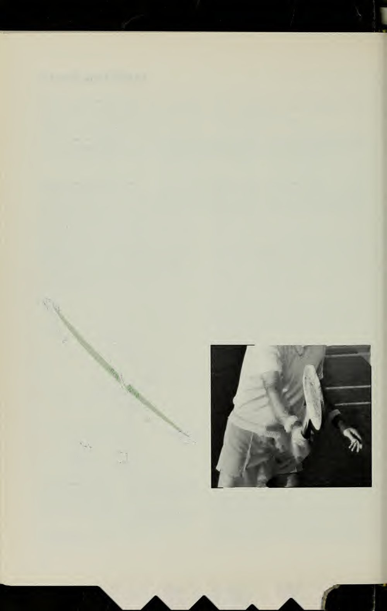
Hình 4.3: Cơ sinh học hai tay nắm vợt: Tay không thuận trợ lực và dẫn hướng xoay thân mạnh mẽ.
Phần 4: Kỹ năng giao bóng thành thạo (Flat, Slice, Topspin & Reverse)
Part 4: The Service Mastery (Flat, Slice, Topspin & Reverse) 71 đoạn phân tích chuyên sâu
Giao bóng cơ bản Giao bóng đầu tiên nhanh là cú đánh đáng sợ nhất trong quần vợt hiện đại.
Sức mạnh và sự kết hợp độc đáo giữa nhịp điệu, tốc độ và độ chính xác của một lão già như Roscoe Tanner trong trò chơi ngày nay là hình ảnh thu nhỏ của lần giao bóng đầu tiên.
Độ chính xác có được từ quá trình luyện tập cường độ cao là rất quan trọng để có chất lượng tốt trong lần giao bóng đầu tiên.
Một cú đánh cơ bản mạnh mẽ của senice càng phẳng càng tốt đối với một cầu thủ cao 1,83 mét (6 foot), quả bóng vừa đi qua lưới sẽ chỉ có khoảng một footband của sân senice để tiếp đất.
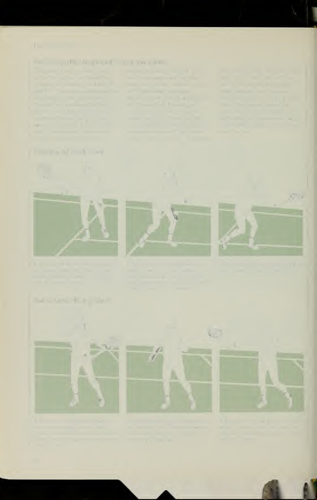
Hình 5.1: Tư thế Cúp Vàng (Trophy Pose) — Nạp động năng toàn thân tại điểm tung bóng cao nhất.
Figure 5.1: The Trophy Pose Loading Elastic Energy for the Serve.
Vì không thể đánh bóng mà không có bất kỳ vòng xoáy nào, hành động cơ bản của người nhận bóng nên thực hiện nhẹ nhàng xoáy từ trên xuống để quả bóng hơi cong xuống dưới.
Điều này sẽ có tác dụng mở rộng khu vực mục tiêu.
Cao chỉ là một lợi thế nếu bạn sử dụng hết chiều cao và tầm với của mình.
Một cầu thủ cao giao bóng không hiệu quả với cánh tay đánh cong và ném thấp sẽ luôn bị đối thủ giao bóng tốt đánh bại ngay cả khi anh ta thấp hơn 5 inch và nhẹ hơn 25 pound.
Cú đánh Hãy ổn định ở tư thế già nua và bắt đầu cú đánh một cách chậm rãi.
Nhóm cánh tay của chúng tôi ngay phía trước chân trước của bạn, để vợt của bạn vung xuống qua bạn khi bạn tung cánh tay vung lên và bạn bắt đầu chuyển trọng lượng của bạn từ bàn chân của bạn về phía trước OYerđầu gối cong của bạn.
Thả bóng khi cánh tay ném của bạn đã căng hết mức và vợt của bạn đánh úp xuống, đã ở cuối quá trình thu bóng.
Cong khuỷu tay của cánh tay vợt của bạn trong khi nâng bằng cổ tay của bạn để mang lại 1. Giữ tư thế cao cấp từ sân bên phải, cầm vợt bằng cách cầm giao bóng Continental.
2 Đẩy trọng lượng của bạn về phía trước khi bạn buông tay vợt và ném cánh tay.
Xoay vai đánh để vợt và tay ném thẳng hàng.
3 Tung quả bóng về phía trước và hơi chếch sang bên phải.
Uốn cong cánh tay vợt để nâng vợt lên, để cánh tay trái hướng vào quả bóng.
4. Thả vợt vào tư thế ném, giữ khuỷu tay cao.
Khi quả bóng bắt đầu rơi, cánh tay trái bắt đầu thả sang một bên.
Định vị bàn chân của bạn Thao tác ném Căn chỉnh bàn chân của bạn sao cho một đường tưởng tượng, nối các ngón chân của đôi giày của bạn, hướng về phía khu vực mục tiêu của bạn.
Mũi chân trước của bạn phải hướng về phía cột lưới đối diện.
Bóng nên được ném về phía trước, hơi chếch sang bên phải vai trước của bạn và ít nhất cao hơn một chút so với mức bạn có thể với tới bằng vợt để bóng được đánh sau khi nó rơi xuống khoảng 4 inch.
Thả bóng khi cánh tay ném của bạn căng hết mức, khi một đường chéo có thể vẽ từ cổ tay của cánh tay tung, qua vai và dọc theo cánh tay vợt đến đầu đầu vợt.
cú đánh đầu vợt.
Vào lúc cao điểm của cú ném, hãy thả đầu vợt vào vị trí ném sau lưng.
Duỗi thẳng chân, đẩy trọng lượng của bạn lên trên và về phía trước phía sau tay cầm vợt khi thanh niên ném vợt hướng lên trên.
5 Duỗi thẳng chân khi bạn búng cổ tay ném đầu vợt lên để đón bóng khi nó đã rơi xuống 4-6 inch. 6 Đánh bóng bằng tay cầm vợt căng hết cỡ và dồn trọng lượng dồn hết vào bàn chân trước.
7 Khi động lượng về phía trước tiếp tục và chân sau vượt qua chân trước, hãy giữ vợt vung theo hướng NGOÀI khu vực mục tiêu đã chọn.
8 Thực hiện theo, vợt vung xuống qua phía bên trái của cơ thể bạn và chân phải của bạn hạ xuống chắc chắn để có một cú dứt điểm cân bằng.
DỊCH VỤ CƠ BẢN Cải thiện cú đánh của bạn Điều cần thiết là phải kết hợp từng đặc điểm chính của cú giao bóng thành một chuyển động trôi chảy và mạnh mẽ.
Việc chuẩn bị cho cú vung vợt bao gồm việc cầm vợt về phía sau và nâng nó vào vị trí ném giữa hai xương bả vai của bạn khi ném bóng.
Hãy tiếp tục đánh khuỷu tay lên cao và cầm vợt bằng tay của bạn tránh xa cơ thể của bạn.
Đây là yếu tố kích hoạt lực đẩy vào quả bóng, như minh họa bên phải.
Khi đầu vợt tiếp cận quả bóng, nó phải tập trung tốc độ tối đa bằng chân, vai, tay đánh và cổ tay tất cả các bộ phận của chúng.
J7 Thu hồi Mặt trong của cổ tay đánh của bạn và mặt đánh của vợt của bạn phải hướng về phía bề mặt sân khi kết thúc quá trình thu lại.
Bệ đánh Đẩy hông trước của bạn về phía trước khi bạn di chuyển trọng lượng cơ thể qua đầu gối trước đang cong, ổn định bàn chân trước của bạn.
B Vai đánhVai sau phải quay vào để tăng thêm sức mạnh cho cú đánh khi đầu vợt được ném lên để gặp bóng.
Xoay vai đánh quá sớm hoặc quá muộn sẽ lãng phí sức mạnh này.
C Vùng đánh bóng Hãy ngẩng cao đầu và nhìn vào quả bóng.
Khi đánh bóng, cổ tay phải bật về phía trước để đưa dây ra phía sau quả bóng, với động tác hướng lên, xuyên qua và qua.
D Theo dõi Để vợt vòng qua chân trái của bạn khi đà của bạn đưa bạn về phía trước bằng chân phải của bạn đã vung qua vạch cuối sân (baseline).
Nhịp điệu và thời gian Nhịp điệu giao bóng của bạn ảnh hưởng trực tiếp đến thời gian và hiệu quả giao bóng của bạn.
Hãy tìm ra nhịp giao bóng tự nhiên của riêng bạn theo nguyên tắc chung là bắt đầu chậm và kết thúc với tốc độ đầu vợt tối đa ngay trước khi va chạm.
Mặc dù nhịp độ liên tục là rất quan trọng, nhưng cần có cảm giác tạm dừng sau khi vợt được cầm lên và trước khi thả nó vào vị trí ném.
Nếu vợt của bạn được đưa vào vị trí ném quá sớm trong quá trình thực hiện cú đánh, nó sẽ ở đó quá lâu và toàn bộ động lượng tích tụ sẽ bị mất.
Nếu bạn cảm thấy rằng bạn không có đủ thời gian để thả vợt xuống đủ thấp, hãy đặt bóng của bạn cao hơn một chút.
Khuyến khích giao bóng nhịp nhàng bằng cách lặp lại nhiều mệnh lệnh khác nhau cho học sinh trong suốt buổi lễ theo nhịp điệu phù hợp nhất với họ.
"Xuống, lên và đánh" là hữu ích nhất, nhấn mạnh vào"LÊN" và "FiTT" .
Bạn có thể nói điều này với chính mình: “Xuống” khi bạn bắt đầu chuyển động;
"LÊN" trùng với thời điểm tung và lấy vợt lùi và lên;
“và” phải trùng với cảm giác tạm dừng khi bóng bay lên và vợt đang rơi vào vị trí ném và “ĐÁNH” khi vợt nảy lên.
Luyện tập trên sân của chính mình, bạn có thể phát triển kỹ thuật giao bóng cơ bản một cách hữu ích với bảng đen.
Đứng cách tường từ 15 đến 20 feet và dùng dây ở chiều cao dưới để đo chiều cao.
Tập trung vào từng đặc điểm kev của cú đánh riêng lẻ khi bạn giao bóng nối tiếp quả bóng.
Luyện tập căn thời gian đánh sao cho bạn đánh bóng vào đúng vị trí (xem tr.272).
Trên sân, đặt một mục tiêu chẳng hạn như hộp bóng, tấm che đầu vợt hoặc hộp thiếc, ở các góc thuận tay và trái tay của cả hai sân giao bóng bên phải và bên trái, và một mục tiêu ở giữa mỗi sân giao bóng ngay bên trong đường giao bóng.
Mang một thùng bóng đến phía đối diện của sân và thực hiện tư thế giao bóng ở bên phải điểm trung tâm.
Giao một nửa số bóng của bạn vào phần sân giao bóng bên phải, lần lượt nhắm một cặp bóng vào một trong ba mục tiêu, bắt đầu từ mục tiêu ở góc trái tay cho một người nhận bóng thuận tay phải tưởng tượng.
Lặp lại điều này cho đến khi bạn hết bóng, sau đó giao bóng cho nửa còn lại của bạn theo trình tự tương tự từ bên trái của điểm giữa đến sân giao bóng bên trái.
Tường luyện tập Khi sử dụng bảng sau để cải thiện cú giao bóng của bạn, hãy sử dụng các điểm đánh dấu trên tường để thực hành Giao bóng tại mục tiêu Giao bóng tại mục tiêu, như minh họa bên phải, là một cách hay để cải thiện cú đánh của bạn và đo lường sự tiến bộ của bạn.
Giữ một cuốn sổ để ghi lại các mục tiêu của bạn và tập trung vào các mục tiêu mà bạn thường bỏ sót nhất.
thực tế nhất có thể.
Cũng như chiều cao của đường dây trên mạng, hãy đánh dấu băng tần mạng để bạn có thể đánh giá các sân giao bóng.
r Thực hành cú ném O Hãy giữ tư thế giao bóng của bạn trên sân với tấm che đầu vợt được đặt ở vị trí 12 đến 14 trong đường cuối sân, xác định chính xác vị trí bóng sẽ chạm đất nếu bạn không đánh nó.
Thực hiện nửa cú đánh đầu tiên của bạn, thực sự giãn cơ khi bạn ném bóng về phía trước và ngay bên phải vai ném của bạn trong cú giao bóng cơ bản.
Hãy vươn xa nhất có thể với vợt được cầm trong tay ném của bạn.
Cố gắng thả bóng với một chút xoay hoặc không.
Hãy để quả bóng rơi xuống đất và kiên trì cho đến khi quả bóng này tiếp nối quả bóng khác chạm tới mục tiêu trước mặt bạn.
Ngay khi bạn cảm thấy thành thạo hãy kết hợp cú tung với toàn bộ cú đánh một lần nữa.
Bất cứ khi nào bạn tách bất kỳ phần nào của một cú đánh để luyện tập, tốt nhất là kết hợp nó với cú đánh hoàn chỉnh ngay khi bạn có thể.
BASICSERVICE FootfaultLỗi chạm chân phổ biến nhất xảy ra khi bạn dẫm chân trước lên vạch cuối sân trước khi đánh bóng.
Điều này thường xảy ra khi hai bàn chân của bạn quá gần nhau trong tư thế giao bóng hoặc bạn di chuyển trọng lượng của mình quá muộn trong cú đánh.
Ngược lại, nếu bạn chuyển trọng lượng của mình quá sớm trong cú đánh thì bạn có khả năng mắc lỗi ở chân sau vì nó đưa cánh qua quá sớm, đi xuống hoặc vượt qua đường biên trước khi bạn đánh bóng.
Hãy thử giữ chân sau của bạn trên mặt đất trong một số lần giao bóng thực hành, chỉ tung bóng lên một phần về phía trước. Việc chuyển trọng lượng sai lầm tương tự trong cú giao bóng khiến một số cầu thủ tiếp đất qua vạch cuối sân bằng cả hai chân ngay trước khi đánh bóng.
Chân sau Cả hai chân Sử dụng cú giao bóng cơ bản của bạn Người chơi có cú giao bóng đầu tiên ổn định nhất sẽ có lợi thế rõ ràng trong một trận đấu với điều kiện là cú giao bóng của anh ta sở hữu tốc độ và độ chính xác.
Nếu bạn phải dựa vào quá nhiều cú giao bóng thứ hai, bạn sẽ giảm bớt áp lực cho đối thủ và tự đặt áp lực lên chính mình.
Hãy đặt mục tiêu đạt được 70% số cú giao bóng đầu tiên của bạn vào cuộc. Như những cú giao bóng đầu tiên của nhiều cầu thủ hàng đầu minh họa, điều này có thể được thực hiện tốt nhất bằng cách giao bóng với 3/4 sức mạnh để có thể duy trì cả tốc độ và độ chính xác.
Loại người giao bóng đầu tiên này đáng sợ hơn sân giao bóng bên phải, loại người nhận thuận tay phải, người giao bóng với toàn bộ sức mạnh trong lần giao bóng đầu tiên của mình, đạt được vị trí chính xác chỉ với một trong mỗi năm hoặc sáu quả bóng và luôn lãng phí thời gian quý giá về thể chất và tinh thần.
Tốc độ của cú giao bóng đầu tiên của bạn là rất cần thiết vì người nhận bóng có thể dễ dàng đọc được đường bay của bóng nếu nó di chuyển không đủ nhanh.
Yêu cầu tốc độ này làm cho các bề mặt nhanh, như cỏ, lý tưởng cho lần giao bóng đầu tiên.
Bạn có thể đặt quả giao bóng đầu tiên của mình vào góc thuận tay hoặc góc trái tay của một trong hai người giao bóng hoặc thẳng vào đối thủ của bạn để bộc lộ điểm yếu của người nhận thuận tay phải hoặc tay trái hoặc để gây áp lực bằng cách thay đổi đòn tấn công của bạn.
Việc có thể tự tin lựa chọn hướng và độ dài của cú giao bóng đầu tiên là điều quan trọng để bạn thành công trước những người thuận tay phải, tay trái và tay đôi.
Sân giao bóng bên trái, người nhận giao bóng thuận tay phải AForhand BBody CBackhand AForehand BBody CBackhand
Roscoe Tanner đặt bóng ở mức thấp đặc trưng trong lần giao bóng đầu tiên rất nhanh của anh ấy.
Vợt của anh ta vẫn phải rơi vào vị trí ném trước khi anh ta tấn công* sảnh bằng tay vợt thẳng.
Hãy chú ý cách Tanner nghiêng người rất tốt qua đầu gối cong phía trước của anh ấy và cách anh ấy xoay vai ra vừa đủ để giải phóng toàn bộ sức mạnh của nó vào đúng thời điểm.'
Cú giao bóng xoáy lên Một khi đã thành thạo, cú giao bóng xoáy lên (xem trang 42), hay cú giao bóng xoắn kiểu Mỹ, cực kỳ đáng tin cậy vì xoáy tác dụng lên bóng tạo ra một đường bay chìm cho phép khoảng trống lưới cao.
Mức độ tốc độ và độ xoáy được áp dụng có thể khác nhau, làm cho cú đánh phù hợp cho cả những cú giao bóng đầu tiên tích cực và đặc biệt là những cú giao bóng thứ hai ổn định.
Nếu xoáy không được áp dụng đủ mạnh thì cú giao bóng xoáy lên trên sẽ chỉ nảy đến một độ cao dễ dàng.
Mặc dù bạn có thể sử dụng cách cầm vợt thuận tay kiểu Đông khi bắt đầu thành thạo cú giao bóng cơ bản, nhưng bạn nên sử dụng cách cầm giao bóng kiểu Lục địa cho cú giao bóng xoáy lên ngay từ đầu.
Các vị trí chân mà bạn thiết lập cho tư thế giao bóng cơ bản phải được thay đổi một chút, cú ném cũng vậy, cách bạn cong lưng và xoay cơ thể để mặt vợt có thể được vuốt mạnh lên và ngang qua bóng khi đánh.
Thay đổi sự chuẩn bị của bạn Đứng nghiêng về phía vạch cuối sân (baseline) để thực hiện cú giao bóng xoáy lên.
Tuy nhiên, trong khi đối với cú giao bóng cơ bản, một đường nối các ngón chân của bạn sẽ chiếu thẳng vào mục tiêu của bạn, thì đối với cú giao bóng xoáy lên, bạn nên rút chân sau ra khỏi đường tưởng tượng này một chút.
Tung quả bóng lên cao hơn một chút so với người nhận cơ bản và ngay phía trên vai trước của bạn.
Hình dạng của cú đánh Sự kết hợp giữa xoáy lên mạnh và một số xoáy ngang được áp dụng cho bóng bằng hành động giao bóng xoáy lên sẽ tạo thành một quỹ đạo hình vòng cung, bóng xoáy lên từ vợt và phá lưới khoảng 6 feet trước khi lao vào sân giao bóng. Khi nảy lên, một cú giao bóng xoáy lên tốt sẽ hướng về phía trước cũng như bẻ sang bên trái của người nhận, nếu bạn thuận tay phải, do xoáy ngang được thêm vào xoáy lên.
Xoáy lên Q Cơ bản Kỹ thuật ném tương phản Thế đứng lệch và tung của cú giao bóng xoáy lên khiến bạn cần phải uốn cong đầu gối và cong lưng nhiều hơn so với cú giao bóng cơ bản, như minh họa ở trên và trong sơ đồ, bên trái.
Bay và nảy Cú giao bóng xoáy lên (màu đen) bẻ cao và nhanh về phía bên trái của người nhận, so với đường bay thẳng của cú giao bóng cơ bản (màu xám).
Chơi cú đánh Bắt đầu tung bóng từ từ, để cả vợt và tay đặt vợt cùng di chuyển xuống một chút trước khi chúng tách ra để bắt đầu bắt bóng.
Trong khi trọng lượng của bạn đang di chuyển về phía trước trên đầu gối cong của bạn và bạn đang ném quả bóng lên, hãy để vợt của bạn vung xuống qua cơ thể của bạn và xoay vai đánh của bạn sang một bên nhiều hơn so với khi bạn thực hiện một cú giao bóng phẳng.
Khi bạn nghiêng người, giữ cho cổ tay vợt thư giãn và để khuỷu tay của cánh tay vợt uốn cong, nâng đầu vợt lên trước khi thả nó vào vị trí ném khi bóng bắt đầu rơi.
Giữ cánh tay tung bóng lâu nhất có thể, sử dụng nó để theo dõi bóng. Bây giờ, duỗi thẳng chân của bạn, đồng thời cánh tay vợt, khuỷu tay và cổ tay của bạn, đưa vợt lên gần như sát mép để các dây cắn vào quả bóng, lướt qua và ngang qua nó.
Bàn chân sau của bạn nhấc lên khỏi mặt đất và sẽ vung về phía trước khi vợt hướng lên trên và hướng ra phía bên phải của bạn.
1 Xoay vợt xuống qua cơ thể bạn và xoay vai đánh của bạn ra xa khi bạn thả bóng.
2 Đệm trọng lượng của bạn lên đầu gối phía trước đang cong của bạn.
Cong khuỷu tay của tay vợt để đưa vợt lên.
3 Thả vợt vào vị trí ném khi bóng bắt đầu rơi.
4 Duỗi thẳng đầu gối của bạn một cách mạnh mẽ và ném vợt lên gần như sát mép để đón bóng.
6 Hoàn thành hành động bay lên và ngang, vợt rời quả bóng và vòng cung hướng lên trên về bên phải khi chân sau bắt đầu vung qua mặt đế .
5 Xoay cổ tay về phía trước sao cho mặt vợt đánh bóng bằng một cú liếc từ bên dưới.
Theo dõi theo dõi theo hướng vợt xuống phía bên phải.
Bàn chân sau của bạn sẽ hạ xuống bên trong sân nhưng không quá xa đường biên ngang như trong lần giao bóng đầu tiên.
DỊCH VỤ TOPSPIN Cải thiện cú đánh của bạn Giữ nghiêng về phía đường biên và tung vai lên khi bạn bắt đầu tấn công bóng.
Khi đầu vợt tiếp cận quả bóng, hãy xoay vai đánh của bạn vừa đủ để tăng thêm lực cho cú búng cổ tay, tạo ra phần lớn độ xoáy Cơ bản.
Nếu vai trước của bạn hạ xuống sớm thì vai đánh sẽ quay quá xa khiến mặt vợt của bạn chạm vào đỉnh bóng trước và có thể kéo nó xuống lưới.
Độ xoáy tiêu chuẩn Đánh cho cú giao bóng xoáy lên Sơ đồ, bên trái, cho thấy vợt của bạn phải có góc ở điểm đánh cho cú giao bóng xoáy lên so với cú giao bóng phẳng, cơ bản.
Hãy nghĩ về mặt sau của quả bóng như thể nó là một mặt đồng hồ và đánh lên và ngang qua nó từ bảy giờ đến một giờ, như minh họa ở trên, để tạo ra xoáy lên nghiêm trọng và một chút xoáy ngang.
Tăng độ xoáy ngang của đòn tấn công của bạn, bạn có thể tăng số lượng xoáy ngang mà bạn áp dụng cho cú giao bóng xoáy lên của mình bằng cách đánh từ tám giờ đến hai giờ, làm cho quả bóng lao sang một bên nhiều hơn sau khi nảy lên.
Tăng độ xoáy ngang Luyện tập với đối tác Khi đã tự tin về kỹ thuật giao bóng xoáy lên của mình, hãy đánh dấu bằng băng dính nửa xa nhất tính từ vị trí giao bóng của bạn ở cả hai sân giao bóng và sử dụng 40 quả bóng, giao bóng vào mỗi sân.
Hãy nhắm vào khu vực giới hạn trong khi đối tác luyện tập của bạn đánh dấu các vị trí tiếp đất của mỗi lần thử của bạn trên bản đồ sân. Khi bạn có thể giao tất cả các quả bóng vào các mục tiêu nửa sân, hãy chia các sân giao bóng thành các khu vực nhỏ dần cho đến phần tám góc.
D HI Tự luyện tập Bạn sẽ cần phải dành nhiều thời gian khi bắt đầu phát triển động tác chải dây lên phía sau quả bóng.
Một khi bạn có cảm giác rằng bạn càng quét nhiều và xuyên qua quả bóng thì cú giao bóng của bạn càng ổn định hơn, hãy nâng lưới lên trên độ cao chính xác của nó đến chiều cao tối đa của nó, sau đó luồn một số vợt có che đầu qua lưới để tạo ra rào cản thậm chí còn cao hơn, như minh họa bên phải.
Bạn sẽ cảm thấy rất khích lệ khi khám phá ra rằng bạn có thể giao bóng vượt qua rào cản này mà vẫn đưa bóng rơi xuống phần sân giao bóng.
Sử dụng dịch vụ xoáy lên của bạn Cú giao bóng xoáy lên là kiểu giao bóng nhất quán nhất mà người chơi có thể sử dụng.
Trên thực tế, tất cả các tay vợt hàng đầu hiện nay đều sử dụng nó làm cú giao bóng thứ hai chính trong trò chơi đánh đơn và làm cú giao bóng chính cho cả cú giao bóng thứ nhất và thứ hai trong trò chơi đánh đôi, trong đó chiến lược giao bóng đầu tiên và cú vô-lê đáng tin cậy (xem trang 204) là điều cần thiết.
Một cú giao bóng xoáy hiệu quả ^1 giây trong trận đấu đơn sẽ cho phép bạn giành được nhiều người chiến thắng hơn với quả bóng đầu tiên của mình, an toàn khi biết rằng đối thủ của bạn sẽ không đánh được những cú đánh thắng lợi, hoặc ít nhất là trả lại, điều này sẽ buộc bạn phải mắc lỗi trong lần giao bóng thứ hai.
Thay đổi mức độ xoáy ngang mà bạn áp dụng để hướng tới bất kỳ điểm yếu nào, như đối với lần giao bóng đầu tiên của bạn.
Cú giao bóng xoáy lên bên phải John Alexander kết thúc một cú giao bóng xoáy lên mạnh mẽ khi cú vung chân phải của anh ấy xuyên qua đường cuối sân để thực hiện bước đầu tiên trong pha chạy tới lưới bằng một cú vô lê.
Anh ấy đã giữ mặt của mình sát lưới trong suốt khu vực đánh bóng và ngay cả khi theo sau qua vai trái, anh ấy vẫn kiểm soát được mức độ xoay thân trên về phía lưới.
Leftcourttopspin giao bóng
Giao bóng theo lát Giao bóng theo lát được thực hiện bằng xoáy ngang (làm cho bóng lệch) và chỉ thêm một chút xoáy lên nhờ hành động đánh cơ bản hướng lên trên vốn là một phần của tất cả các cú giao bóng.
Đây là cú giao bóng chủ yếu thứ hai vì độ tin cậy của nó và thường được sử dụng như một biến thể của cú giao bóng xoáy lên.
Dịch vụ cắt lát được nhiều phụ nữ và khá nhiều người đàn ông ưa chuộng vì nó tiếp tục chuyển hướng và ở mức chậm sau khi bật lên.
Giống như cú giao bóng xoáy lên, cú giao bóng cắt lát có thể được sử dụng làm cú giao bóng đầu tiên nếu bạn không nhận đủ bóng để khiến cho cú giao bóng đầu tiên bằng phẳng trở nên đáng giá.
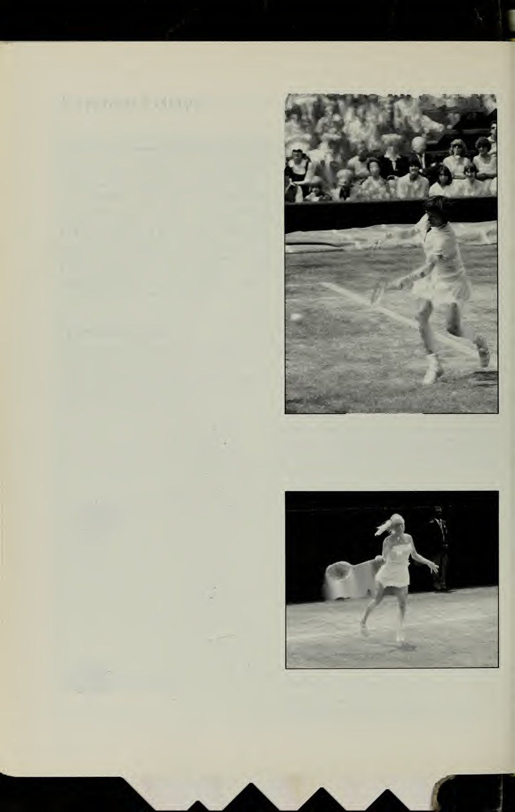
Hình 5.2: Vươn thẳng sải tay tiếp xúc bóng tại điểm cao nhất và sấp cổ tay (Pronation).
Figure 5.2: Full Arm Extension and Pronation at Serve Contact.
Bv đánh bóng mạnh mẽ với tốc độ nhanh hơn một chút và ít xoáy hơn nếu bạn thực hiện cú giao bóng thứ hai, cú giao bóng cắt lát có thể hiệu quả nhất quán với tỷ lệ quả bóng đầu tiên tìm đến sân giao bóng cao hơn, như John McEnroe và Evonne Cawlev đã chứng minh ở cấp độ cao nhất của plav.
Tập trung tung bóng chính xác để dây vợt di chuyển theo đường cong xuyên qua vùng đánh.
Giống như với cú giao bóng xoáy lên, bạn nên sử dụng cách cầm vợt kiểu Continental (xem tr.39).
Cú đánh Thay đổi thế đứng giao bóng từ thế đứng giao bóng cơ bản ở mức độ nhẹ, như minh họa ngược lại, bv di chuyển chân sau của bạn về phía sau một đoạn so với đường ngắm của bạn.
Bóng phải được ném sang bên phải vai trước của bạn và không xa về phía trước như trong lần giao bóng cơ bản đầu tiên.
Đường của đường vợt đi qua khu vực đánh phải từ phải sang trái.
Khi bạn tấn công từ vị trí ném, cổ tay của bạn hướng về phía trước khiến vợt đi gần như sát mép, đánh vào quả bóng ngay dưới tâm ở phía bên phải của nó.
Sau khi tiếp xúc, vợt tiếp tục ra ngoài xung quanh quả bóng trước khi nó đi theo chân trái qua.
1 Tung bóng về phía trước và sang phải một chút.
2. Xoay vai đánh của bạn sang một bên và đệm trọng lượng của bạn lên đầu gối phía trước.
Thực hiện theo Cú giao bóng cắt kết thúc với vợt qua bên trái của bạn tương tự như cú giao bóng cơ bản đầu tiên.
3 Giữ vợt cao bằng khuỷu tay khi đầu vợt rơi sâu vào vị trí ném.
4 Trọng lượng được chuyển về phía trước và lên trên khi người chơi duỗi thẳng đầu vợt và ném đầu vợt hướng vào quả bóng.
Thay đổi sự chuẩn bị của bạn Việc chuẩn bị cho một cú giao bóng cắt lát, được hiển thị trong hình bên dưới, chỉ khác một chút so với chuẩn bị cho một cú giao bóng phẳng, cơ bản.
Sơ đồ, bên phải, làm rõ sự khác biệt.
Nhìn vào sơ đồ vị trí bàn chân, bên dưới bên phải, và bạn sẽ thấy trong một cú giao bóng cắt, bạn nên di chuyển chân sau của mình về phía sau một chút so với tư thế giao bóng cơ bản, sau đó đặt quả bóng lên khoảng 6 inch ở bên phải vai trước của bạn.
O O lát cắt cơ bản Cải thiện cú đánh của bạn Để đạt được sự căn chỉnh chính xác trước khi đánh bóng cho một cú giao bóng cắt, bạn phải xoay vai nhiều hơn đối với một cú giao bóng cơ bản, phẳng khi vào vị trí ném, nhưng không nhiều như đối với cú giao bóng xoáy lên.
Có cảm giác vuốt dây mạnh lên, ngang và xung quanh phía bên phải của quả bóng.
Khi đánh bạn phải xoay mặt vợt hơi lệch khỏi mép vợt nếu không bạn sẽ đánh bóng bằng khung vợt.
Biểu đồ bên phải thể hiện góc của vợt lúc đánh đối với một cú giao bóng cắt so với góc của một cú giao bóng phẳng, cơ bản.
Đánh để cắt Để áp dụng xoáy ngang và một chút topspm vào quả bóng để giao bóng, bạn phải đánh lên và xung quanh bên ngoài quả bóng.
Luyện tập Thực hiện theo phương pháp luyện tập tương tự như đối với các cú giao bóng khác, trước tiên hãy thử toàn bộ cú đánh, sau đó tập trung vào các thành phần của cú đánh.
Hãy nhớ rằng mỗi phần mà bạn tách ra để luyện tập có ý thức phải được xử lý lại như một phần của toàn bộ cú đánh một lần nữa trước khi chuyển sang phần tiếp theo.
Để phát triển tính chính xác trong trận đấu hiệu quả, hãy ra sân với rổ bóng và thử thực hành được trình bày bên dưới. Khi một quả bóng được giao vào phần sân giao bóng bên phải cho đối thủ thuận tay phải, cú đánh thuận tay và bẻ bóng sẽ đưa anh ta ra ngoài đường biên đôi để thực hiện cú trả giao bóng, và bằng cách giao bóng theo đường cắt ở giữa sân, quả bóng có thể được tạo ra để xoáy mạnh vào cơ thể người nhận.
Đánh dấu một ô ở góc thuận tay và góc trái tay của sân giao bóng và đặt mục tiêu tại bốn điểm hiển thị bên dưới, nơi bóng sẽ nảy lần thứ hai.
Giao bóng vào từng sân, cho cả hai bên, nhằm mục đích đánh trúng mục tiêu thứ nhất và thứ hai với mỗi lần giao bóng.
SLICESERVICE Sử dụng cú giao bóng lát của bạn Sơ đồ sân bên dưới hiển thị lát cắt cho cú giao bóng thuận tay và trái tay ở cả hai sân giao bóng phải và trái.
Đối với đối thủ thuận tay phải, cú giao bóng lát có thể được thực hiện rất rộng về phía thuận tay trong phần giao bóng bên phải, như minh họa.
Nếu chiến lược trận đấu của bạn là để giành chiến thắng bằng cách kiểm tra khả năng di chuyển và sức chịu đựng của đối thủ thì chiến thuật này rất hữu ích, vì người nhận bóng sẽ phải di chuyển rất nhanh để lấy lại vị trí tán tỉnh hiệu quả sau khi thực hiện một pha trả giao khó khăn.
Nhắm vào tay trái trong cùng một phần sân, bóng sẽ bay vào thân của đối thủ.
Chiến thuật này rất hữu ích để buộc mắc lỗi, đặc biệt là khi kết hợp với các cú giao bóng xoáy lên phẳng cho cùng một bên cánh.
Sân bên phải Sân bên trái John McEnroe duỗi thẳng chân một cách mạnh mẽ khi anh ấy bắt đầu ném đầu vợt của mình lên để đánh ra ngoài và làm tròn quả bóng.
Cuộc tấn công của anh ta sẽ áp dụng một lát cắt mạnh mẽ, mạnh mẽ mà anh ta nổi tiếng.
Sự tập trung của McEnroe vào quả bóng sẽ không làm cho vợt của anh ấy chùn bước khi di chuyển qua khu vực đánh bóng.
Vị trí các đường bên là đặc trưng của tất cả các dịch vụ cắt sợi ở giai đoạn phân phối.
Dịch vụ đảo ngược Các cú giao bóng ngược giờ đây đôi khi chỉ được giới thiệu bởi những người chơi hàng đầu trong các trận đấu triển lãm.
Cú giao bóng xoáy lên ngược mang lại sự kết hợp của cú giao bóng xoáy lên và xoáy ngang đối nghịch với cú giao bóng xoáy lên (xem trang 104).
Cú giao bóng ngược mang xoáy ngang đối diện so với cú giao bóng cắt chính thống (xem trang 108) để bóng rời khỏi vợt của người giao bóng thuận tay phải quay ngược chiều kim đồng hồ.
Sử dụng cách cầm vợt thuận tay và trái tay kiểu Tây tương ứng.
Cách cầm vợt thuận tay của phương TâyUTheunorthodoxWestern fore- i !
Đồng thời vung vợt của bạn xuống qua phía bên phải của bạn với mặt đánh của dây hướng xuống dưới.
Xoay cổ tay đánh của bạn, chải mạnh đầu vợt lên trên và ngang qua mặt sau của quả bóng.
Kết thúc bằng cú đánh mặt hướng về phía trước.
Định vị bàn chân của bạn Cú giao bóng xoáy lên ngược bị ngắt sau khi nảy theo hướng ngược lại với cú giao bóng xoáy lên thông thường (xem trang 104).
Với tư cách là người thuận tay phải, bạn có thể sử dụng nó để tái hiện cú giao bóng xoáy trên của tay trái từ sân bên trái.
Hãy bắt đầu chuẩn bị bằng cách áp dụng tư thế bên dưới.
Cú giao bóng ngược Cú giao bóng ngược, được hiển thị bên phải, có hình dạng giao bóng ném thông thường.
Khi bạn ném bóng, hãy đưa vợt vào vị trí ném giao bóng bằng cách sử dụng hành động viết tắt được sử dụng cho cú đập bóng (xem trang 161) và chuyển trọng lượng của bạn sang chân trái.
Ném đầu vợt lên gần đến mép để cắt xung quanh mép trong của quả bóng chứ không phải mép ngoài của nó.
Gặp bóng ở phía trước cơ thể và thực hiện theo để kết thúc qua bên phải của bạn một lần nữa khi chân sau của bạn vung qua.
Định vị bàn chân của bạn Cách sử dụng tốt nhất cú giao bóng ngược cho người ném bóng thuận tay phải là từ sân bên trái đến trái tay của người nhận thuận tay phải.
Bắt đầu bằng tư thế đứng như minh họa bên dưới, với cả hai ngón chân hướng về phía vạch cuối sân (baseline).
bị bệnh
Dịch vụ nách Dịch vụ nách thường không có chỗ ở cấp độ cao hơn, nhưng ở cấp độ thấp hơn, có một số lượng đáng ngạc nhiên các dịch vụ nách được cung cấp vì nhiều lý do.
Giao bóng dưới cánh tay là một phương pháp hiệu quả dành cho những người mới bắt đầu muốn bắt đầu chơi và tận hưởng trò chơi trong khi họ vẫn đang học cách giao bóng qua đầu.
Đối với người chơi bị thương ở vai hoặc một số khuyết tật khác, giao bóng Cơ bản dưới cánh tay Tung bóng sang bên phải, ngang tầm đầu, khi bạn đưa vợt về phía sau ở độ cao ngang eo với trọng lượng của bạn ở trên bàn chân sau.
Chuyển trọng lượng của bạn lên bàn chân trước khi bạn vung vợt theo hướng thẳng qua quả bóng, gặp nó ở ngang hông đối diện với hông dẫn đầu của bạn.
Thực hiện theo cách bạn thực hiện cú đánh thuận tay cơ bản, giữ cho cổ tay của bạn vững chắc.
nách có lẽ là cách duy nhất để tham gia.
Khi cắt dưới, được hiển thị bên dưới bên phải, quả bóng có thể được tạo ra để lệch mạnh sang bên trái của người nhận và ở mức thấp sau khi nảy.
Sử dụng chuẩn bị cú công bóng thuận tay cơ bản (xem trang 46) và tư thế sang ngang tương tự, như minh họa bên dưới.
Giao bóng cắt nách Nếu bạn nghiêm túc về việc sử dụng giao bóng nách trong trò chơi của mình, biến thể cắt, được hiển thị bên dưới, sẽ có tác động nhiều hơn đến việc tính thời gian của đối thủ.
Bóng sẽ lệch mạnh từ trái sang phải thông qua xoáy ngang được áp dụng bằng cách cắt mặt vợt ngang và vào trong phía sau của quả bóng.
Đưa vợt về phía sau cao hơn so với giao bóng cơ bản ở nách, với mặt vợt hơi chếch về phía sau (cạnh dưới dẫn trước).
Xoay mạnh xuống theo chiều ngang và theo đường bay của bóng và đi dọc theo cơ thể, giữ cho hành động của cổ tay và mặt vợt của bạn được kiểm soát hoàn toàn khi bạn thực hiện xoáy xuống và xoáy ngang.
Đặt bóng Khi bạn đặt bóng cho một cú giao bóng dưới cánh tay, hãy đảm bảo rằng bạn không để bóng nảy lên trước khi đánh nó vì đây sẽ là một lỗi theo quy tắc bảy (xem trang 2).
276).
Đơn giản chỉ cần để quả bóng rơi từ tay không chơi của bạn chạm vào vợt.
Định vị bàn chân của bạn Đối với người phát bóng ở nách cơ bản, chỉ cần đặt mình có chiều rộng bằng một quả bóng phía sau đường biên trong tư thế đánh thuận tay sang một bên.
Đối với phiên bản cắt dưới, di chuyển chân trước của bạn về phía sau một chút, như minh họa bên phải, để bạn vuông vắn hơn một chút.
Cú vô lê là một cú đánh ngắn, có cú đấm, được thực hiện với quả bóng trước khi nó nảy về phía lưới của bạn và thường là trước khi nó rơi xuống dưới độ cao của lưới.
Động tác đấm cơ bản của cú vô lê được trình bày ở trang 33. Chuyển động ngắn, sắc nét, không phức tạp này tạo thành nền tảng của tất cả các cú vô lê, cả thuận tay và trái tay.
Chức năng của cú vô lê là giúp đối thủ của bạn có ít thời gian nhất có thể để thực hiện cú đánh tiếp theo, và với suy nghĩ này, nhiều cầu thủ đã mắc sai lầm khi cố gắng đánh bóng mạnh nhất có thể.
Khi bạn di chuyển lên sân để thực hiện cú vô lê, chắc chắn không có đủ thời gian để cố gắng đánh bóng thật mạnh.
Sự lựa chọn cách cầm vợt của bạn sẽ phụ thuộc vào giai đoạn bạn đang ở.
Nếu bạn là người mới bắt đầu, hãy sử dụng cách cầm vợt chạm đất thông thường của bạn.
Cách cầm vợt thuận tay và trái tay kiểu phương Đông sẽ đặc biệt hữu ích cho việc kiểm soát vợt vì độ cứng của cổ tay mà chúng tạo ra một cách tự nhiên.
Tuy nhiên, tốc độ trao đổi trong khu vực lưới có thể nhanh đến mức bạn phải chuyển sang cú vô-lê một tay khi cải thiện tiêu chuẩn của mình.
Đơn giản là sẽ không có thời gian để thay đổi tay cầm.
Cách cầm vợt để sử dụng là kiểu Continental, như minh họa bên phải, cùng kiểu cầm Giữ cho mặt của bạn bám sát vào quả bóng cần thiết để giao bóng.
Sử dụng cùng một cách cầm để giao bóng và chuyền bóng sẽ đơn giản hóa chiến lược giao bóng và chuyền bóng của bạn (xem trang 204-207).
Một phần thiết yếu của cú vô-lê là động tác xoay vai, minh họa bên phải.
Nếu có thể, hãy kết hợp động tác này với việc bước về phía trước và ngang bằng bàn chân trước để dồn toàn bộ trọng lượng vào sau cú vô lê của bạn. Khi không có thời gian cho động tác bằng chân, hãy xoay người từ hông sao cho vai của bạn xoay, đưa nửa trên của cơ thể sang một bên vào lưới.
Các cú vô lê khác, chẳng hạn như cú truyền động, dừng, thả và vô lê mềm, được mô tả ở các trang sau.
Tay cầm Continental Tay cầm Continental (xem trang 39) đặc biệt thích hợp để đánh cú vô-lê.
Các ngón tay dang rộng lên và phía sau tay cầm, tạo thành một tay cầm nhạy cảm giúp bạn kiểm soát mặt vợt và cảm nhận bóng một cách linh hoạt.
Chuẩn bị thuận tay Vị trí sẵn sàng cho cú vô lê Chuẩn bị trái tay Xoay hông sao cho vai của bạn thẳng hàng với chuyển động xoay vai để đảm bảo rằng bạn có bóng.
Vị trí trái tay đòi hỏi phải có đủ thời gian để chuẩn bị cho cú đánh này.
Phát triển một phong cách: dịch vụ Dịch vụ cơ bản hoặc phẳng có thể bắt đầu mỗi điểm và cũng có thể kết thúc tại cùng một thời điểm.
Nó là vũ khí chủ chốt trong đánh đơn.
Các máy chủ lớn thường phụ thuộc quá nhiều vào cú đánh này và khi thời gian của họ bị lệch, phần còn lại của trò chơi sẽ trở nên dễ bị tổn thương.
Pancho Gonzales là một cầu thủ giao bóng đầu tiên xuất sắc, người giao bóng với tốc độ 3/4 để đảm bảo rằng hầu hết các cú giao bóng đầu tiên của anh ta đều trúng sân.
Cú giao bóng đầu tiên tốt được xây dựng dựa trên việc bạn dành thời gian, phát triển động tác ném sâu và khuỷu tay đánh cao để độ duỗi tay vợt tối đa và tốc độ đầu vợt có thể được kết hợp trong việc căn thời gian đánh bóng một cách hoàn hảo.
Đặc điểm cá nhân thường phát triển trong phong cách giao bóng do áp lực của trận đấu.
Vị trí thấp trong cú giao bóng siêu nhanh của Roscoe Tanner là một ví dụ.
Victor Pecci ở đây thực hiện một trong những cú giao bóng đầu tiên đầy uy lực của anh ấy, trọng lượng cơ thể được giữ thăng bằng về phía trước, với cả hai đầu gối hơi cong.
Bàn chân của anh ấy tạo thành một bệ đánh tuyệt vời khi vợt của anh ấy được đưa vào sau vai, trước khi rơi vào tư thế ném sâu hơn.
Pecci sử dụng kiểu cầm Continental.
BASICSERVICE KathyJordan lần giao bóng đầu tiên này một cách hoàn hảo.
Cô ấy đón bóng hết sức, nghiêng người để tấn công nó bằng toàn bộ trọng lượng cơ thể sau cú đánh.
•» 4h f~\ /A — U.'* RoscoeTanner sắp lao vào quả bóng bằng tất cả sức mạnh nổi tiếng của mình.
Xote chiều cao của cú đánh khuỷu tay của mình.
Giống như nhiều cầu thủ hàng đầu, Tanner bay lên không trung khi anh ấy đẩy bóng.
Maria Bueno, đối diện, nhón chân khi thực hiện cú giao bóng đầu tiên với sự duyên dáng và sức mạnh.
Cô ấy đang nghiêng người rất tốt và khi căng hết cỡ, tay cầm Continental đã được sửa đổi của cô ấy sẽ hỗ trợ tốc độ đầu vợt.
Vị trí ném Khi Tanner thả đầu vợt của mình sâu hơn vào vị trí ném, khuỷu tay của cánh tay vợt nâng lên để cung cấp đòn bẩy tối đa khi lực đẩy hướng lên bắt đầu.
Điều này tạo ra tốc độ đầu vợt cực lớn.
BjornBorg thể hiện kỹ thuật giao bóng mẫu: trọng lượng của anh ấy di chuyển về phía trước để anh ấy có thể kết hợp lực đẩy lên của chân với cú ném đầu vợt.
Topspinservice Thứ hai giao bóng phải được đặt sâu và chính xác và cho phép máy chủ giành được thế chủ động.
Dịch vụ topspin phù hợp nhất với nhiệm vụ này.
Nó cũng có thể dễ dàng được tăng tốc để đảm bảo vai trò của người giao bóng đầu tiên trong trò chơi đánh bóng đôi hiện đại là chơi giao bóng và vô lê.
Với việc sử dụng chân, đầu gối, vai và cổ tay đúng cách, bạn có thể loại bỏ căng thẳng ở lưng.
Alice Marble, Althea Gibson và Billie Jean King đều đã sử dụng dịch vụ này.
Ngày nay Hana Mandlikova dẫn đầu một số phụ nữ trẻ có trình độ cao sử dụng các cú giao bóng xoáy lên một cách hiệu quả.
Vitas Gerulaitis thể hiện kỹ thuật giao bóng xoáy lên hoàn hảo.
Giữ thăng bằng bằng bi của cả hai chân, anh ta tấn công hướng lên trên, với lưng không cong quá mức.
Từ vị trí nghiêng này, các dây vợt sẽ lướt qua và đi qua mặt sau của quả bóng từ phía dưới bên trái lên phía trên bên phải, để kết hợp xoáy lên và xoáy ngang.
PHONG CÁCH DỊCH VỤ John Lloyd thực hiện một cú dứt điểm điển hình cho một cú giao bóng xoáy lên.
Bàn chân sau của anh ấy vung về phía trước khi vợt của anh ấy đi theo bên phải của anh ấy.
Lloyd sử dụng cách cầm vợt trái tay gần như kiểu Continental để giao bóng.
Anh ta đứng nghiêng người khi kết thúc cú đánh để tránh kéo bóng vào lưới.
PeterFleming, bên phải, đang chuẩn bị cho một cú giao bóng xoáy lên theo phong cách tương tự như cú giao Gerulaitis.
Chiều cao và tầm với của anh được hỗ trợ bởi kỹ thuật âm thanh.
Với quả bóng rơi trước vai trái, đây sẽ là một cú giao bóng xoáy lên đặc biệt tích cực.
Các đường đi ngang của bóng Gerulaitis và Lloydboth cho thấy tầm quan trọng của việc duy trì đường của vai theo hướng bay dự kiến của bóng trong giao bóng xoáy lên.
Các mũi tên chỉ hướng bóng sẽ đi, do đó bạn có thể dễ dàng đánh giá cao hơn vị trí so với sân bóng.
Theo dõi của Lloyd đến điểm nổi bật bên phải cho thấy vị trí nghiêng được duy trì trong thời gian đầu theo dõi, do đó góc lệch mong muốn được duy trì.
Vitas Viêm Gerula John Lloyd
TOPSPINSERVICE HieNastase hoàn thành một cú giao bóng xoáy lên và bắt đầu vung chân qua đường cuối sân.
Cú sút của Continentalgnp tiến về phía lưới bằng cú giao bóng và vô lê thực sự, đồng thời phong cách bắt bóng bằng cổ tay của nó mang lại phong cách đá và xoay người.
Vợt của anh ấy di chuyển ra ngoài về phía bên phải khi lưng anh ấy tiến lên rất đáng giá.
SERVICESTYLE Sliceservice John McEnroe đã thiết lập lại dịch vụ slice như một mối đe dọa lớn.
Nó có sức hấp dẫn đặc biệt trong trò chơi hiện đại, bởi vì nó có thể ép đối thủ ra ngoài sân khi nhận bóng ở phần sân bên phải (hoặc ở phần sân bên trái bởi người giao bóng thuận tay trái).
Điều này mở ra góc trái tay của sân để có thể thực hiện cú đánh tấn công vào khu vực đó.
Đồng thời, cầu thủ đang hồi phục luôn có nguy cơ bị mắc sai lầm.
Cú giao bóng xoáy lên phải phát bóng để có hiệu quả, và những phụ nữ cảm thấy khó khăn này sẽ khôn ngoan nếu hoàn thiện cú giao bóng có độ nảy thấp hơn.
John McEnroe phóng mình lên không trung để thực hiện cú giao bóng cắt lát mạnh mẽ của mình.
Quan sát tư thế ném sâu cách xa cơ thể và khuỷu tay đánh cao.
Động lực vượt trội mà anh ta có được từ việc xây dựng động tác xoay của mình mang lại một hành động bùng nổ xuyên qua vùng đánh.
SLICESERVICE Virginia Ruzici,phải, vừa chuẩn bị đánh bóng.
Có vẻ như cô ấy đã đến quá sớm, nhưng cô ấy đang giao bóng ở trung tâm từ phần sân bên trái.
Cô ấy sử dụng kiểu cầm vợt Continental.
Bay trên không ở độ cao cao hơn, nhưng đầu gối có thể bị chói.
Evonne Cawley thực hiện một cú giao bóng cắt từ phần sân bên phải.
Bàn chân trái của cô ấy tiếp xúc với mặt đất và bàn chân sau của cô ấy vung qua.
Cô ấy sẽ có thể phục hồi nhanh chóng sau vạch cuối sân (baseline) hoặc sử dụng điều này như bước đầu tiên trong quá trình chạy về phía trước.
> Jl v 1(W i \ L ; j ^B Phong cách chính thống Cú cắt thông thường giao bóng bằng chân trước, bám trên mặt đất trong suốt quá trình giao bóng, được đánh dấu bởi Evonne Cawley. AQuả bóng nằm ở "điểm ngọt", ngay dưới tâm của dây. Tay vợt đã duỗi hết cỡ. B Người chơi hiện đang nhìn về phía trước, mặc dù cô ấy rõ ràng đang theo dõi quả bóng lên đến thời điểm va chạm. C Tay trái đã bỏ ra
để giữ thăng bằng khi vai phải và hông đi qua để tăng thêm lực cho cú giao bóng D Bàn chân sau vung lên phía trên đường biên ngang và sẽ đi xuống bên trong sân trước khi vợt kết thúc qua phía bên trái.
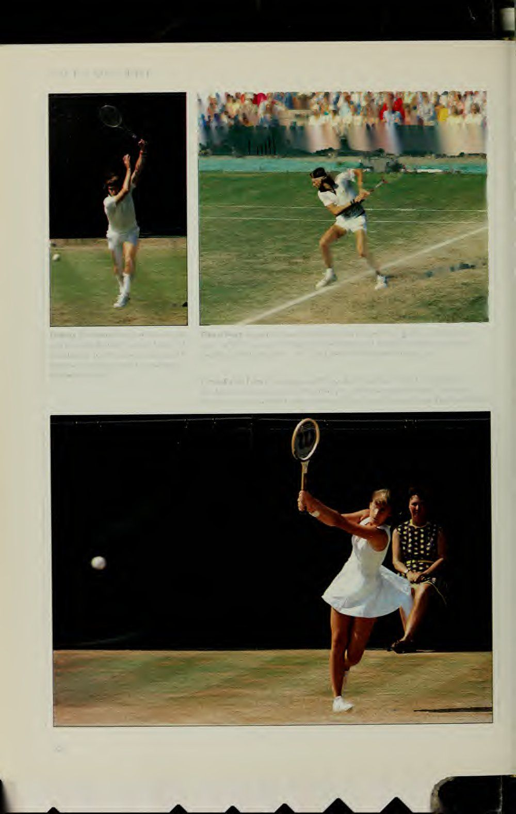
Hình 5.3: Cơ chế tiếp xúc 3 biến thể giao bóng: Giao bóng phẳng (Flat), Cắt xoáy (Slice) và Cú nảy kick topspin.
Figure 5.3: Ball Impact Mechanics for Flat, Slice, and Kick Serves.
Phần 6
Phần 5: Net Mastery: Cú vô lê thuận tay và trái tay
Part 5: Net Mastery: Forehand & Backhand Volleys 77 đoạn phân tích chuyên sâu
Cú vô lê thuận tay Cú vô lê thuận tay cơ bản được chơi với vợt được đặt gần như phẳng với bóng chỉ với một chút kiểm soát xoáy xuống. Với tất cả các cú vô lê, hành động cơ bản của nó bao gồm đấm đầu vợt vào bóng, động tác đấm hơi hướng xuống nhưng rất xuyên qua phía sau quả bóng.
Trình tự của cú vô lê thuận tay cơ bản này được trình bày bên dưới, từ khâu chuẩn bị cho đến thực hiện tiếp theo.
Lúc đầu hãy sử dụng cách cầm vợt thuận tay kiểu Eastern (xem tr.38).
Mặc dù điều này sẽ liên quan đến việc thay đổi cách cầm vợt khi thực hiện cú vô lê ở phía bên trái tay, nhưng nó sẽ mang lại cho bạn lợi thế khi sử dụng cách cầm vợt quen thuộc trong khi học một cú đánh mới.
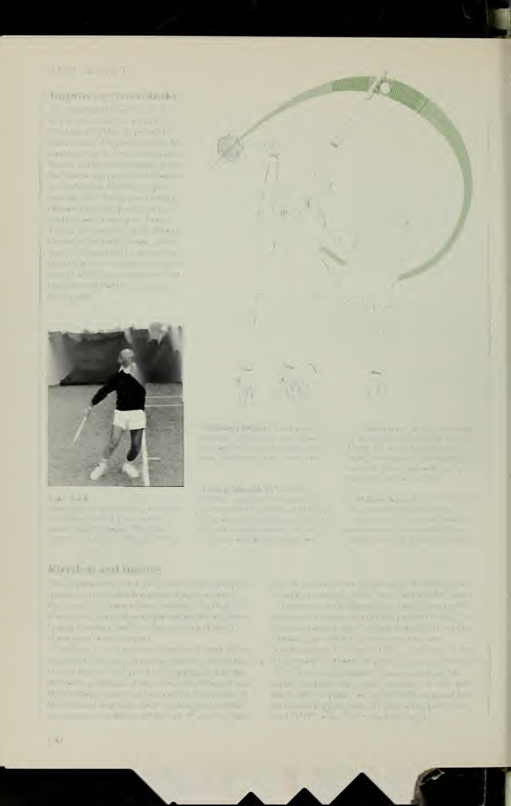
Hình 6.1: Kỹ thuật đấm bóng vô-lê (Punch Volley) gọn gàng — Khóa cổ tay và không mở đà thừa.
Figure 6.1: The Compact Punch Volley: Firm Wrist with Minimal Backswing.
Khi thực hiện cú đánh Chuẩn bị cho cú đánhbvxoay bằng chân phải cho đến khi vợt của bạn được đưa về ngang bằng hoặc lùi về phía sau một chút với vai đánh của bạn và trọng lượng của bạn dồn quá nặng vào đầu gối phía sau. Khi đấm đầu vợt về phía trước, đón bóng bằng toàn bộ mặt dây và đánh thẳng, bạn sẽ có được sự tự tin và kinh nghiệm, tuy nhiên, bạn nên sử dụng cách cầm vợt Continental như mô tả ở trang trước.
Cách cầm vợt dạng Continental sẽ giúp bạn tăng "cảm giác" với bóng, phù hợp nhất cho cú vô lê thuận tay có kiểm soát.
Sau khi nắm vững kỹ thuật cầm vợt và xoay vai, bạn sẽ phải tập trung vào những điểm khác, chẳng hạn như động tác bằng chân, động tác thu bóng và vùng đánh.
Khi bạn đã học được cú vô lê thuận tay cơ bản, bạn có thể điều chỉnh nó cho phù hợp với các tình huống khác nhau như trong các cú vô lê cao, thấp và góc, được mô tả ở trang 117. thông qua mặt sau của quả bóng.
Đường đi hơi hướng xuống của cú đánh về phía trước sẽ tạo ra độ xoáy nhẹ cho cú vô lê của bạn, mang lại khả năng kiểm soát cao hơn.
Giữ khuỷu tay đang chơi của bạn cách xa cơ thể bạn, cú đấm của bạn, giữ đầu vợt của bạn hướng lên trên.
Bàn chân sau của bạn phải hướng về phía trước khi bạn hoàn thành cú đánh.
l 1 Chuyển toàn bộ trọng lượng của bạn sang chân sau và hoàn thành động tác lùi lại một đoạn ngắn.
2 Bước bằng chân trái, chuyển trọng lượng của bạn.
Giữ cổ tay chắc chắn, đánh bóng bằng đầu vợt.
3. Đi theo một khoảng cách ngắn theo hướng bay của quả bóng.
^ Bóng thẳng về phía bạn xoay chân trái, dùng chân phải lùi về phía sau để sang ngang trước khi nghiêng người vào cú đánh để đánh bóng.
Cải thiện cú đánh của bạn Hiệu quả của cú vô lê thuận tay của bạn sẽ được cải thiện bằng cách tập trung vào một số yếu tố được chỉ ra đúng.
Việc thu lại là một phần quan trọng trong việc chuẩn bị vợt cho cú vô lê.
Bạn không nên đưa vợt về phía sau quá nhiều so với tầm với vai đánh của bạn.
Bằng cách mang vợt ở vị trí sẵn sàng và nghĩ đến việc chuẩn bị như chỉ cần xoay sang một bên, bạn sẽ có thể tiến về phía trước để đánh bóng một cách nhất quán.
Hãy sử dụng các mẹo trong phần luyện tập (tr. 117) để tận dụng tối đa khoảng thời gian ít ỏi mà bạn chuẩn bị thực hiện cú vô lê.
Khi thực hiện cú đánh, đưa toàn bộ mặt dây vào bóng và đấm đầu vợt về phía trước và hơi hướng xuống phía sau quả bóng ở khoảng giữa hông và chiều cao vai.
Giữ cổ tay của bạn thật chắc chắn và luôn cố gắng giữ đầu vợt của bạn cao hơn mức cổ tay của bạn.
Đầu vợt của bạn phải ở cùng bóng trong một khoảng cách ngắn sau khi va chạm.
Mặc dù thời gian theo dõi rất ngắn nhưng nó cần thiết để kiểm soát.
A Take-back Không có vòng lặp.
Việc trả lại cú vô lê nên càng ngắn càng tốt để bạn có thời gian tối đa để định vị bản thân và thực hiện cú đánh.
B Vùng đánh Điều này nên bắt đầu ở phía trước hông sau của bạn và kết thúc ngay trước hông chính của bạn.
Siết chặt tay cầm của bạn để kiểm soát tối đa mặt vợt.
FOREHANDVOLLEY Xây dựng cú vô lê thuận tay vào trò chơi của bạn Khi bạn đã thành thạo cú vô lê thuận tay, hãy học cách điều chỉnh nó cho phù hợp với các kiểu vô lê khác nhau mà bạn có thể phải thực hiện.
Ba điều quan trọng nhất - cao, thấp và góc cạnh - được mô tả dưới đây.
Khi chơi cú vô-lê cao, cú vô-lê cao điều quan trọng là phải nghiêng người về phía bóng;
ngược lại, bạn có thể kéo bóng xuống lưới hoặc đánh bóng ra ngoài đường biên.
Những cú vô lê góc phải được đánh tốt ở phía trước cơ thể bạn với mép dưới của vợt hơi hướng về phía trước, áp dụng xoáy ngang và xoáy dưới để kiểm soát tốt hơn. Khi trả lại những cú vô lê góc cạnh dọc theo đường biên, hãy chơi bóng sau đó với cổ tay khóa sau khi bạn đấm xuống, xuyên qua và ngang mặt sau của quả bóng.
1 Rẽ sang phải càng sớm càng tốt.
Đưa vợt xa hơn một chút và cao hơn so với cú đánh cơ bản.
2 Bước vào bằng chân trái, đấm đầu vợt xuống và xuyên qua bóng.
Giữ cổ tay của bạn chắc chắn và đầu vợt hướng lên trên.
3 Thực hiện theo hướng đầu vợt theo hướng đánh.
Cú vô-lê thấp 1 Rẽ phải, uốn cong đầu gối của bạn để hạ bóng thấp.
2 Bước vào bằng chân trái.
Đấm dưới và xuyên qua quả bóng, sử dụng xoáy xuống để làm cho quả bóng bay lên khỏi dây mạnh hơn.
3 Đi theo hướng lên trên theo hướng bắn.
Giữ đầu cúi xuống và đầu gối cong để bóng ở vị trí thấp.
Cú vô lê góc cạnh -c z r- A43 1 i 1 Rẽ phải, đưa vợt về phía sau một đoạn ngắn giữa chiều cao thắt lưng và vai.
Giữ cổ tay chắc chắn và đầu vợt hướng lên trên.
2 Với mép dưới của vợt hơi hướng về phía trước, đấm thật mạnh đầu vợt về phía trước và xung quanh mặt ngoài của quả bóng, áp dụng xoáy ngang và xoáy xuống.
3 Cho phép vợt đi theo hướng đánh bóng, hướng này phải là hướng chéo bàn.
Luyện tập cú chuyền bóng thường xuyên của riêng bạn với bảng sau là một cách lý tưởng để phát triển động tác đấm bóng thuận tay của bạn.
Đứng cách tường khoảng 6 feet và tập xoay người, bước về phía trước và dùng vợt đập bóng vào tường.
(Lúc đầu, hãy thực hành cú sút bằng cách đứng sang một bên giữa các cú đánh.) Ở sát tường để hạn chế việc bạn phải lùi lại và cố gắng tung cú vô lê về phía đó một cách nhanh chóng, nhằm đạt được một loạt 20 cú đánh.
Sử dụng vòng tròn mục tiêu như minh họa trong hình bên dưới.
Sử dụng vòng tròn mục tiêu Chạy vào vòng tròn mục tiêu sẽ tăng cường sức mạnh cho cổ tay của bạn và phát triển khả năng kiểm soát cũng như độ chính xác.
Luyện tập với đối tác Chuẩn bị ở tư thế sẵn sàng, lưng dựa vào bảng sau.
Yêu cầu đối tác của bạn đứng cách khoảng 10 feet và ném bóng dưới cánh tay để thực hiện cú vô lê thuận tay của bạn.
Việc rút lui của bạn sẽ tự động bị giới hạn bởi bức tường, điều này sẽ khuyến khích bạn tiến lên trong thời gian thích hợp.
Sau đó thực hành trên sân từ vị trí cú vô-lê tương ứng của bạn ở hai bên lưới.
Lần lượt đưa bóng cho nhau với tốc độ ngày càng tăng, tiến tới một cuộc tập hợp cú vô-lê.
Hãy nhấn mạnh vào phản ứng nhanh, động tác chân nhanh khi quay người và bước vào, và rút lui ở mức tối thiểu.
Hãy để tay không chơi của bạn rời khỏi vợt khi bạn xoay người và thực sự bước vào khi bạn đấm đầu vợt xuống và xuyên qua bóng.
Hạn chế việc lấy lại của bạn Thay phiên nhau cho bóng ăn.
Một rào cản đóng phía sau người thực hiện cú đánh sẽ khuyến khích việc rút lui có giới hạn.
FOREHAXDVOLLEY Sử dụng cú vô lê thuận tay của bạn Mục tiêu chính trong một trận đấu quần vợt là khiến đối thủ gặp bất lợi bằng cách đánh bóng càng xa tầm với càng tốt.
Cách dễ nhất để làm điều này là từ vị trí mạng, vì vậy hãy đạt được điều này bất cứ khi nào có thể.
Trên lưới, bạn có hai lựa chọn chính ở phía thuận tay: thực hiện cú vô lê của bạn dọc theo đường biên - càng sâu càng tốt - hoặc toplav cho phép cú sút chéo sân sâu đến đường cuối sân, hoặc tạo góc nhọn để chạm bóng ngang đường giao bóng của đối thủ.
Càng nhiều càng tốt, đừng cố gắng chơi những cú vollev thấp ở cuối đường biên vì bạn sẽ khó có được khoảng trống và độ sâu lưới hơn.
Cho dù bạn chọn phương án nào, hãy sử dụng cú đánh tiếp cận cú vô-lê thuận tay tấn công của bạn hoặc một cú giao bóng xoáy để đạt hiệu quả tối đa (seepp.204-207).
Bạn phải ưu tiên kiểm soát tối đa để thực hiện cú vô lê trong trận đấu thành công (xem trang 204).
Trong khi vận động viên bắt bóng bằng tay kiểu phương Đông của anh ta có thể đánh những cú vô lê về phía thuận tay dễ dàng hơn so với vận động viên cầm vợt kiểu Continental, thì vận động viên chuyền bóng một tay tiên tiến có lợi thế là có nhiều thời gian hơn để kiểm soát cú thuận tay, đặc biệt là trong một cú đánh bóng khi không có thời gian để thay đổi cách cầm vợt.
Một đường chéo góc nhọn BĐường chéo sâu CDXuống đường ChrisEvertLloyd quan tâm đến một cú chuyền ngang thấp ở đây.Cánh tay chơi mở rộng kiểm soát đầu vợt một cách hoàn hảo khi cố gắng thực hiện một cú vô lê thuận tay được thực hiện tuyệt vời từ dưới tầm cổ tay khi cô ấy chạm bóng ở giữa góc lưới.
Cô ấy đang ở trên đồi: bàn chân trước của cô ấy dang ngang và mặt vợt.
Cú vô lê thuận tay Cú vô lê thuận tay, được hiển thị bên dưới, là một cú đánh mạnh mẽ và đạt hiệu quả cao nhất khi được chơi tích cực từ giữa sân.
Đúng như tên gọi của nó, nó là sự kết hợp giữa cú công bóng thuận tay và cú vô lê thuận tay, và chứa đựng các yếu tố của cả hai cú đánh.
Đặc điểm chính của cú vô lê truyền động giống với cú vô lê thông thường là nó có cú đánh ngắn hơn cú đánh chạm đất và bóng được đánh trúng trước khi bật về phía lưới của người bắt vô lê.
Tuy nhiên, ở các khía cạnh khác, nó giống với cú công bóng thuận tay hơn: bóng được đánh ở giữa độ cao ngang eo và vai bằng động tác vung vợt thay vì động tác đấm thường liên quan đến cú vô lê, việc thu vợt rộng hơn và vòng nhiều hơn.
Ngoài ra, không giống như cú vô lê cơ bản, nó đã bổ sung thêm khả năng kiểm soát xoáy lên (xem trang 42).
Mặc dù cú chuyền bóng có thể rất hiệu quả nhưng nó nên được sử dụng một cách tiết kiệm vì luôn có một số rủi ro liên quan đến việc sử dụng kỹ thuật tiếp đất khi thực hiện cú vô lê.
Cải thiện cú đánh Các yếu tố chính của cú đánh là cú giật bóng theo vòng và cánh vợt hướng lên trên.
Đặt bản thân sang một bên với quả bóng, và từ tư thế chuẩn bị vòng bóng nông, hãy vung qua mặt sau của quả bóng khi bạn chuyển trọng lượng cơ thể lên chân trước để tăng sức mạnh.
Nếu bạn ngả người về phía sau hoặc dừng chuyển động về phía trước, bóng sẽ bay qua đường cuối sân hoặc ra ngoài đường biên, vì vậy hãy tự tin tiến về phía trước.
Bóng được đánh ở giữa lưng cao ngang vai với toàn bộ mặt dây vợt tiếp xúc với lưng bóng.
Cú vung lên phía trước và xuyên qua quả bóng sẽ áp dụng xoáy lên và cú đánh của bạn sẽ kết thúc ở độ cao trên đầu.
A Chuẩn bị B Khu vực đánh CThực hiện theo thông qua việc sử dụng cú đánh bóng thuận tay của bạn Cú vô lê công bóng đòi hỏi rất nhiều sự luyện tập và kỹ năng.
Nó nên được sử dụng một cách tiết kiệm trong các trận đấu và chỉ sử dụng đúng loại bóng.
Lựa chọn thay thế tốt nhất của bạn, được hiển thị bên phải, là thực hiện cú đánh này sâu đến tâm và các góc của đường cuối sân, hoặc góc chéo sân.
Chọn những quả bóng cao, di chuyển chậm để thực hiện cú vô lê từ khu vực giữa sân, chơi chúng từ độ cao ngang vai.
Khi cú bắn được căn thời gian hoàn hảo, sức mạnh của nó sẽ có tác dụng làm mất tinh thần.
Nếu đối thủ của bạn có thể cố gắng thực hiện cú trả bóng bằng vollev, anh ta sẽ phải đối phó với một quả bóng chìm và xoay khỏi mặt vợt một cách vụng về khi anh ta đánh bóng.
Cú vô lê truyền động sâu B Cú vô lê chéo góc có góc cạnh
Những cú vô lê dừng và thả thuận tay Cả hai cú vô lê dừng và thả thuận tay đều là những cú chạm cơ bản, được thiết kế để thả bóng nhẹ nhàng qua lưới và khiến đối thủ của bạn bị mắc kẹt ở đường cuối sân.
Sự khác biệt chính giữa chúng là cú vô lê dừng được thực hiện với một quả bóng nhanh và cú vô lê thả từ một quả bóng chậm, và cú vô lê dừng lại có độ xoáy thấp hơn một chút.
Trong cú vô lê dừng, vợt bị rút ra một chút khi va chạm và đầu vợt đi xuống phía dưới quả bóng với mép dưới dẫn trước, do đó xoáy dưới mạnh được áp dụng cho bóng Cải thiện cú đánh Không có vợt thu lại khi chuẩn bị cho cú đánh;
đầu vợt của bạn phải hướng lên và thẳng hàng với quả bóng.
Bước về phía trước và ngang qua bằng chân trước, chuyển trọng lượng của bạn sớm nhất có thể và chặn đường bóng ở phía trước vai dẫn đầu của bạn bằng mặt vợt của bạn.
Đánh bóng bằng mép dưới của vợt dẫn đầu, sao cho dây đi xuống phía sau và hơi ở dưới quả bóng.
Nếu bạn đánh bóng quá cao và mất quá nhiều thời gian để đến đích thì có lẽ bạn đã nghiêng mặt vợt về phía sau quá nhiều;
nếu bóng liên tục rơi vào lưới, hãy thử mở mặt vợt ra nhiều hơn.
Sử dụng các cú đánh Các cú vô lê dừng và thả có thể là những cú đánh thắng thú vị.
Chơi chúng từ các vị trí chuyền bóng bình thường của bạn trong khu vực lưới, khi đối thủ của bạn bị mắc kẹt phía sau đường biên ngang của anh ta hoặc ở ngoài đường biên của anh ta và không có vị trí nào để tiếp cận các cú chạm của bạn.
Đánh chúng ở một góc nhỏ sang phải hoặc trái, đảm bảo rằng chúng không tiếp đất quá xa phần sân của đối thủ;
nếu không thì anh ta có thể đáp trả bằng một phát bắn trúng đích.
Sử dụng cú vô lê dừng để đánh trả những cú đánh dữ dội mà bạn chỉ có thể tiếp cận.
Chơi vào đúng thời điểm, khi bạn đang dẫn trước một điểm hoặc hai, việc dừng và thả cú vô-lê có thể gây mất tinh thần đối với đối thủ đang mệt mỏi.
trước khi nó được phát hành.
Sau đó, quả bóng bật lại đủ để đáp xuống lưới và sau đó do tác dụng của lực xoáy, nó nảy lên như một quả nặng chì.
Hầu như không có sự theo dõi nào của vợt.
Tuy nhiên, khi chơi cú vô-lê thả, vợt không cần phải rút ra khi tiếp xúc, dây sẽ trượt xuống phía sau và bên dưới quả bóng.
Bởi vì cú vô lê được thực hiện với một quả bóng chuyển động chậm nên việc theo dõi vợt phải dài hơn cú vô lê dừng để dẫn bóng.
A Khu vực đánh Trượt mặt vợt dưới quả bóng.
Để chặn một quả bóng nhanh, đừng làm theo.
Rút dây ra một chút, xoay mặt vợt xa hơn về phía dưới bóng để tăng khả năng kiểm soát xoáy xuống.
Tiếp theo Khi chơi một quả bóng chuyển động chậm, hãy kết thúc cú đánh với tốc độ rất ngắn và theo kịp tốc độ cao hơn.
¥ Dừng thuận tay hoặc thả cú vô-lê
Cú vô lê mềm thuận tay Cú vô lê mềm thuận tay là một cú đánh chạm được chia thành dạng rút gọn của cú thuận tay cơ bản (xem trang 46-51).
Đó là cú giật vợt ngắn hơn so với cú đánh chạm đất, nhưng được thực hiện với cú xoay từ thấp đến cao tương tự, áp dụng một cú xoáy lên nhẹ nhàng vào quả bóng để giúp nó lao qua lưới.
Nó thường được thực hiện bằng một quả bóng thấp, do đó, phải được giữ ở mức thấp so với chân đối phương, buộc anh ta phải đánh trả cao và dễ dàng xử lý, góc rộng.
Hạ thấp người bằng cách thu vợt ngắn khi bạn xoay người về phía bóng.
Bước vào, vung vợt lên nhẹ nhàng bên dưới quả bóng. Bạn phải nghiêng mặt vợt với mép dưới để đưa bóng qua lưới, và để góc của cú đánh về phía trước của bạn áp dụng xoáy lên.
Cú vô lê thuận tay đôi là cú vô lê thuận tay.
Việc thiếu khả năng tiếp cận mà tay cầm áp đặt có thể khiến việc phòng thủ trở nên khó khăn.
Nhược điểm của cú đánh dễ dàng bị loại bỏ nhất trong đấu đôi, như trường hợp của FrewMcMillan, người Nam Phi.
Kỹ thuật đánh hai tay phát huy tác dụng khi chơi những đường bóng ngắn, cao, đặc biệt khi tung những cú vô lê hung hãn từ giữa sân, vào những đường bóng buộc người chơi một tay phải phòng thủ.
Cách cầm vợt thuận tay hai tay Tay thuận của bạn nên được đặt ở trên cùng bằng cách sử dụng kiểu cầm vợt thuận tay kiểu Đông.
Tay hỗ trợ, ở cuối mông vợt, phải nằm giữa cách cầm vợt thuận tay kiểu Continental và kiểu Eastern (xem tr.39).
FrewMcMillan chuyền bóng mạnh giữa các đối thủ của anh ấy bằng cú thuận tay trong một pha trao đổi trên lưới.
Tốc độ bắn sẽ giành được điểm.
Cú vô lê trái tay Cú vô lê trái tay phải có tất cả các đặc tính tấn công của cú vô lê thuận tay.
Cú vô lê trái tay là một cú đánh đơn giản hơn cú vô lê thuận tay vì khi bạn hướng vào lưới, cánh tay đánh bóng của bạn đã ở sẵn ở phía trước.
Khả năng cầm nắm của bạn sẽ phụ thuộc vào khả năng của bạn.
Nếu bạn là người mới bắt đầu, hãy sử dụng hai cách cầm vợt, một cho thuận tay và cách cầm vợt trái tay kiểu phương Đông (xem trang 38) để thực hiện cú vô lê trái tay của bạn.
Nếu bạn đã tiến tới kỹ thuật chuyền bóng bằng một tay, hãy sử dụng cách cầm vợt kiểu Continental (xem trang 113).
Trình tự của cú vô lê trái tay được trình bày bên dưới, từ lúc chuẩn bị đến khi thực hiện.
Để phát triển kỹ thuật chuyền bóng trái tay hiệu quả, hãy tập trung vào sự chuẩn bị ngắn từ tư thế sẵn sàng thực hiện cú vô lê, xoay vai sao cho ít nhất từ thắt lưng trở lên, phía bạn hướng về phía bóng, chuyển trọng lượng tốt bằng cách bước về phía trước và ngang qua bàn chân phía trước và tiếp xúc bóng phía trước vai chơi.
Kết thúc cú vô lê trái tay của bạn bằng một cú đánh ngắn theo hướng đánh, giữ đầu vợt cao hơn cổ tay.
Bạn có thể áp dụng kỹ thuật này để thực hiện các cú vô lê cao, thấp và góc cạnh, cũng như các cú chuyền bóng, dừng và thả.
Thực hiện cú đánh Từ vị trí sẵn sàng, với đầu gối của bạn cong hơn so với khi thực hiện các cú đánh trên mặt đất, và vợt của bạn được giữ thẳng và hướng về phía trước, bắt đầu quay sang trái ngay khi bạn thấy bóng đang đến gần trái tay của bạn.
Đưa vợt của bạn trở lại cao hơn độ cao đánh một chút.
Bước vào bằng chân phải, đấm đầu vợt về phía trước sao cho toàn bộ mặt vợt tiếp xúc với bóng.
Siết chặt tay cầm của bạn và khóa cổ tay của bạn khi vợt của bạn đấm xuyên qua quả bóng.
Cánh tay của bạn phải được mở rộng khi bắn xong.
Mặt vợt nên hơi góc cạnh với mép dưới.
1 Đi sang bên bóng và đưa vợt về ngang bằng vai trái của bạn.
Giữ cổ tay của bạn vững chắc.
2 Bước vào trong và ngang bằng chân phải và đấm vợt vào bóng sao cho toàn bộ mặt dây tiếp xúc với bóng.
3. Đi theo một khoảng cách ngắn theo hướng đánh, giữ cho đầu vợt của bạn ổn định.
Cải thiện cú đánh của bạn Cũng như với cú vô lê thuận tay, yếu tố quan trọng nhất của cú vô lê trái tay là sự chuẩn bị cho cú đánh và vùng đánh.
Vợt của bạn không nên được đưa về phía sau quá vai sau của bạn khi chuẩn bị cho cú đánh;
khuỷu tay của bạn phải uốn cong và đầu vợt của bạn cao hơn mức cổ tay. Khi thực hiện cú đánh, hãy đấm mạnh xuống và xuyên qua mặt sau của quả bóng.
Siết chặt tay cầm, giữ chắc cổ tay và mặt vợt ổn định khi bạn di chuyển qua bóng bắt đầu từ phía trước vai trái và kết thúc ở phía trước vai thi đấu của bạn ngay sau khi va chạm.
A Chuẩn bị B Khu vực đánh C Tiếp theo Xây dựng cú vô lê trái tay trong trận đấu của bạn Bạn sẽ phải linh hoạt trong cách tiếp cận cú vô-lê trái tay của mình cũng như khi bạn thực hiện cú vô lê thuận tay, sẵn sàng chơi cú vô-lê cao, thấp và góc cạnh ở bên này.
Thành công của bạn phụ thuộc vào bước chân hiệu quả.
Luôn bước vào bằng chân phải nếu bạn có thời gian.
Đối với những quả bóng bay thẳng về phía bạn, hãy bước ra bằng chân phải, xoay người và đưa chân trái về phía sau.
Cú vô lê trái tay cao Khi chuẩn bị đánh một cú vô lê cao, hãy đưa vợt về phía sau xa hơn và cao hơn một chút so với cú vô lê cơ bản.
Giữ tay không chơi của bạn ở cổ vợt sẽ giúp bạn giữ vợt ổn định và hạn chế việc giật vợt lại.
Đường nét sẽ từ cao xuống thấp.
Giữ vợt của bạn hướng lên trên trong suốt quá trình theo dõi để đảm bảo bóng không chạm lưới.
1 Đi sang một bên để đánh bóng và đưa vợt về phía sau xa hơn và cao hơn so với cú vô lê cơ bản.
2 Thả tay không chơi của bạn ra và đấm đầu vợt xuyên qua mặt sau của quả bóng.
3 Thực hiện một khoảng cách ngắn theo hướng bắn, kết thúc ở độ cao ngang eo.
BACKHANDVOLLEY Cú vô lê trái tay thấp Chuẩn bị tốt cho cú vô lê tay sau bằng cách uốn cong đầu gối của bạn sao cho mắt bạn gần như ngang tầm với đường bay của bóng.
Đầu vợt của bạn phải ở ngang tầm cổ tay, hoặc cao hơn một chút, với mép dưới để cho phép nhô lên khỏi dây đủ để có khoảng trống.
Khi bạn thả tay đỡ ra, hãy bước về phía trước và đấm xuyên qua và dưới bóng.
Đầu gối sau của bạn phải gần như chạm đất khi đánh và theo sau.
1 Rẽ trái, uốn cong đầu gối của bạn khi bạn lấy vợt về.
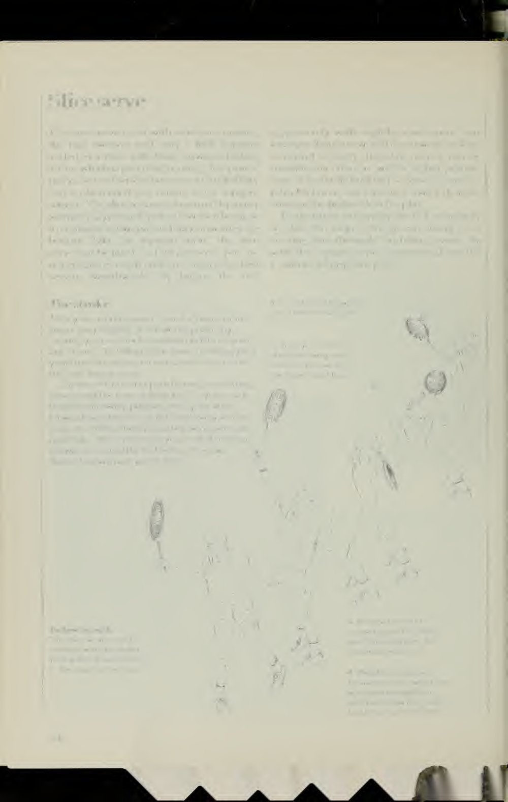
Hình 6.2: Xử lý vô-lê thấp (Low Volley) bằng cách hạ thấp trọng tâm đầu gối và vô-lê tầm cao.
Figure 6.2: Kneeling for the Low Volley vs. Drive Attacking High Volleys.
Cú vô lê góc cạnh Chuẩn bị cho cú vô lê góc theo cách tương tự như đối với cú vô lê cơ bản, với tay không chơi của bạn ở cổ vợt của bạn. Khi thực hiện cú đánh, mép vợt 2 Mép dưới của mặt vợt hướng về phía trước, bước vào trong và đấm đầu vợt phía dưới và xuyên qua bóng, áp dụng xoáy xuống.
Đầu được đấm về phía trước, với mép dưới dẫn đầu, xung quanh mặt ngoài của quả bóng, áp dụng xoáy ngang cũng như xoáy xuống để có được góc cần thiết.
3 của bạn theo hướng lên trên theo hướng của cú vô lê.
Cong đầu gối của bạn để bóng ở vị trí thấp sau cú đánh.
cổ tay phải được giữ cố định khi bạn đi theo một đoạn đường ngắn theo hướng cú vô lê của bạn, đường này sẽ qua lưới theo hướng chéo sân.
1 Đưa vợt của bạn lùi lại một đoạn ngắn với bàn tay không cầm vợt đỡ cổ vợt.
2 Đấm đầu vợt về phía trước, mép dưới hướng về phía ngoài, xung quanh mặt ngoài của quả bóng.
3. Thực hiện theo hướng cú đánh, sẽ là đường chéo bàn.
Giữ cổ tay của bạn vững chắc.
Luyện tập trên chính mình Giống như với cú vô lê thuận tay, bạn có thể luyện tập động tác đấm ngắn, sắc bén của cú vô lê tay sau vào bảng sau vào vòng tròn mục tiêu.
Đứng cách tường khoảng 6 feet và tập bước về phía trước và dùng vợt đập bóng vào tường.
Giữ vững cổ tay và đầu vợt của bạn hướng lên trên, đồng thời cố gắng thực hiện cú vô lê mỗi khi bật ra khỏi tường.
Bắt đầu luyện tập với tư thế nghiêng người về phía tường. Khi bạn cảm thấy tự tin với kỹ thuật của mình, hãy quay trở lại vị trí sẵn sàng giữa các cú đánh.
Cố gắng làm cho quả bóng bật trở lại giữa chiều cao ngang vai để bạn có thể kiểm soát bóng.
Đánh bóng bằng tư thế nghiêng về phía lưới sẽ giúp bạn tránh được việc bóng nảy khỏi tường theo một góc.
Hãy luân phiên thực hành các cú vô lê thuận tay và trái tay của bạn, tiến tới thực hiện cú vô lê khi bạn cảm thấy đủ tự tin để thực hiện.
Luyện tập với một đối tác Thực hiện theo các bài tập thực hành cho cú vô lê thuận tay (xem trang 1 17), tập trung vào các phần của cú đánh mà bạn có thể cần chú ý, chẳng hạn như đảm bảo cổ tay của bạn vững chắc khi tiếp xúc. Bạn cũng có thể thực hành các kiểu vô lê khác nhau bằng cách sử dụng đối tác của mình để đưa đúng loại bóng cho bạn.
Amatcó thể hữu ích khi luyện tập cú vô lê thấp: bạn có thể để đầu gối lưng của mình chạm vào nó khi thực hiện cú đánh.
Lần lượt đánh bóng từ vạch cuối sân trong khi người kia thực hiện cú vô lê, sau đó chơi thuận tay với thuận tay trước khi luân phiên thuận tay và trái tay.
Cú vô-lê để ghi bàn, như minh họa dưới đây, là một cách tốt để kết thúc quá trình luyện tập cú vô-lê của bạn.
Chọn vị trí chuyền bóng ở một bên sân và sử dụng các đường giao bóng làm đường khung thành và các góc của các sân giao cầu đối phương làm cột ghi bàn, cố gắng ghi bàn bằng cách chuyền bóng qua đối tác của bạn qua đường khung thành của anh ta nhưng trong phạm vi đường cuối sân của anh ta.
Cú vô-lê để ghi bàn Ghi bàn bằng cách chuyền bóng qua đối tác của bạn trên đường khung thành của anh ta, nhưng trong phạm vi vạch cuối sân (baseline) của anh ta.
Đừng ghi bàn ngay từ cú đánh đầu tiên.
Sử dụng cú vô lê trái tay của bạn Chiến lược chung để thực hiện những cú đánh nằm ngoài tầm với của đối thủ áp dụng cho tất cả các cú vô lê và cú vô lê trái tay cũng không phải là ngoại lệ.
Về cơ bản, bạn nên cố gắng thực hiện cú vô lê sâu vào phần sân của đối thủ, đặc biệt là khi thực hiện cú vô lê từ giữa sân.
Nếu bạn ở gần lưới hơn, những cú vô lê góc có thể có hiệu quả - nhằm vào các góc một nửa hoặc ba phần tư.
Bất cứ khi nào có thể, hãy thực hiện cú vô lê thẳng và dự trữ cú vô lê chéo sân để có những cú đánh đặc biệt tốt, vì việc trả bóng khó thực hiện hơn.
Mặt khác, những cú vô lê thấp có thể phải được thực hiện chéo sân để đạt đủ độ cao cho khoảng trống và độ sâu của lưới.
Khi đánh những cú vô lê cao, hãy cố gắng đánh chúng thật sâu.
Họ nên đấm một cách tự tin với mặt vợt phẳng và cổ tay chắc chắn.
Cú vô lê trái tay sẽ đặc biệt hữu ích khi trả bóng bất ngờ bay thẳng về phía bạn và bạn không có thời gian để thực hiện động tác bằng chân - chỉ cần xoay hông nghiêng sang một bên và dồn trọng lượng của bạn về phía chân phải khi thực hiện cú đánh.
Giống như tất cả các cú vô lê khác, cú vô lê trái tay hiệu quả hơn từ cự ly gần và chống lại những quả bóng ở trên chiều cao có thể được đập xuống sân.
Cho dù bạn chọn chơi loại cú vô-lê nào, hãy sử dụng nó sau một cú đánh tiếp cận hoặc sau một cú giao bóng xoáy trong các trận đấu (xem trang 204-207).
A Cú vô lê trái tay góc B Những cú vô lê trái tay sâu
Cú vô lê công bóng trái tay Cú vô lê công bóng trái tay, được hiển thị bên dưới, giống như cú vô lê công bóng thuận tay (xem trang 119), một phiên bản rút gọn của cú đánh chạm đất trái tay.
Bóng được chơi ở trên chiều cao ngang vai, được đánh giữa phần thắt lưng và chiều cao của vai bằng động tác xoay người thay vì động tác đấm thông thường của cú vô lê, và đã bổ sung thêm khả năng kiểm soát xoáy lên.
Mặc dù nhiều người chơi ném bóng thuận tay là điều tự nhiên, nhưng rất ít người chơi sử dụng kỹ thuật đánh cú vô-lê ở phía trái tay của họ, trừ khi họ sử dụng cú đánh hai tay ở phía đó.
Rủi ro tương tự khi sử dụng kỹ thuật chạm đất khi thực hiện cú vô lê áp dụng ở cú đánh trái tay cũng như ở cú thuận tay, và do đó, cú vô lê công bằng tay sau hiếm khi được sử dụng, mặc dù đây là một cách hữu ích để xử lý những quả bóng cao, di chuyển chậm xung quanh khu vực giữa sân.
Luôn chơi cú đánh này một cách tích cực để đạt được hiệu quả tối đa.
Cải thiện cú đánh của bạn Giống như trong cú đánh bóng thuận tay, các yếu tố chính của cú đánh là cú giật ở cuối cú giật bóng và chuyển động đi lên của vợt.
Thả tay không chơi của bạn ra và vung vợt về phía trước và hơi hướng lên trên quả bóng, chạm vào mặt sau của quả bóng với toàn bộ mặt dây vợt.
Cú giật nông được hình thành sau khi thu vợt lại sẽ tăng thêm lực cho cú đánh, và cú vung lên phía trước và xuyên qua bóng sẽ áp dụng lực nâng và kiểm soát xoáy lên.
cú đánh nên kết thúc ở độ cao ngang đầu, với cổ tay vững chắc và đầu vợt hướng lên trên.
Cơ thể của bạn nên nghiêng về phía bóng khi hoàn thành cú đánh hơn là khi thực hiện cú công bóng thuận tay.
A Chuẩn bị B Khu vực đánh C Thực hiện theo cách sử dụng cú chuyền bóng trái tay Cú vô lê công bóng trái tay là một cách hữu ích để đánh trả những quả bóng cao, chuyển động chậm xung quanh khu vực giữa sân.
Giống như cú công bóng thuận tay, nó nên được luyện tập kỹ lưỡng và chỉ được sử dụng nếu bạn thực sự có năng khiếu về nó.
Cú đánh được sử dụng để đạt hiệu quả tối đa khi được chơi mạnh mẽ.
Hãy nhắm sâu đến đường cuối sân, hoặc về phía các góc của sân, sử dụng động tác vô lê trái tay cơ bản hơn khi thực hiện các góc.
Hãy chắc chắn rằng bạn có đủ thời gian để đánh bóng vì cú đánh này không được vội vàng.
Gặp bóng ở độ cao từ thắt lưng đến ngang vai, và đưa bóng chắc chắn qua đối thủ đánh đơn của bạn, hoặc có lẽ giữa đối thủ đánh đôi của bạn.
Cú vô-lê đánh sâu tới vạch cuối sân
Các cú vô lê dừng và thả trái tay Các cú vô lê dừng và thả trái tay, giống như các cú đánh thuận tay (xem trang 120), các cú chạm được thiết kế để thả bóng nhẹ nhàng qua lưới.
Sự khác biệt chính giữa chúng là cú vô lê dừng được thực hiện với một quả bóng nhanh và có độ xoáy xuống mạnh, trong khi cú vô lê thả được thực hiện ở vị trí bóng chậm. Khi chơi cú vô lê dừng, mặt vợt hơi rút ra khi tiếp xúc với bóng và hành động có kiểm soát của cổ tay sẽ trượt mép dưới của đầu vợt xuống dưới bóng để áp dụng xoáy xuống.
Việc rút lui này, cùng với việc ngăn chặn chuyển động về phía trước của bạn trước khi va chạm với bóng, sẽ làm giảm tốc độ của quả bóng.
Bởi vì quả bóng được trả lại trong cú vô lê thả là một quả bóng di chuyển chậm hơn nên không cần phải rút vợt: các dây được trượt xuống phía sau và bên dưới quả bóng và dọc theo đó.
Dừng cú vô-lê dưới áp lực. Dừng cú vô-lê trái tay có thể đặc biệt hiệu quả khi trả bóng rộng, bóng nhanh.
Sau khi thực hiện một cú tiếp cận thuận tay, hạ gục đường biên và di chuyển sân lên phía bên phải của trung tâm che đường chuyền xuống, bạn có thể thấy đối thủ của mình đã thực hiện một đường chuyền chéo sân nửa góc mà anh ta biết rằng họ phải đánh mạnh nếu muốn vượt qua bạn trước khi bạn có thể chặn nó.
Xử lý tình huống này bằng cách bước nhanh sang trái, xoay người bằng chân trái khi bạn chuẩn bị bước sang ngang bằng chân phải và duỗi tay vợt hết mức để đưa mặt vợt của bạn về phía sau đường của quả bóng tốc độ.
Khi bóng gặp dây vợt, hãy rút vợt ra một chút và dùng cổ tay có kiểm soát, xoay mạnh mặt vợt dưới bóng để áp dụng xoáy xuống (phải), điều này sẽ ngăn bóng di chuyển sau khi nó rơi ngay về phía lưới của đối thủ trong phần sân giao bóng bên tay phải của anh ta.
Peter Fleming Sử dụng điểm dừng trái tay của bạn và thả cú vô lê Sử dụng điểm dừng trái tay của bạn và thả cú vô lê một cách tiết kiệm, trừ khi bạn đang theo một chiến thuật có chủ ý để làm đối thủ mệt mỏi bằng cách khiến anh ta chạy theo những quả bóng gần như không thể.
Cố gắng sử dụng những cú vô lê này khi đối thủ của bạn ở phía sau đường cuối sân hoặc ở bên ngoài đường biên đối diện, và do đó ngoài tầm với của bóng.
Bất cứ khi nào có thể, hãy chơi chúng từ giếng nước ở sân trước.
Chúng chủ yếu được sử dụng trong trận đấu đơn, mặc dù chúng có thể được sử dụng trong trận đấu đôi nếu bạn chắc chắn rằng không đối thủ nào có thể tiếp cận cú đánh của bạn kịp thời.
Cú vô lê dừng lại có thể là một cú đánh đặc biệt tàn khốc khi nó được sử dụng để đáp trả những cú đánh dữ dội từ đối thủ của bạn.
r= Stopordropvoll góc cạnh<
Cú vô lê trái tay hai tay Không giống như cú thuận tay, cú đánh trái tay nói chung phù hợp với cách chơi bằng tay đôi.
Khi đánh cú vô-lê, tay phụ ở tay cầm sẽ giúp bạn hạn chế việc giật vợt lại.
Sức mạnh và khả năng kiểm soát tăng thêm nhờ sử dụng hai tay có thể đặc biệt hữu ích khi thực hiện các cú đánh mạnh, chẳng hạn như cú đánh bóng trái tay.
Cách cầm vợt trái tay bằng hai tay Đặt tay chơi của bạn ở phần mông của cán vợt, giữa tay cầm kiểu Eastern và kiểu cầm vợt Continental (xem tr.39).
Đặt tay kia của bạn phía trên tay đang chơi, với cách cầm thuận tay kiểu phương Đông. Sử dụng cách cầm này cho tất cả các cú đánh chạm đất trái tay bằng hai tay của bạn.
FrewMacMillanshowshowa tay đôi có thể trừng phạt những quả bóng cao hơn chiều cao lưới ở sân trước .
Cú dứt điểm cao cho thấy anh ta đã đánh mạnh mẽ lên phía trên qua mặt sau của quả bóng áp dụng xoáy lên.
Cú đánh đã được thực hiện tích cực bất chấp vị trí của MacMillan, điều này cho thấy rằng anh ta đã bị đẩy ra biên.
Phát triển phong cách: cú vô-lê Cú vô lê đấm cơ bản và các biến thể của nó là hình ảnh thu nhỏ của tốc độ chơi trò chơi hiện đại.
Bằng cách di chuyển lên sân mỗi khi có cơ hội, những cầu thủ như McEnroe liên tục gây áp lực lên đối thủ.
Những vận động viên ném bóng thích kiểu cầm vợt phương Đông để đánh bóng có xu hướng có cú vô lê thuận tay mạnh hơn, nhờ đó họ cố gắng chiếm ưu thế ở vị trí lưới khi tiến lên phía sau cú giao bóng xoáy của mình.
Đa số những người chơi cú vô-lê một tay chiếm đa số, và kiểu cầm vợt mà họ ưa thích là kiểu Continental đã được sửa đổi - gần giống với kiểu cầm trái tay của họ.
Điều này dẫn đến việc thực hiện cú vô lê thuận tay có kiểm soát và tạo điều kiện cho các cú vô lê theo góc và điểm dừng.
Nó cũng để lại mức độ mạnh hơn cho cú vô lê trái tay, ngoại trừ khi sử dụng cú vô lê truyền động.
Lew Hoad và Rod Laver là điển hình cho phong cách chuyền bóng sau này.
Stan Smith thực hiện cú vô lê đầu tiên có cú đấm thấp từ ngay phía sau vạch giao bóng của anh ấy.
Anh ấy đã đi xuống quả bóng để có thể gặp nó ở phía trước cơ thể mình.
Bằng cách bước về phía trước bằng chân trái, anh ấy đã tạo cho mình một nền tảng đánh tuyệt vời, từ đó anh ấy có thể giữ đầu vợt của mình ngang tầm cổ tay.
FOREHANDVOLLEY Hie Nastase vừa thực hiện một cú vô-lê đầy trêu ngươi ngay sau vạch giao bóng của anh ấy.
Khả năng kiểm soát và cân bằng mặt vợt của anh ấy là hoàn hảo, anh ấy theo dõi kết quả của nỗ lực bắt đối thủ của mình.
Sự táo bạo trong trò chơi của Nastase là duy nhất.
HanaMandlikova sải bước về phía trước để thực hiện cú vô lê thuận tay này.
Cô ấy hoàn toàn cân đối.
Lưu ý rằng đầu gối sau của cô ấy gần như chạm vào sân.
Lưng của cô ấy thẳng và đầu vợt, được giữ ngang bằng cổ tay, cho thấy khả năng kiểm soát tuyệt vời mà cô ấy đang thực hiện.
VirginiaWade bước ngang qua bằng chân trước của mình để tiếp cận và cắt đứt toàn bộ đường quay trở lại.
Cô ấy sẽ hướng cú đánh của mình cho một người chiến thắng chéo góc.
Phong cách giao bóng một tay và vô lê kiểu lục địa của cô ấy cho phép cô ấy chơi xung quanh mép ngoài của quả bóng với khả năng kiểm soát tuyệt đối.
Sức mạnh và sự nhanh nhẹn của cô ấy được thể hiện rõ ràng ở đây.
PHONG CÁCH BÓNG CHUYỂN Rod Laver ở đây đang chơi một cú vô lê góc gần giống hệt với cú vô lê của VirginiaWade, đối diện, nhưng Laver chặn bóng nhiều hơn một chút ở phía trước cơ thể anh ta.
Bằng cách này, anh ta có được nhiều góc hơn cho việc bố trí chéo sân.
Phong cách Continental một lần nữa cho phép đầu vợt đi vòng quanh mép ngoài của quả bóng.
Jimmy Connors, sử dụng cách cầm vợt kiểu Eastern, tung ra một quả bóng cao bằng tay thuận tay.
Anh ấy thực hiện những cú đánh của mình ở mức tối đa, với một cách tiếp cận tích cực.
Lưu ý cách bàn chân trước được thiết lập tốt trên cơ thể - rất quan trọng khi phải với tới những quả cú vô-lê.
FrewMcMillan thực hiện một cú vô lê khéo léo bằng hai tay để đáp lại một cú đánh lái hướng về phía cơ thể anh ấy.
Anh ấy đã chơi bên trong quả bóng, làm chệch hướng bóng lên trên và qua phần thấp nhất của lưới bằng cả xoáy xuống và xoáy ngang.
BÓNG CHUYỆN TRỰC TIẾP BillieJeanKing, phản ứng trước câu trả lời nhanh từ đối thủ, nhảy lên khỏi mặt đất để đẩy phần thân trên của cô ấy về phía trước, tung ra một cú vô lê thuận tay từ trên cao.
Herbalance, mặc dù cô ấy bay trên không, nhưng vẫn hoàn hảo - hãy xem tay trái của cô ấy đang giữ vững cú đánh như thế nào.
Cân bằngKiểm tra kỹ màn trình diễn cú vô lê thuận tay của Tanner cho thấy anh ấy đã phân bổ trọng lượng của mình.
Trọng tâm của anh ấy chạy qua bàn chân trước và qua vai anh ấy.
Điều này cho phép anh ta chơi bóng tốt trước cơ thể mình với khả năng kiểm soát hoàn hảo.
Đầu anh ấy vẫn đứng vững khi theo dõi đường bay của quả bóng qua lưới.
RoscoeTanner thực hiện cú vô lê thuận tay hoàn hảo từ dưới lưới, ngay bên trong vạch giao bóng.
Anh ấy đã đánh bóng tốt ngay trước cơ thể mình.
Chân dang rộng và đầu gối cong của anh ấy làm nổi bật khả năng kiểm soát bóng và vợt bổ sung nhờ việc hạ thấp thắt lưng xuống độ cao của bóng tại thời điểm va chạm.
PHONG CÁCH BÓNG CHUYỀN trái tay Cầu thủ giao bóng một tay và vô lê luôn tạo ra nhiều lực hơn với cú vô lê trái tay của mình.
Cần phải chuẩn bị vợt ở mức tối thiểu trước khi thực hiện cú đấm sắc bén hoặc chặn bóng về phía trước với đầu vợt chạm vào lòng bóng ở phía trước cơ thể. Nhiều người chơi thích hành động ngắn tự nhiên của cú vô lê trái tay, đặc biệt là khi họ tham gia vào các pha chuyền bóng nhanh trên lưới.
Phong cách chuyền bóng trái tay ngày nay rất giống với phong cách của Bunny Austin những năm 1930.
Môn cú vô-lê có thể phát triển chậm hơn ở những người chơi nữ so với nam giới, nhưng nhiều phụ nữ ngày nay là những tay chuyền bóng cừ khôi.
Ken Rosewall hoàn thành cú vô lê trái tay cơ bản sau khi đưa bóng vượt quá vai đánh của anh ấy từ tư thế nghiêng sang một bên.
Chân sau của anh ấy giúp anh ấy chống lại tác động của quả bóng.
Tay trái của anh ấy giúp giữ thăng bằng.
Đây là một tính năng của tất cả các phụ tùng hàng đầu \ ollevers-tfu đóng một vai trò quan trọng.
BACKHANDVOLLEY Margaret Courtleanson dùng chân sau, thuận tay trái để giữ thăng bằng, để thực hiện cú vô lê thấp khó này.
Cô ấy thể hiện một cầu thủ Canada cao, thích nghi với tư thế cơ thể và vẫn tạo ra một cú đánh hiệu quả với tác động của vợt âm thanh, giúp duy trì sự cân bằng trong suốt cú đánh.
SandyMayer, bên dưới, hoàn thành một cú vô lê siêu tốc ở độ căng tối đa nhờ vào tay cầm Continental chắc chắn và việc sử dụng góc chính xác của mặt vợt.
Cú lao bằng chân trước đã cho phép Mayer đón bóng ở phía trước cơ thể của mình.
Tính di động Tính di động là điểm mấu chốt trong nỗ lực đánh chặn một cú sút cố gắng chuyền của Mayer.
Hãy lưu ý góc (gần 45°) của bước đi của Mayer. Cú lao sang một bên sẽ không thành công.
Chris Lloyd, phải, thực hiện một cú vô lê được kiểm soát tốt ở gần đường biên.
Cách cầm vợt bằng hai tay giúp cô bù đắp cho việc đứng quá gần bóng.
Cô ấy phải giữ tư thế chân khá thẳng, đầu vợt hạ thấp hơn mức cổ tay.
PHONG CÁCH BÓNG CHUYỆN TracyAustin điều chỉnh cú đánh trái tay của cô ấy thành cú vô lê tấn công của Playan ở sân trước.
Những người chơi thuận tay đôi như cô ấy thường thích thực hiện cú vô lê ở bên này, trong khi rất ít người chơi thuận tay đánh bóng ở phía sau.
EvonneCawley, bên dưới, gần như chạm tới lề bằng cách bước và duỗi hoàn toàn tay vợt.
Việc che chắn lối chơi trong trận đấu đòi hỏi người chơi phải bước ngang bằng chân trước nếu họ muốn đánh chặn những đường bóng rộng như thế này.
KathyJordan, ở trên, thực hiện cú vô lê trái tay thấp này nhưng việc cô ấy sử dụng cách cầm thuận tay kiểu Đông-Tây sẽ tạo ra độ xoáy hơn là tốc độ.
Herbalance gợi ý rằng cô ấy sẽ trả bóng thành công, mặc dù có tính chất phòng thủ.
Martina Navratilova tiến vào để tranh luận về chiều cao của quả bóng trên lưới.
Cô ấy sẽ sử dụng kỹ thuật chuyền bóng kiểu Continental của mình để di chuyển xung quanh mép ngoài của quả bóng và tạo góc nhọn cho nó qua sân, tạo ra một cú đánh khó cho đối thủ.
BACKHANDVOLLEY BillieJeanKing thực hiện một cú vô lê trái tay cơ bản ngay trước vai đánh của cô ấy.
Kỹ thuật này phát ra âm thanh với cách cầm bóng kiểu Continental tốt, mặc dù cô ấy có thể bước xa hơn về phía quả bóng và đón nó xa hơn ở phía trước cơ thể mình.
Tay trái của cô giúp cân bằng trọng lượng của cô.
Cú lốp bóng là phản ứng bản năng trước một cú đập mạnh từ trên cao từ đối thủ của bạn. Khi phòng thủ, bóng bị đánh trúng, hoặc đôi khi chỉ bị chệch hướng, bay cao trên lưới và rơi sâu vào sân đối thủ trong vòng 6 feet tính từ đường cuối sân.
Được sử dụng chủ yếu trong phòng thủ, cú lốp bóng sẽ cho bạn thời gian để hồi phục khi bạn bị mất vị trí hoặc bị tấn công từ một đối thủ lao vào lưới.
Cú lốp bóng có thể được sử dụng một cách tấn công để phá vỡ đòn tấn công cơ bản hoặc cú vô lê (xem trang 216-217), và rất hiếm khi trong một trò chơi, cú lốp bóng có thể được chơi với tư cách là người giành điểm hoàn toàn.
Học cách lốp bóng cao và sâu khi bạn đang phòng thủ và vừa ngoài tầm với của đối thủ khi bạn đang tấn công.
Cú lốp bóng rất giống một phần của trò chơi đánh đôi, nơi những cú chuyền bóng không được thực hiện dễ dàng, nhưng nó vẫn chỉ được sử dụng ít trong trò chơi đánh đơn, nơi nó thường ít được chú ý và khi bất kỳ người chơi nào thường xuyên sử dụng nó đều bị gắn mác "cầu thủ bóng trăng".
Tuy nhiên, ngay khi bất kỳ cầu thủ nào phải chịu áp lực quá lớn, anh ta nên sử dụng đến cú lốp bóng.
Bạn phải hoàn thiện cú lốp bóng của mình chỉ trong những dịp này.
Khả năng lốp bóng của bạn phải đủ tốt để tận dụng các cơ hội khác ngoài những trường hợp khẩn cấp.
Các cú lốp bóng cơ bản, xoáy lên và xoáy xuống, cũng như cú lốp bóng nửa cú vô-lê và lốp bóng lốp bóng được trình bày ở các trang sau.
Hãy chắc chắn nắm vững cú lốp bóng cơ bản trước khi chuyển sang các biến thể, sử dụng cách cầm vợt thuận tay kiểu Đông và các kiểu cầm vợt trái tay kiểu Đông để thực hiện cú lốp bóng chạm đất, như minh họa bên dưới.
Các đường bay tương phản Sự khác biệt về quỹ đạo của các đường bóng xoáy cơ bản, xoáy lên và xoáy xuống được nêu rõ bên dưới.
Cú lốp bóng cơ bản, với độ xoáy lên tối thiểu, sẽ rất đa dạng, nhưng thường di chuyển khoảng 25 feet trên lưới theo một vòng cung đều.
Quả bóng xoáy ngược trong cú lốp bóng xoáy xuống phòng thủ được đánh cao hơn, có thể đạt tới 30 feet, và bay lơ lửng trước khi rơi xuống sân.
Quả bóng xoáy từ trên xuống thấp hơn - cách lưới từ 15 đến 20 feet - và di chuyển nhanh hơn.
A Xoáy xuống B C cơ bản Xoáy lên Chọn cách cầm vợt của bạn Ngoại trừ cú vô lê lốp bóng, các cú lốp bóng là những cú đánh chạm đất và do đó nên được chơi bằng cách sử dụng cách cầm vợt vuốt mặt đất của bạn - cách cầm vợt thuận tay và trái tay kiểu phương Đông được hiển thị bên phải (xem trang 38).
Khả năng kiểm soát cổ tay chắc chắn được phát huy bởi cách cầm vợt phương Đông đặc biệt hiệu quả đối với các kỹ thuật đánh bóng cơ bản.
Phần 7
Phần 6: Thông Thạo Lob & Smash
Part 6: Lob & Smash Mastery 149 đoạn phân tích chuyên sâu
Cú lốp thuận tay cơ bản Cú lốp thuận tay cơ bản thường được thực hiện từ khu vực cuối sân và, về mặt cách cầm vợt và chuẩn bị cú đánh, tương tự như cú driye thuận tay cơ bản (xem trang 46).
Có một hành động vuốt bóng tương tự cho cả hai, nhưng vì quả bóng có khoảng cách đến khay lớn hơn so với cú đánh mặt đất thông thường, nên một cú đánh đầy đủ hơn được sử dụng, nhấn mạnh vào sự chuẩn bị thấp và theo dõi cao.
Cú lốp bóng thuận tay cơ bản được thực hiện với một mức độ xoáy lên nhỏ, được áp dụng chủ yếu bằng đường đi dốc lên của vợt trong cú vung vợt về phía trước.
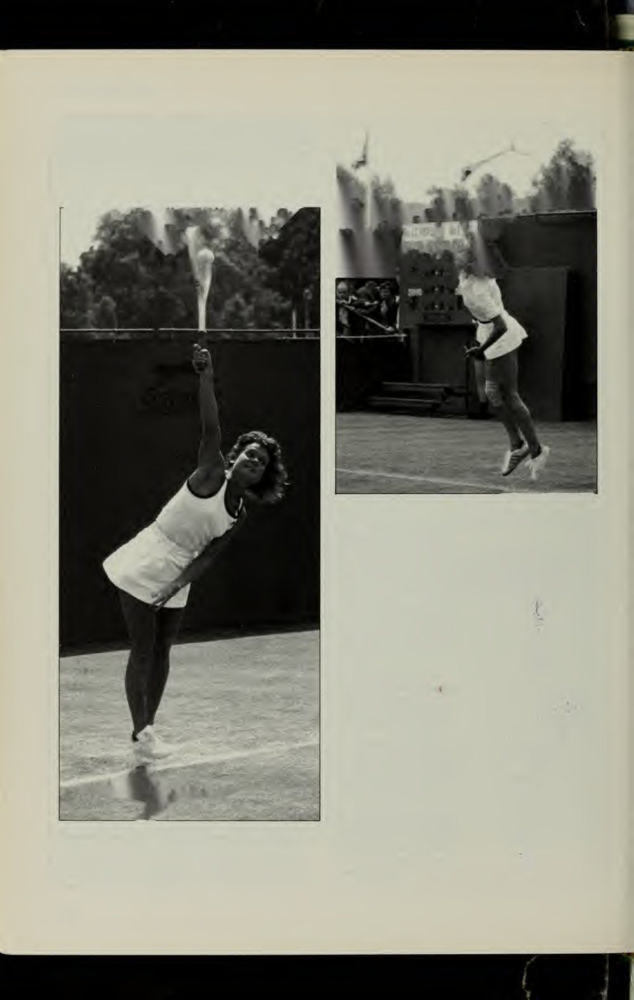
Hình 7.1: Quỹ đạo lốp bóng phòng thủ thoát hiểm (Defensive Lob) và lốp bóng tấn công Topspin.
Figure 7.1: Trajectory of Defensive High Lob vs. Offensive Topspin Lob.
Việc xoay bóng chậm về phía trước sẽ giúp kiểm soát và giúp bạn hạn chế độ sâu của cú lốp bóng.
Bóng được đánh bằng mép dưới của mặt vợt Chơi cú đánh Chuẩn bị cho cú đánh theo cách tương tự như cú công bóng thuận tay (xem trang 48), sử dụng cách cầm vợt thuận tay kiểu Đông của bạn.
Khi kết thúc quá trình thu vợt lại, hãy thả lỏng khuỷu tay của tay cầm vợt và tạo thành một vòng thấp để có lực nâng thêm.
Bước vào với sự dẫn dắt của bạn, để áp dụng lực nâng và đưa nó lên cao trong không khí.
Vợt phải bám theo bóng, kết thúc với một cú theo bóng cao, lý tưởng nhất là thả bóng trong vòng 6 feet tính từ đường cuối sân của đối thủ.
Cú lốp bóng thuận tay cơ bản được sử dụng chủ yếu như một cú đánh phòng thủ và đặc biệt là để trả lời cho cú đập trên cao, nhưng cũng có thể được sử dụng để tấn công, để phá vỡ vạch cuối sân (baseline) kết hợp và cú vô-lê rallv.
Trình tự của thùy cơ bản được hiển thị dưới đây.
Hoàn thiện cú đánh bằng cách thường xuyên làm theo các bài tập luyện được mô tả.
Một khi bạn đã thành thạo cú lốp thuận tay cơ bản, bạn có thể tiến tới xoáy lên, xoáy xuống và các biến thể khác.
chân trái và xoay đầu vợt, mép dưới dẫn đầu, ra ngoài và hướng lên trên bóng, gặp đối diện với hông dẫn đầu của bạn.
Vợt của bạn phải kết thúc ở độ cao cao hơn đầu, với chân sau đóng vai trò là vật ổn định.
1 Xoay chân phải của bạn khi bạn thu vợt lại, hướng sang một bên.
2 Thư giãn khuỷu tay đang chơi của bạn và tạo thành một cú giật thấp với vợt khi bạn bước vào. 3 Xoay đầu vợt lên qua quả bóng với tay trái vẫn hơi đưa ra để giữ thăng bằng.
4 Hoàn thành cú đánh của bạn với vợt cao quá đầu và cân bằng chân phía sau.
Cải thiện cú đánh của bạn Các yếu tố quan trọng của cú lốp bóng thuận tay cơ bản là vùng đánh và theo sau.
Khi bạn chơi bóng, hãy để đầu gối của bạn duỗi thẳng và đảm bảo rằng trọng lượng của bạn dồn về phía trước: nếu bạn ngả người về phía sau và đánh bằng chân sau, cú lốp bóng của bạn có thể sẽ bị hụt.
Bàn chân phải của bạn phải hoạt động như một bộ ổn định trong suốt vùng đánh và theo sau.
Giữ vững bản thân theo cách này sẽ giúp bạn giữ thăng bằng trong suốt cú đánh.
Khi thực hiện cú vung về phía trước, giữ tay trái để giữ thăng bằng và đánh bóng bằng mép dưới của đầu vợt để hỗ trợ cho động tác nâng.
Tuy nhiên, đừng mở (nghiêng về phía sau) mặt vợt quá xa, nếu không thùy vợt của bạn rất có thể sẽ bị hụt.
Siết chặt tay cầm của bạn khi va chạm, giữ cố định cổ tay của bạn để kiểm soát hoàn toàn khi bạn vung vợt từ rất thấp đến cao và điều chỉnh thời gian về phía trước và vung lên để gặp bóng ở độ cao ngang eo khi nó rơi xuống.
Cú lốp bóng theo sau rất đặc biệt, với hai chân duỗi thẳng khi bạn chuyển trọng lượng cơ thể về phía trước và hướng lên trên theo hướng bóng và đầu vợt ngẩng cao.
Vùng đánh bóng Hãy đảm bảo rằng bạn tiếp bóng với trọng lượng chủ yếu dồn vào chân trước trong khi bạn sử dụng chân sau để giữ thăng bằng.
Siết chặt tay cầm của bạn khi đầu vợt di chuyển dốc qua vùng đánh.
Hãy nhớ rằng bạn chỉ cần nghiêng mặt vợt về phía sau một chút vì bạn yêu cầu một số xoáy lên kiểm soát được áp dụng cho quả bóng cho một cú lốp bóng cơ bản.
B Theo dõi Khi vợt của bạn vung qua, hãy giữ vợt hướng lên trên và để vợt theo hướng của quả bóng đang bay lên.
Vợt của bạn sẽ kết thúc ở độ cao trên đầu, như minh họa ở trên.
Lobbing dưới áp lực Sẽ rất khó để sử dụng toàn bộ cú đánh thuận tay khi đối phó với một cú đập mạnh và nhanh.
Trong tình huống này, không có thời gian để chuẩn bị đầy đủ cũng như không có thời gian dài để thực hiện.
Hãy sửa đổi sự chuẩn bị của bạn, như minh họa bên phải, rút ngắn thời gian để bạn có thời gian thực hiện động tác xoay người về phía trước mà không giật bóng.
Khi quả bóng đập tới gần sẽ có tốc độ rất lớn, bạn chỉ cần đánh về phía trước và bên dưới quả bóng với mặt vợt hơi nghiêng, làm chệch hướng quả bóng mạnh lên không trung.
Chuẩn bị cú lốp thuận tay điển hình Chuẩn bị rút ngắn
Cú lốp trái tay cơ bản Vì cú lốp bóng thường được sử dụng như một cú đánh phòng thủ nên nó phù hợp với cú đánh trái tay một cách tự nhiên.
Việc chuẩn bị cho cú đánh cũng giống như đối với cú đánh trái tay với vợt tạo thành một cú giật sâu tương tự sau cú trả bóng thấp. Cú đánh được thực hiện với một mức độ xoáy lên nhẹ, chủ yếu được thực hiện bằng cách vung vợt dốc lên, kết thúc bằng một cú theo bóng dài và kết thúc cao.
Bóng được đánh bằng cú đánh Đánh vào vị trí sẵn sàng bình thường của bạn phía sau đường cuối sân.
Xoay sang trái, đổi sang cách cầm vợt trái tay và đưa vợt về phía sau bằng hoặc thấp hơn độ cao đánh với tay không chơi của bạn vẫn đỡ vợt ở cổ vợt sau khi thay đổi cách cầm.
Với trọng lượng của bạn di chuyển đến chân sau (trái), vai của bạn sẽ tròn về phía bóng, chuẩn bị vợt về phía sau mép dưới của mặt vợt để tạo lực nâng và kiểm soát.
Sử dụng cách cầm vợt trái tay kiểu Eastern của bạn, thay đổi từ cảm giác thuận tay khi bạn bắt đầu chuẩn bị cú đánh, giống như cách bạn làm trong một cuộc tập hợp động tác chạm đất thông thường.
Trình tự của cú đánh trái tay được hiển thị bên dưới, từ bước lùi đến bước tiếp theo cho đến hết.
Thực hiện theo các bài tập được mô tả ở trang 150 để hoàn thiện cú đánh.
hông sau của bạn trước khi thả tay thuận và thư giãn khuỷu tay của bạn để tạo ra vòng lặp thấp để tăng thêm lực nâng.
Khi cánh tay vợt của bạn bắt đầu thư giãn, hãy chuyển trọng lượng cơ thể của bạn sang chân trước bằng cách bước song song với đường bay của bóng.
Xoay đầu vợt ra ngoài và hướng lên trên quả bóng, với cạnh dưới của nó dẫn trước và chạm bóng ngay phía trước hông phải của bạn.
1 Sử dụng cách cầm vợt trái tay, đưa vợt của bạn về phía sau hoặc thấp hơn độ cao đánh khiến vai bạn quay.
2 Thực hiện cú giật bằng vợt của bạn.
Bước vào bằng chân phải và vung vợt thẳng về phía bóng.
3 Xoay đầu vợt của bạn hướng lên trên quả bóng, duỗi thẳng chân khi làm như vậy.
Gặp bóng ở độ cao ngang eo.
4 Với trọng lượng của bạn ở bàn chân trước, hãy kết thúc bằng vợt cao hơn đầu khi hoàn thành động tác tiếp theo.
Cải thiện cú đánh của bạn Các yếu tố quan trọng của cú lốp bóng trái tay là sự chuẩn bị, vùng đánh và thực hiện theo.
Thực hiện sự thay đổi từ cách cầm vợt thuận tay sang cách cầm vợt trái tay khi bạn bắt đầu chuẩn bị cho cú đánh, đưa vợt về phía sau ở mức hoặc thấp hơn độ cao đánh khi bạn bắt đầu xoay sang trái.
Hãy đưa vai của bạn bám sát vào quả bóng khi bạn đưa vợt về phía sau xa hơn và trọng lượng cơ thể của bạn chuyển sang chân sau (trái) của bạn.
Thả tay không chơi khi bạn tạo một cú giật sâu bằng đầu vợt để có thể đưa vợt dốc lên về phía bóng để tạo ra một chút xoáy lên.
Bóng được đánh bằng mép dưới của mặt vợt để tạo thêm lực nâng và khả năng kiểm soát.
Vợt phải chạm bóng ở độ cao ngang thắt lưng và ngay phía trước hông dẫn đầu, đồng thời đầu gối trước phải bắt đầu duỗi thẳng để tăng thêm tác dụng nâng khi vợt vung lên và bóng kết thúc ở độ cao trên đầu khi hoàn thành động tác theo sau.
Bàn chân sau phải giữ tiếp xúc với mặt sân và đóng vai trò như một bộ ổn định trong suốt khu vực đánh bóng và tiếp tục thực hiện trước khi lấy lại vị trí sẵn sàng.
C A Chuẩn bị Thay đổi từ cách cầm thuận tay sang cách cầm vợt trái tay khi bạn bắt đầu chuẩn bị cho cú đánh.
Vai của bạn phải xoay hoàn toàn theo bóng khi cú đánh của bạn thả lỏng để vợt tạo thành một vòng.
B Vùng đánh Đầu vợt được vung lên và xuyên qua quả bóng để tạo ra xoáy lên cần thiết.
Mép dưới của mặt vợt phải hơi hướng về phía trước khi nó gặp bóng ở độ cao ngang eo và ngay phía trước hông phải.
C Theo dõi Vợt phải kết thúc ở độ cao trên đầu khi quá trình theo dõi hoàn tất.
Bàn chân sau đóng vai trò như một bộ ổn định trong suốt vùng đánh và theo sau.
Lobbing dưới áp lực Khi chơi cú lốp bóng thuận tay, đôi khi bạn có thể thấy mình bị áp lực, không có thời gian để chuẩn bị vợt đầy đủ cho cú lốp bóng trái tay cơ bản, và do đó bạn có thể phải rút ngắn thời gian thu bóng bình thường của mình.
Việc thu hồi ngắn, được sửa đổi cho một tình huống áp lực được so sánh với việc thu hồi thông thường, phải không.
Trong phiên bản sửa đổi của cú đánh, chỉ có khả năng xoay vai hạn chế.
Đầu vợt đơn giản chặn và làm chệch hướng quả bóng bị đập, giữ nó trong thời gian ngắn hơn sau khi đánh.
Chuẩn bị cú lốp bóng trái tay điển hình Chuẩn bị rút ngắn
CƠ BẢN HANDAXDBACKHANDLOBS Thực hành trên chính bạn Đi đến một đầu của sân và đánh dấu một đường 6 feet trong vạch cuối sân (baseline), như minh họa bên phải.
Chọn vị trí đọc của bạn ở phía sau vạch cuối sân (baseline) ở đầu bên kia của sân và lốp bóng thuận tay ở độ cao thuận tay một cách có hệ thống và đi sâu vào sân để chúng tiếp đất trong khu vực mà bạn đã đánh dấu.
Thả một quả bóng sang một bên và thực hành vung đầu vợt hơi nghiêng của bạn lên từ mức giật lùi thấp để gặp quả bóng và cố gắng đánh nó ở độ cao từ 15 feet trở lên, ở độ cao tối đa.
Thực hành cú lốp bóng trái tay của bạn tương tự.
Việc thay đổi cách cầm vợt trong khi bạn thả bóng sẽ chỉ tạo thêm khó khăn, vì vậy hãy đảm bảo rằng bạn bắt đầu với cách cầm vợt trái tay kiểu phương Đông chính xác.
Cả hai cú đánh chỉ nên tạo ra xoáy lên nhẹ, vì vậy hãy quan sát đường bay của cú lốp bóng thực hành của bạn để biết rằng bạn đang đạt được quỹ đạo chính xác.
Nếu bạn nghiêng mặt vợt về phía sau quá xa, xoáy xuống được áp dụng sẽ giữ bóng ở trên không lâu hơn, có thể khiến nó rơi ra khỏi sân.
Nếu bạn nghiêng mặt về phía trước, xoáy lên nhiều hơn sẽ làm cho bóng chìm sớm hơn, không đạt được độ sâu dự kiến. Khi bạn có thể thường xuyên lốp bóng ra khỏi rổ đầy bóng cả các cú đánh thuận tay và trái tay vào khu vực mục tiêu của bạn, hãy tiến hành tập luyện với đối tác luyện tập của bạn để đập bóng thùy của bạn.
Luyện tập với đối tác Haye đối tác của bạn thực hành cú đập đầu vào thùy của bạn, như minh họa bên dưới, để thực hành trận đấu thực tế.
Bắt đầu từ phía sau điểm trung tâm của bạn, với đối tác của bạn ở vị trí đánh bóng cơ bản của anh ta, bắt đầu một cú lốp bóng và đập tan loạt bóng bền (rally) bằng cách chơi một cú lốp bóng thuận tay cơ bản.
Thùy hai bên khi cần thiết.
Cố gắng kéo dài dây thùy của bạn để đập các đợt tập trung, nhớ quay lại vị trí cơ bản của bạn sau mỗi cú đánh.
Thay đổi sau 15 phút.
Sử dụng thùy của bạn Đừng bỏ sót thùy trong kế hoạch chiến thuật của bạn.
Đòn tấn công cơ bản có thể được sử dụng để phá vỡ cả các cuộc tấn công cơ bản và tấn công yolley (xem trang 2).
208 và 212).
Theo nguyên tắc chung, lốp bóng sâu, hướng về phía bên phải, về phía trái tay của đối thủ, khiến cho cú trả bóng trở nên khó khăn nhất có thể.
Nếu bạn đang bị áp lực, hãy hành động cao hơn bình thường để có thời gian phản ứng.
Những cú lốp bóng cao, sâu cũng có thể được thực hiện để tận dụng lợi thế của gió và mặt trời, như minh họa ở trang 242. Khi sử dụng những cú lốp bóng cơ bản của bạn để tấn công một yolleyer, hãy đánh bóng thấp hơn, ngay ngoài tầm với của đối thủ.
Nếu đối thủ của bạn là một cầu thủ đánh đầu mạnh, hãy xen kẽ các cú lốp bóng cao và thấp.
ATrái tay BTiền tay
Evonne Cawley đã bước ngang qua với sự cân bằng đối trọng của chân trước với động tác chân chính xác và làm nổi bật cô ấy đã duỗi thẳng cơ thể và nâng cao bằng vợt của mình theo nhịp tim của trò chơi, tạo ra một cú lốp bóng cơ bản từ trái tay.
Herout Lan tay
Topspinlob Loạn bóng xoáy lên về cơ bản là một cú đánh tấn công có thể tạo ra người chiến thắng khi chơi bất ngờ.
Nó có thể được phủ bằng các kiểu cầm vợt thuận tay và trái tay kiểu Eastern và được sử dụng để phát huy lợi thế tốt nhất của nó khi được ngụy trang dưới dạng một cú công bóng xoáy lên.
Đối thủ đang lao vào lưới của bạn sẽ đoán trước được một cú trả bóng chìm và sau đó anh ta sẽ phải thực hiện cú vô lê càng sớm càng tốt.
Bạn sẽ khiến anh ta hoàn toàn bất ngờ khi bạn thực hiện quá trình chuẩn bị cho cú giật sâu với một cú vung vợt lên cao và theo đuổi cao khi bạn hất bóng vừa đủ cao để tránh được cánh tay vợt đang dang ra của anh ta trước khi lao thẳng về phía sân.
Quả bóng sẽ tiếp tục bắn về phía trước sau khi nảy lên.
Độ xoáy lên sắc nét (xem trang 27) phải được áp dụng để tạo ra cú đánh chìm mong muốn đòi hỏi phải căn thời gian hoàn hảo và hành động của cổ tay và cẳng tay được kiểm soát cộng với tốc độ đầu vợt tối đa ngay trước khi va chạm.
Cải thiện cú đánh của bạn So sánh hình dạng của cú đánh cho cú lốp bóng xoáy thuận tay trên, được hiển thị bên phải, với cú đánh thuận tay cơ bản, trang 147, và bạn sẽ thấy vị trí của vợt và vợt trong quá trình chuẩn bị, lúc đánh và trong quá trình tiếp theo khác nhau như thế nào.
Độ giật lại thấp như đối với cú lốp bóng cơ bản, nhưng cú giật được hình thành khi bạn thư giãn khi chơi khuỷu tay, sâu hơn.
Vòng lặp sâu hơn này được khuyến khích hơn nữa bằng cách nghiêng cổ tay khi kết thúc quá trình chuẩn bị thu lại để giật cổ tay lên trên khi bạn tấn công bóng.
Góc mặt vợt khi đánh sẽ chỉ nghiêng về phía sau so với đường thẳng đứng.
A Chuẩn bị Vợt được rút lại để tạo thành một cú giật sâu, sẽ nâng đầu vợt lên từ phía dưới tầm cổ tay.
Khi kết thúc quá trình thu vợt, cổ tay phải được nghiêng để tốc độ đầu vợt tối đa có thể được phát triển thông qua vùng đánh bằng cách bẻ cổ tay.
B Khu đánh bóng Vợt tiếp cận gần như thẳng đứng từ bên dưới quả bóng, gặp nó đối diện với phần giữa của cơ thể ở độ cao ngang eo.
C Theo dõi Vợt có điểm đánh rất cao về phía vai trái.
Kết thúc xoáy lên Hai hình ảnh bên phải cho thấy các vị trí đặc trưng của vợt khi hoàn thành cả hai cú lốp bóng xoáy lên thuận tay và trái tay.
Bạn sẽ nhận thấy rằng, trong cả hai trường hợp, mặt đánh của vợt hầu như hướng xuống sân.
Điều này là kết quả của hành động của cổ tay và cẳng tay trong vùng đánh bóng, và là dấu hiệu của xoáy lên nghiêm trọng được áp dụng ở cú đánh.
Thuận tay trái tay
Luyện tập cho riêng bạn Khi tự mình thực hành cú đánh xoáy lên, hãy làm theo quy trình tương tự được nêu trong phần lốp bóng cơ bản nhưng thay vì quay sang một bên và thả bóng, hãy xoay và ném quả bóng lên đủ cao để nó bật ra khỏi sân ít nhất là cao ngang thắt lưng.
Hãy nhớ nghiêng người về phía lưới khi bạn chuẩn bị.
Cú giật cổ tay của bạn thật thấp trước khi búng cổ tay về phía trước để đưa vợt vào bóng gần như theo phương thẳng đứng và ở tốc độ lớn.
Cố gắng giữ bóng để kiểm soát tốt hơn và không giật vợt đi.
Thực hiện theo hướng cao và ngang cơ thể của bạn sau khi bước vào bằng chân trước khi bạn bắt đầu vung về phía trước.
Hãy nhớ tầm quan trọng của việc thiết lập vòng cung bên phải - bóng phải đi qua lưới khoảng 13 feet và sau đó lao xuống phía sau một đối thủ tưởng tượng ở phần sân trước trước khi tiếp tục lao vào lưới.
Nếu bạn có máy đánh bóng, hãy đặt nó để đưa những quả bóng có tốc độ chậm hoặc trung bình nảy lên một nửa khu vực đất của vournoman (xem trang 195) và bật lên để bạn có thể dễ dàng vung lên từ bên dưới đường bay và chơi bóng ở độ cao ngang thắt lưng.
Luyện tập với đối tác Lần lượt, đưa cho nhau các cú phát bóng có nhịp độ trung bình, dài 3/4, nảy đủ cao để bạn thực hành cú lốp bóng xoáy lên.
Đặc biệt tập trung vào động tác bằng chân và chọn vị trí - bạn có thể đang chạy khi có cơ hội thực hiện một cú lốp bóng xoáy lên, trong trường hợp đó, bạn sẽ phải giữ vững bản thân để thiết lập một cơ sở âm thanh để thực hiện cú đánh.
Bước về phía trước và bước ngang khi bạn vung bóng sẽ tạo thêm động lực cho cú đánh của bạn.
Bạn có thể thấy rằng không dễ dàng để nâng cổ tay và giật nó về phía trước ở phía sau tay, và do đó hãy dựa nhiều hơn vào việc lốp bóng xoáy lên thuận tay như hầu hết người chơi đều làm.
Yêu cầu đối tác của bạn thực hiện một loạt các pha tấn công trên lưới - giao bóng và vô lê hoặc sút tiếp cận và vô lê (xem trang 204 và 214) và xem liệu bạn có thể gây bất ngờ cho anh ta bằng một cú lốp bóng xoáy lên hay không.
Bạn có thể làm điều này bằng cách ngụy trang nó như một cú công bóng xoáy lên cho đến giây phút cuối cùng, sau đó giật bóng cực thấp và búng mạnh đầu vợt lên để áp dụng cú xoáy lên mạnh và do đó nhúng bóng qua đầu anh ta, như minh họa ở trên.
Sử dụng cú lốp bóng xoáy lên của bạn Các đặc điểm chính của cú lốp bóng xoáy lên thành công là ngụy trang và bất ngờ.
Đó là một trong những cách hiệu quả nhất để phá vỡ một cuộc tấn công lưới mạnh và có thể là người ghi điểm nếu nó được ngụy trang dưới dạng một cú chuyền bóng cho đến khi đối thủ của bạn cam kết thực hiện cú vô lê.
Tránh thực hiện cú lốp bóng xoáy từ trên xuống trước những cú đánh khó nhất của đối thủ hoặc khi bạn ở quá xa đường cuối sân.
Bạn sẽ cần thời gian để thực hiện cú đánh và nếu bạn ở quá xa lưới, lợi thế bất ngờ chính của bạn sẽ bị mất.
Nói chung, hãy cố gắng lốp bóng chéo bàn và lý tưởng nhất là qua vai trái tay của đối thủ.
thuận tay trái tay
lốp bóng xoáy xuống lốp lốp xoáy dưới thường là tuyến phòng thủ cuối cùng trước áp lực cực lớn.
Bản thân cú đánh được thực hiện theo cách tương tự như cú vô lê, nhưng bạn sử dụng cách cầm cú đánh trên mặt đất của mình và nhấn mạnh vào việc làm chệch hướng quả bóng lên không trung.
Thường được chơi từ phía sau đường biên ngang, nó phải nhắm cao hơn lưới khoảng 30 feet và sâu về phía đường biên cuối của đối phương, nơi vợt sẽ rơi và Cải thiện cú đánh của bạn. Đặc điểm quan trọng nhất của cú lốp bóng xoáy xuống trái tay là chuẩn bị vợt rút ngắn, góc của mặt vợt tại khu vực đánh bóng và đường chuyền tiếp theo.
Giữ vợt bằng cách cầm vợt trái tay kiểu Eastern, đưa vợt của bạn về phía sau cao hơn một chút so với độ cao đánh dự định của bạn bằng tay không cầm vợt ở cổ vợt.
Mép dưới của mặt vợt phải hơi hướng về phía trước khi bạn thả tay đỡ ra và bước vào và đấm về phía trước sao cho dây cắn xuống và ở dưới quả bóng.
Mặt vợt góc cạnh sẽ tạo ra xoáy xuống cực lớn, đưa bóng lên xa 30 feet trở lên.
Cổ tay phải chắc chắn và mặt vợt được kiểm soát khi tiếp xúc.
Thực hiện theo hướng lên trên theo hướng thùy của bạn để kiểm soát tối đa, kết thúc ở độ cao ngang đầu.
Rút ngắn cú đánh Khi bị áp lực cực lớn, hãy sử dụng cú lốp xoáy dưới của bạn chỉ để làm chệch hướng quả bóng, đẩy vợt ở cú va chạm sắp tới với mặt vợt hơi mở.
Hình bên phải cho thấy kết thúc của cú xoáy xuống thuận tay theo cách này.
Đầu vợt đã được đẩy về phía trước và dưới bóng mà không có sự lùi lại đáng kể trong cú đánh.
phục hồi gần như theo chiều dọc.
Vòng xoáy dưới sẽ giúp giữ bóng bay lâu hơn và mang lại cho bạn không gian thở để lấy lại vị trí nếu bạn bị kéo ra khỏi sân.
Vì việc phòng thủ bằng cú trái tay của bạn phổ biến hơn một chút, các đặc điểm chính của cú lốp xoáy dưới trái tay được mô tả bên dưới, nhưng các yếu tố chính thì tương tự nhau ở phía thuận tay.
A Chuẩn bị Đưa vợt lùi lại một khoảng ngắn như khi thực hiện cú vô lê.
Giữ cổ tay của bạn vững chắc.
B Vùng đánh bóng Gặp bóng ở phía trước vai đầu của bạn khi bạn chặn về phía trước và dưới bóng với mép dưới của vợt hơi dẫn trước.
C Theo dõi Luôn cập nhật giá của bạn khi bạn theo dõi.
Luyện tập cho riêng mình Vì cần phải trả bóng nhanh liên tục, tốt nhất bạn có thể tự mình luyện tập cú đánh bóng xoáy xuống với sự trợ giúp của máy đánh bóng.
Đặt máy ở tốc độ tối đa để bóng sẽ nảy ngay trong vạch cuối sân (baseline) của bạn về phía các góc thuận tay hoặc trái tay của bạn.
Bắt đầu từ phía sau điểm trung tâm của bạn, chạy bóng xuống, nâng một cú lốp bóng xoáy xuống phòng thủ lên, và sau đó cố gắng quay trở lại điểm trung tâm của bạn trước khi máy bắn quả bóng tiếp theo.
Luyện tập với người cùng tập Hãy thử bài tập đập thùy nâng cao sau đây.
Bắt đầu từ các vị trí đập thùy thông thường của bạn và chơi một vai trong mỗi vai bằng cách sử dụng tính điểm quần vợt và với người vận động hành lang bắt đầu ở mọi điểm.
Người chơi trên lưới phải đập hoặc chuyền bóng bất kỳ quả bóng nào nhưng chỉ được phép để bóng phòng thủ sâu nảy ra - những quả bóng nằm trong đường kẻ dọc sân cách đường biên ngang 6 feet và song song với đường cuối sân.
Người lốp bóng phải lốp bóng luôn được đập từ sân trước, nhưng có thể lái bất kỳ cú đập nào được chơi từ đất của người khác hoặc sau khi bật lên.
Sử dụng cú lốp bóng xoáy xuống của bạn Cú lốp bóng xoáy xuống hoặc lốp phòng thủ sẽ tự phát huy tác dụng khi bạn chịu áp lực cực lớn.
Sử dụng nó như một lá chắn tự nhiên để thực hiện cú đập bóng từ trên cao, luôn nhắm đến chiều cao và chiều sâu, và thỉnh thoảng kết hợp nó với cú lốp bóng cơ bản để làm mất nhịp điệu của đối thủ trong quá trình chơi cơ bản.
Biểu đồ bên dưới cho thấy các cú lốp bóng xoáy xuống được thực hiện ở phía trái tay và cú thuận tay sâu tới phía trái tay của đối thủ thuận tay phải.
A Trái tay B Thuận tay KenRosewall, dưới áp lực nặng nề từ đối thủ, bao phủ toàn bộ chiều rộng của đường biên ngang của mình để ghim cú lốp bóng phòng thủ có kiểm soát này.
Bàn tay không chơi này được sử dụng để chống lại chuyển động cực mạnh của cánh tay vợt ra ngoài và dưới bóng, giúp anh ta duy trì sự cân bằng hoàn hảo.
Hãy lưu ý góc chính xác của mặt vợt của anh ấy.
Lobbedhalf-volley Mặc dù các kỹ thuật lốp bóng cơ bản, xoáy lên và xoáy xuống tạo nên cốt lõi của kỹ năng lốp bóng của bất kỳ cầu thủ nào, các biến thể như cú lốp bóng nửa chuyền vẫn sẽ cần bạn chú ý nếu bạn muốn trở thành một cầu thủ toàn diện hoàn chỉnh.
Cú lốp bóng nửa chuyền được chơi ngay sau khi bật lên và do đó về mặt kỹ thuật là một cú đánh chạm đất, nhưng được bao gồm trong phần này vì chức năng của nó là Cải thiện việc chuẩn bị cú đánh của bạn, vùng đánh và theo sau là những điểm quan trọng nhất cần tập trung khi chơi cú vô-lê nửa bóng ở phía thuận tay hoặc phía trái tay.
Đi sang bên lưới, thả tay không chơi của bạn ra khỏi cổ vợt và chuẩn bị vợt của bạn bằng một cú thu bóng ngắn, thấp, giống như một cú vô lê nửa hiệp bình thường từ khoảng giữa sân.
Vợt của bạn phải được giữ ngang bằng với cổ tay của bạn, bạn uốn cong đầu gối của mình thật tốt để tiếp cận bóng và trọng lượng của bạn phải được dồn lên bàn chân sau của bạn.
Bước vào hoặc ngang qua bóng bằng chân trước, lốp bóng thuận tay, không phải cú công bóng.
Nó thường là đòn đánh phòng thủ, đôi khi được thực hiện theo sự lựa chọn, nhưng thường được sử dụng khi có ít lựa chọn khác.
Cú đánh này có thể được thực hiện dễ dàng bằng cách cầm vợt thuận tay hoặc trái tay kiểu phương Đông và có cách thu vợt ngắn tương tự như cú vô lê nửa cơ bản.
Bóng được đánh bằng mép dưới của vợt để tăng thêm lực nâng, và cú đánh kết thúc với độ tiếp theo cao.
trọng lượng của bạn đè lên đầu gối cong phía trước của bạn khi bạn chơi về phía trước với một cú vung ngắn, chắc chắn bằng cổ tay để đón bóng đối diện với hông dẫn đầu của bạn ở phía thuận tay, ngay phía trước phía bên trái tay.
Đánh bóng ngay sau khi nảy lên, với mép dưới của vợt dẫn đến tạo thêm lực nâng.
Khi bạn nhấc bóng lên và xuyên qua bóng, hãy duỗi thẳng đầu gối của bạn để có độ cao sắc nét hơn để đưa bóng qua đầu đối thủ.
Đầu gối của bạn phải bắt đầu duỗi thẳng khi tiếp xúc và phải tiếp tục làm như vậy khi vợt di chuyển lên để hoàn thành tốc độ theo dõi cao hơn so với khi thực hiện cú vô lê cơ bản một nửa.
Trái tay A Chuẩn bị Đưa vợt của bạn về phía sau ngắn và thấp và uốn cong đầu gối của bạn để tiếp cận bóng, giữ đầu vợt ngang bằng với cổ tay của bạn.
B Vùng đánh Đánh mạnh lên và xuyên qua bóng, mép dưới của vợt dẫn đầu.
Duỗi thẳng đầu gối của bạn qua vùng đánh để kiểm soát chiều cao và chiều sâu.
C Followthrough Thực hiện theo hướng lên và xuyên qua bóng theo hướng cú đánh.
Kết thúc phải cao hơn đáng kể so với cú vô lê nửa cơ bản.
Thực hành trên chính bạn Đặt một máy bóng trên đường giao bóng ở cuối sân và đặt nó để nạp những quả bóng có tốc độ trung bình sẽ hạ cánh ngay bên ngoài đường giao bóng của bạn ở đầu bên kia của sân.
Vào vị trí và thực hành cú lốp bóng nửa vô lê, lúc đầu đưa bóng cho bạn trong khoảng thời gian 12 giây và giảm thời gian này khi bạn cải thiện cú đánh.
Bằng cách điều chỉnh máy và vị trí của riêng bạn, bạn sẽ có thể thực hành các cú vô lê chéo sân và dọc theo nửa đường biên, cả thuận tay và trái tay.
Luyện tập không cần máy bóng bằng cách xoay, thả bóng khi bạn thu vợt lại và thực hiện cú đánh về phía trước theo cách thông thường.
Luyện tập với đối tác Bạn có thể luyện tập cú vô lê nửa cú lốp bóng của mình với một đối tác bằng cách cho anh ta thực hiện cú vô lê từ vị trí lưới của anh ta và trả lại cú lốp bóng nửa cú chuyền bóng từ xung quanh khu vực giữa sân.
Khi bạn đánh bóng, vợt phải nghiêng ở một góc lớn hơn so với cú vô lê cơ bản.
Bắt đầu duỗi thẳng đầu gối của bạn khi tiếp xúc với bóng.
Cả hai tính năng này sẽ giúp bạn kiểm soát độ cao và độ sâu của cú đánh.
Khi bạn đã làm việc trên cả hai Sử dụng hàng rào sân Sử dụng một tấm bảng hoặc hàng rào để giúp bạn tưởng tượng chiều cao của cánh tay vợt dang rộng của đối thủ khi bạn thực hành các cú đánh thùy của mình đảm nhận vai trò chuyền bóng trong khi đối tác của bạn thực hành cú lốp bóng nửa vòng.
Hãy thực hiện theo cách thực hành này với một loạt bóng bền (rally) chung từ người bắt bóng đến người bắt bóng với người bắt bóng ném bóng bằng nửa bóng ngang bất cứ khi nào có cơ hội.
Người vô lê phải cố gắng lấy lại hoặc đập quả bóng này và sau đó quay trở lại vị trí vô lê của mình trên lưới để tiếp tục đánh bóng.
Ngoài ra, người thực hiện cú vô lê có thể bỏ qua cú đập bóng nhưng sau khi lấy lại được nửa cú vô lê.
Đứng bên trong đường biên của bạn, quay mặt về phía hàng rào và thực hiện một cú lốp bóng nửa vòng qua hàng rào.
Lặp lại cho đến khi bạn chỉ lướt qua lưới.
cú lốp bóng từ phía sau sân, anh ta ở lại đó để đảm nhận vai trò ở đường cuối sân trong khi đối tác của anh ta, người chơi lốp bóng, di chuyển lên sẽ đảm nhận cú vô lê cho đến khi đến lượt anh ta được lốp bóng và quá trình này được lặp lại.
Sử dụng các cú vô lê nửa cú lốp bóng của bạn Giá trị chiến lược chính của cú vô lê nửa cú lốp bóng là gây bất ngờ và đẩy lui đối thủ hoặc đối thủ đang ở trên lưới.
Đó có thể là một cách rất hiệu quả để lấy lại bóng khi bạn đang chịu áp lực lớn.
Một cú lốp bóng nửa cú thành công sẽ khiến kẻ tấn công rời khỏi lưới và cũng sẽ giúp cầu thủ bị tấn công có thời gian phục hồi và cơ hội tự mình thực hiện cuộc tấn công.
Hãy ngụy trang ý định thực hiện một cú lốp bóng nửa chuyền của bạn miễn là bạn có thể duy trì cú đánh cho đến giây phút cuối cùng như thể bạn sắp chơi một nửa cú vô lê cơ bản.
Như minh họa bên phải, trv để thực hiện cả cú đánh thuận tay và trái tay của bạn về phía trái tay của đối thủ.
A Trái tay B Thuận tay
Lobvolley Một cú vô lê lốp bóng người chiến thắng có thể ngoạn mục để xem như một cú đập bóng đẹp mắt được thực hiện trên cao.
Nó phải được chơi với sự bất ngờ và táo bạo bởi vì người chơi mạo hiểm hết mình khi cố gắng thực hiện nó, biết rằng mình sẽ mất điểm nếu cú đánh được đoán trước.
Bản thân cú đánh về cơ bản là một cú vô lê thấp đột ngột được lốp bóng với độ xoáy từ trên xuống sắc nét, thường là từ bên trong đường giao bóng, qua đầu của một cầu thủ hoặc những cầu thủ trên mạng có vị trí tốt, những người đang mong đợi một cú vô lê phòng thủ, đang di chuyển để hoàn thành công việc.
Sự bất ngờ và sự khéo léo và động tác của cánh tay là những điều kiện tiên quyết của cú đánh này.
Không nên sử dụng nó quá thường xuyên và việc luyện tập là điều cần thiết trước khi có thể chơi nó một cách tự tin.
Nó có thể được chơi bằng bất kỳ cách cầm âm thanh nào nhưng phù hợp nhất với kiểu cầm vợt phương Đông đã được sửa đổi (xem trang 53).
Cải thiện cú đánh của bạn Chuẩn bị, vùng đánh và theo dõi là những yếu tố quan trọng nhất cần tập trung khi chơi cả cú vô lê thuận tay và trái tay.
Việc chuẩn bị cho cú đánh cũng tương tự như đối với cú vô lê thấp.
Giữ vợt của bạn với kiểu cầm Continental hoặc kiểu Đông đã được sửa đổi, với mặt bên của bạn ở trên lưới chuẩn bị vợt của bạn với một cú rút lui ngắn, về chiều cao đánh.
Mép dưới của vợt của bạn phải hướng về phía trước và đầu gối của bạn cong lại với trọng lượng đặt trên bàn chân sau của bạn.
Bước vào bằng chân trước của bạn và sử dụng động tác phối hợp của cổ tay và cẳng tay, vung vợt khéo léo lên trên và qua quả bóng, áp dụng xoáy lên mạnh vào nó.
Quả bóng phải được đặt ở vị trí đối diện với chân trước ở độ cao ngang đầu gối và cơ thể phải dần dần duỗi thẳng tại thời điểm va chạm.
Vợt nên kết thúc ở độ cao trên vai, với mép trên của đầu vợt dẫn đầu khi hoàn thành cú đánh.
Thuận tay trái tay A Chuẩn bị Chuẩn bị vợt của bạn như đối với cú vô lê thấp, với một cú giật bóng ngắn ở khoảng độ cao đánh.
Thebottomedge ofthe racket shouldbe leading, andyourknees bent asyou turn to right or left.
B Hittingzone Thecombined wristand forearm action flicks the racketheadupand over the ball applying considerable topspin.
The ball shouldbemetopposite the front leg ataboutknee height.
C Followthrough The racket should finish high acrosstowards the leftshoulder for the forehand stroke, or the right ofthebody for thebackhand.
The topedge ofthe rackethead will lead at thecomple- tion ofthe stroke.
Hình dạng của cú đánh. Hành động kết hợp của cổ tay và cẳng tay khi mặt vợt gặp bóng sẽ tạo ra xoáy lên mạnh, làm cho bóng bay thẳng lên khỏi dây vợt.
Quả bóng sẽ bay lên không trung theo quỹ đạo hình vòng cung, đi qua lưới khoảng 10 feet trước khi lao vào phần sân của đối thủ và xuyên qua sau cú nảy (hiển thị bên dưới) khi cú đánh xoáy lên làm cho quả bóng lao ra khỏi sân.
Đảo ngược dưới Nếu bóng tiếp cận rất thấp và nhanh, khiến bạn không có thời gian để sử dụng động tác chính xác của cổ tay và cẳng tay để thực hiện cú vô-lê xoáy lên, chỉ cần nghiêng mặt vợt của bạn ra sau thêm một chút khi bạn đánh về phía trước bóng.
The open racket face willapply underspin to the ball, de- flecting itupwards.
Luyện tập trên vị trí đứng của riêng bạn bên trong đường giao bóng của bạn với một rổ bóng và chuẩn bị vợt của bạn với mức độ giật lại thấp như thể bạn sắp đấm bên dưới quả bóng, áp dụng xoáy xuống.
Ném từng quả bóng sang một bên và thực hiện những cú xoay người ngắn về phía trước, sử dụng cổ tay và cẳng tay của bạn để đánh quả bóng lên cao hơn chiều cao lưới khoảng 10 feet, qua đầu tưởng tượng của đối thủ.
Your racket face should beopen as it hits the ball, dosingover as you complete the follow through of the stroke.
Một bài tập luyện tập khác là đánh dấu một đường trên bảng sau cách đường lưới khoảng 10 feet và đứng lùi lại, thực hiện bài tập tương tự để xem liệu bạn có thể đánh bóng phía trên đường đó bằng cách sử dụng động tác hất cẳng tay ở thời điểm cuối cùng trước khi va chạm hay không.
Luyện tập với đối tác Yêu cầu đối tác của bạn đứng ở phía đối diện của lưới và đánh những cú vô lê thấp về phía bạn mà bạn sẽ phải thực hiện ở độ cao từ đầu gối đến mắt cá chân từ bên trong đường giao bóng của chính bạn.
Thực hiện bài tập tương tự như khi tự mình luyện tập, tập trung vào việc ngụy trang ý định thực hiện cú đánh trước khi dùng cổ tay và cẳng tay của bạn để đánh bóng qua cánh tay vợt dang rộng của đối tác, như minh họa bên phải.
Bài tập này sẽ cung cấp một tình huống thực tế tốt để bạn thực hành và sẽ cung cấp thực hành tốt cho các cú lốp bóng được thực hiện ở cả hai bên thuận tay và trái tay.
Sau khi thực hành LOoi mỗi lần;
đánh cùng số lượng cú vô lê thấp cho đối tác của bạn để lốp bóng qua đầu bạn.
Tiến tới tập hợp, với một đối tác chơi một trò chơi giao bóng và cú vô-lê, và người kia, sau khi giao bóng trở lại, vào vị trí để thực hiện cú lốp bóng.
Thỉnh thoảng bạn nên giới thiệu cú vô-lê xoáy xuống vào các loạt đánh bóng tập luyện của mình.
Sử dụng các cú vô lê lốp của bạn Chức năng chính của cú vô-lê lốp trong trận đấu, dù thuận tay hay trái tay, là biến phòng thủ thành tấn công một cách tinh tế và khéo léo.
Nếu có thể, hãy cố gắng che giấu ý định sử dụng cú đánh của bạn cho đến giây phút cuối cùng có thể, vì sự bất ngờ sẽ là một trong những lợi thế chính của bạn.
Cố gắng thực hiện cú đánh cú vô-lê của bạn ở nơi đối thủ của bạn sẽ thực hiện cú đánh phòng thủ tốt nhất nếu anh ta dùng vợt chạm tới cú lốp bóng của bạn.
Ashe sẽ ở trong khu vực lưới, bạn phải luôn nhắm chéo qua vai trái tay của anh ta (phải), buộc anh ta phải xoay người và nhảy cùng lúc.
Trong nội dung đôi, thực hiện cú vô-lê thẳng vào giữa.
A Trái tay B Thuận tay Tom Gullikson đang tìm cách đánh lừa đối thủ bằng cách thực hiện một cú vô lê trái tay bất ngờ.
Anh ấy có thể tung ra một cú vô lê sâu, nhưng thế đứng thẳng và đà về phía trước bị bắt giữ, cùng với góc mặt vợt và độ nảy bóng sắc bén khỏi dây, cho thấy anh ấy đã chơi một cú vô lê trái tay xoáy xuống xuất sắc.
Những cú đập bóng là những cú đánh thú vị và là một biện pháp đối phó hiệu quả với việc lốp bóng.
Chúng có sức mạnh và tác dụng tương tự như các cú giao bóng.
Cả hai đều dựa trên việc đánh bóng ở phía trên và phía trước cơ thể bằng động tác ném vợt.
Sự khác biệt chính giữa chúng là khi thực hiện cú đập bóng, bạn phải di chuyển quanh sân và chọn vị trí của mình theo vị trí bóng rơi, thay vì tự ném bóng như trong giao bóng.
Mặc dù cả hai cú đánh đều có tác động tàn phá như nhau, nhưng điểm nhấn trong cú đập bóng là vào thời gian hơn là sức mạnh: quả bóng đến gần đã có nhiều tốc độ và không cần thiết phải như vậy khi giao bóng.
Luôn sử dụng tay cầm dịch vụ của bạn khi đập bóng.
Nếu bạn vẫn đang sử dụng cách cầm vợt thuận tay kiểu phương Đông của mình để giao bóng, hãy sử dụng nó để đánh bóng.
Nếu bạn đã tiến tới cách cầm vợt kiểu Lục địa, điều này sẽ cho phép bạn phát triển lối chơi tấn công giao bóng, vô lê và đập bóng mà không cần phải đổi cách cầm vợt.
Có một số kiểu đập ngoài các cú đập cơ bản, bao gồm cú đập nảy, cú đập nhảy, cú đập góc và cú đập trái tay, tất cả đều được mô tả ở các trang sau.
Cách cầm vợt kiểu Lục địa Ngay sau khi bạn đã tiến tới cách cầm vợt kiểu Lục địa để giao bóng, hãy sử dụng nó cho cả những cú đánh từ trên cao của bạn.
Khả năng điều khiển vợt linh hoạt được cung cấp bởi tay cầm Continental sẽ mang lại cho bạn "cảm giác" về quả bóng và giúp bạn tạo thêm lực cho cú đập cơ bản xuyên qua cổ tay của mình.
Chuẩn bị đập bóng Việc thu lại vợt ngắn và đánh bóng đúng thời điểm là rất quan trọng trong lối chơi đánh trên cao.
Đưa vợt lên ngang vai trước khi hạ vợt xuống lưng vào tư thế ném cơ bản.
Nếu bạn tiếp tục quan sát quả bóng, việc hướng tay trái của bạn về phía nó sẽ hỗ trợ việc định vị và giúp bạn căn thời gian để đánh bóng ở giữa dây với cánh tay vợt căng hết mức.
Đường căng vợt Xoay sang một bên Khi bạn nhìn thấy cú lốp bóng của đối thủ, hãy xoay người sang ngang với quả bóng với cảm giác của bạn rộng bằng vai và trọng lượng của bạn phân bố đều.
Nhìn thấy bóng Nhấc vợt lên, uốn cong khuỷu tay của cánh tay phải.
Duỗi thẳng cánh tay trái của bạn và tra cứu nó khi bạn chỉ về phía quả bóng.
Basicsmash Cú đập trên cao cơ bản là một cú đánh mạnh mẽ, được đánh trước khi bóng nảy lên bên cạnh lưới của bạn.
Nó được chơi với mặt vợt phẳng với bóng sao cho tạo ra rất ít độ xoáy, giúp bóng di chuyển nhanh và sâu về phía đường cuối sân của đối thủ và nảy về phía trước ở mức thấp và có độ xuyên thấu tối đa.
Điều này làm cho nó đặc biệt hữu ích khi trả lại hầu hết các quả bóng. Được sử dụng một cách dứt khoát và với thời điểm thích hợp, cú đập cơ bản có thể là người giành điểm thực sự.
Tất cả các cú đập về cơ bản đều là phiên bản rút gọn của cú giao bóng, nhưng cú đập cơ bản là cú đập gần giống nhất với cú đánh cơ bản, cú đánh phẳng.
Bóng được đánh bằng cả hai chân vững chắc trên mặt đất, mặc dù trọng lượng của bạn phải cao hơn bàn chân trước tại điểm va chạm.
Cú đập cơ bản ít có động lượng chuyển tiếp hơn so với cú đánh bằng phẳng của người nhận vì việc kiểm soát là ưu tiên hàng đầu.
Chỉ sử dụng 80 phần trăm năng lượng.
Thực hiện cú đánh Ngay khi bạn biết một cú lốp bóng sắp tới, hãy đi ngang về phía bóng và chuẩn bị cho cú đánh theo cách tương tự như đối với cú giao bóng đầu tiên (xem trang 100), ngoại trừ trong trường hợp này, bạn phải đặt mình ở vị trí phía sau và bên dưới nơi bạn nghĩ bóng sẽ rơi.
Bạn có thể điều chỉnh vị trí của mình bằng các bước nhảy ngắn trước khi thực sự đánh bóng, nhưng vẫn duy trì vị trí nghiêng của mình trong suốt thời gian đó.
Giữ tay trái của bạn ở trên càng lâu càng tốt, nhưng hãy để nó rơi ra khi bạn ném vào quả bóng đang rơi.
Đưa cổ tay của bạn về phía trước và duỗi thẳng cánh tay vợt của bạn để đánh vào mặt sau của quả bóng có chiều dài bằng một cây vợt bằng cánh tay dang ra của bạn.
Hãy để đầu vợt của bạn theo sau và đánh bóng theo hình vòng cung và chân sau của bạn vung về phía trước.
Cho dù bạn sử dụng cú đập nào, điều quan trọng là phải theo dõi và căn thời gian để quả bóng chạm vào tâm vợt.
Nếu bạn thực hiện cú đánh quá sớm, bạn có thể sẽ bắt được bóng ở trên dây và khiến nó chạm lưới.
Nếu bạn chơi muộn và bắt được bóng ở phía dưới tâm dây, bạn có thể sẽ đưa bóng ra ngoài sân.
Khi chơi đập bóng bạn nên sử dụng cách cầm vợt của mình.
Lý tưởng nhất, đây phải là kiểu cầm Continental (xem tr.39).
Khả năng kiểm soát cổ tay bổ sung mà nó cung cấp sẽ giúp bạn tăng thêm độ xoáy và sức mạnh cho cú đánh trên cao của mình.
Thực hiện theo các mẹo luyện tập ở trang 165 và 166 để giúp bạn hoàn thiện cú đánh.
1 Giữ vợt bằng tay cầm giao bóng của bạn và đỡ vợt ở cổ vợt bằng các ngón tay của bàn tay không chơi vợt của bạn .
2 Rẽ phải, đặt bàn chân phải của bạn phía sau và cách bàn chân trái của bạn một khoảng rộng bằng vai.
3 Nhấc vợt vào tư thế ném, chỉ tay trái vào bóng.
Hình dạng của ^O cú sút ^f> O / ^c ^^ ^^ ^^ ^^ ^^3^)°^ Việc sử dụng cú đập thường xuyên nhất là trả bóng lốp, do đó bóng tiếp cận sẽ cao với quỹ đạo hình vòng cung.
Đòn mash cơ bản được chơi như một cú đánh bằng sen-ice phẳng;
mặt vợt hướng vào bóng càng phẳng càng tốt.
Áp dụng rất ít độ xoáy và bóng đi sâu vào vùng đất của tonoman, sau đó xuyên sâu sau khi nảy lên.
Đường bay của quả bóng khi chơi asmash sẽ phụ thuộc vào vị trí của chính bạn.
Nếu bạn ở gần lưới, bạn có thể đập bóng sâu, nghiêng bóng ra xa đối thủ hoặc đập ngắn để bật qua đầu đối thủ.
Nếu bạn ở khá xa lưới, bạn có thể phải áp dụng một số xoáy lên kiểm soát bóng.
4 Tiếp tục hướng lên trên quả bóng khi vợt rơi vào vị trí ném và bên phải cong nhẹ!}'.
5 Hãy thả tay trái của bạn xuống.
Duỗi thẳng cánh tay vợt của bạn và đánh toàn bộ (ace of the wire) vào phía sau quả bóng. 6 Tiếp tục với đầu vợt hướng lên và qua quả bóng, trong khi chân sau vung qua. 7 Kết thúc với vợt hướng xuống phía bên trái cơ thể bạn.
BASICSMASH Cải thiện cú đánh của bạnCác yếu tố quan trọng nhất của cú đấm cơ bản là sự chuẩn bị, vùng đánh và động tác chéo chân (minh họa bên dưới).
Cây vợt được viết tắt là lên dây- nó phải được nhấc lên một cách đơn giản từ vị trí sẵn sàng và uốn cong khuỷu tay của cánh tay chơi của bạn.
Cánh tay trái phải duỗi thẳng và hướng lên trên quả bóng khi bạn tiếp tục xoay người vào trong, đưa vợt qua vai trước khi hạ vợt xuống trở lại vị trí ném cơ bản để giao bóng.
Ở giai đoạn này, hai chân của bạn phải dang rộng bằng vai và trọng lượng cơ thể được phân bổ đều.
Hãy nhớ quay đầu, chỉ tay và chuẩn bị vị trí để bạn có nhiều thời gian đảm bảo rằng vợt của bạn gặp bóng vào đúng thời điểm.
Bạn nên đánh bóng ở khoảng cách xấp xỉ bằng chiều dài của một cây vợt phía trên cánh tay trỏ dang rộng của bạn.
Nếu bạn đọc muộn và để bóng rơi quá thấp trước khi chạm vào nó, bạn có thể sẽ chạm bóng ở dưới tâm dây của bạn, điều này sẽ dẫn đến việc bạn đánh bóng quá xa so với vạch cuối sân (baseline) của đối thủ.
Ngược lại, nếu bạn quá lo lắng và ném bóng quá sớm, bạn sẽ khiến nó đập vào lưới.
Chuẩn bị Xoay sang một bên, nhấc vợt lên từ vị trí sẵn sàng bằng cách uốn cong khuỷu tay của cánh tay chơi của bạn.
Duỗi thẳng cánh tay trái của bạn và hướng nó lên quả bóng khi bạn tiếp tục xoay người.
Nhìn dọc theo cánh tay trái của bạn khi bạn chỉ về phía quả bóng, xác định vị trí của mình như khi thực hiện cú giao bóng đầu tiên.
Với điều kiện bạn tiếp tục theo dõi bóng, việc chỉ tay trái sẽ hỗ trợ bạn định vị và giúp bạn đánh giá chính xác thời điểm ném đầu vợt.
Vùng đánh bóng Bạn nên đánh bóng ở khoảng cách khoảng một cây vợt phía trên cánh tay trỏ đang dang rộng của bạn.
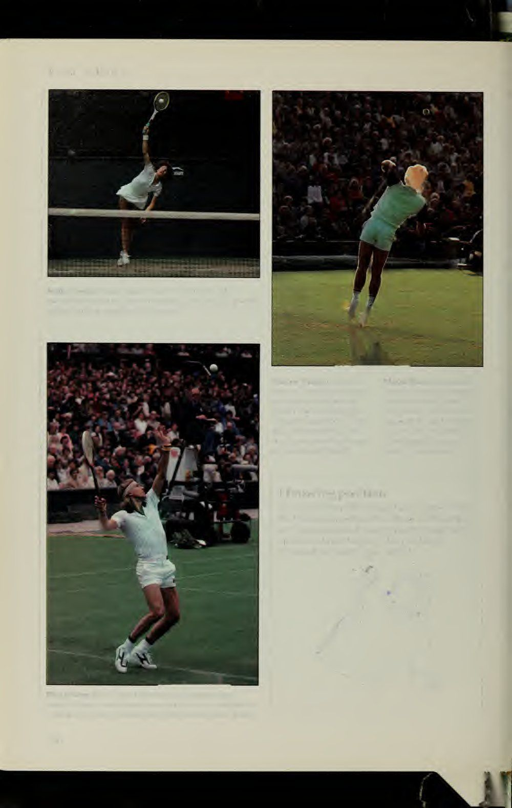
Hình 7.2: Cơ học cú đập Smash hủy diệt trên lưới — Dùng tay trái chỉ bóng định vị mục tiêu.
Figure 7.2: Overhead Smash Mechanics: Non-Hitting Hand Tracking the Ball.
Quả bóng phải ở phía trước bạn và chếch về bên phải một chút.
Động tác bằng chân Để đánh bóng thành công, bạn phải đứng ở vị trí chính xác, phía sau và phía dưới nơi bạn nghĩ bóng có khả năng rơi.
Mav này thường yêu cầu bạn di chuyển lùi nhanh sau khi rẽ sang hướng bóng.
Hai loại động tác bằng chân sẽ cho phép bạn thực hiện điều này trong khi giữ vị trí sóng bên của bạn.
Đây là động tác bước ngang và bước chéo chân, được minh họa bên phải.
Động tác bằng chân chéo, ngoài cùng bên phải, mang lại chuyển động liên tục hơn.
Động tác bước ngang Sử dụng các động tác bước ngang được hiển thị ở trên để giúp bạn giữ đúng tư thế bước sang một bên.
Động tác bắt chéo chân Bắt chéo chân gần lưới nhất ở phía trước bàn chân sau của bạn trước khi lùi lại bằng chân sau.
Luyện tập cho riêng mình Mặc dù việc có một người cùng tập lốp bóng cho bạn sẽ thực tế hơn, nhưng bạn vẫn có thể tự mình thực hiện một số việc đáng giá.
Đặt các hộp bóng hoặc tấm che đầu vợt ngay bên trong đường cuối sân và ở các góc của sân;
sau đó, với một rổ bóng trong tay, hãy đứng ở vị trí giữa sân phía bên kia lưới.
Lấy từng quả bóng một và chỉ cần đánh nó lên không trung bằng vợt của bạn.
Hãy ném nó lên trước mặt bạn và đủ cao để bạn có thời gian chuẩn bị.
Trước tiên, hãy tập đánh những quả bóng dễ này, nhắm sâu vào tâm và các góc của đường biên xa.
Bv lưu ý có bao nhiêu cú đập nảy giữa đường giao bóng và vạch cuối sân (baseline) và bao nhiêu cú đập đủ chính xác để đánh vào các ô đã định vị trước đó của bạn, bạn có thể theo dõi tiến trình của chính mình.
Thực hiện theo điều này bằng cách ném quả bóng lên sang trái và phải nhưng vẫn ở phía trước bạn, để việc di chuyển đến quả bóng trở thành một phần thiết yếu trong quá trình chuẩn bị của bạn.
Vì những khó khăn trong việc cung cấp bóng cho bạn để đập, tốt nhất bạn nên có một đối tác hỗ trợ bạn với kiểu đập khó hơn này.
Tuy nhiên, bạn cũng có thể sử dụng máy tạo bóng như minh họa bên phải.
E 1 Ballmachines Máy đánh bóng lý tưởng để thực hành tất cả các cú đánh của bạn mà không cần có người tập cùng vì chúng có thể được điều chỉnh để đưa bóng từ các độ cao và tốc độ khác nhau để mô phỏng các điều kiện thi đấu.
Mô hình hiển thị bên phải có khả năng đẩy 150 quả bóng lên tới tốc độ 85 dặm/giờ.
Một phễu được gắn vào thân chính của máy, bao gồm một động cơ điện và buồng nén, sau đó được gắn vào một thùng dài hẹp.
Phễu đưa bi vào bodv chính của máy, tại đó khí nén được giải phóng và đẩy bi lên thùng.
Nòng súng có thể được điều chỉnh ở nhiều vị trí khác nhau tùy theo chiều cao mong muốn của quả bóng.
Trong sơ đồ, phía trên bên phải, nó được điều chỉnh để cung cấp các thùy; phía dưới bên phải, để cung cấp các ổ đĩa.
Tốc độ đẩy bóng ra khỏi máy có thể được điều chỉnh bằng cách trượt "ống" xuống thùng.
Việc đóng các lỗ thông hơi trong thùng theo cách này sẽ khiến khí nén hoạt động hiệu quả hơn, tác dụng nhiều lực hơn vào quả bóng và khiến nó di chuyển nhanh hơn.
Ngược lại, lỗ thông hơi càng mở thì bóng sẽ di chuyển càng chậm.
Nếu cần những quả bóng thực sự chậm, thùng có thể được tháo ra khỏi máy hoàn toàn.
Bóng cũng có thể được đưa ra đều đặn hoặc ngẫu nhiên theo yêu cầu.
Điều quan trọng là luôn sử dụng bóng mới khi vận hành máy bi, vì những quả bóng bị mòn sẽ không được đẩy đi ổn định.
BASICSMASH Luyện tập với người cùng tập Sẽ dễ dàng và hữu ích hơn nhiều khi thực hành cú đập với một người cùng tập hơn là luyện tập một mình.
Yêu cầu đối tác của bạn đứng ở đầu bên kia của sân và lốp bóng lên để bạn đập.
Khi đối tác của bạn lốp bóng, bóng sẽ có thói quen xoay, di chuyển và chuẩn bị vợt trước khi đập bóng.
Sau khi xoay người sang ngang với quả bóng, hãy chạy lùi nếu cần thiết, thực hiện động tác bỏ qua, hoặc bước sang bên, với trọng lượng dồn vào đầu bi của bàn chân.
Duy trì tư thế nghiêng của bạn trong suốt quá trình chuẩn bị.
Một số người chơi di chuyển lùi khỏi lưới bằng cách đưa chân gần lưới nhất về phía trước bằng chân sau trước khi lùi lại bằng chân sau và lặp lại quá trình.
Điều này đặc biệt tốt để duy trì vị trí nằm ngang (xem tr.164).
Yêu cầu đối tác của bạn thực hiện cú lốp bóng sâu của anh ta bằng một cú đánh ngắn qua lưới mà bạn phải nhanh chóng tiến về phía trước để thực hiện cú vô lê.
Thực hành sự kết hợp này cho đến khi bạn có thể thực hiện sáu cú đập chính xác (sử dụng các mục tiêu được đặt ngay bên trong đường biên ngang của đối thủ) mỗi cú tiếp theo bằng một cú vô lê chính xác.
Nếu bạn quan tâm đến việc cải thiện sức chịu đựng chung và thể lực phù hợp của mình, thì có một trình tự luyện tập áp lực (xem trang 255) liên quan đến bài tập cơ bản.
Yêu cầu đối tác của bạn lốp bóng này đến quả bóng khác từ đường cuối sân để bạn đập liên tục- Sau mỗi cú đập, chạy đến lưới và chạm vào dải lưới bằng vợt của bạn, hiển thị bên phải.
Đây là một bài tập rất vất vả được thiết kế để cải thiện tốc độ, sự nhanh nhẹn cũng như sức chịu đựng và nên là một phần của chương trình thể dục.
Đập không ngừng Sau mỗi cú đập, hãy chạy đến chạm vào băng lưới bằng đầu vợt của bạn.
Đối tác luyện tập của bạn phải căn thời gian cho mỗi cú lốp bóng trùng với tốc độ rút lui khỏi lưới của bạn.
Để bắt đầu, hãy giới hạn bản thân trong một loạt năm cú đập.
Sử dụng cú đập cơ bản của bạn Mặc dù cú đập là một cú đánh cực kỳ hiệu quả nhưng việc sử dụng nó bị hạn chế phần nào bởi thực tế là nó chỉ có thể được sử dụng để trả lại một cú lốp bóng.
Do đó, bất cứ khi nào có thể, hãy sử dụng lối chơi chiến thuật tích cực được thiết kế để buộc phải trả bóng.
Nơi bạn nhắm các cú đập của mình sẽ phụ thuộc phần lớn vào vị trí của bạn trên sân.
Nếu bạn đang ở khu vực giữa sân hoặc đất của người bình thường (xem trang 195), và đang chịu áp lực, cách tốt nhất của bạn là Đấm sâu vào vạch cuối sân (baseline) của đối thủ và nhắm sâu về phía vạch cuối sân (baseline) của đối thủ, sử dụng khoảng cách xa nhất để mang lại cho bạn khả năng mắc lỗi lớn nhất.
Nếu bạn ở gần lưới, bạn có thể đánh quả bóng trong tầm với của đối thủ dễ dàng hơn bằng cách thực hiện cú đập của bạn vào lề và các góc của sân.
Hãy chắc chắn rằng bạn luôn nghiêng về phía quả bóng;
nếu không, bạn có thể kéo quả bóng ra khỏi đường biên hoặc rơi vào lưới.
Angledand shortmashes
mmm « Ivan Lendl phanh bằng chân sau để chuẩn bị cho một cú đập đầu cơ bản .
Anh ta phải lùi lại từ vị trí chuyền bóng tốt để giữ bóng bị đối phương lốp bóng, và bây giờ sẽ nhấc vợt của mình vào vị trí ném khi anh ta chỉ tay trái vào quả bóng đang rơi.
Bouncesmash Như một quy tắc chung, không nên để một cú ném bóng trước khi đánh nó: bằng cách chạy xa hơn về phía sau để chơi nó, bạn sẽ cho đối thủ thêm thời gian để định vị bản thân.
Tuy nhiên, bạn sẽ phải đối mặt với những tình huống trong đó việc để quả bóng nảy lên trước sẽ có ý nghĩa hơn nhiều.
Ví dụ như những cú lốp bóng rất cao, hạ xuống gần như thẳng đứng và khi thực hiện cú đánh, ngay khi bạn biết sắp có một cú lốp bóng cao, hãy xoay người và chạy lùi nhanh để theo sau quả bóng trước khi nó nảy lên, với phần bên của bạn hướng vào lưới.
Chỉ tay trái của bạn và chuẩn bị vợt của bạn với một cú giật dây ngắn khi bóng nảy lên.
có thể yêu cầu định vị cẩn thận và căn thời gian hết sức cẩn thận, đồng thời các cú lốp bóng được chơi trong điều kiện có gió rất khó xếp thành hàng khi chúng rơi.
Khi chơi kiểu đập này, hãy định vị bản thân từ rất sớm, lùi về phía sau cú nảy để bất kỳ điều chỉnh nào bạn phải thực hiện đều là điều chỉnh về phía trước.
Sử dụng tay trái hướng lên trên để hỗ trợ phán đoán và giữ thăng bằng, thả đầu vợt vào vị trí ném.
Đánh bóng sao cho mặt đầy đủ của dây chạm vào mặt sau của quả bóng theo chiều dài toàn bộ cánh tay vợt.
1 Khi bóng cao đi lên, hãy chạy nhanh về phía sau và bám theo phía sau quả bóng trước khi nó nảy lên.
Vị trí của bạn với mặt của bạn trên lưới.
Hình dạng của cú đánh Đường bay của bóng sẽ thay đổi tùy theo kiểu lốp bóng mà bạn trả về và kiểu đập bóng mà bạn sử dụng. Khi đập bóng sau khi nảy từ vị trí sâu, bạn có thể sẽ đánh nó ở độ cao thấp hơn so với khi đập bóng ở sân trước và mục tiêu cơ bản của bạn sẽ là đưa bóng vào lưới.
Để đạt được điều này, bạn sẽ phải áp dụng một số cách kiểm soát xoáy lên cho quả bóng (xem cú giao bóng xoáy lên, trang 106) đối với quỹ đạo hình hướng.
.'-" - '- 2 Chuẩn bị cho cú đánh theo cách tương tự như đối với các động tác cơ bản, ném vợt bằng tay hướng lên trên để gặp mặt sau của bóng.
3 Thực hiện cú đánh theo sau quả bóng bằng vợt khi chân phải của bạn vung qua.
Vợt phải kết thúc qua chân trái của bạn.
Đập vỡ một cú lốp ngắn Đôi khi, đối thủ của bạn có thể đánh trong thời gian rất ngắn để định vị.
Đập quả bóng vào vị trí mà bạn không thể chạm tới trước khi rơi xuống thật mạnh và không quay để khiến nó nảy lên.
Trong những trường hợp này, tốt nhất là bạn nên để bóng ở mức rất cao, gây khó khăn cho đối thủ của bạn khi bóng nảy lên trước khi đập nó, để bạn trả lại như minh họa bên dưới.
X ft /J> Q J> «- u Do ^^& ^^ l>0& ^ ^r(7 $ II II M Luyện tập với các đối tác Luyện tập bất kỳ trò chơi nào của riêng bạn sẽ không được hài lòng cho lắm trừ khi bạn có một chiếc máy bắn bóng có thể liên tục đưa bóng để bạn đập.
Sẽ tốt hơn nhiều nếu thực hành đòn nảy với một đối tác.
Đặt mục tiêu ở các góc và điểm trung tâm trên vạch cuối sân (baseline) ở cuối sân.
Yêu cầu đối tác của bạn đứng ở cuối sân với một rổ bóng.
Có lẽ anh ta sẽ dễ dàng hơn khi bắt đầu bằng cách ném bóng, vì các cú lốp bóng đôi khi khó đặt đúng vị trí và sau đó mới tiến tới các cú lốp bóng xoáy xuống.
Đập bóng, nhắm vào các mục tiêu bạn đã đặt trên sân và cố gắng trở lại vị trí sẵn sàng bắt cú vô-lê (cách lưới khoảng 6-10 feet) giữa các cú đánh.
Trình tự chơi đập thùy phù hợp với nhiều tình huống thực hành trong trò chơi.
Lập nhóm với đối tác luyện tập thường xuyên của bạn với hai người chơi khác có khả năng tương tự để chơi theo trình tự cạnh tranh sau.
Một cặp bắt đầu trên lưới, với cặp còn lại ở cuối sân. Một vận động viên ném bóng đưa bóng về phía các cầu thủ lưới, một trong số họ thực hiện cú vô lê sâu.
Trận đấu bây giờ là để tính điểm khi các cầu thủ cuối sân cố gắng lốp bóng qua các cầu thủ lưới.
Nếu các cầu thủ lưới phải chạy lùi để thực hiện các cú đập bóng hoặc lốp bóng nảy, họ phải lùi lại và đảm nhận vai trò lốp bóng trong khi các cầu thủ cuối sân di chuyển lên để đảm nhận vai trò đập bóng.
Chơi đến một số điểm cố định trước khi đội đối phương bắt đầu "bộ" mới bằng cách lái xe một lần nữa.
Sử dụng cú đập nảy của bạn Cũng như khi chơi những cú đập khác, điều quan trọng là khi đánh cú đập nảy, điều quan trọng là phải đánh một cách dứt khoát.
Cú đập nảy sẽ được sử dụng tốt nhất khi trả lại những quả bóng rất cao rơi theo chiều dọc, vì đây là những quả khó nhất để căn thời gian chính xác.
Sau khi chơi nảy, đập sâu di chuyển nhanh về phía trước để giành được vị trí lưới.
Bạn phải cố gắng hết sức để không bị mất thế chủ động, điều này có thể xảy ra nếu bạn đập nhẹ và lùi lại.
Nếu cú lốp bóng tiếp đất tốt ở phần sân trước của bạn, về mặt chiến thuật, tốt hơn là nên thực hiện cú lốp bóng nhanh bằng một cú đập sâu ở giữa hoặc vào các góc hơn là mạo hiểm ở một góc nhọn hoặc một cú đập nhẹ.
Người chiến thắng được định trước BDeep đã đánh bại sự trở lại
Jumpsmash Ngoài việc cho phép những người chơi thấp hơn vượt qua khả năng thiếu tầm với của họ, jumpsmash có thể đặc biệt hiệu quả trước những cú lốp bóng bất ngờ hoặc sâu mà nếu không sẽ tụt lại phía sau bạn và không bật lên sau khi bật lên.
Ưu điểm chiến thuật chính của nó là khó khăn để người nhận đánh giá được ý định của bạn.
Đặc điểm của cú đánh này là chuyển động của chân giống như chiếc kéo khi người chơi nhảy lên không trung để đập bóng.
Đánh bóng từ xa hơn tầm với bình thường của bạn sẽ tăng sức mạnh và góc đánh.
Sử dụng cú đánh một cách dứt khoát, thực hiện cú đánh ở nơi dễ dàng giành điểm nhất.
Sự tỉnh táo, tốc độ và khả năng thể dục là những điều kiện tiên quyết của cú nhảy, vì vậy, nếu bạn muốn cú đánh này trở thành một phần thiết yếu của trò chơi đánh đầu trên cao của mình, hãy tập chạy lùi nhanh, sang ngang và nhảy cao bằng chân sau để thực hiện những cú đập tưởng tượng.
Cải thiện cú đánh của bạn Các yếu tố chính của cú nhảy là động tác bằng chân và động tác vợt.
Di chuyển nhanh về vị trí của bạn phía sau quả bóng, sử dụng động tác nhảy bước hoặc chéo chân để giúp bạn duy trì tư thế nghiêng của bạn và bắt đầu hướng và chuẩn bị vợt với tốc độ gió rút ngắn.
Thời gian bạn nhảy khỏi chân sau, đẩy mạnh lên khi đầu gối của bạn duỗi thẳng.
Khi bạn ném đầu vợt lên để gặp bóng, chân sau của bạn phải bắt chéo qua chân trước theo kiểu cắt kéo.
Đạt đủ chiều cao để có thể đánh lên và vượt qua quả bóng.
Sau khi tiếp đất, vợt của bạn phải tiếp đất giống như đối với cú đập cơ bản khi bạn tiếp đất bằng chân trái.
Thực hiện cú nhảy Nhảy lên không trung bằng chân phải, duỗi thẳng đầu gối phải khi trọng lượng của bạn bị đẩy lên không trung.
Đưa chân phải của bạn ra phía trước chân trái của bạn theo động tác giống như cái kéo khi bạn ném đầu vợt lên trên để đón bóng.
Sau khi đánh bóng, bạn sút bóng bằng chân trái.
A Chuẩn bị Đối với cú đập bóng cơ bản, hãy phanh bằng chân phải khi bạn đặt vợt vào vị trí ném.
Luyện tập với người khác Bạn có thể thực hành động tác nhảy đập với một đối tác, bằng cách khiến anh ta đánh được quả lốp bóng sâu không quá cao và điều này sẽ buộc bạn phải chạy lùi trước khi nhảy cao lên khỏi mặt đất để chạm bóng trước khi nó có thể rơi xuống phía sau bạn.
Thực hành đập B Hittingzone Nhảy khi bạn ném vợt hướng lên trên để gặp bóng phía trên và ngay phía trước bạn, với tay vợt duỗi thẳng.
C Thực hiện theo Followthrough khi bạn tiếp đất bằng chân trái.
Bàn chân phải của bạn sẽ lại tiến về phía trước.
nhắm sâu vào các mục tiêu được đặt gần đường biên, di chuyển nhanh lên sân lần nữa và lấy lại vị trí chuyền bóng bình thường giữa mỗi cú đánh.
Bạn cũng có thể thấy bài tập nhảy thẳng đứng hữu ích (xem trang 256).
Jimmy Connors phải bật cao để đập một quả bóng bay sâu về phía cuối sân.
Mặc dù di chuyển trở lại từ lưới một cách nhanh chóng, vận động viên Connors nhận ra rằng, nếu không chạm vào, quả bóng sẽ đánh bại anh ta.
Sau khi nhảy lên và lùi lại để chuẩn bị cho cú đánh, chuyển động về phía trước của vợt và phần thân trên của anh ta giờ đây sẽ cân bằng với hai chân của anh ta.
Angledsmash Mặc dù kỹ thuật đập góc tương tự như kỹ thuật của cú đập cơ bản trong quá trình chuẩn bị và tiếp theo, nhưng khi thực hiện cú đập góc, xoáy ngang được áp dụng cho bóng rất giống với khi thực hiện giao bóng cắt.
Có thể thực hiện một cú đập theo góc bằng cách chỉ cần sử dụng kỹ thuật đập cơ bản, nhưng bạn có thể đạt được mức độ góc lớn hơn nhiều bằng cách sử dụng kỹ thuật giao bóng cắt lát.
Cho dù bạn đang đập bóng- Thực hiện cú đánh Giữ vợt với cách cầm giao bóng bình thường và giữ mặt của bạn sát lưới, hãy vào vị trí thực hiện một cú giao bóng cắt và để vợt của bạn rơi vào vị trí ném.
Để bên phải của bạn hơi cong khi trọng lượng của bạn di chuyển về phía trước qua bàn chân trước của bạn và ném vợt của bạn trước hoặc sau khi nảy lên, hãy giữ tư thế sao cho quả bóng rơi hơi chếch về bên phải cũng như phía trước bạn.
Đánh xung quanh mép ngoài của quả bóng.
Mặc dù bạn có thể sẽ phải hy sinh một số tốc độ khi sử dụng kỹ thuật này, nhưng xoáy ngang sẽ mang lại khả năng kiểm soát tốt hơn và bóng sẽ xuyên qua và ở mức thấp sau khi nảy lên.
Xoáy ngang sẽ làm cho bóng đổi hướng từ phải sang trái, tăng góc đánh.
gần như hướng về phía trước quả bóng và hơi chếch về bên phải cơ thể bạn.
Các dây vợt sẽ quấn quanh mép ngoài của quả bóng khi áp dụng lát cắt, tạo góc cho quả bóng sâu khắp sân.
Hãy để vợt của bạn kết thúc ở phía dưới chân trái của bạn.
1 Nằm nghiêng về phía lưới, định vị mình trong tư thế thực hiện cú giao bóng, với bàn chân cách xa nhau và đầu gối hơi cong.
2 Chỉ vào bóng bằng tay trái khi bạn thực hiện điều chỉnh chân cuối cùng.
Vợt vào vị trí ném.
3 Hãy để tay trái của bạn rơi ra khi bạn ném đầu vợt lên trên sao cho dây chạm vào mép ngoài của quả bóng.
4 Hãy để vợt của bạn đi theo quả bóng khi chân phải của bạn vung về phía trước.
Vợt kết thúc qua chân trái của bạn.
Cải thiện cú đánh của bạn Vị trí cơ thể đúng luôn là điều quan trọng nếu muốn thực hiện một cú đánh chính xác. Khi thực hiện cú đập góc, bên của bạn phải quay mặt vào lưới, ở vị trí như khi thực hiện cú giao bóng cắt.
Quả bóng sẽ rơi về phía trước và hơi chếch sang bên phải cơ thể bạn.
Tuy nhiên, có lẽ khía cạnh quan trọng nhất của cú đập góc và là khía cạnh cần luyện tập nhiều nhất là góc của mặt vợt khi tiếp xúc với bóng.
Việc đưa mặt vợt xung quanh mép ngoài của quả bóng vào đúng thời điểm và ở góc mong muốn là rất quan trọng.
Các dây vợt phải di chuyển xung quanh mép ngoài của quả bóng giống như đối với cú giao bóng cắt.
Kết quả là xoáy ngang sẽ tạo góc cho bóng chéo sân.
Luyện tập với các đối tác Chọn vị trí chuyền bóng ở giữa sân và để đối tác của bạn đứng ở cuối sân đối diện và đánh lốp bóng về bên phải, để bạn có thể thực hành đánh các cú đập góc về phía bên phải của anh ta.
Hướng cú đập của bạn sâu, giữa giao bóng và đường biên của anh ta, đảm bảo rằng bạn trở nên thành thạo trong việc này trước khi cố gắng thực hành những cú đập góc nhọn hơn vào phần sân trước của đối tác.
Kiểu đập bóng góc cạnh này, đánh từ sân bên phải sang sân bên phải, cũng có thể được thực hiện với những cú lốp bóng cao hơn và sâu hơn như cú đập bóng nảy.
Luôn nhắm tới các mục tiêu được đặt ở vị trí chiến lược khi thực hành cú đập góc.
Thực hành 10 cú đập liên tiếp để có độ sâu và chính xác, sau đó thực hiện 10 cú lốp bóng để đối tác của bạn thực hành cú đập của mình.
Với bốn người chơi trên sân thực hành các cú đập bóng cơ bản và góc cạnh từ sân trước bằng cách tự sắp xếp, như minh họa bên phải.
Mỗi người chơi cơ bản phải ném bóng vào lưới đối phương, người phải đập vỡ.
Nếu anh ta bị đánh, đối tác cơ bản của anh ta phải lốp bóng đối phương, v.v.
E 1 Sử dụng cú đập góc của bạn Sử dụng cú đập góc đối với các quả bóng đang rơi hoặc nảy gần đường biên bên phải: hành động cắt lát sẽ đưa đối thủ ra khỏi sân về phía bên phải của anh ta, buộc phải trả lời lốp bóng yếu hơn, điều này có thể dễ dàng xử lý.
Bạn cũng có thể sử dụng nó để đánh những quả bóng cao dễ dàng trên lưới miễn là bạn không cố gắng thực hiện cú đánh góc quá sắc bén.
Nếu đối thủ của bạn trả lại cú đập phẳng, sâu của bạn bằng một cú lốp bóng ngắn, hãy chơi một cú đập góc.
L Những cú đập góc 3/4 sân Halfand Những cú đập góc sắc nét hơn có thể là một câu trả lời hữu ích cho một cú lốp bóng phòng thủ kém từ đối thủ của bạn.
Cú đập trái tay Cú đập trái tay khó hơn và ít mang tính quyết định hơn cú đập thuận tay.
Hầu hết người chơi đều tránh nó khi có thể, vì những khó khăn kỹ thuật liên quan đến việc tạo ra tốc độ đầu vợt cần thiết tương đương với một cú búng cổ tay.
Việc kiểm soát góc mặt vợt và căn thời gian vung vợt trái tay để tạo ra lực đòi hỏi một mức độ sức mạnh của cổ tay và cánh tay mà ít người chơi có được.
Bạn nên luôn cố gắng đánh qua đầu từ phía thuận tay.
Tuy nhiên, bạn có thể Cải thiện cú đánh của mình Khi bóng được lốp bóng qua vai trái của bạn, hãy xoay người sang trái, hướng đầu vợt xuống và khuỷu tay đánh bóng của bạn hướng lên trên quả bóng.
Ở giai đoạn này, đầu gối trái của bạn phải hơi cong và trọng lượng của bạn đặt trên đó, sẵn sàng phóng lên ngay trước khi đánh bóng.
Cho dù bạn có nhảy trước khi đánh bóng hay không, lưng của bạn thực tế phải hướng vào lưới.
Duỗi thẳng cánh tay vợt của bạn, bẻ cổ tay về phía trước để đạt được tốc độ đầu vợt tối đa, tiếp xúc quả bóng phía trên và hơi ở phía trước vai đánh của bạn.
Hãy để cổ tay về phía trước của bạn tiếp tục chuyển động theo hướng tiếp theo, với đầu vợt của bạn hướng xuống phía trước bạn khi có dụng cụ hỗ trợ chân trước phục hồiv.
Chuẩn bị Nếu bạn buộc phải thực hiện cú đập trái tay khó, hãy đảm bảo rằng vai phải của bạn xoay tốt về phía bóng.
Điều này sẽ cho bạn khoảng trống để vung vợt lên trên và qua quả bóng.
Đầu vợt của bạn phải hướng xuống và cung vợt của bạn hướng lên trên quả bóng.
thấy mình ở trong một tình huống buộc phải chơi một quả bóng không đủ thấp để đánh một cú vô lê trái tay cao, chắc chắn, không đủ cao để cho phép các chuyển động nhanh để có thể sử dụng hành động thuận tay trên cao nguy hiểm hơn.
Nếu bạn thực hiện cú đánh, hãy sử dụng cách cầm vợt Continental, giữ cổ tay linh hoạt và đảm bảo rằng vai phải của bạn xoay tốt về phía bóng (xem bên dưới) để có đủ chỗ để vung vợt.
A Vùng đánh bóng Bóng ở trên và hơi ở phía trước vai đánh.
Duỗi thẳng tay cầm vợt và búng cổ tay về phía trước để tăng thêm tốc độ.
B Theo hướng vợt đi theo hướng xuống dưới và cuối cùng phải hướng xuống sân khi chân phải của bạn đi qua để giữ thăng bằng.
Luyện tập với một đối tác Bạn có thể thực hành cú đập trái tay một cách thực tế nhất với một đối tác.
Yêu cầu anh ta đứng ở cuối sân và đưa bóng cho bạn đập.
Ban đầu, anh ta có thể dễ dàng ném bóng dưới cánh tay qua vai trái của bạn hơn cho đến khi bạn có cảm giác hợp lý về cú đánh.
Đối tác của bạn sau đó có thể đánh thùy của bạn.
Đặc biệt tập trung vào việc xoay vai về phía bóng sao cho lưng của bạn gần như hướng vào lưới.
Bạn có thể thấy việc nhảy lên không trung để đánh bóng sẽ dễ dàng hơn, trong trường hợp đó hãy tập nhảy và đập bóng cùng lúc, nhắm đến nhịp điệu và thời điểm.
Hãy nhớ giữ cho cổ tay và khuỷu tay của bạn thư giãn và linh hoạt để bạn có thể thực sự búng mạnh cẳng tay, đưa vợt lên và qua bóng.
Sử dụng cú đập trái tay của bạn Tránh cú đập trái tay bất cứ khi nào có thể.
Nếu bạn phải sử dụng nó trong trận đấu, hãy làm theo các nguyên tắc tương tự như đối với cách chơi thông thường trên cao.
Nếu bạn ở xung quanh khu vực giữa sân nhưng về phía đường biên trái tay của bạn, hãy nhắm vào độ sâu khi đập bóng.
Nếu bạn ở gần lưới hơn, hãy cố gắng đánh cú đập trái tay của bạn ở một góc.
Với việc luyện tập, bạn sẽ có thể đạt được kết quả tốt đáng ngạc nhiên bằng cách kết hợp động tác cúi cổ tay của mình để tạo ra một cú đập chính xác.
Lượng sức mạnh bạn có thể tạo ra sẽ hoàn toàn được quyết định bởi sức mạnh của cổ tay và cẳng tay của bạn.
Vì rất khó để tạo ra sức mạnh khi đánh trái tay nên có lẽ tốt hơn nên tập trung vào độ chính xác hơn là bất cứ điều gì khác.
Nói chung, hãy nhắm cú đập trái tay của bạn vào điểm yếu trong trò chơi của đối thủ, buộc bạn phải trả bóng yếu mà sau đó bạn có thể dễ dàng giải quyết.
A Cú đập góc B Deepsmash / Stjn Smith nhảy lên để đập một quả bóng được lốp bóng qua vai trái hi*.
Anh ấy đã xoay người sang trái, xoay hoàn toàn về phía lưới và chuẩn bị vợt theo phong cách cổ điển với khuỷu tay cong và cổ tay thoải mái.
Anh ấy đã sử dụng khuỷu tay chơi của mình để hỗ trợ việc định vị và giờ đây nó giúp đánh giá độ dốc của bóng khi anh ấy rời khỏi mặt đất để tấn công bóng một cách mạnh mẽ.
Chất lượng chuẩn bị này sẽ tạo ra sức mạnh tối đa.
Windmillsmash Giống như cú đập trái tay, cú đánh này hiếm khi được lựa chọn.
Bạn có nhiều khả năng chơi nó nhất nếu bạn bị bắt bởi một cú lốp bóng bất ngờ mà bạn đã quá muộn để chơi một cú đập bóng, bởi vì quả bóng đã ở phía sau bạn và sẽ không có thời gian để chạy lại và chơi nó sau khi nảy lên.
Việc chuẩn bị cho cú đánh giống như một cú giao bóng hơn là một cú đập bóng, nhưng với cánh tay vợt duỗi thẳng khi kết thúc cú trả bóng.
Quả bóng gần như bị bắt sau tấm ván và bay qua lưới.
Rất khó để tạo ra lực với cú đánh này do chuyển động của cánh tay bị cứng, nhưng có thể có những lúc bạn phải thử cú đánh hoặc mất điểm, vì vậy nó vẫn đáng luyện tập.
Người tiêu biểu nhất cho cú đánh này là Jaro-slavDrobny, nhà vô địch Wimbledon 1954.
Cải thiện cú đánh của bạn Các yếu tố chính của cú đập cối xay gió là sự chuẩn bị và vùng đánh.
Có lẽ bạn đã chạy lại để đập quả bóng ở vị trí nghiêng và nhận ra rằng bạn đã quá muộn để đánh nó bằng một cú bật nhảy hoặc một cú đập nảy.
Bạn phải cho phép vợt của bạn vung ra và lùi lại, với cánh tay đánh thẳng, bên dưới quả bóng đang rơi. Nhảy khỏi chân sau, bạn hầu như bắt được quả bóng ở dây ngay phía trên vai của bạn và đánh nó bằng một cánh tay thẳng, qua đầu và quay trở lại sân đối phương.
Sau đó hạ xuống bằng chân trái, để vợt tiếp tục đi qua phía bên trái của cơ thể.
Cú nhảy Sau khi thu lại vợt rộng, lấy đà bằng cách nhảy khỏi chân phải, thực hiện chuyển động giống như hình cắt kéo trên không và hạ xuống bằng chân trái.
A Chuẩn bị Hãy để vợt của bạn vung về phía sau với cánh tay cầm vợt của bạn thẳng, đưa nó vào bên dưới quả bóng đang rơi.
B Vùng đánh Khi bạn nhảy bằng chân sau, bắt bóng trên dây ngay phía trên vai thi đấu của bạn.
Theo sau vợt của bạn phải tiếp tục đi xuống qua chân trái của bạn khi bạn hạ xuống bằng chân trước.
Sử dụng cú đập cối xay gió của bạn Cú đánh này có thể có yếu tố chiến thuật bất ngờ vì khi quả bóng rơi quá tầm với của bạn, về mặt lý thuyết, đối thủ của bạn sẽ không được chuẩn bị cho bất kỳ hình thức trả bóng hiệu quả nào.
Điều này sẽ khiến anh ta không nhận thức được và có thể khiến anh ta mất vị trí, vì vậy hãy đặt cối xay gió của bạn đập vỡ để đạt hiệu quả tối đa.
Thời điểm và vị trí là những điểm chính cần lưu ý: luôn nhắm sâu vào vạch cuối sân (baseline) của đối thủ để tiến về phía trước để giành thế chủ động bất cứ khi nào bạn có thể.
Đang phát triển phong cách:lái bóng EvonneCawley thể hiện cách sử dụng chiến thuật của cú lốp bóng cơ bản khi một cầu thủ bị kéo ra xa khu vực thi đấu trong trận đấu cơ bản.
Cô ấy đã bước acn >^s, rất cân đối, để thực hiện một cú thùy sâu cơ bản khắp sân.
Điều này mang lại cho cô ấy khả năng sai sót tối đa, cMm\ cũng có thời gian để lấy lại vị trí ban đầu trước khi đối thủ có thể trả lời.
Các cầu thủ nữ có xu hướng sử dụng cú lốp bóng cơ bản, với mức độ xoáy lên nhỏ, để ngăn cản việc tiến lên lưới và để phá vỡ các pha đánh bóng cơ bản.
Đàn ông có lẽ có thể sử dụng nhiều hơn cách đánh hiệu quả này.
Basiclob Chừng nào người chơi còn tìm cách sử dụng một trò chơi tấn công giao bóng và vô lê chống lại đối thủ của họ, cú lốp bóng sẽ tiếp tục phát triển mạnh mẽ trong lối chơi trong trận đấu như một cách phòng thủ tối ưu.
Nhưng vì vận động viên quần vợt hiện đại đã phát triển khỏe hơn và cao hơn so với đối thủ trước đó của anh ta nên cú lốp bóng không còn là cơ sở cho trò chơi của người chơi nữa. Làm thế nào, ở đâu và khi nào để sử dụng cú lốp bóng để đạt hiệu quả tốt nhất do đó đã trở thành một khía cạnh quan trọng của trận đấu.
Các cầu thủ hàng đầu ngày nay sử dụng cú lốp bóng để gây bất ngờ cho đối thủ bằng cách lốp bóng vào những thời điểm họ có thể thực hiện những cú đánh khác và có nhiều khả năng hơn.
Biết khi nào nên lốp bóng là một nghệ thuật mà bạn sẽ học được chủ yếu từ kinh nghiệm thi đấu.
Sue Barker tung ra một cú lốp bóng thuận tay cơ bản cao từ phía sau đường biên ngang của cô ấy.
Chịu áp lực trên diện rộng, cô ấy chống lại cuộc tấn công của đối thủ bằng một pha phòng thủ nhưng lốp bóng được kiểm soát xuất sắc, điều này sẽ giúp cô ấy có thời gian để lấy lại vị trí vững chắc trên sân.
Mặc dù ở trên không nhưng khả năng kiểm soát và giữ thăng bằng vợt của cô ấy vẫn được duy trì.
LOBSTYLE PeterMcNamara thực hiện một cú lốp bóng trái tay chắc chắn bằng cách chặn tiền đạo và phía dưới bóng để làm chệch hướng nó từ độ cao trên thắt lưng trước một quả bóng có độ nảy cao.
mạnh mẽ, và có lẽ đã vượt qua đối thủ McNamara đã áp dụng kỹ thuật vô lê cơ bản của mình bằng hành động tích cực của mình.
Topspinlob Mặc dù những người chơi ném bóng có cổ tay tự do có xu hướng lên đỉnh - tay vợt phương TâyManuelSantana sở hữu khả năng xoay bóng của họ thường xuyên hơn một trong những nhà tạo mẫu thuận tay có cổ tay xoáy lên hiệu quả nhất, topspinlobbing isby thùy.
Đường bay lừa đảo của cú đánh và các ý nghĩa khó bị giới hạn trong số mũ của độ nảy vừa phải tạo ra vấn đề đối với bất kỳ phong cách chơi tấn công kiểu phương Đông và lục địa thống nhất nào, đối thủ ở vị trí trên lưới.
Rod Laver thực hiện một cú lốp bóng thuận tay xoáy từ trên xuống từ vạch cuối sân, thực hiện cú giao bóng bất ngờ trước một cầu thủ giao bóng và chuyền bóng tấn công.
Anh ấy duỗi thẳng chân khi kết thúc ở vị trí cao và phía trên vai phải với mặt vợt hơi khép lại.
Jimmy Connors, được kéo rộng và sâu về phía thuận tay của mình, bước ngang rất tốt để tạo ra một cú lốp bóng xoáy từ trên cổ tay chắc chắn hơn cú lốp bóng của Laver.
Connors giống như một cú đánh hơn là một hành động như roi da.
Khi vợt kết thúc, mặt vẫn mở.
Trọng lượng của ai đó đã được chuyển vào cú đánh.
LOBSTYLE Underspinlob Đường xoáy dưới và lốp cắt ngang có thể tạo thành một rào cản gần như không thể xuyên thủng đối với người chơi giao bóng và chuyền bóng liên tục.
Chúng được thực hiện dễ dàng và sử dụng ít năng lượng, chủ yếu dựa vào tốc độ bắn của đối thủ để lấy sức mạnh.
Góc mặt vợt và khả năng kiểm soát đầu vợt tốt từ cách cầm vợt nhạy cảm đều rất quan trọng khi kiểm soát các đường bóng xoáy xuống của bạn. Những người chơi hàng đầu đôi khi giới thiệu những đường bóng này để đa dạng cũng như trong phòng thủ.
Raul Ramirez thực hiện cú lốp bóng xoáy xuống ở vị trí sân sau bên trái.
Cổ tay và góc mặt vợt cho thấy rằng cú đánh cũng đã áp dụng lát cắt bên trong vào bóng. Bước dương ngang bằng bàn chân trước đã tạo ra một nền tảng đánh âm thanh giúp giữ thăng bằng tốt trong suốt cú đánh tinh tế này.
UXDERSPIXLOB BillieJeanKing chơi một cú lốp bóng xoáy xuống với lát cắt bên trong để hỗ trợ kiểm soát độ cao và hướng.
Cô ấy vẫn đang nhìn vào điểm tiếp xúc ở phía trước vợt chân phải của mình và di chuyển vào vị trí tiếp theo sau khi đánh bóng.
Phong cách cải tiến Sơ đồ dưới đây cho thấy đường vợt cong của cú lốp bóng xoáy dưới đã được sửa đổi của BillieJean King.
Với sự chuẩn bị cao, vợt đã được hạ xuống sao cho các dây kéo xuống phía dưới và ngang qua mặt sau của quả bóng.
Guillermo Vilas căng ra ngoài đường biên bên trái của anh ấy để thực hiện một pha trả lời phòng thủ lốp xoáy dưới.
Bị bắt gặp bất ngờ , anh ấy sút bóng bằng chân gần nhất bằng chân còn lại để giữ thăng bằng.
Bóng gần như đã đi qua nhưng sẽ chỉ có thời gian để chơi nhẹ về phía trước và dưới bóng.
PHONG CÁCH LOB Lobbed-half-volley Lobbed nửa-volley được thực hiện bởi những người chơi mạo hiểm, giàu trí tưởng tượng và đôi khi là liều lĩnh.
Việc căn thời điểm hoàn hảo và những ý định được ngụy trang khéo léo sẽ rất quan trọng nếu cú đánh được thực hiện thành công và tạo ra một chiến thuật tốt.
Giống như cú vô lê một nửa, bạn thường không chọn thực hiện cú đánh này.
Một khi đã cam kết với nó, hãy chơi nó với sự cân nhắc và có mục đích.
Nó được sử dụng để đánh lừa một cầu thủ trên lưới có vị trí tốt - hoặc những cầu thủ - khi khó chuyền bóng.
Nếu bạn không đo chiều cao và chiều sâu một cách chính xác, kết quả sẽ dễ dàng trở thành con mồi cho đối thủ đang thực hiện cú vô lê.
Nhưng khi có rất ít cơ hội thành công với các cú đánh khác, những tay vợt đẳng cấp hàng đầu đã cho thấy lý do tại sao cú vô lê nửa lốp lại đáng để thử.
Hie Nastase thực hiện một cú lốp bóng bằng nửa chân ở gần bóng hơn - đây không phải là cú sút dành cho người mới bắt đầu thử.
Khi vợt hướng lên trên, chân phải của anh ta sẽ xuyên qua để anh ta tiếp tục tiến về phía lưới nếu anh ta lốp bóng thành công qua đối thủ.
Anh ấy cúi đầu thấp và quan sát thật kỹ.
Lobvolley Hiệu quả của cú vô lê lốp phụ thuộc vào độ bất ngờ, độ cao và độ sâu.
Cú vô lê xoáy lên luôn là người chiến thắng nếu nó quét sạch vợt đang căng của đối phương, vì nó sẽ bắn đi nhanh chóng sau khi bật lên.
Cú vô lê xoáy xuống ít rủi ro hơn và một số vận động viên ném bóng nhận thấy việc đánh giá chiều cao và chiều sâu chính xác với nó dễ dàng hơn.
Nó được sử dụng tốt nhất để đẩy đối thủ khỏi vị trí lưới hơn là giành điểm hoàn toàn, vì bóng có xu hướng xuất hiện sau khi bật lên, nơi mà người chơi nhanh nhẹn có thể lấy được bóng.
Pam Teeguarden, phải, thực hiện một cú vô lê bất ngờ để vượt qua đối thủ đã di chuyển quá gần vị trí lưới.
Cô ấy đang phải đối mặt với sự cân bằng lưới và vợt vừa phải.
Cú đánh này phải được đo chính xác mới có hiệu quả.
Maria Bueno hoàn thành cú lốp bóng khó bằng cú trái tay với tư thế đĩnh đạc và duyên dáng của một nữ diễn viên ba lê.
Kiểu cầm vợt kiểu Continental của cô mang lại khả năng kiểm soát tuyệt đối đối với đầu vợt và góc của mặt vợt.
Mặc dù hai chân của cô ấy gần nhau nhưng phần mở rộng của cánh tay giúp cô ấy giữ thăng bằng một cách hoàn hảo.
Đang phát triển một phong cách:đập ArthurAshe chuẩn bị cho một cú đập từ trên cao.
Vị trí ném bóng.
Anh ta kiễng chân lên và sẽ tấn công vật đang rơi ngay trước mặt mình.
Tay trái của anh ấy di chuyển bóng ra khỏi chân sau một phần, chân trái hỗ trợ anh ấy khi đầu vợt của anh ấy bắt đầu nâng lên sau một pha hồi phục rất sâu khi cô ấy theo bóng.
Cơ bảnsmash Đập sức mạnh, cả trên mặt đất và trên không, là một phần quan trọng trong bộ giáp các cú đánh của người chơi hiện đại.
Nó là sự hỗ trợ cần thiết cho tất cả các cuộc tấn công vào lưới, cho phép các cầu thủ tấn công đảm nhận các vị trí chuyền bóng mạo hiểm hơn.
Plav trên cao hiệu quả nhất quán bắt nguồn từ sự phát triển của một cú đập cơ bản hợp lý về mặt kỹ thuật.
Phong cách đập bóng phổ biến ngày nay kết hợp việc sử dụng tay cầm giao bóng theo kiểu Continental với một phiên bản rút gọn của giao bóng cơ bản để chuẩn bị nhanh cho cú đánh.
VictorAmaya thực hiện một pha hành động điển hình.
Anh ta đánh mạnh bằng chân trước, 'với trọng lượng của anh ta di chuyển về phía trước.
Cú búng tay mạnh mẽ của anh ấy đã khiến đầu vợt vượt qua quả bóng và khiến chân trái của anh ấy vung qua để giữ thăng bằng.
VirginiaWade, ngược lại, hiển thị các điều kiện tiên quyết của việc chuẩn bị sớm và định vị âm thanh tốt khi chơi trên cao.
Sự cân bằng hoàn hảo của MissWade luôn là điều mong muốn nhưng không phải lúc nào cũng có thể chơi được trong trận đấu.
Phong cách chính thống A Bóng ngắm cánh tay trái B Mắt cố địnhcmball C Đường chéo làm từ vai này sang vai D Tư thế ném sâu E Cánh tay trên vuông góc với cơ thể F Trọng lượng tư thế trên bàn chân sau U :
Jumpsmash Cú nhảy đập bóng có lẽ là biến thể được sử dụng nhiều nhất của lối chơi che đầu cơ bản. Người giao bóng và người chơi cú vô-lê có thể nhảy cao trên không có thể tấn công về nhà từ những vị trí chuyền bóng quyết liệt nhất trên sân, biết rằng chỉ những cú lốp bóng hoàn hảo nhất mới có thể gây lo ngại.
Tính cơ động và thời gian đều rất quan trọng với cú đánh này, đối với các tình huống nhảy đập bóng thường xảy ra khi người chơi phải lùi lại từ phần sân trước để thực hiện một cú lốp bóng bất ngờ.
Luyện tập thường xuyên sẽ giúp bạn thoát khỏi những tình huống khó khăn, cho phép bạn đánh những quả bóng mà bạn không thể với tới.
JohnNewcombe đã bị bắt gặp đối mặt với lưới mà không có thời gian để xoay người hay rút lui.
Sohe nhảy lên và áp dụng kỹ thuật đập bóng của mình, mở cổ tay và đặt đầu vợt ra sau.
Anh ta sẽ vuốt quả bóng từ trên không và bay ngược về phần sân đối phương.
SMASHSTYLE FrewMcMillan thực hiện một cú nhảy đập được kiểm soát tốt và đúng lúc.
Nghiên cứu cách cầm bóng hoàn hảo và hành động chính xác của cổ tay. Nhảy đúng lúc sẽ giữ bóng ở phía trước bạn, vì một khi nó rơi xuống phía sau thì rất khó để thực hiện cú trả bóng hiệu quả bằng bất kỳ lực thực sự nào.
Nhanh nhẹn Sự nhanh nhẹn là điều cần thiết cho một cuộc tấn công mạng mạnh mẽ cho phép bạn nhảy đập các đường phản công nhằm mục đích buộc bạn phải lùi lại.
A Nastase đã đưa vợt qua đầu quả bóng và đập nó xuống sân.
B Lực đẩy của thân trên cân bằng lại thân dưới một cách hoàn hảo.
C Cú đá chân sau kiểu cắt kéo là đặc điểm chính của cú đánh này.
Nastase sẽ tiếp đất ở chân bên kia, sẵn sàng tiến về phía trước một lần nữa.
Hie Nastase nhảy lên để thực hiện cú đập phá sách giáo khoa.
Anh ta di chuyển chân theo kiểu cắt kéo, đồng thời đẩy trọng lượng cơ thể lên trên - hai đặc điểm chính của cú đánh này.
Anh ấy đã đón bóng tốt ở phía trước và hành động của cổ tay anh ấy sẽ tăng thêm sức mạnh cho cú đập bóng khi anh ấy đưa bóng chính xác vào sân đối phương.
JUMPSMASH Khả năng cạnh tranh vượt trội của Tony Roche được thể hiện qua thái độ của anh ấy đối với cú lốp bóng này, khi cô ấy bật lên để thực hiện một cú đập bóng hoàn hảo.
Anh ấy kết hợp lực đẩy hướng lên trên và cú đá cắt kéo với động tác vợt tích cực và kỹ thuật cơ bản tốt.
Sự tập trung vào bóng của Roche đảm bảo cho cú sút này thành công.
ĐỈNH NHỎ Những cú đập trái tay và cối xay gió Hiếm khi có thể tạo ra bất kỳ sức mạnh lớn nào khi thực hiện cú đập trái tay hoặc cú đập cối xay gió.
Người chơi cố gắng tránh những cú đánh này để tập trung vào cú đập cơ bản và biến thể nhảy.
Đối thủ cố tình lốp bóng qua vai không chơi của bạn để tạo ra một cú đập trái tay yếu, để họ có thể chạm nhầm chân bạn hoặc tấn công phía đối diện sân của bạn.
Các yếu tố cần thiết chính của cú đập trái tay là sức mạnh của cổ tay, cánh tay và vai, cộng với việc căn thời gian hoàn hảo. Khi thiếu lực thì vị trí chính xác là chìa khóa, nếu -v .
1 MK3BB 1 J.^ jj -If** ^5 ¥k'¥T* Stan Smith hoàn thành một cú đập trái tay đáng chú ý khi đưa lưng vào lưới.
Tính linh hoạt của kiểu cầm vợt Continental, cộng với sức mạnh của cổ tay, mang lại đủ lực để trả bóng từ một vị trí gần như không thể.
Việc lấy lại "không thể" Sơ đồ bên dưới cho thấy một góc độ khó Smith cố gắng thực hiện cú đập của mình, biến phòng thủ thành tấn công.
Mũi tên đánh dấu đường bay có thể xảy ra của quả bóng xuống sân.
sáng kiến sẽ không bị mất đi.
Cú đập cối xay gió thực sự là một cú đánh tuyệt vọng, khi một quả bóng lốp bóng gần như rơi ra sau vai chơi của bạn.
Khi không còn lựa chọn nào khác, cú xoay nhà hình tròn, cứng nhắc với động tác muộn của cổ tay sẽ móc bóng lên và bay ngược qua lưới.
Một số người chơi đã phát triển cả độ chính xác và sức mạnh nhờ những biến thể khác thường của lối chơi trên cao này.
Lew Hoad có thể thực hiện cú đập trái tay khiến bóng bật ra ngoài tầm với của đối thủ.
John McEnroe thực hiện cú đập cối xay gió, móc bóng trở lại sân từ phía sau anh ta.
Anh ta tập hợp động lực và tốc độ đầu vợt để áp dụng một số tốc độ vào bóng, do đó giữ cho điểm "sống sót" và có thể duy trì đòn tấn công của mình.
BACKHANDANDWINDMILLSASHES Chris EvertLloyd thực hiện một cú đập trái tay khó.
Quả bóng chắc chắn sẽ vượt quá tầm với của cô ấy nếu cô ấy cố gắng thực hiện cú vô lê trái tay cao bằng cách cầm bóng bằng hai tay thông thường của mình.
Cô ấy đã xoay người tốt và đã bắn trúng đường biên.
Vitas Gerulaitis, bên dưới, chơi một cú đập trái tay hiếm khi được sử dụng.
Anh ta đã bị kéo ra rất rộng và không thể phát triển đủ tốc độ cho một cú đánh chéo sân hoặc xuyên qua người trung phong, đã nhắm đến một vị trí sâu ở biên để tránh tạo ra một góc dễ dàng.
Phần 8
Phần 7: Chiến lược đánh đơn & Hình học sân đấu
Part 7: Singles Strategy & Court Geometry 119 đoạn phân tích chuyên sâu
Nguyên tắc đầu tiên Chiến lược trong một trận đấu quần vợt phải phát huy điểm mạnh của mình trong tấn công, phản công và phòng thủ, đồng thời làm suy yếu điểm mạnh của đối thủ, vạch trần và khai thác điểm yếu của đối thủ và làm suy yếu tinh thần của đối thủ.
Chiến thuật trong quần vợt là phương pháp chơi và chọn vị trí mà bạn sử dụng để đảm bảo mục tiêu nằm trong kế hoạch chiến lược của bạn.
Các chiến lược dành cho người chơi quần vợt (ví dụ: giành chiến thắng nhờ các chiêu tấn công hoặc chiến thắng nhờ phòng thủ không mệt mỏi) hầu như không thay đổi.
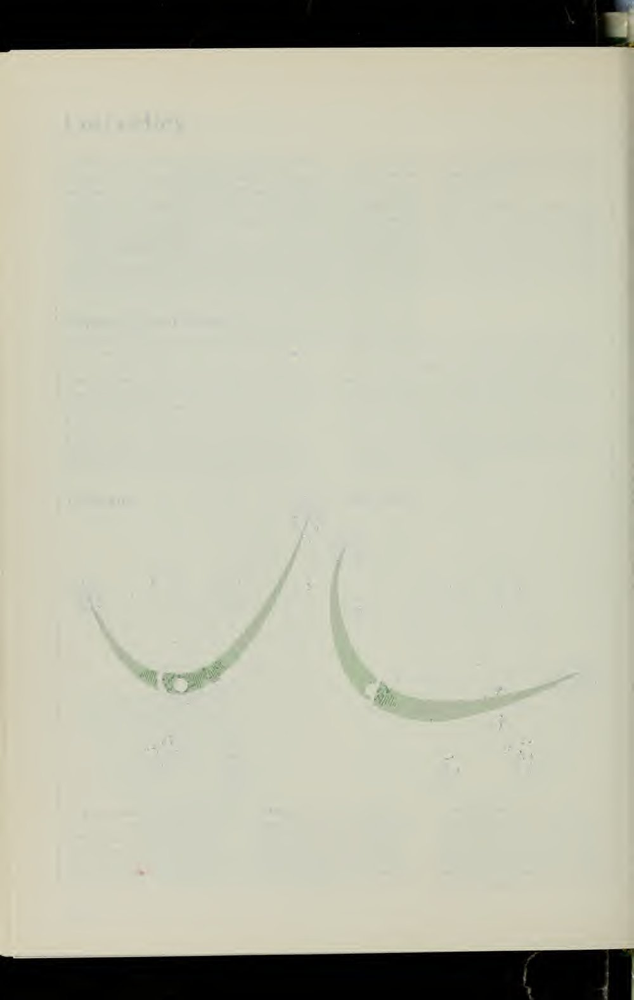
Hình 8.1: Hình học sân bãi đánh đơn (Singles Geometry) — Tâm điểm góc đánh và cự ly bảo vệ sân.
Figure 8.1: Singles Court Geometry and Bisecting the Opponent's Return Angle.
Tuy nhiên, các kỹ thuật chơi mới và thiết bị mới mang lại sự hoàn thiện các chiến thuật cũ và phát triển nhiều chiến thuật mới.
Mỗi trận đấu mà bạn chơi phải được lên kế hoạch về cách bạn dự định triển khai sức mạnh của mình để chống lại nguồn lực của đối thủ. Càng biết nhiều về khả năng của đối thủ, bạn càng dễ dàng lựa chọn chiến lược đúng đắn, nhưng hãy nhớ rằng chiến lược của riêng bạn phải linh hoạt.
Nếu bạn hiểu rõ đối thủ thì kế hoạch của bạn có thể sẽ đúng ngay từ đầu và bạn chỉ cần vạch ra chiến thuật để thực hiện nó.
Nhưng nếu bạn thấy rằng chính sách trận đấu của mình đang thất bại, bất kể bạn sử dụng chiến thuật nào, thì bạn phải thay đổi chiến lược của mình hoặc tiếp tục chiến đấu.
Đôi khi chiến lược giành chiến thắng của bạn là đúng khi xét đến điểm yếu của đối thủ, nhưng chiến thuật bạn đã chọn lại không đạt được mục tiêu.
Trong trường hợp này, bạn phải có khả năng nhận ra cách đối thủ phản công thành công và thay đổi chiến thuật để đáp ứng tình huống mới.
Trò chơi của bạn càng mạnh thì bạn càng có nhiều khả năng thành công với bất kỳ kế hoạch đã chọn nào trong atennismatch.
Sau khi học cách chơi từng cú đánh, bạn sẽ thấy được cách sử dụng cơ bản của nó.
Bước tiếp theo là nghiên cứu chiến thuật sử dụng các cú đánh, cả các cú đánh đơn lẻ và kết hợp, đồng thời xem chúng có thể được sử dụng như thế nào để tạo lợi thế tốt nhất trong các trận đấu đơn và đánh đôi nhằm mang lại những chiến thắng mà lẽ ra không phải của bạn.
Các loại người chơi thường xuyên Có nhiều loại người chơi trận đấu khác nhau và bạn sẽ thấy mình đang phát triển, hoặc sẽ phát triển thành một trong số, hoặc sự kết hợp của những loại này tùy theo thuộc tính thể chất và tinh thần của bạn.
Hầu hết người chơi thuộc một trong bốn loại được mô tả dưới đây.
Retriever Aplayerngười có khả năng kiểm soát, khả năng di chuyển và thể lực tuyệt vời, đồng thời có thể tranh giành bóng lại nhưng không có cú đánh thắng trận nào khiến đối thủ phải lo sợ.
Người đánh bóng là người chơi có những cú chạm đất chuẩn xác về mặt kỹ thuật và thành thạo trong việc di chuyển ở phần sân sau dọc theo chiều dài của đường cuối sân.
Người chơi này giành chiến thắng bằng cách khuyến khích một trò chơi vuốt ve trên mặt đất được thực hiện từ vạch cuối sân (baseline) đến vạch cuối sân (baseline), sau đó gây mệt mỏi và buộc đối thủ của mình mắc lỗi.
Người căn bản sẽ chỉ tiếp cận lưới để chơi một số trận nhất định, giành chiến thắng hoặc khi bị dụ dỗ bởi một đối thủ chuyên nghiệp.
Giao bóng và vận động viên chuyền bóng Một cầu thủ thích chuyền bóng hơn là những cú đánh trên sân và đủ khỏe cả về thể chất lẫn kỹ thuật để giao bóng và ngay lập tức thực hiện cú vô lê với sức mạnh và độ chính xác.
Chiến lược của người giao bóng và vô lê là luôn tấn công từ lưới, đè bẹp đối thủ bằng nhiều chiến thuật giao bóng và vô lê khác nhau.
Nếuineptchúng được gắn nhãn "netrushers".
Những người chơi thuộc loại này thường có thể tập hợp lại từ vạch cuối sân (baseline) nhưng cũng có thể có một cú đánh không đáng tin cậy ở phía thuận tay hoặc phía sau mà họ cần phải che giấu.
Người chơi toàn sân Người chơi toàn diện có năng lực kết hợp các kỹ năng từ mỗi loại trong số ba loại trên mà không phải là người chơi xuất sắc trong bất kỳ danh mục nào.
Cầu thủ toàn sân không yếu trong bất kỳ tình huống chiến thuật nào và vận dụng thành thạo các khả năng về tinh thần, thể chất và kỹ thuật từ bất kỳ khu vực nào trên sân, và vì vậy có lẽ là mẫu cầu thủ lý tưởng của mọi người.
Một số người chơi kết hợp các khía cạnh khác nhau của từng loại trên và phương pháp chơi tốt nhất của họ không dễ dàng bị phát hiện.
Người chơi Goodmatch làm việc chăm chỉ để phát triển trò chơi của họ và cố gắng khắc phục những thiếu sót nhiều nhất có thể.
Bạn phải khám phá xem người chơi thích chơi tốt hơn như thế nào và sau đó đưa ra chiến thuật phản công phù hợp.
Biết sân tennis Hãy nghĩ đến khu vực thi đấu của bạn, ở hai bên lưới, được chia thành ba, như thể hiện trong sơ đồ bên dưới.
Khu vực phía sau đường cuối sân được gọi là sân sau, và khu vực giữa đường giao bóng và lưới được gọi là sân trước.
Cách chơi trong mỗi khu vực này là các pha tập trung đột phá đặc biệt từ sân sau và cú vô-lê nhanh từ sân trước.
Giữa những khu vực này không phải là vùng đất của người khác, được gọi như vậy bởi vì sẽ rất tai hại nếu ở lại khu vực này quá thời gian để chơi một cú đánh trong đó.
Chơi phòng thủ ở sân sau là mối quan tâm lớn của bạn khi đánh bóng từ sân sau nhưng với tư cách là người đánh bóng, một người chơi toàn sân hoặc người giao bóng và người chuyền bóng, bạn nên tập hợp với người lót sân có mục đích để làm mệt mỏi và làm đảo lộn nhịp điệu và thời gian của đối thủ, người chơi toàn sân, người giao bóng và người vô lê đều cố gắng ép các cú trả bóng có độ dài kém để có thể thiết lập một cuộc tấn công mạng.
Từ sân sau, độ sâu của cú đánh của đối thủ quyết định kiểu trả lời mà bạn thực hiện.
Noman'sland Sau khi thực hiện một cú đánh từ khu vực này, bạn nên tiến lên phía trước để thực hiện cú vô lê ở phần sân trước hoặc lùi lại để khôi phục vị trí tập hợp của chúng tôi phía sau đường cuối sân.
Sân trước Khi bạn đến gần lưới, các cú đánh của bạn sẽ có khoảng cách di chuyển ngắn hơn và tấn công tổng lực là lựa chọn đương nhiên.
Việc tiếp cận cú đánh từ khu vực này gần như luôn thành công vì bạn chắc chắn sẽ ở gần một vị trí chuyền bóng tốt.
Các cú đánh chéo sân cũng có thể bị đánh bại một cách tự tin.
Bạn sẽ chỉ phải thận trọng khi bóng rơi xuống dưới mức lưới.
Ze^z^A Sân trước 3C Sân sau \JaA NomarAland Lý thuyết điểm trung tâm Lý thuyết điểm trung tâm xác định vị trí tốt nhất để di chuyển tới sau khi thực hiện bất kỳ cú đánh nào của bạn.
Bằng cách quay trở lại vị trí khoảng một yard phía sau điểm trung tâm trước khi đối thủ của bạn đánh cú đánh tiếp theo trong một pha giao bóng ở vạch cuối sân (baseline) hoặc sau khi giao bóng, bạn sẽ ở vị trí cơ bản để che chắn cho câu trả lời.
Vị trí trung tâm này giữa hai câu trả lời cực đoan mở cho đối thủ của bạn áp dụng cho tất cả các trận đấu, không chỉ các pha đánh bóng ở vạch cuối sân (baseline), và phải luôn là mục tiêu của bạn khi di chuyển quanh sân từ khi giao bóng trở đi. Khi bạn chọn lượt trả giao bóng và mỗi cú đánh tiếp theo, điều quan trọng là vị trí trung tâm càng gần càng tốt.
Sơ đồ dưới đây cho thấy cú giao bóng rộng rãi đối với cú thuận tay của người nhận thuận tay phải và cách trả bóng chéo sân sâu khiến vị trí điểm trung tâm tiếp theo của người nhận giao bóng tương đối gần nhau như thế nào.
Nếu người nhận đã chọn một câu trả lời ở bên lề, thì vị trí ở giữa các câu trả lời có thể có sẽ là khoảng cách xa hoặc xa hơn điểm trung tâm.
S Server CPCenterpoint R Bộ thu phản công Đánh giá và phản công là quan trọng về mặt chiến lược (xem trang 42-44).
Bóng xoáy trên cao có thể được chơi bằng một cú đánh xoáy xuống hoặc một cú trả bóng bị chặn, để giữ bóng bay qua lưới.
Những quả bóng xoáy lên thấp có thể được đối phó một cách hiệu quả bằng các cú công bóng cơ bản của bạn, hoặc các cú công bóng xoáy lên của bạn đánh với lực đẩy đáng kể về phía trước.
Những quả bóng có độ xoáy thấp có thể bị đối phó bằng cách sử dụng một cú đánh cơ bản phẳng hơn trong khi một quả bóng có độ xoáy thấp có thể yêu cầu một tác động xoáy lên nghiêm trọng để chống lại độ xoáy.
Việc chống lại tác động của xoáy ngang đòi hỏi phải thực hiện cú đánh rất chắc chắn, cho phép thực tế là một quả bóng bay trong không khí và ra khỏi sân với độ xoáy tay phải hoặc tay trái sẽ khiến dây của bạn có tác dụng ngược lại.
Giao bóng ĐƠN Các cú giao bóng của bạn phải luôn được đặt sâu và chính xác, đồng thời, đủ mạnh hoặc xoáy.
Sự kết hợp của những yếu tố này sẽ đặt hầu hết đối thủ của bạn vào thế phòng thủ.
So với quả giao bóng thứ hai của bạn, quả bóng đầu tiên mà bạn giao bóng ở mỗi điểm có tiềm năng chiến lược to lớn mà bạn phải khai thác.
Một cầu thủ trung bình lãng phí các cơ hội giao bóng đầu tiên trong khi một cầu thủ giỏi thực hiện 70% số lần giao bóng đầu tiên của mình, không chỉ vào sân mà còn đi sâu vào các khu vực buộc phòng thủ phải trả lại.
Để đạt được tỷ lệ phần trăm dịch vụ đầu tiên thành công này, bạn phải chấp nhận mức giao hàng thấp hơn mức giao hàng nhanh nhất của bạn trong mdst thời gian.
Giảm tốc độ có nghĩa là bạn có thể thêm các thế đứng ở phần sân bên trái và bên phải. Trong phần các cú đánh (xem trang 99), bạn đã học được rằng bạn nên đứng trong khoảng cách giữa sân khi giao bóng vào phần sân giao bóng bên trái hoặc bên phải trong một trận đấu đơn.
Tuy nhiên, khi hiệu quả giao bóng của bạn trở nên quan trọng hơn, bạn sẽ thấy rằng vị trí của thế đứng giao bóng của bạn khi giao bóng vào ô giao cầu bên phải sẽ khác so với khi giao bóng vào phần sân bên trái, minh họa bên phải.
Những vị trí cơ bản này sẽ cho phép bạn bắt đầu ở giữa những pha trả bóng tương tự của đối thủ và cũng có thể nhắm bóng hiệu quả nhất có thể.
Ở phần sân bên phải, việc di chuyển verv đến gần tâm điểm cho phép bạn giao bóng gần như dọc theo phần giữa sân tới tay sau của người nhận thuận tay phải - thường là cú đánh yếu hơn.
Khi giao bóng ở phần sân bên trái, việc đứng xa hơn 1-2 feet so với điểm giữa sẽ cho phép bạn thực hiện cú giao bóng của mình với cú trái tay của người nhận thuận tay phải ở góc càng tốt càng tốt.
quay nhiều hơn để tăng khả năng mắc lỗi của bạn.
Bằng việc thay đổi số lượng và kiểu xoáy mà bạn áp dụng, đồng thời để dành cú giao bóng cực nhanh của mình cho những tình huống khi bạn có điểm trong tay hoặc như một rủi ro được tính toán khi bạn thua 40, đối thủ của bạn sẽ hiếm khi có thể lập kế hoạch trả bóng cụ thể.
Máy chủ web hàng đầu chỉ là máy chủ thứ hai tốt như máy chủ thứ hai.
Cho dù bạn sử dụng cú giao bóng xoáy nào làm cú giao bóng thứ hai chính của mình, bạn phải phát triển nó cho đến khi bạn có thể giao bóng sâu để đánh vào phía yếu nhất của đối thủ bất cứ khi nào cú giao bóng đầu tiên của bạn trượt.
Nếu bạn có thể thành thạo cả cú giao bóng xoáy lên và cú giao bóng cắt, bạn sẽ có thể chuyển hướng giao bóng của mình ra khỏi hoặc vào trong đường bóng của đối thủ theo yêu cầu của bạn.
Sân bên phải Di chuyển càng gần tâm điểm càng tốt (mà không có nguy cơ mắc lỗi ở chân) bạn có thể giao bóng gần như thẳng ở trái tay.
Phần sân bên trái Bvdi chuyển một chút so với tâm điểm, bạn có thể tạo góc giao bóng tốt về phía trái tay.
CHIẾN LƯỢC ĐƠN GIẢN Ngụy trang ý định của bạn Bất ngờ là một yếu tố quan trọng để giao bóng các cấp độ chơi cao hơn.
Học cách che giấu ý định giao bóng của bạn. Ví dụ: khi điều chỉnh thế đứng của bạn để giao bóng về phía thuận tay từ sân bên phải, đừng thực hiện một động tác rõ ràng nào từ thế đứng cơ bản của bạn quá gần điểm trung tâm.
Tốt hơn là bạn nên khiến đối thủ nghĩ rằng bóng có nhiều khả năng đi về phía trái tay hơn là đạt được một chút góc khi giao bóng.
Bản thân tư thế giao bóng không chính thống của một số cầu thủ thường là một cách ngụy trang hữu ích.
Thế đứng cực đoan của John McEn-roe, được hiển thị bên phải, cho thấy cú giao bóng mạnh mẽ của anh ta, nhưng nó cũng thường giữ hướng tấn công chính xác của anh ta từ đối thủ cho đến khi quá muộn để thực hiện một cú trả bóng hiệu quả.
Tầm quan trọng của việc giao bóng sâu Sơ đồ bên dưới cho thấy cách giao bóng sâu (ở phía thuận tay, trái tay hoặc vào người) sẽ đảm bảo rằng người nhận bóng giữ ở phía sau đường biên ngang và do đó ở vị trí phòng thủ.
Nếu bạn giao bóng ở ngoài dải tối, bạn sẽ cho phép người nhận tiến lên và nhận từ bên trong vạch cuối sân (baseline).
Từ vị trí này, một cuộc phản công có nhiều khả năng xảy ra hơn và bạn có thể giành được thế chủ động tấn công từ mình.
Tầm quan trọng của độ sâu áp dụng cho cả lần giao bóng thứ nhất và thứ hai.
Cả hai cú giao bóng đều phải sâu và đúng vị trí.
Độ tin cậy của cú giao bóng thứ hai của bạn phải đến từ việc kiểm soát độ xoáy của nó chứ không phải từ việc nhắm ngắn.
Buộc người nhận đứng lại Phương án quay Bạn luôn có hai lựa chọn thay thế sau khi bạn đã chọn phần nào của sân giao cầu để nhắm tới.
Bạn có thể sử dụng cú giao bóng phẳng cơ bản với hy vọng rằng tốc độ giao bóng của bạn sẽ kết hợp với mục tiêu của bạn là tạo ra một cú đánh khó để đối thủ đối phó hoặc bạn có thể sử dụng cú giao bóng xoáy để tăng góc tiếp cận trước và sau khi nảy.
Bạn có thể thấy, bên dưới, một cú giao bóng xoáy lên tới góc trái tay của sân giao bóng bên trái sẽ hòa xa hơn về phía trái tay như thế nào so với một cú giao bóng phẳng tương đương.
Tương tự như vậy, bản chất của cú giao bóng tới góc thuận tay của sân bên phải sẽ xoáy bóng xa hơn về phía thuận tay của người nhận thuận tay phải.
Phần B Cơ bản
PHỤC VỤ Giao bóng về phía trái tay Nếu không có đặc điểm nổi bật nào về điểm mạnh và điểm yếu của đối thủ buộc bạn phải làm khác, thì 80% tổng số cú giao bóng của bạn sẽ nhắm vào phía trái tay.
Bốn sơ đồ bên dưới thể hiện các cú giao bóng thuận tay phải tấn công cú trái tay.
Trong mỗi trường hợp, một cú giao bóng phẳng được thực hiện cùng với cú giao bóng xoáy mà bạn có thể sử dụng như một phương tiện tấn công thay thế.
Bạn sẽ thấy rằng với tư cách là người giao bóng thuận tay phải, tư thế giao bóng bên trái (được đề xuất ở trang 196), cách xa tâm điểm một chút, khiến cho cú giao bóng thuận tay của đối thủ dễ dàng hơn cho cú trả giao bóng của đối thủ hơn là cú đánh trái tay.
Sự chênh lệch này thường không đáng kể vì bạn sẽ hướng về phía thuận tay khi giao bóng và cú đánh thuận tay có thể sẽ mạnh hơn.
Người nhận thuận tay phải Sân bên phải Người giao bóng tấn công gần như dọc theo trung tâm của sân bằng cách sử dụng một quả giao bóng phẳng (màu đen) hoặc một quả giao bóng xoáy lên đột phá sâu hơn về phía trái tay của người nhận (màu xám).
Sân bên trái Người giao bóng thực hiện một cú giao bóng phẳng ngang phần dưới (trung tâm) của lưới (màu đen), hoặc sử dụng một cú giao bóng xoáy lên sẽ làm tăng góc về phía trái tay (grev | .
Người nhận thuận tay trái Sân bên phải Người giao bóng đứng xa hơn từ điểm giữa để nghiêng một cú giao bóng phẳng về phía trái tay (màu đen). Một cú giao bóng cắt sẽ hướng quả bóng rộng hơn về phía thuận tay (màu xám).
Sân bên trái Người giao bóng đứng gần tâm điểm để giao bóng xuống giữa sân (màu đen). Cú giao bóng cắt lát sẽ làm cho bóng văng xa hơn về phía trái tay của người nhận (màu xám).
CHIẾN LƯỢC ĐƠN Giao bóng thuận tay Sự thành công của việc giao bóng thuận tay phụ thuộc vào sự bất ngờ.
Bạn phải lựa chọn cơ hội một cách cẩn thận và che giấu ý định của mình thật tốt.
Tốt nhất là nên mạo hiểm tấn công bên mạnh hơn khi bạn dẫn trước ít nhất một điểm.
Nếu bạn nhận thấy đối thủ của bạn đang chiếm một vị trí nhận bóng gần tâm điểm hơn để tấn công thì cú giao bóng kém chính xác hơn của bạn về phía trái tay bằng cách chạy vòng quanh quả bóng và đánh một cú thuận tay, một cú giao bóng rộng về phía thuận tay, như minh họa bên phải, cũng có thể có hiệu quả.
Nó sẽ buộc bạn phải trả lời một pha phòng thủ ngắn, mở đường cho đòn tấn công thuận tay của bạn.
Từ phần sân bên trái, bạn có thể thay đổi đòn tấn công trái tay của mình bằng cách giao bóng sâu đến phần thuận tay ở giữa sân.
Nếu bạn có thể gây bất ngờ cho người nhận bóng, bóng sẽ có xu hướng quay trở lại phía bạn ở giữa sân hoặc hơi lệch về phía thuận tay của bạn, cho phép bạn duy trì đòn tấn công.
Sân bên phải, người nhận thuận tay phải. Người giao bóng tấn công thuận tay với một cú giao bóng phẳng (màu đen) có góc để thâm nhập sâu và rộng sau khi trả bóng, hoặc bằng một cú giao bóng cắt sẽ vẫn dịch chuyển rộng hơn, vượt xa đường biên (màu xám).
Giao bóng vào cơ thể đối thủ Tùy chọn tấn công cuối cùng của bạn là giao bóng trực tiếp vào cơ thể đối thủ.
Chiến thuật này đôi khi sẽ buộc kẻ yếu hơn phải trả đòn tấn công mở cho cú đánh yếu hơn, đặc biệt nếu đối thủ của bạn hơi chậm chân.
Cố gắng thực hiện cú trả bóng trái tay khi bóng đang bay vào cơ thể bạn là một trong những cách trả bóng khó nhất để chơi hiệu quả, đặc biệt khi người nhận bóng không chắc chắn khi nào sẽ thực hiện động tác vung vợt.
Giống như các tùy chọn tấn công giao bóng khác, bạn có thể sử dụng tốc độ của một cú giao bóng phẳng hoặc chuyển động của các cú giao bóng xoáy cho mục đích của mình.
Dịch vụ cắt lát đặc biệt hữu ích khi vung tiền bảo lãnh về phía cơ thể người nhận một cách bất ngờ.
Giao bóng cơ quan của đối thủ có thể có hiệu quả như nhau từ cả phía bên trái và bên phải, và ý định của bạn có thể dễ dàng bị ngụy trang thành việc không cần thay đổi lập trường.
Sân bên trái Tương tự như vậy, người giao bóng nhắm vào cơ thể của người nhận bằng cách sử dụng một cú giao bóng phẳng hoặc uốn cong một lát cắt từ bên trái của người nhận.
Lát cắt sẽ làm co rút trái tay của người nhận.
Sân bên phải Người giao bóng nhắm một quả giao bóng phẳng (màu đen) vào mép giữa của sân giao bóng bên phải, nảy thẳng vào người nhận giao bóng, hoặc giao bóng cắt để vung bóng từ trái tay của người nhận bóng về phía hông (màu xám).
Trả giao bóng Bên cạnh việc giao bóng, trả giao bóng là cú đánh quan trọng nhất của bạn.
Một tay vợt trung bình mắc khoảng 10 lỗi không thể bắt buộc khi giao bóng trong một hiệp chẵn.
Giữ bóng trong cuộc là nền tảng của tất cả các chiến thuật trả giao bóng.
Sẽ tốt hơn nhiều nếu tạo cơ hội cho máy chủ phạm sai lầm ở lượt bắn thứ ba còn hơn là để mất điểm ngay lập tức bằng cách trở thành người chiến thắng đối với người gửi rất khó khăn.
Hầu hết các lỗi trả bóng của người giao bóng đều phát sinh do cố gắng đánh bóng quá mạnh.
Người gửi trả lại bắt đầu bằng việc chiếm vị trí nhận bóng tốt nhất có thể tùy theo sức mạnh giao bóng của đối thủ và khả năng của chính bạn trong plav đột phá.
Nếu, như tôi khuyên, bạn sử dụng cách cầm vợt khác cho các cú chạm đất thuận tay và trái tay, bạn phải quyết định trước nên sẵn sàng sử dụng cách cầm vợt nào.
Khi đối thủ của bạn bắt đầu cú đánh, tốc độ phản ứng và sự linh hoạt là cần thiết để di chuyển và thực hiện một cú đánh thường phải được sửa đổi để thực hiện trong một phần giây.
Sẵn sàng Các sơ đồ bên dưới thể hiện các vị trí nhận cơ bản ở giữa các góc độ cực đoan của người gửi có thể từ người thuận tay phải và người thuận tay trái.
Nên thay đổi một chút trong vị trí nhận bóng vì người giao bóng thuận tay phải có thể nghiêng người thuận tay nhiều hơn về phía thuận tay từ sân bên phải, trong khi người giao bóng thuận tay trái có thể làm điều tương tự với trái tay từ sân bên trái. Khi đánh trả bóng nhanh, bạn nên đứng sau đường biên 3 đến 4 feet để có thể đánh trả mạnh khi bóng hơi rơi.
Đối với người quay vòng, hãy đứng bên trong vạch cuối sân (baseline) để bạn có thể lấy bóng trước khi vòng quay có thể xoay quả bóng.
Ở vị trí sẵn sàng của bạn (xem trang 37), bạn phải hoàn toàn cảnh giác.
Không đứng cao và thẳng mà hãy uốn cong đầu gối và eo hơi hạ xuống để mắt gần ngang tầm bóng.
Bạn phải sẵn sàng di chuyển nên hãy giữ trọng lượng của bạn hướng về phía trước trên lòng bàn chân của bạn.
Nếu bạn cảm thấy căng thẳng, hãy thư giãn cơ mặt bằng cách hạ cằm xuống một chút.
Nghiên cứu chuyển động của người giao bóng trước khi anh ta đánh bóng và lắng nghe.
Với việc thực hành, theo bản năng, bạn sẽ biết loại dịch vụ sắp được triển khai và hướng đi dự định của nó.
Máy chủ thuận tay phải
CHIẾN LƯỢC ĐƠN Chọn cách cầm vợt của bạn Người chơi theo phong cách phương Đông Asan bạn sẽ phải đưa ra lựa chọn đứng sẵn sàng với cách cầm thuận tay hay trái tay.
Bạn có thể sử dụng cách cầm vợt để phù hợp với cú đánh mạnh hơn để sẵn sàng có cơ hội sử dụng nó, hoặc bạn có thể sử dụng cách cầm vợt yếu hơn một cách tự tin và có thể thay đổi thành cách cầm vợt mạnh hơn nếu cần thiết.
Nếu bạn quyết định bắt đầu với cách cầm vợt mạnh hơn, bạn có thể nới lỏng vị trí của thế đứng trái hoặc quyền sẵn có của mình để có thể thực hiện nhiều cú giao bóng hơn ở phía bên mạnh hơn của mình.
Chuyển động này được thể hiện trong sơ đồ bên dưới, ở cả sân bên phải và bên trái.
Để thuận lợi cho cú thuận tay của bạn, hãy di chuyển hơi về phía bên trái tay.
Ngược lại, để thuận lợi cho cú trái tay của bạn, hãy bắt đầu với cách cầm vợt trái tay của bạn và hướng về phía thuận tay cách xa đường biên.
Tay cầm thuận tay Tay cầm trái tay Tay cầm thuận tay -* — Sửa đổi cú đánh của bạn Khi bóng được giao, bạn phải xoay người sang một bên và lấy vợt về trước khi bóng đi qua lưới.
Bạn phải nhìn thấy quả bóng nảy lên nếu không cơ hội kiếm được lợi nhuận tốt của bạn sẽ rất mong manh.
Từ thời điểm này, cú đánh mà bạn chơi sẽ càng gần với cú đánh chạm đất tương đối mà bạn đã học trong phần các cú đánh được sửa đổi theo tốc độ của quả bóng tới.
Rất có thể, bạn sẽ phải rút ngắn đáng kể các cú xoay thuận tay và trái tay của mình.
Cho dù bạn có giảm khả năng bắt bóng lại bao nhiêu thì điều bắt buộc là vợt phải ở cùng bóng theo hướng bay của nó trong 3 đến 4 feet đầu tiên sau cú đánh.
Cú trả bóng (một cú đánh giống cú vô lê cơ bản với một cú giật bóng ngắn) rất hữu ích khi đối phó với những cú giao bóng nhanh và những cú giao bóng xoáy nhiều.
Cú trả bóng, được hiển thị bên phải (viết tắt là cú đánh thuận tay hoặc cú cắt trái tay) đặc biệt hiệu quả đối với những cú giao bóng đá cao, đưa bóng trở lại khu vực đường giao bóng.
Stan Smith
DỊCH VỤ TRẢ LẠI Chơi giao bóng phẳng Để chơi một cú giao bóng phẳng nhanh, dự đoán thành công là rất quan trọng, nếu không, bạn sẽ mất ba đến bốn phần mười giây trước khi bạn bắt đầu phản ứng, thời gian bạn không đủ khả năng để thua khi bạn cho rằng quả bóng được giao bóng trung bình là người chơi nhỏ với vận tốc 60 dặm một giờ sẽ* đến vợt của người nhận trong khoảng thời gian xấp xỉ một giây. Một cú giao bóng phẳng nhanh, được giao chính xác ở tốc độ 120 dặm một giờ hoặc hơn, bv aworld
plaver đẳng cấp, gần như không thể trả lại được.
Bạn phải đứng đủ xa phía sau đường biên ngang để có thêm thời gian và một phần tốc độ giao bóng trước khi bạn tiếp xúc với quả bóng ngay sau khi nó nảy lên.
Trừ khi quả giao bóng rút ngắn, một cú rút ngắn sẽ đưa vợt ra sau quả bóng ở độ cao đánh bóng và đơn giản chặn về phía trước bằng cú đánh giống như cú chuyền cơ bản.
Chơi cú giao bóng xoáy lên sẽ bật ra khỏi dây vợt của bạn dưới dạng xoáy xuống và làm cho bóng bay lên cao hơn mức bạn có thể nghĩ (seep.44).
Ngăn không cho bóng bay quá cao qua lưới bằng một cú đánh mạnh xuống và xuyên qua bóng khi bóng bay lên, ở ngang tầm hoặc phía trên.
Đứng ngay bên trong đường cuối sân và nhận bóng trước khi nó lao quá xa về bên trái ở bên trái hoặc quá gần thân người ở bên thuận tay.
Các dịch vụ xoáy ngang hoặc cắt lát sẽ bật lại từ chuỗi của bạn với tác dụng ngược lại.
Điều này phải được cho phép khi thực hiện các cú trả bóng thuận tay hoặc trái tay.
Đứng bên trong đường biên ngang để bạn có thể chơi bóng trước khi nó vung rộng về phía thuận tay hoặc vào phía bên trái tay.
Vị trí nhận cú giao bóng xoáy Khi chơi các cú giao bóng xoáy lên hoặc cắt lát sẽ đứng xa hơn về phía trước ngay bên trong đường biên ngang, như minh họa ở trên, nơi mà người nhận giao bóng đối mặt với cú giao bóng xoáy lên về phía trái tay.
Điều này cho phép bạn chơi bóng sớm.
Chọn kết quả trả lời tốt nhất Sáu biểu đồ ở trang đối diện cho thấy ba loại giao bóng chính (giao bóng phẳng cơ bản, giao bóng xoáy lên và giao bóng cắt lát), từ cả sân bên phải và bên trái, khi người giao bóng thích lùi lại.
Mỗi cú trả bóng được phân loại theo chất lượng của cú giao bóng được trả lại. Một cú giao bóng hiệu quả rất sâu, dù phẳng hoặc xoáy, đều yêu cầu trả lại MỘT trong mỗi trường hợp. Một cú giao bóng vừa phải sẽ cho phép bạn thử cú trả bóng B như một giải pháp thay thế, trong khi cú giao bóng kém sẽ cho phép bạn sử dụng tùy chọn C.
Mỗi tùy chọn sẽ đặt máy chủ dưới áp lực lớn nhất có thể.
Bạn sẽ nhận thấy rằng lợi nhuận bên lề được sử dụng như thế nào để tiết kiệm cho người giao bóng đang ở trên vạch cuối sân (baseline) chứ không hề chống lại các cú giao bóng góc cạnh.
Điều này là do khó đạt được vị trí tán tỉnh tốt sau khi quay trở lại theo lý thuyết điểm trung tâm (xem trang 195).
Bạn sẽ gặp khó khăn khi di chuyển đủ xa và đủ nhanh.
1 Mặt sân bên trái, giao bóng phẳng cho trái tay của bạn được trả lại tốt nhất một cách chắc chắn dọc theo đường giao bóng. Giao bóng vừa phải cho bạn cơ hội thực hiện một cú giao bóng chéo sân trái tay cắt lát, trong khi giao bóng yếu có thể cho phép bạn giành chiến thắng trong cú đánh chéo sân.
2 Sân bên trái, giao bóng theo cú thuận tay mà cú xoay từ bạn nên được đặt chắc chắn trở lại tâm vạch cuối sân (baseline).
Nếu cú giao bóng không quá mạnh, một cú công bóng sâu về phía trái tay sẽ có hiệu quả. Cú giao bóng yếu có thể được thực hiện trên toàn bộ phía thuận tay của người giao bóng.
3. Phần sân bên trái, giao bóng xoáy lên sẽ nảy sâu và sau đó bẻ mạnh về phía trái tay của bạn, tốt nhất nên chơi ngược lại dọc theo đường giao bóng.
Những cú giao bóng yếu hơn có thể được bố trí ở góc trái tay hoặc thậm chí ở góc nửa sân.
4 Sân bên phải, giao bóng phẳng trên cơ thể bạn với độ sâu và tốc độ tốt nên được trả sâu dọc theo đường giao bóng. Cú giao bóng vừa phải kiểu này có thể được thực hiện khó trên sân, trong khi một cú giao bóng ngắn có thể được trả lại ở đường biên.
[…]
6 Sân bên phải, cú giao bóng xoáy lên về phía trái tay của bạn phải được đánh chắc chắn vào chân người giao bóng.
Nếu giao bóng dễ thực hiện hơn, bạn có thể nghiêng bóng sâu về phía trái tay của người giao bóng thuận tay phải hoặc thậm chí là người thắng theo góc plavan nếu giao bóng yếu.
5 Sân bên phải, cú giao bóng xoáy cắt (slice serve) vào phía thuận tay của bạn cần phải được đón đánh càng sớm càng tốt và trả bóng chéo sân (crosscourt). Cú giao bóng ít khó hơn sẽ cho bạn lựa chọn đánh bóng chắc chắn trở lại ngay vị trí người giao bóng, và một cú giao bóng tồi sẽ mở ra cơ hội cho một cú đánh ăn điểm mở góc nửa sân (half-court angled winner). 6 Sân bên phải, cú giao bóng xoáy cuộn (topspin serve) vào phía trái tay của bạn nên được đánh bóng đầm chắc sâu xuống chân người giao bóng. Nếu cú giao bóng dễ xử lý hơn, bạn có thể ép bóng chéo góc sâu về phía trái tay của người giao bóng thuận tay phải, hoặc thậm chí tung cú đánh mở góc ăn điểm trực tiếp nếu đối thủ giao bóng yếu.
Giao bóng và chơi cú vô-lê Sau khi giao bóng vào lưới với ý định thực hiện một cú vô lê chiến thắng là một chiến thuật quan trọng trong quần vợt hiện đại.
Mục đích của người giao bóng và cú vô-lê là chiếm ưu thế trong pha giao bóng từ một vị trí gần lưới mà từ đó anh ta có thể đánh cú vượt quá tầm với của đối thủ.
Chiến thuật tấn công này bổ sung cho lợi thế của việc giao bóng.
Thành công của nó phụ thuộc vào việc lựa chọn đúng loại người phát bóng, di chuyển đủ nhanh để tiếp cận hoặc vượt qua vạch giao bóng của chính bạn để thực hiện cú vô lê đầu tiên, sau đó lại tiến về phía trước cho những quả vô lê tiếp theo nếu cần thiết.
Giao bóng và chơi vô lê khiến đối thủ chịu áp lực phải trả giao bóng nhanh, thấp và ngoài tầm với của bạn, nếu họ có thể, để cản phá cú vô lê đầu tiên của bạn.
Tuy nhiên, thành công cũng phụ thuộc vào việc lập kế hoạch tốt và thực hành nhiều, vì những sai lầm nhanh chóng cho thấy vị thế ròng có thể dễ bị tổn thương như thế nào.
Đối thủ thực hiện cú trả giao bóng hiệu quả hơn khi được đưa ra một âm thanh không tới để tránh.
Cú giao bóng và chạy về phía trước Chất lượng mạnh mẽ của cú giao bóng và cú vô-lê thường khiến người giao bóng phải tính lưới sau những cú giao bóng đầu tiên nhanh.
Nếu đối thủ của bạn đang trả giao bóng thành thạo, các giao bóng nhanh sẽ có xu hướng trả lại nhanh hơn khi bạn theo họ lên lưới.
Để cho bạn đủ thời gian để đạt được một vị trí vững chắc trên sân từ đó thực hiện cú vô lê đầu tiên hiệu quả, hãy chọn giao bóng thứ hai (xoáy trên hoặc cắt) cho cú vô lê phía sau.
Quỹ đạo nghiêng và cao hơn sẽ cho bạn nhiều thời gian hơn để tiến về phía trước.
Nếu bạn chờ xem liệu bạn có thực hiện cú giao bóng tốt trước khi chạy về phía trước hay không thì bạn sẽ để việc tiếp cận lưới của mình quá muộn.
Bàn chân sau của bạn vung qua đường cuối sân khi cú giao bóng của bạn hoàn thành phải là bước đầu tiên để bạn chạy về phía lưới, như minh họa bên phải.
Hướng chạy của bạn về phía lưới phải luôn chính xác dọc theo đường bay của cú giao bóng của bạn.
Hãy giữ nguyên đường này và bạn sẽ được đặt ở giữa góc quay có thể có của đối thủ và giữ tư thế ban đầu tốt nhất sẵn sàng di chuyển sang hai bên.
Bạn nên vượt qua đường giao bóng của mình trong khoảng bảy bước để đạt được một khoảng cách lý tưởng tính từ lưới cho cú vô lê đầu tiên của bạn (hình minh họa đối diện).
Chính xác thì bạn có thể tiến xa đến mức nào không chỉ phụ thuộc vào tốc độ của bạn, độ sâu và độ chính xác trong cú giao bóng của bạn mà còn phụ thuộc vào tốc độ và độ chính xác khi đối thủ trả bóng.
Dây của đối thủ tiếp xúc với bóng, bạn phải dễ dàng chạy về phía trước và ngay lập tức đặt chân của bạn vào vị trí sẵn sàng- (được gọi là bước tách bước).
Từ vị trí này, bạn sẽ có thể di chuyển theo bất kỳ cách nào có thể cần thiết để đón quả bóng sắp tới và chơi cú vô-lê cân bằng cần thiết.
Dick Stockton
CHIẾN LƯỢC ĐƠN Đánh cú vô lê đầu tiên Hướng và độ dài của cú vô lê đầu tiên của bạn phụ thuộc vào chất lượng trả giao bóng của đối thủ.
Nếu đối thủ của bạn trả bóng chậm và cao hơn chiều cao lưới, bạn có thể cảm thấy rằng bạn có thể di chuyển nhanh và đánh một cú đánh thắng hoàn toàn qua sân hoặc dọc biên, ngoài tầm với của đối thủ. Tuy nhiên, một cú trả bóng chất lượng tốt sẽ đi qua lưới thấp và nhanh và bạn phải khách quan bằng cú vô lê đầu tiên của bạn sâu đến cuối sân vào một góc sân đối phương.
Góc quay trở lại tối đa mở ra cho người nhận khi bạn giao bóng ở phần sân bên phải và bên trái được hiển thị trong nhóm ba biểu đồ bên dưới.
Khi thực hiện cú đánh tiếp cận (xem trang 214), hãy thực hiện cú vô lê ở cùng phía sân mà bạn bị ép phải theo hướng trả giao bóng.
Ví dụ, nếu quả trả giao bóng được thực hiện rộng về phía thuận tay của bạn, hãy chuyền bóng xuống đường biên thuận tay của bạn đến góc trái tay của đối thủ. Một cú giao bóng tốt, trả giao bóng thấp sẽ khó đánh trước khi bóng rơi xuống độ cao ngang lưới hoặc thấp hơn vì vậy bạn sẽ phải đánh xuyên qua bóng nhiều nhất có thể với mặt vợt mở hơn, áp dụng xoáy xuống để kiểm soát.
Tuy nhiên, nếu bạn phải áp dụng quá nhiều xoáy xuống, bóng sẽ không xuyên qua được và đối thủ của bạn sẽ có cơ hội phục hồi.
Sân bên phải A Khu vực Firstvollev tôi giao bóng về phía trái tay
PHÁT PHÁP VÀ BÓNG CHUYỀN Đánh cú vô lê thứ hai Ngay sau khi bạn thực hiện cú vô lê đầu tiên (xem sơ đồ 2 bên dưới), hãy di chuyển nhanh chóng lên sân trở lại trong vòng 1 feet tính từ lưới - khu vực cú vô-lê thứ hai (xem bên dưới).
Từ đây bạn có thể đấm xuống xuyên qua quả bóng từ độ cao trên lưới.
Tuy nhiên, nếu bạn không kết thúc pha đánh bóng từ đây và đối thủ của bạn có cơ hội chơi bóng, thì khoảng cách gần với lưới của bạn có thể trở thành một bất lợi lớn và bạn sẽ rất dễ bị tổn thương trước một cú lốp bóng hoặc một cú chuyền bóng.
Khi bạn chạy về phía vị trí chuyền bóng đầu tiên, hãy di chuyển về phía trung tâm của góc trả bóng có thể mở cho đối thủ của bạn (định vị bản thân ở một góc về phía che chắn cú chuyền thẳng) để tạo cho mình cơ hội tốt nhất để thực hiện cú vô lê của bạn.
Nếu cú vô lê đầu tiên của bạn sâu hơn, cú vô lê thứ hai được thực hiện theo hướng đối thủ sẽ thường giành được điểm.
1 Giao bóng, chạy về phía trước và trả về 2 Cú vô lê đầu tiên theo từng bước và sâu 3 Đối thủ thu lại 4 Di chuyển vào khu vực cú vô-lê thứ hai và cú vô-lê góc thắng I 1 Khu vực cú vô-lê thứ hai
CHIẾN LƯỢC ĐƠN Vượt qua đối thủ của bạn Mặc dù chiến thuật táo bạo và nhanh như chớp, tuy nhiên, giao bóng và chuyền bóng là một kiểu chơi mà đối thủ của bạn có thể đoán trước được.
Nếu đối thủ của bạn đoán trước được cú vô lê thứ hai theo góc cạnh, bạn có thể thỉnh thoảng vượt qua anh ta bằng cách đưa quả vô lê thứ hai trở lại vị trí mà anh ta đã di chuyển, như biểu đồ 2 trong chuỗi bên dưới.
2 Phát lại về phía trái tay khi đối thủ của bạn chuyển sang đánh một cú thuận tay dự kiến. 1 Di chuyển vào khu vực cú vô-lê thứ hai để đáp ứng cú trả bóng của đối thủ như trong 4 đối diện Luyện tập với đối tác Trên sân, luyện tập kết hợp cú giao bóng thứ hai của bạn, giao bóng xoáy và chạy vào lưới.
Đếm bước chân sau của bạn sau cú giao bóng như bước một, đếm xem bạn cần bao nhiêu bước để đến khu vực cú vô-lê đầu tiên. Khi số bước không đổi và bạn cảm thấy rằng hành động của mình nhanh và mượt mà, hãy dành thời gian cho đối tác của bạn chạy về phía trước với đồng hồ bấm giờ.
Cố gắng cải thiện tốc độ của bạn trong khi duy trì nhịp điệu và sự cân bằng cũng như chất lượng dịch vụ của bạn.
Khi bạn cảm thấy tự tin về cách tiếp cận của mình, hãy thử thực hiện bài tập dưới đây với đối tác của bạn.
Chỉ sử dụng một nửa sân đôi, mục tiêu của bạn là thực hiện kiểu giao bóng và chuyền bóng, giành điểm với cú vô lê thứ hai.
Với tư cách là người giao bóng, bạn nên vào thế đứng giao bóng phía sau đường cuối sân giữa điểm giữa và góc của sân đánh đôi và giao bóng thẳng vào ô giao bóng đối diện với bạn.
Sử dụng cách tính điểm bằng số áp dụng các quy tắc sau.
Người giao bóng không được cho phép các cú đánh trả lại nảy giữa cú giao bóng và đường biên của anh ta, và cú vô lê đầu tiên của anh ta phải tiếp đất giữa cú giao bóng và đường biên của người nhận.
Người nhận mav không lốp bóng trở lại đầu tiên của mình.
Chơi bài tập đến 10 điểm rồi đổi vai.
Cách thực hành này mang lại cho người giao bóng và người chơi cú vô-lê một cơ hội để xây dựng sự tự tin, phát triển cảm giác và chiều sâu trong khi người nhận bóng có phạm vi sân hạn chế để nhắm tới và do đó phải tìm cách đặt người giao bóng vào tình thế khó khăn thay vì mạo hiểm để có được những cú đánh thắng hoàn toàn.
Đây là một phương pháp cạnh tranh lý tưởng để phát triển tỷ lệ chơi.
E2 Mục tiêu cú vô-lê đầu tiên Out o( chơi
Chơi thenetrusher Cú giao bóng hợp lý và cú tung bóng sẽ chỉ tiếp cận lưới đằng sau một cú giao bóng sâu, được đặt đúng vị trí, trong khi đó netrusher theo dõi mọi cú giao bóng lên lưới với hy vọng gây áp lực buộc bạn phải gửi lại loại trả về có thể dễ dàng xử lý.
Vũ khí tốt nhất của bạn để chống lại một người chơi như vậy là cú chuyền bóng, cú sút chip và mọi kiểu lốp bóng.
Nếu bạn giữ một cái đầu lạnh, bạn có thể thực hiện những cú đánh vượt qua cú giao bóng ngắn không thể tránh khỏi mà người đánh lưới sẽ thực hiện và đi theo vào lưới.
Nếu các cú giao bóng được lặp đi lặp lại - bạn có thể yếu và có thể bước tới trước và thực hiện các cú chuyền chéo sân trước khi đối thủ của bạn có được vị trí bắt vô lê đầu tiên tốt.
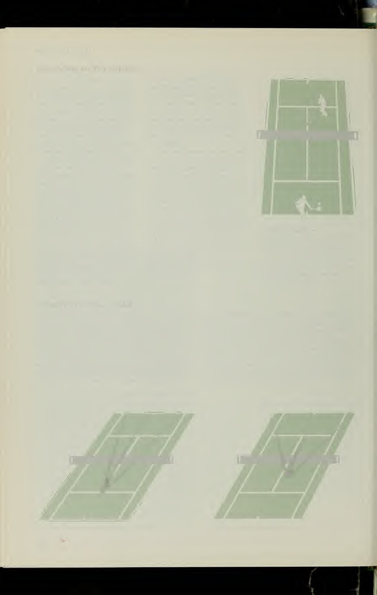
Hình 8.2: Cú đánh tiếp cận (Approach Shot) chém sâu vào góc sân để dâng cao kiểm soát lưới.
Figure 8.2: The Deep Approach Shot to Command the Net.
Ngoài ra, hãy di chuyển xung quanh quả bóng khi nó đến gần và thực hiện các cú chuyền bóng dọc biên từ phía mạnh hơn của bạn.
Cơ hội để đánh người chiến thắng khi bạn giao bóng với chất lượng giao bóng và chơi cú vô-lê tốt hơn sẽ không xảy ra thường xuyên vì tốc độ, độ sâu và độ xoáy của cú giao bóng sẽ hạn chế cú vung bóng của bạn.
Một cú đánh trả bóng về bên lề hoặc khi chân đối thủ đang tiến lên có thể rất hiệu quả, không giành được điểm ngay lập tức mà buộc một đối thủ đang có ý định tấn công phải trả lời một cách không hung hãn.
Khi bạn chịu áp lực cực lớn từ một pha tấn công lưới, cách cuối cùng bạn có thể làm là lốp bóng.
Chơi các cú chuyền bóng Trong sơ đồ, bên dưới bên trái, một đối thủ tấn công lưới đang tấn công sau một cú giao bóng ngắn thiếu cả tốc độ và độ xoáy.
Với tư cách là người nhận, bạn có thể di chuyển lên sân để khiến người chơi quay trở lại cùng lúc với lúc người giao bóng bắt đầu di chuyển về phía lưới.
Tiếp xúc với bóng trước khi người giao bóng đến vạch giao bóng, bạn có thể chọn thực hiện một cú sút dọc đường biên hoặc thực hiện một cú sút chéo sân.
Với kinh nghiệm, bạn sẽ có thể chống lại những kẻ tấn công mạng hiệu quả hơn bằng cách áp dụng độ xoáy cho các cú đánh chuyền của bạn như trong sơ đồ, bên dưới bên phải.
Bv đánh xung quanh bên ngoài quả bóng có thể làm chệch hướng cú trả bóng của bạn để bóng đi qua lưới trong nội dung đánh đôi trước khi xoay người trở lại sân gần vạch cuối sân (baseline) của đối thủ để thực hiện một cú sút từ đường biên.
Cú đánh này đã được sửa đổi để đối phó với cú giao bóng.
Dọc biênAvà chuyền ngang B cú sút (màu xám) Cú sút trái tay đổi hướng (màu xám) Xr^/.Mii^iM,,;,;
it W¥ Mill 11^ HI'llllllllllilll/NI l(
CHIẾN LƯỢC ĐƠN Cắt bóng quả trả bóng của bạn Để ngăn một quả giao bóng và người chuyền bóng liên tục phá vỡ quả trả bóng vẫn cao hơn chiều cao thực ở phần sân trước, bạn có thể chọn cắt bóng quả trả bóng của mình thấp đến chân hoặc thấp đến một trong hai đường biên, như được hiển thị trong sơ đồ bên trái bên dưới.
Nếu bạn có thể thực hiện cú trả bóng bằng nửa cú vô lê yếu, bạn có thể chạy về phía trước và giành điểm bằng một cú chuyền bóng.
Trong một pha giao bóng, nếu bạn bị thu hút bởi một cú đánh tiếp cận, như trong sơ đồ bên phải bên dưới, một cú sút bóng (xem trang 76) nghiêng qua lưới và nằm ngoài góc thu lưới của người đánh lưới, có thể biến phòng thủ thành tấn công.
Kẻ tấn công mạng phải để một phần sân không được bảo vệ.
Nếu bạn tìm thấy nó với lợi nhuận của mình, bạn có thể giành được điểm hoàn toàn.
Basicchipped trả bóng (màu xám) Cú sút Dink (màu xám) vào khu vực "mù" Lobbing Một cú lốp bóng cơ bản sâu hoặc xoáy xuống, qua sân hoặc dọc biên, nhưng đặc biệt là qua vai trái tay của người chơi lưới, sẽ làm nản lòng ngay cả những tay ném lưới hăng hái nhất.
Chơi lốp bóng trước một kẻ ném lưới thành thạo không chỉ là giải pháp chiến thuật chính xác mà còn là cách trả bóng an toàn nhất mà bạn có thể thực hiện, vì vậy, nếu bạn đã phát triển một cú lốp bóng tốt, hãy tự tin sử dụng nó để phản công.
Trong sơ đồ, bên phải, đối thủ giao bóng đã buộc bạn, người nhận giao bóng, lùi và sang phải bằng một cú giao bóng thâm nhập.
Máy chủ nằm trong đường dây dịch vụ và đang phân chia từng bước khi bạn phát câu trả lời của mình.
Tỷ lệ phần trăm hoàn trả để thực hiện phải là một cú lốp bóng, an toàn nhất là đường chéo, dọc theo đường dài nhất có thể trong sân.
Một cú trả bóng bằng lốp bóng sẽ đẩy đối thủ của bạn ra khỏi lưới và cho phép bạn có thời gian để phục hồi vị trí nhận điểm trung tâm tiếp theo của mình.
Cú lốp bóng chéo sân hoặc dọc đường biên Tôi anh ấy lốp bóng chéo sân A là cách trả bóng an toàn nhất nhưng lốp bóng dọc đường biên, có thể giành được điểm hoàn toàn, tôi có thể ngụy trang ý định của bạn.
13, fvou
Trận đấu cơ bản Nếu bạn giao bóng và ở lại, hoặc trả lại giao bóng và ở lại, bạn đang chọn chơi từ sân cuối hoặc sân sau.
Bằng cách tranh giành hầu hết các điểm từ sân sau, bạn sẽ được biết đến như một vận động viên ném bóng.
Cách tiếp cận quần vợt này có thể rất thành công vì lối chơi cơ bản dựa trên việc đưa và giữ bóng trong cuộc, và thậm chí ở cấp độ cao nhất, bạn sẽ giành được nhiều điểm hơn nhờ những sai lầm của đối thủ hơn là bằng những cú đánh thắng hoàn toàn đánh bại đối thủ.
Mặc dù chơi từ sân sau có nghĩa là phải ở thế phòng thủ, nhưng điều đó không có nghĩa là bạn phải chạy tới chạy lui để trả mọi quả bóng về sân với hy vọng đối thủ sẽ mắc lỗi.
Một cầu thủ đứng cuối sân giỏi cố gắng chơi mạnh mẽ, tấn công bằng các cú đánh trên mặt đất, sử dụng chiều dài và chiều rộng của sân để gây mệt mỏi và buộc đối thủ mắc lỗi.
Dịch vụ của bạn phải sâu sắc, chính xác và đáng tin cậy, đồng thời việc cung cấp dịch vụ của bạn phải tích cực và hiệu quả.
Bạn phải luôn ghi nhớ lý thuyết điểm trung tâm (xem trang 195) một cách rõ ràng trong đầu.
Trả lời ngược lại trên sân Trả lời một cú đánh chéo sân từ đối thủ của bạn là cách chắc chắn nhất để giữ bóng trong cuộc trong cuộc đánh bóng ở vạch cuối sân (baseline).
Bằng cách đánh một câu trả lời như vậy, bạn không làm thay đổi đường bay của quả bóng và bằng cách đánh ngược lại theo đường chéo, bạn đang sử dụng đường dài nhất trên sân cũng như đánh bóng qua điểm thấp nhất của lưới.
Bạn an toàn khi biết rằng nếu đối thủ của bạn cố gắng thay đổi hướng bay với cú đánh tiếp theo bằng cách đánh xuống đường biên, bạn sẽ có sẵn tùy chọn chéo sân hoặc dọc biên cho bạn - cả hai đều an toàn hơn cú đánh mà đối thủ của bạn vừa thực hiện với sự thay đổi từ chéo sân sang dọc biên.
Chiến thuật này có thể không giành được thế chủ động tấn công từ đối thủ nhưng nó sẽ luôn duy trì vị trí của bạn.
Thực hiện một cú công bóng chéo bàn Trong sơ đồ ở trên, đối thủ của bạn đã thực hiện một cú công bóng chéo sân có độ dài vừa phải (màu xám).
Khả năng quay trở lại chắc chắn nhất của bạn là quay trở lại dọc theo cùng một đường (màu đen) ở phần thấp nhất của lưới.
Thay đổi đường bay Hai mục tiêu chính của bạn khi chơi từ vạch cuối sân (baseline) là khiến đối thủ của bạn chạy và vạch trần mọi điểm yếu trong trò chơi cơ bản của đối thủ.
Bạn nên đặt mục tiêu đạt được cả hai mục tiêu này bất cứ khi nào đối thủ của bạn thực hiện một cú đánh chéo sân không có độ dài tốt và sâu.
Trong tình huống này, bạn có thể di chuyển xung quanh quả bóng một cách an toàn và chơi nó với cú đánh mạnh hơn của mình và nếu cần, hãy thay đổi hướng bay để gửi một cú đánh xuyên bóng về phía bên yếu hơn của đối thủ, thường là phía sau tay.
Nếu bạn đã thay đổi đường bay với động lực tích cực, đối thủ của bạn sẽ phải vượt qua toàn bộ chiều rộng của vạch cuối sân (baseline) để quay trở lại.
Kết hợp các cú đánh theo cách này sẽ dẫn tới việc chơi cơ bản thành công.
Tấn công trái tay Trong sơ đồ ở trên, cú đánh chéo sân của bạn (màu đen) đã thu được một cú trả bóng có độ dài kém từ đối thủ (màu xám), mang lại cho bạn cơ hội tiến về phía trước và đánh mạnh vào góc trái tay của đối thủ.
Vượt qua Cố gắng di chuyển đối thủ từ bên này sang bên kia của sân sẽ tạo cơ hội cho việc vượt qua.
Điều này đòi hỏi phải đưa bóng trở lại góc mà đối thủ đã di chuyển để dự đoán cú đánh tiếp theo của bạn.
Vượt qua thành công phụ thuộc vào việc khiến đối thủ của bạn di chuyển một bước dài để đến điểm trung tâm giữa các góc của lần quay lại tiếp theo.
Phát lại cú thuận tay, đối thủ của bạn, bên phải, bị mắc kẹt khi phải di chuyển vượt quá điểm trung tâm của anh ta để đạt đến điểm trung tâm (CP), bao gồm phản hồi mong đợi của bạn trên toàn bộ trái tay khi bạn phát lại về phía thuận tay (màu đen).
CPv CHIẾN LƯỢC ĐƠN Thay đổi đòn tấn công của bạn Khi bắt bóng từ đường cuối sân trong một trận đấu, hãy thay đổi các cú đánh của bạn không chỉ về tốc độ và chiều cao mà còn về chiều dài, góc và kiểu xoáy.
Các sơ đồ bên phải và bên dưới hiển thị một loạt các bức ảnh mà bạn có thể sử dụng các kết hợp đơn lẻ và đa dạng.
Hãy lưu ý cẩn thận các khu vực sân mà các cú đánh được thực hiện cũng như nơi bóng được đánh tới.
Nếu bạn nhìn vào sơ đồ các khu vực sân ở trang 195, bạn sẽ có thể đánh giá xem những cú đánh cơ bản này là tấn công hay phòng thủ.
Một số cú đánh được thực hiện từ bên trong vạch cuối sân (baseline).
Bạn phải sẵn sàng khi đối thủ của bạn chơi những cú phát bóng hoặc cú đánh có độ dài kém được thiết kế để cám dỗ bạn tiến về phía trước.
Cố gắng phát triển trò chơi của bạn để bạn có thể tận dụng tối đa những quả bóng ngắn hơn, tận dụng tối đa hình dạng của sân.
Một cú xoáy lên có góc thuận tay từ đường giao bóng của bạn đến phần giao bóng bên phải của đối thủ.
Cú cắt trái tay chéo góc từ đường giao bóng của bạn đến phần giao bóng bên trái của đối thủ.
Một cú đánh trái tay góc cạnh của Cấp tính sẽ đóng lại sẽ kéo đối thủ của bạn về phía trước.
B Cú xoáy ngang trái tay Fading tới phần sân giao bóng bên phải của đối thủ.
Vạch cuối sân (baseline) sâu đến vạch cuối sân (baseline) được điều khiển ở giữa sân, tiếp đất ngay phía bên trái tay của tâm điểm đối thủ.
l^r—
Chơi baseliner Chơi baseliner từ vạch cuối sân (baseline) của chính bạn sẽ dẫn đến những pha giao bóng kéo dài khi cả hai bạn tung ra những pha đánh bóng sâu và chính xác vào nhau từ các vị trí phòng thủ an toàn.
Để chống lại lối chơi cơ bản một cách hiệu quả, bạn nên học cách phá vỡ nhịp điệu của đối thủ và cách sử dụng vị trí cơ bản cố thủ của đối thủ để chiếm ưu thế.
Nếu bạn biết đối thủ của mình ngang bằng hoặc mạnh hơn bạn khi chơi động tác chạm đất, hãy kết hợp các quả bóng khô cơ bản của bạn với các quả bóng khô nửa thùy sâu hoặc các quả bóng "không có gì", điều này sẽ buộc đối thủ của bạn phải đánh bóng khó để tạo ra tốc độ.
Gây khó khăn cho đối thủ của bạn khi chơi bóng góc sâu bằng cách trả bóng sâu về đường cuối sân chỉ khoảng một thước về bên phải hoặc bên trái của tâm điểm.
Thực hiện cú đánh trái tay chậm hơn, cắt lát hoặc thuận tay xoáy ngang, làm khô, để làm rối loạn nhịp điệu và thời gian của đối thủ hơn nữa.
Sử dụng quả bóng "không có gì" Khi đối thủ của bạn đang căn thời gian tốt để đánh bóng khô cơ bản, đánh giá xuyên thấu của bạn, quả bóng này nảy đến ngang thắt lưng, một cách hiệu quả để làm đảo lộn nhịp điệu của anh ta là thực hiện một cú trả bóng nửa thùy.
Lần trả bóng này sẽ có tốc độ nhỏ và phải bật lên ở độ cao ngang vai, mang lại một quả bóng khác yên cho đối thủ của bạn đánh, buộc anh ta phải thay đổi hoàn toàn thời gian của mình và làm đảo lộn trọng lượng cú đánh của anh ta.
Trong khi các cú đánh khô cơ bản nhanh hơn có thể được đánh trả mà không cần nỗ lực nhiều, thì đối thủ phải đánh một quả bóng "không có gì" với một cú xoay người có thời gian chậm hơn để tạo ra tốc độ.
Rất ít người chơi ở bất kỳ leyel nào có thể đối phó với quả bóng treo không gian này cũng như họ có thể đánh bóng khó hơn.
Chơi những quả bóng "không có gì" của bạn sâu để đối thủ không có cơ hội chơi bóng ở độ cao thoải mái khi nó rơi xuống dưới độ cao vai.
Chọn bên yếu hơn của đối thủ và hướng bóng nảy về phía đó của tâm điểm.
BRP=Rallv Vạch cuối sân (baseline) BRP w BRP Phá vỡ nhịp điệu Đối thủ của bạn chơi một cú đánh cơ bản (màu xám) mà bạn thực hiện một cú trả bóng nửa thùy (màu đen), tấn công trái tay của đối thủ.
Sử dụng chiến thuật phá vỡ lát cắt và xoáy ngang Ayen* hiệu ứngiyebaselinerhvthmbreak là áp dụng các kỹ thuật làm khô thuận tay chậm hơn, cắt trái tay hoặc xoáy ngang.
Cố gắng thực hiện những động tác như vậy ở cú đánh thứ tư hoặc thứ năm và thỉnh thoảng chơi bóng đến các góc biên của phần sân cao cấp của đối thủ hơn là đi sâu vào các góc cuối sân.
Sự thay đổi về tốc độ, độ xoáy và độ dài này có thể làm hỏng sự tập trung và thời gian cho dù đối thủ có đánh bóng tốt đến đâu.
Sử dụng cú đánh thuận tay bên cạnh để trả lời một cú công bóng góc mang lại cho bạn lợi thế gấp đôi khi đối thủ sẽ không phải đối phó với cú xoáy đưa bóng đi về phía trái tay của anh ta trước và sau khi nảy, mà còn phải che phủ chiều rộng của đường biên để tiếp cận bóng.
Nếu chiến thuật này thành công, hãy tiếp tục thay đổi chuỗi động tác của bạn để đối thủ của bạn không thể chuyển sang nhịp điệu mới bằng cách đoán trước chu kỳ đánh của bạn.
BRP " BRP Thực hiện cú công bóng thuận tay xoáy ngang Nhận được phản hồi từ sân giữa (màu xám) từ đối thủ thuận tay phải của bạn, thực hiện cú công bóng xoáy ngang thuận tay (màu đen) làm cho bóng lệch về phía trái tay của anh ta.
CHIẾN LƯỢC ĐƠN Sử dụng cú sút và cú vô lê Chơi khéo léo, cú sút hoặc cú vô lê thả có thể khiến cầu thủ cơ bản mắc kẹt ở sân sau mà không có cơ hội tiếp cận quả bóng có độ nảy thấp gần lưới.
Cú đánh rơi có thể bị đánh bại trong một pha giao bóng cơ bản khi bạn được cho một cú đánh có chiều dài ngắn hơn từ cú đánh của đối thủ từ một vị trí rộng dọc theo đường biên. Sau đó, bạn có thể thực hiện cú đánh chéo sân, phá lưới ở điểm thấp nhất và rơi vào phần giao bóng xa nhất so với đối thủ của bạn.
Chơi cú vô-lê thả yêu cầu lối chơi tiếp cận mạnh mẽ (xem trang 214) cho phép bạn giữ đối thủ lùi về phía cuối sân trong khi bạn định vị mình ở gần lưới để có cú đánh thắng, như được minh họa trong chuỗi hai sơ đồ bên dưới.
Thực hiện cú vô lê BRP 1 Cú đánh thuận tay chéo sân (màu đen) của bạn tạo ra phản ứng yếu ở giữa sân (màu xám) mà bạn đánh bóng về góc trái tay (màu đen) với cú đánh mạnh hơn của bạn.
2 Khi đối thủ của bạn lao theo chiều dài của vạch cuối sân (baseline), hãy di chuyển về phía trước để thả cú vô lê (màu đen), câu trả lời chắc chắn sẽ yếu (màu xám).
Mở rộng cuộc tấn công của bạn Bây giờ bạn đã thấy các chiến thuật cơ bản để chống lại lối chơi cố thủ ở vạch cuối sân (baseline), bạn đã sẵn sàng xem xét các phương pháp tấn công tiếp theo.
Nếu phong cách của bạn thiên về lối chơi cơ bản, bạn sẽ quan tâm đến việc chuyển sang lối chơi toàn sân, bản thân nó là để đánh bại người chơi cơ bản thành thạo.
Bạn cần phát triển hơn nữa cách sử dụng cú sút và cú vô lê, đồng thời thêm cú sút chuyền và cú lốp bóng vào đòn tấn công của bạn.
Bạn có thể có đủ năng lực về mặt kỹ thuật để thực hiện những cú đánh cần thiết nhưng việc giới thiệu chúng một cách chính xác vào thời điểm thích hợp để chơi trong trận đấu đòi hỏi kinh nghiệm, sự tập trung và thần kinh đáng kể.
Luyện tập một cách thực tế với đối tác của bạn để đạt được sự quen thuộc và tự tin khi thực hiện các chuỗi cú đánh mà đỉnh điểm là những cú đánh phụ, điều này sẽ thu hút người đánh bóng từ thành trì chiến lược của anh ta ở sân sau.
Khi bạn đã thành thạo khả năng này để đưa cầu thủ cơ bản ra khỏi sân sau, hãy sử dụng những cú chuyền bóng để khiến anh ta mắc kẹt, đánh bóng ngoài tầm với của anh ta với khoảng cách tốt để tránh mắc lỗi, đủ độ sâu và tốc độ để giành điểm.
Những cú chuyền bóng của bạn trở nên quan trọng hơn đối với người ném lưới (xem trang 210), người sẽ quyết tâm thực hiện câu trả lời của bạn hơn nhiều so với người ném bóng đã tiến lên vì không có lựa chọn nào khác.
Tuy nhiên, trong hai biểu đồ minh họa việc sử dụng cú vô lê thả bóng, bên trái, cú sút chuyền ngang sẽ là người ghi điểm nếu cú vô lê cuối cùng đi quá xa khiến đối thủ của bạn phải truy cản từ khu vực giữa sân.
Chris Evert Lloyd - một vở kịch cơ bản có khả năng rơi
Lối chơi tiếp cận Các cú đánh tiếp cận là những cú đánh chạm đất được thực hiện với mục đích theo sau họ về phía lưới để giành được vị trí chuyền bóng tốt.
Sơ đồ bên phải cho thấy bạn có thể thực hiện các cú đánh tiếp cận ở khu vực nào trên sân.
Tất cả các quả bóng ngắn phải bị tấn công bằng cú đánh tiếp cận và cú vô lê, ngay cả khi bạn là người ném bóng.
Lối chơi cơ bản mang tính xây dựng được thiết kế để buộc đối thủ của bạn phải trả bóng trong thời gian ngắn, vì vậy bạn không bao giờ nên bỏ qua nó và quay trở lại vạch cuối sân (baseline) của mình mà không tận dụng được lợi thế.
Trong lối chơi tiếp cận, bóng thường được đưa lên sau khi bật lên.
Khuyến khích chơi tiếp cận Cách chơi có thể Cách chơi tiếp cận có thể sửa đổi các cú đánh của bạn Bạn có thể chơi các cú đánh tiếp cận của mình bằng phẳng, với xoáy lên, xoáy xuống hoặc xoáy ngang, tất cả tùy theo độ cao mà bạn có thể đánh bóng và vị trí trên sân của bạn tại thời điểm đó.
Sửa đổi cú đánh của bạn bằng cách rút ngắn thời gian rút lui của bạn.
Khi bạn tiến lên sân, khoảng cách cú đánh của bạn sẽ phải di chuyển giảm đi nhanh chóng nên khoảng thời gian rút lui rút ngắn sẽ kiểm soát sức mạnh trong cú đánh của bạn để phù hợp.
Nếu các cú đánh tiếp cận của bạn liên tục bay ra ngoài đường biên ngang của đối thủ hoặc bạn liên tục ghi bàn thắng trong các cú đánh tiếp cận của mình, hãy kiểm tra khả năng thu bóng, góc mặt vợt và mức độ xoáy mà bạn đang áp dụng.
Đừng hình thành thói quen luôn cắt các cú đánh tiếp cận trái tay của bạn và xoáy lên các cú đánh thuận tay của bạn.
Đôi khi hãy thử cắt lát đã được sửa đổi ở phía bên thuận tay của bạn.
Rút ngắn cú đánh bóng cơ bản của bạn, lấy bóng sớm hơn bình thường và cắt xuyên qua và dưới bóng để có chiều sâu và kiểm soát mà không bị mất tốc độ.
Những nét cắt ngắn không yêu cầu động tác chân chính xác của những nét dài hơn và dễ di chuyển về phía sau hơn.
Khi bạn di chuyển về phía trước để thực hiện các cú đánh tiếp cận và các cú vô lê tiếp theo, hãy đảm bảo rằng bạn giảm tốc độ trước khi thực hiện các cú đánh để có thể di chuyển nhanh chóng theo bất kỳ hướng nào và không giữ thăng bằng để thực hiện cú đánh của đối thủ.
Nếu bạn vẫn đang chạy về phía trước khi đối thủ đánh bóng, bạn sẽ không có thời gian để phản ứng.
Tiếp cận từ gần đường trung tâm Bạn có thể thực hiện các cú đánh tiếp cận hiệu quả nhất của mình khi bóng chạm đất trong đường giao bóng của bạn và gần đường trung tâm.
Những quả bóng như vậy nảy càng cao thì chúng càng dễ tấn công.
Mặc dù sẽ an toàn hơn một chút khi đánh vào góc gần nhất bằng cú đánh tiếp cận của bạn (tâm điểm của góc quay ngược có thể có của đối thủ sẽ gần bạn hơn một chút), vị trí trung tâm cho phép bạn chơi sâu đến một trong hai góc được hiển thị trong sơ đồ, đúng vậy.
Nếu bạn di chuyển lên sân nhanh chóng và có thể lấy bóng ở độ cao hoặc gần lưới, bạn có thể tấn công chéo sân, có thể vượt qua đối thủ của bạn, người có thể mong đợi một cú đánh tiếp cận từ đường biên.
Nếu quả bóng thấp hơn, sẽ khôn ngoan hơn khi đánh về phía sau tay đối phương, sau đó tiến về phía trước để thực hiện cú vô lê với cú đánh trái tay ít lực hơn.
Tấn công vào một trong hai góc. Các cú đánh tiếp cận, phía trên, sâu vào các góc của phần sân đối phương, đều có thể thực hiện được nếu quả bóng mà bạn đang tấn công nảy lên gần đường giữa sân.
Một trong hai góc độ sẽ khiến đối thủ của bạn phải phòng thủ.
Tiếp cận từ gần đường biên hơn Từ gần đường biên, về mặt chiến thuật, bạn nên thực hiện hầu hết các cú đánh tiếp cận thẳng, song song với đường biên gần bạn nhất.
Nếu bạn thực hiện một cú đánh tiếp cận chéo sân từ gần đường biên, bạn sẽ mở sân cho đối thủ của mình thực hiện một cú chuyền bóng bằng cách đặt vị trí sân tiếp theo của bạn ở trung tâm của cách tiếp cận chéo sân của đối thủ (màu đen) Góc CHIẾN LƯỢC ĐƠN của câu trả lời xa hơn, bên dưới bên trái.
Sơ đồ, bên dưới bên phải, hiển thị diễn ra thẳng sẽ duy trì lợi thế của bạn vì điểm trung tâm tiếp theo sẽ gần hơn.
Ngoại lệ đối với quy tắc có thể xảy ra nếu đối thủ của bạn đặc biệt mạnh về mặt trái tay.
Trong trường hợp này, hãy chơi theo cách tiếp cận chéo sân về phía thuận tay.
Cách tiếp cận dọc theo đường biên (màu đen) Chơi theo trình tự tiếp cận tấn công Bất kỳ đường quay trở lại bên lề nào từ đối thủ của bạn thiếu và không buộc bạn quá rộng có thể được chuyển sang lợi thế của bạn bằng cách chơi theo trình tự hiển thị trong hai sơ đồ bên dưới.
Trình tự bắt đầu khi bạn có thể tận dụng lợi thế từ vị trí đặc biệt rộng của đối thủ bằng cách thực hiện một cú đánh thuận tay chéo sân sắc bén vào góc của sân giao bóng thuận tay 1 Crosscourt (màu đen) bên phải.
Đối thủ của bạn có thể đạt được cú đánh này nhưng sẽ phải chạy hết sức và có thể sẽ xoay sở để thực hiện được cú trả lời bên lề giữa trận đấu (màu xám).
Sau đó, bạn có thể chơi cú công bóng trái tay hoặc cắt bóng (tùy thuộc vào độ cao của bóng), chéo sân sâu.
Nếu đối thủ của bạn thực hiện được cú đánh này, việc sử dụng cú vô lê thả góc sẽ giúp bạn giành được điểm.
2 Cú công bóng trái tay (màu đen) và cú vô lê (màu đen)
Lobbing Cú lốp bóng, dưới mọi hình thức, có vai trò quan trọng trong bất kỳ trận đấu đơn nào nhưng nó thường bị bỏ qua và chỉ được sử dụng như một cú đánh khẩn cấp.
Cú lốp bóng cơ bản có thể được sử dụng để phản công bất kỳ cuộc tấn công nào trong khi cú lốp bóng xoáy xuống có thể bất khả xâm phạm như một tuyến phòng thủ cuối cùng.
Cú lốp bóng xoáy lên có thể được sử dụng để bắt đầu một cuộc tấn công.
Công dụng chiến lược chính của lốp bóng là trong phòng thủ.
Trong một pha giao bóng mà bạn đã mắc một lỗi chiến thuật và thấy mình bị lệch khỏi vị trí và cố gắng giành lại bóng, cú lốp bóng xoáy xuống cơ bản sẽ làm chậm đòn tấn công của đối thủ, buộc đối phương phải lùi về phía đường biên.
Khoảng thời gian bóng ở trên không giúp bạn có cơ hội lấy lại vị trí trung điểm của mình.
Cú lốp bóng phòng thủ được thực hiện từ sân sau là phương tiện duy nhất để đảm bảo một pha trả bóng thành công trước một cú đánh mạnh.
Việc sử dụng cú lốp bóng mang tính tấn công ít hơn xảy ra trong một pha giao bóng, trong đó bạn chủ động sử dụng cú lốp bóng qua đầu đối thủ để giành điểm chính xác hoặc buộc phải trả lời yếu.
Ném bóng phòng thủ Vào lúc này hay lúc khác, mọi người chơi đều bị buộc vào tình huống sử dụng thùy hoặc mất điểm.
Nếu bạn chỉ có thể tiếp cận một cú đánh mạnh hoặc va chạm với một cú lao tuyệt vọng, thì một cú lốp bóng cao, sâu, xoáy xuống là cú đánh duy nhất giúp bạn có khoảng cách để tránh sai sót và thời gian để phục hồi}' cần thiết.
Trong các tình huống chiến thuật ít quan trọng hơn, cú lốp bóng phòng thủ cao sẽ cho phép bạn khôi phục vị trí trung tâm tốt nhất của chúng ta trong một pha giao bóng sau một lỗi chiến thuật của bạn, hoặc một cú đánh cực tốt từ một đối thủ mạnh 1 Đối thủ của bạn thực hiện một cú đánh trái tay chéo sân mạnh (màu xám) mà bạn sẽ đánh trả xuống đường biên trái tay (màu đen).
được hiển thị trong trình tự bên dưới.
Cú lốp bóng đôi khi mang lại sự thay đổi mạnh mẽ về tốc độ cần thiết để phá vỡ đường biên cuối sân của đối thủ hoặc giao bóng và chuyền bóng.
Nếu bạn phát hiện ra điểm yếu trong trò chơi tấn công trên cao của đối thủ, thì việc lốp bóng phòng thủ cao hơn có thể trở thành một chiêu trò tấn công.
Tốt nhất là bạn nên lốp bóng qua vai trái tay của đối thủ nếu bạn có thời gian để chọn mục tiêu, khiến anh ta chạy vòng quanh quả bóng hoặc cố gắng thực hiện cú đập trái tay khó.
2 Đối thủ của bạn đã đoán trước được cú đánh tốt của bạn và thực hiện một cú thuận tay chéo sân mạnh mẽ (màu xám) mà bạn chỉ có thể đạt được.
Yourlob (màu đen) hướng về phía giữa của vạch cuối sân (baseline).
Tấn công, lốp bóng xoáy từ trên xuống có thể được sử dụng như một giải pháp thay thế hiệu quả cho cú chuyền bóng để tấn công đối thủ của bạn.
Trong chuỗi bên dưới, bạn có thể thấy cách tận dụng một cú vô lê thiếu quyết đoán.
Cú giao bóng của đối thủ của bạn rất tốt và anh ấy đã giành được một vị trí vô lê vững chắc sau đó.
Tuy nhiên, sự trở lại của bạn gợi ý một cú vô lê yếu.
Nếu bạn có thể thực hiện một cú lốp bóng xoáy lên bất ngờ vào thời điểm này, tới góc xa nhất của sân, đối thủ của bạn sẽ có rất ít cơ hội đáp trả.
1 Cú giao bóng của đối thủ (màu xám), cú trả bóng của bạn (màu đen) Kiểm tra sức chịu đựng của đối thủ Sử dụng cú ném bóng bạn tận dụng tối đa chiều sâu sân của đối thủ và vì vậy nó là một vũ khí hiệu quả để sử dụng khi chiến lược của bạn là làm suy yếu sức chịu đựng của anh ta.
Trong chuỗi các cú đánh được hiển thị bên dưới, bạn có thể xem cách kết hợp một cú đánh bóng sâu và một cú đánh rơi với cú vô lê cơ bản của Đối thủ (màu xám), cú lốp bóng xoáy lên của bạn (màu đen).
lob để làm kiệt sức ngay cả đối thủ cạnh tranh mạnh nhất.
Bạn sẽ thấy đối thủ của bạn buộc phải chạy sang một bên, sau đó chéo về phía trước, sau đó, ở đây bao phủ và hy vọng tiến thêm vài bước để thực hiện cú vô lê, theo đường chéo về phía sau để đuổi theo cú lốp bóng.
Chuyển động của bạn sẽ nhẹ.
2 Đối thủ của bạn phải chạy hết chiều dài sân để trả bóng (màu xám) và mong đợi một cú vô lê chứ không phải cú lốp bóng đỉnh cao của bạn (màu đen).
1 Cú công bóng thuận tay dọc biên của bạn (màu đen) tạo ra phản ứng yếu trên toàn sân (màu xám) mà bạn thực hiện cú đánh thả bóng (màu đen).
Overheadplay Bạn càng đến gần lưới trong một chuỗi tấn công giao bóng và vô lê, đối thủ của bạn càng có nhiều khả năng lốp bóng.
Hãy chuẩn bị cho một cú lốp bóng khi bạn đã vượt qua đường giao bóng của mình.
Nếu trò chơi trên cao của bạn mạnh, bạn nên coi đây là một lợi thế khi biết rằng cú đập thường có thể mang lại điểm thắng hoàn toàn.
Những cú lốp bóng yếu có thể bị ép buộc bằng cách gây áp lực trong trận đấu từ cả đường cuối sân và sân trước, đặc biệt bằng cách tấn công bên có cú đánh yếu hơn của đối thủ.
Đôi khi người chơi một chiều có thể chơi ở mặt yếu của mình là cú lốp bóng, hãy học và luyện tập như một biện pháp khẩn cấp.
Trong trường hợp như vậy, bạn có thể thấy rằng cú lốp bóng yếu mà bạn đang tìm kiếm hóa ra lại là một cú lốp bóng khá tốt và sau đó bạn sẽ phải thay đổi đòn tấn công của mình cho phù hợp.
Những cú lốp bóng mà bạn ép buộc từ đối thủ phòng thủ Duy trì thế chủ động giao bóng Khi chơi chiến thuật giao bóng và vô lê, đối thủ của bạn có thể sẽ sử dụng cú lốp bóng để ngăn cản bạn tiếp cận lưới.
Đúng rồi, hai sơ đồ này chỉ ra cách bạn nên đập vỡ câu trả lời của mình tùy thuộc vào chất lượng của cú lốp bóng.
Trong cả hai trường hợp, bạn đang giao bóng và cú vô lê đầu tiên của bạn đã khiến đối thủ phòng thủ của bạn lốp bóng.
Sơ đồ đầu tiên cho thấy cú vô lê đầu tiên mạnh mẽ, chơi tốt của bạn đã mang lại cú trả bóng yếu. Bạn có thể tiếp cận cú lốp bóng ở phần sân trước của mình mà không cần nỗ lực nhiều nên điểm sẽ thuộc về bạn bằng một cú đánh góc cạnh từ đối thủ bị mắc kẹt của bạn.
Trong sơ đồ thứ hai, cú lốp bóng đáp lại cú vô lê của bạn sâu hơn, buộc bạn phải rút lui vào vùng đất của người khác để thực hiện cú đập bóng.
Câu trả lời từ trên cao tốt nhất của bạn là đi sâu về phía trái tay của đối thủ, sau đó tiến lên lần nữa nhưng sẵn sàng cho một cú lốp bóng khác khi bạn lại gây áp lực lên đối thủ, vì vậy hãy giữ anh ta ở thế phòng thủ.
sẽ đổ bộ vào sân trước của bạn hoặc đất của không có người nào phải bị xử lý một cách quyết liệt.
Đâm sâu đến tận cùng từ vùng đất không người.
Nếu cú lốp bóng rơi về phía sân trước của bạn, bạn có thể thực hiện cú đập bóng ở góc nghiêng một cách an toàn để tránh đối thủ.
Tấn công lối chơi trên cao từ các khu vực phía trước của sân của bạn thường sẽ đòi hỏi phải thực hiện cú nhảy đập bóng nếu bạn không bị đuổi về phía cuối sân để lấy bóng.
Khi thi đấu với những đối thủ có khả năng sử dụng cú lốp bóng để tấn công, bạn phải có khả năng sử dụng những cú đập bóng của mình một cách hiệu quả nhất có thể để ít nhất bạn cũng duy trì được thế chủ động tấn công trong một pha giao bóng.
Những cú lốp bóng chất lượng tốt đôi khi sẽ đưa bạn về phần sân sau của mình và phải được thực hiện sau khi bóng đã bật lên.
Trả lời cú lốp bóng kém (trái) Cú vô lê mạnh đầu tiên (màu đen) của bạn tạo ra một cú lốp bóng (màu xám) mà bạn có thể đập mạnh vào một góc cách xa đối thủ (màu đen) để giành điểm.
Trả lời lốp bóng mạnh hơn (phải) Cú vô lê từ phía dưới (màu đen) của bạn được lốp bóng chuẩn xác (màu xám) buộc bạn phải lùi lại và đánh sâu (màu đen) để duy trì thế chủ động tấn công của mình.
Phản công một cú lốp bóng tấn công Nếu đối thủ của bạn là một người ném bóng giỏi thì có thể bạn sẽ phải đối phó với những cú lốp bóng bất ngờ buộc bạn phải lùi lại từ vị trí lưới tốt về vạch cuối sân (baseline) của chính mình.
Sơ đồ bên phải minh họa những điểm dừng tốt nhất của bạn khi phản công lối chơi đó.
Sau khi thực hiện cú vô lê thứ hai chéo sân từ một vị trí thuận lợi trên lưới, đối thủ của bạn, người đã đoán trước được cú vô lê tốt và đã phản ứng đủ nhanh để bao phủ gần như toàn bộ chiều rộng của sân đánh đơn, cú lốp bóng xoáy xuống cực kỳ tốt, cao,.
Nếu bạn do dự trước diễn biến bất ngờ này thì bạn sẽ lạc lối.
Bạn phải quay lại để có thể chơi trò đập nảy.
Sức mạnh không quan trọng, mục tiêu của bạn chỉ đơn giản là giành lại lợi thế tấn công bằng cách tấn công sâu với vị trí tốt.
Điểm dừng tốt nhất của bạn là đánh bóng chéo sân (đường dài nhất hiện có) và điều này có thể vượt qua đối thủ của bạn, những người có thể đang mong đợi một cú va chạm hoặc bị đánh xuống đường biên và do đó sẽ không biết liệu bạn có thể thực hiện cú đánh thành công hay không.
Thực hiện pha hồi phục sau cú đập chắc chắn nhất Sau cú vô lê tốt (đen)đối thủ của bạn thực hiện một cú lốp chéo sân rất khó (xám).
Bạn chạy nước rút về vạch cuối sân và thực hiện một cú đập chéo sân (màu đen) để đảm bảo an toàn tối đa vì đường chéo chạy ngang qua sân cho phép biên độ sai sót tốt nhất.
iciwums MfVKX/V HTS 6 4Q *r v- '-·-^ dHHBF1 * 1 Bj r Vitas Gerulaitisjump sút tung lưới từ khu vực đường giao bóng của anh ta.
Ở trò chơi đẳng cấp nhất, lối chơi trên cao nhìn chung rất mạnh và những cú lốp bóng rơi xuống khu vực sân trước - được coi là cơ hội để giành điểm hoàn toàn.
Tuy nhiên, vì sự nhanh nhẹn của JimmyConnors, Gerulaitis phải lựa chọn vị trí sân đấu của mình một cách cẩn thận.
Trận đấu đôi là một trò chơi đồng đội.
Chiến lược và chiến thuật phải được cả hai bên đồng ý trước khi trận đấu bắt đầu và kế hoạch trận đấu phải được cùng nhau xem xét trong khi trận đấu đang diễn ra.
Vì tầm quan trọng của tinh thần đồng đội, mối quan hệ hợp tác thành công nhất là những người đã chơi cùng nhau trong nhiều năm thi đấu.
Khi các cầu thủ đoàn kết với nhau và đạt được thành công ngay lập tức nhờ vào mối quan hệ của họ, họ thường trở thành một đội đôi lâu dài và rất thành công.
Hãy thử các đối tác khác nhau cho đến khi bạn tìm thấy một người chơi có trò chơi bổ sung cho trò chơi của bạn và là một người bạn cả trong và ngoài sân đấu.
Nếu bạn thích chơi bên phải, đồng đội của bạn nên thiên về bên trái hoặc ngược lại.
Với hai người chơi ở mỗi đầu sân, nơi dễ dàng giành được điểm nhất là khu vực lưới, được minh họa ở phía đối diện.
Sẽ chẳng có ý nghĩa gì khi một cầu thủ giao bóng và chuyền bóng chuyên tâm hợp tác với một người chỉ vào lưới khi nhận được lời mời.
Chiến lược hàng đầu của bất kỳ đội nào là giành được vị trí lưới tốt nhất trước tiên để đảm bảo chiến thắng.
Khi đó, cặp thể hiện sự kết hợp tốt nhất giữa chiến thuật và cú đánh sẽ chiến thắng bằng cách chiếm ưu thế trong lối chơi từ lưới thường xuyên hơn đối thủ của họ.
Trong đấu đôi, lợi thế luôn thuộc về đội giao bóng vì đội giao bóng có cơ hội đầu tiên để cả hai đấu thủ ở vị trí chuyền bóng trước sân.
Raim của bạn không bao giờ được phép thua các ván giao bóng của mình và phải dốc toàn lực để bẻ gãy các ván giao bóng của đối thủ một lần để phong ấn từng set.
Trò chơi đôi của bạn sẽ trưởng thành nhờ khả năng định vị bản thân một cách hiệu quả trong khi đối tác của bạn đang chơi.
Bạn phải ở nơi mà bạn biết mình có thể làm tốt nhất sau khi anh ấy thực hiện vở kịch của mình.
Yêu cầu cá nhân Để trở thành một người chơi đánh đôi thành công, bạn cần phải phát triển một dịch vụ xoay mạnh mẽ cho cả lần giao bóng thứ nhất và thứ hai mà bạn có thể theo dõi lên lưới một cách an toàn.
Dịch vụ của bạn trả lại phải đáng tin cậy;
chúng hầu như sẽ là các đường chéo sân và lý tưởng nhất là buộc người giao bóng phải thực hiện cú vô lê từ phía dưới lưới trong khi không để đối tác của bạn bị tấn công bằng cú vô lê.
Bạn phải nhanh nhẹn và có khả năng bắt bóng xuất sắc từ bất kỳ vị trí nào trên sân trước và lối chơi trên cao của bạn phải đáng tin cậy và mạnh mẽ.
Ở sân trước, trận đấu đôi thường rất ngoạn mục và bạn sẽ phải thể hiện khả năng dự đoán tốt cũng như phản xạ xuất sắc để chơi bóng khi cả bốn người chơi chỉ cách nhau 15-20 feet.
Chơi đôi sẽ bao gồm một số cú đánh chạm đất mà bạn phải có thể giữ ở mức thấp. Khi đối thủ của bạn có thể chiếm ưu thế ở vị trí lưới, bạn sẽ cần phải phòng thủ hoặc tấn công bằng cú lốp bóng.
Tuy nhiên, phần trăm số cú chạm đất của tất cả các cú đánh trong một trận đấu sẽ giảm khi chất lượng của các trận đấu đôi tăng lên cho đến khi ở một trận đấu đôi đẳng cấp nhất, bạn có thể mong đợi một kiểu giao bóng, trả bóng, vô lê, vô lê, vô lê lặp lại.
Trong phong cách chơi đôi này, sự tự tin trong việc kiểm soát cú giao bóng của bạn, khả năng trả giao bóng của bạn và khả năng chơi trên lưới là rất quan trọng.
Yêu cầu về quan hệ đối tác Hầu hết các mối quan hệ đối tác nhân đôi hàng đầu kết hợp một kẻ phá hoại sức mạnh với một kẻ phá hoại nhất quán, một nhà chiến thuật giỏi và có thể điều khiển phe đối lập vào các tình huống mà đối tác của anh ta có thể giành được điểm.
Tuy nhiên, sự tương phản này không nên quá lớn vì cả hai đội đều tìm kiếm những mục tiêu giống nhau nên cần phải có rất nhiều nỗ lực chung để giành và giữ thế chủ động tấn công.
Bạn phải kết hợp nỗ lực của mình để chống lại kẻ yếu hơn hoặc người chơi yếu hơn.
Đội đôi không cân bằng, hoặc có một đối tác không có phong độ tốt, người chơi mạnh hơn phải cố gắng giành hơn một nửa số trận đấu.
Lý tưởng nhất là người chơi bên phải phải có khả năng trả giao bóng thuận tay chéo sân mạnh mẽ và một cú vô lê trái tay xuất sắc, trong khi người chơi bên trái nên thiên về những cú trả giao bóng trái tay và được trang bị một cú vô lê thuận tay mạnh.
Cầu thủ bên trái phải có một trận đấu thực sự tốt vì anh ta sẽ phải thực hiện lốp bóng ở giữa sân cũng như bên phần sân của mình.
Anh ta cũng phải là người chơi mạnh hơn trong hầu hết các điểm quan trọng trong trận đấu được đấu với người nhận bóng ở phần sân bên trái, ví dụ: 15-30, 30-15, 30-40, 40-30 và điểm thuận lợi đối đầu.
Nếu bạn thuận tay trái, thì hầu như không thất bại, bạn nên chơi ở phần sân bên trái, nơi bạn có thể sử dụng cú thuận tay chéo sân của mình để đạt hiệu quả cao nhất.
Các thế đánh đôi cơ bản. Hai biểu đồ bên dưới hiển thị các thế đánh cơ bản trước khi bắt đầu mỗi điểm.
Máy chủ (S) Gần như ở giữa điểm giữa và đường biên đôi của bạn, mang lại cơ hội giao bóng tốt nhất và tiến lên lưới một cách hợp lý.
Đối tác của người giao bóng (SP) Cách lưới khoảng 10 feet, cách đường giữa khoảng 8 feet và cách đường biên đôi khoảng 10 feet.
Người nhận (Rj R2) Khi ở thế phòng thủ, vị trí nhận đơn bình thường (Ri) là bình thường nhưng tôi khuyên người nhận nên cố gắng thực hiện các pha tấn công từ R2.
Đối tác của người nhận (RP) Một vị trí không thể chối cãi ngay bên trong đường giao bóng và cách đường trung tâm từ 6 đến 8 feet.
Đối tác của người nhận thường phải dựa vào những phản ứng nhanh chóng.
Sân phải * Lợi thế của vị trí lưới Mặc dù chiến thuật phòng thủ thường thắng các trận đấu đơn ở mọi cấp độ, nhưng các trận đấu đôi thường thắng bằng tấn công.
Lý do cho điều này được minh họa bằng sơ đồ dưới đây.
Những điều này cho thấy lợi ích to lớn của việc đảm bảo vị trí lưới trong trận đấu đôi, cho dù bạn đang giao bóng hay nhận bóng.
Nếu đội giao bóng quản lý để buộc cả người nhận giao bóng và đồng đội của người nhận giao bóng đứng sau vạch cuối sân của họ thì các khu vực của sân không được bảo vệ và các khu vực mục tiêu có thể có là rất đáng kể (bên dưới).
Từ quan điểm của hậu vệ (phía dưới), các khu vực mục tiêu rất hạn chế: những cú chuyền khó có sẵn ở bên lề hoặc qua khoảng cách hẹp giữa các cầu thủ lưới đối phương. Một khu vực mục tiêu rộng hơn một chút tồn tại dọc theo đường cuối sân mà chỉ có thể đạt được bằng các cú lốp bóng hiệu quả từ cặp phòng thủ.
Mục tiêu từ lưới ^ Mục tiêu từ vạch cuối sân (baseline)
Phần 9
Phần 8: Chiến lược đôi & đội hình
Part 8: Doubles Strategy & Formations 80 đoạn phân tích chuyên sâu
Giao bóng Trong khi khi chơi một trận đấu đơn, bạn cần phấn đấu đạt tỷ lệ thành công 70% với lần giao bóng đầu tiên, thì trong trận đấu đôi, bạn phải nhắm mục tiêu cao hơn nữa với mục tiêu tối thiểu là 75%.
Con số này rất cao vì nhu cầu giành được vị trí lưới sau tất cả các cú giao bóng của bạn.
Nếu bạn bỏ lỡ cú giao bóng đầu tiên, bạn vẫn phải thực hiện cú giao bóng thứ hai đến vị trí cú vô-lê từ nơi bạn và đối tác của bạn có cơ hội giành điểm cao nhất.
Sự cân bằng chiến thuật vẫn có lợi cho bạn nếu bạn phải sử dụng cú giao bóng thứ hai của mình để bắt đầu các chiến thuật giao bóng và vô lê như vậy, nhưng số điểm giành được sau cú giao bóng thứ hai sẽ ít hơn rất nhiều khi so sánh về mặt thống kê với những thành công đạt được với những cú giao bóng đầu tiên.
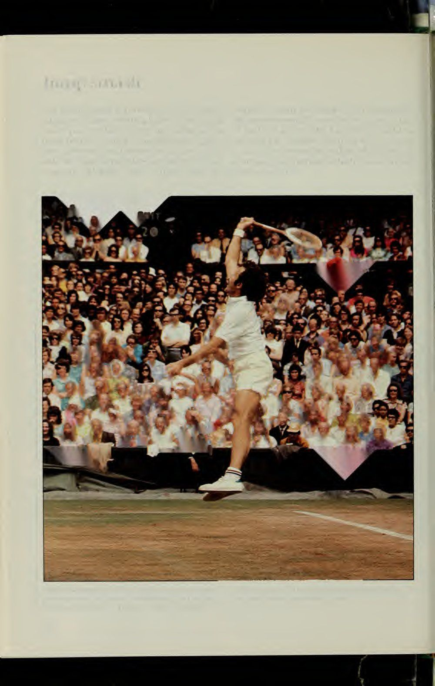
Hình 9.1: Đội hình đánh đôi căn bản và nguyên tắc bảo vệ trung lộ (The Center Theory).
Figure 9.1: Basic Doubles Formations and Defending the Middle Court.
Giống như việc giao bóng trong trận đấu đơn, việc giao phần lớn bóng sâu về phía trái tay của đối thủ, một cú đánh phòng thủ tự nhiên, là một thực hành hợp lý.
Tần suất bạn sử dụng các dịch vụ khác tùy thuộc vào điểm mạnh và điểm yếu của đối thủ cũng như tỷ số, nhưng bạn phải luôn buộc phải lùi về phòng thủ mà bạn có thể tung cú vô lê mạnh mẽ để duy trì thế chủ động.
Nên sử dụng loại giao bóng nào Vì chiến thuật chính của plav đôi là giao bóng và vô lê, các hướng dẫn tương tự để chọn loại giao bóng để sử dụng cũng như áp dụng cho giao bóng đơn và vollev plav.
Cách sử dụng giao bóng an toàn nhất là một cú giao bóng được thực hiện với tốc độ nhanh hơn và ít xoáy hơn so với cú giao bóng thứ hai thông thường của bạn.
Bạn có thể sửa đổi dịch vụ xoáy lên của mình một cách tốt nhất cho mục đích này và tôi khuyên bạn nên sử dụng dịch vụ này như một dịch vụ lý tưởng cho plav đôi.
Đơn giản chỉ cần đặt bóng xa hơn một chút về phía trước của bạn và không quá xa về phía vai trái và bạn sẽ tạo ra nhiều cú ném xoáy trên tấn công hơn}-.
Ở lần giao bóng thứ hai, bạn phải gặp ít rủi ro hơn nhưng vẫn mang lại lợi nhuận mang tính phòng thủ.
Sử dụng cùng một cú đánh xoay tròn với đủ sức mạnh để duy trì thế chủ động tấn công của bạn.
Như với tất cả các cú giao bóng thứ hai, hãy để độ xoáy tăng lên mang lại cho tôi tỷ lệ sai sót lớn hơn thay vì đánh bóng yếu và do đó tạo cơ hội cho đối thủ phản công.
Ai sẽ giao bóng trước Nếu bạn thắng lượt ném, bạn luôn chọn giao bóng trước, giống như trong đánh đơn, do đó, sau khi thắng ván mở màn, bạn sẽ dẫn trước ván đấu trong suốt set với đối thủ giao bóng để hòa vốn.
Với tư cách là một cặp, bạn phải luôn mở đầu bằng trò chơi giao bóng mạnh nhất của mình.
Điều này không cần phải tiến hành từ máy chủ mạnh nhất mà từ dịch vụ phù hợp nhất với chiến thuật giao bóng và vô lê của plav đôi.
Nếu bạn bắt đầu với trò chơi giao bóng tốt nhất, bạn sẽ chơi số lượng trò chơi tối đa trong đội hình đó.
Hãy nhớ rằng bạn có thể kết thúc một set trong trò chơi giao bóng mạnh nhất của bạn và sau đó mở bộ tiếp theo giao bóng theo cách tương tự (tuy nhiên, bạn chỉ nên làm điều này khi nó không liên quan đến việc thay đổi kết thúc của một trong hai đối tác).
Stan Smith và Bob Lutzassume có quan điểm chính thống khi bắt đầu một trong những trò chơi giao bóng của Smith.
Lần giao bóng đầu tiên của Smith sẽ tương tự như lần giao bóng thứ hai của anh ấy trong trận đấu đơn
CHIẾN LƯỢC NHÂN ĐÔI Giao bóng ở phần sân bên phải Mặc dù cú giao bóng xoáy lên đã được sửa đổi cho trái tay là cú giao bóng chính của bạn cho đánh đôi, bạn không nên bỏ lỡ cơ hội sử dụng cú giao bóng cắt của mình sang toàn bộ sân bên phải đối với cú thuận tay của người nhận thuận tay phải.
Hai sơ đồ bên phải cho thấy các vị trí khác nhau mà người giao bóng và đối tác của người giao bóng phải đảm nhận khi giao bóng từ giữa sân tới trái tay của người nhận hoặc rộng tới thuận tay.
Người giao bóng duy trì vị trí giao bóng gấp đôi thông thường của mình cho cả hai lần giao bóng.
Nếu đứng gần giữa sân hơn để cải thiện góc giao bóng cho cú trái tay thì người nhận bóng sẽ được cảnh báo về ý định của người giao bóng.
Bằng cách giữ vững lập trường, người giao bóng làm cho người nhận bóng duy trì vị trí của mình để có thể giao bóng rộng ở phía thuận tay.
Cách tiếp cận lưới của anh ấy sau khi giao bóng sẽ gần với phần giữa sân hơn bình thường khi giao bóng rộng về phía thuận tay.
Các đối tác của máy chủ đứng xa hơn về phía bên lề đối với dịch vụ lát cắt rộng.
Thuận tay Giao bóng lát rộng đến góc thuận tay của sân giao bóng bên phải.
Đối tác của máy chủ tiến gần hơn đến bên lề.
Trái tay Người giao bóng nhắm sâu tới góc trái tay của sân giao bóng bên phải bằng cách sử dụng cú giao bóng xoáy lên.
Đừng cảnh báo đối thủ bằng cách đứng quá gần điểm trung tâm.
Giao bóng sang phần sân bên trái Khi giao bóng cho đối thủ thuận tay phải ở phần sân bên trái, hầu hết các cú giao bóng của bạn phải hướng sâu về phía góc trái tay, như minh họa trong sơ đồ, bên phải.
Một lần nữa, cú giao bóng xoáy lên được sửa đổi là lý tưởng cho mục đích này.
Cho dù chỉ để đa dạng hay để tấn công một điểm yếu cụ thể của đối thủ, bạn nên dự trữ một số phương tiện tấn công thay thế.
Nếu đối thủ của bạn đang đứng gần đường biên của anh ta hơn và đang cố gắng chạy vòng qua quả giao bóng của bạn để thực hiện một cú trả giao thuận tay, thỉnh thoảng giao bóng ở giữa sân, rộng về phía thuận tay.
Một cú giao bóng phẳng hoặc cắt lát có thể tỏ ra hiệu quả hơn cú giao bóng xoáy lên.
Giải pháp thay thế thuận tay nên được sử dụng thường xuyên hơn nếu đối thủ của bạn mạnh về phía trái tay hoặc thuận tay trái.
Cú giao bóng cắt cũng có thể là một giải pháp thay thế hữu ích ở phía trái tay, cho phép bạn đánh bóng vào người người thuận tay phải, do đó khiến việc trả bóng trở nên cực kỳ khó khăn.
Cú giao bóng xoáy lên trái tay sâu đến góc trái tay của sân băng bên trái bằng cách sử dụng góc nhọn có được nhờ tư thế giao bóng đôi.
Tôi đồng đội của người giao bóng bảo vệ đường biên bằng những cú thuận tay của anh ta, người giao bóng cho anh ta chạy về phía trước.
Trả giao bóng Đó là điều thường xảy ra trong các trận đấu đôi đỉnh cao, khi trò chơi giao bóng và vô lê quá tốt, đến mức bế tắc xảy ra khi không bên nào có thể phá được trò chơi giao bóng của đối thủ.
Trước khi áp dụng tiebreak, các hiệp đấu đôi khi trở nên rất kéo dài cho đến khi một đội chơi đủ các pha tấn công chất lượng cao để giao bóng break.
Giống như trong trò chơi đánh đơn, ưu tiên hàng đầu của bạn với tư cách là người nhận bóng phải là giữ bóng trong plav.
Tuy nhiên, để giành chiến thắng trong các trận đấu đôi, quả giao bóng của đội bạn phải có chất lượng cao, buộc các cú vô lê phòng thủ từ máy chủ đến cho phép bạn và đối tác của bạn giành được thế chủ động tấn công từ đội giao bóng.
Vị trí nhận đôi Bạn sẽ thấy ở trang 221 rằng vị trí nhận đơn thông thường phía sau đường cuối sân không phải lúc nào cũng là vị trí tốt nhất cho vị trí đánh đôi.
Trong những sản phẩm chất lượng tốt tăng gấp đôi, mối đe dọa từ dịch vụ lớn đầu tiên không phải là yếu tố sống còn.
Đối thủ giao bóng của bạn sẽ tập trung vào việc đảm bảo sự thành công của quả giao bóng đầu tiên của anh ta và rất có thể sẽ sử dụng một quả giao bóng phụ để theo vào lưới.
Để cho phép bạn thực hiện cú trả bóng tấn công khi có thể, bạn nên chấp nhận rủi ro đã tính toán để đứng ngay bên trong đường biên ngang để nhận giao bóng.
Điều này sẽ mang lại cho bạn cơ hội đánh bóng sớm, trước khi vòng xoáy đưa bóng đi quá xa và có thể khiến người giao bóng đến hơi mất thăng bằng và quá xa lưới khi anh ta thực hiện cú trả bóng đầu tiên.
Nếu dịch vụ đầu tiên không thành công và máy chủ phải cung cấp dịch vụ thứ hai, hãy đứng gần hơn một chút.
Các cú trả bóng chéo sân hoặc dọc đường biên Mặc dù tỷ lệ thành công của các cú trả bóng được thực hiện trên đường biên ngang cao hơn so với suy nghĩ thông thường, tỷ lệ phần trăm hoàn vốn trong đánh đôi là chéo sân.
Việc lao xuống đường biên đối với người đánh lưới có thể dẫn đến việc mất điểm ngay lập tức vì nó mang lại một cú đánh chéo giữa bạn và đồng đội của người đánh lưới đối phương.
Tuy nhiên, việc hoàn vốn thành công có thể là người chiến thắng hoàn toàn.
Bạn sẽ có cơ hội thành công cao nhất ở phần sân bên phải, nơi bạn có thể thực hiện được cú trả bóng thuận tay trước cú vô lê trái tay của cầu thủ đối phương.
Hai sơ đồ bên phải cho thấy cơ hội tốt nhất để tấn công đường biên xảy ra như thế nào với các cú giao bóng xoay rộng đưa bóng vào đường biên để thực hiện cú trả bóng.
Từ vị trí này, khu vực mục tiêu hình tam giác sẽ tăng kích thước và rộng hơn.
Chơi vòng quanh cột dọc Slice sen-ice về phía thuận tay (màu xám) mở rộng khu vực mục tiêu hình tam giác bóng mờ, thậm chí cho phép thực hiện cú đánh quanh cột lưới (màu đen) bên dưới độ cao của lưới.
Đường chuyền bên lề Giao bóng phẳng tới thuận tay (màu xám)có thể cho phép đường chuyền xuống bên lề (màu đen) vào mục tiêu hình tam giác được tô bóng.
CHIẾN LƯỢC ĐÔI Lựa chọn điểm dừng tốt nhất Bốn sơ đồ bên dưới hiển thị các giao bóng cho thuận tay và trái tay ở cả sân bên phải và bên trái, cũng như các tùy chọn trả giao bóng dành cho bạn với tư cách là người nhận.
So với việc trả giao bóng trong trò chơi đơn, bạn có ít lựa chọn về giao bóng phản công hơn trong đấu đôi, đặc biệt khi chất lượng giao bóng luôn cao.
Như có thể thấy bên dưới, giao bóng tốt không mang lại cho bạn sự lựa chọn nào khác ngoài việc chơi lượt trả A, lùi qua lưới vào phần sân của người giao bóng.
Các dịch vụ kém hiệu quả hơn sẽ cho phép bạn chơi return B, hoặc thậm chí returnC trong một số trường hợp để tấn công một điểm yếu cụ thể.
Việc bạn lựa chọn trả gấp đôi cũng phụ thuộc vào điểm mạnh và điểm yếu của đối tác máy chủ.
Những đòn trả về tấn công người chơi mạng rõ ràng sẽ hấp dẫn hơn nếu bạn có thể tận dụng điểm yếu.
Sân bên phải Giao bóng trái tay A Ném chéo sân tới chân người giao bóng B Nhúng để tấn công trái tay của người giao lưới C Lobovernetman Giao bóng thuận tay A Đường chuyền chéo tới chân người giao bóng B Đường chuyền dọc ở phía trái tay của người giao lưới C Xuống đường lốp bóng Sân bên trái Giao bóng trái tay A Cú giao bóng chéo tới chân người giao bóng B Đường chuyền chéo tới chân người giao bóng B Đường chuyền chéo ở phía thuận tay của người đánh lưới Giao bóng thuận tay A Cảm giác chéo sân của người giao bóng B Góc qua người đánh lưới C Lob ở giữa vạch cuối sân (baseline)
Chơi Netplay Net là trọng tâm của chiến lược đánh đôi và thành công của bạn từ sân trước sau khi giao bóng hoặc nhận giao bóng thường sẽ quyết định kết quả của trận đấu đôi. Cú vô lê đầu tiên của người giao bóng sẽ bắt đầu cuộc tấn công lưới của đội giao bóng, như minh họa bên dưới.
Nếu người nhận đã chọn chơi với đối tác của máy chủ thì người chơi đó, đã ở vị trí lưới, sẽ ở vị trí tốt nhất để giành được điểm.
Bất kỳ quả bóng nào do đối phương ném cho anh ta mà không phải là cú đánh tốt sẽ được đưa đi để ghi điểm, như được hiển thị bên dưới bên phải. Khi giao bóng ở phần sân bên phải, người đánh lưới thuận tay phải phải che chắn giữa sân cho người giao bóng của mình bằng cú vô lê thuận tay.
Ở phần sân bên trái, phải có thỏa thuận về loại bóng mà người đánh lưới để lại.
Đối tác của người nhận có vai trò tương tự như người quản lý mạng của máy chủ nếu người nhận có thể quay trở lại đủ tốt để chủ động tấn công.
Sau đó, đối tác của người nhận bóng phải di chuyển về phía trước để thực hiện cú vô lê bất kỳ câu trả lời yếu nào ở hiệp của mình trong khi người nhận bóng di chuyển về phía trước để cùng anh ta ở phần sân trước.
Vai trò của người giao bóng Nếu người giao bóng buộc người nhận phải trả lời phòng thủ thì người giao bóng phải ở vị trí cú vô-lê đầu tiên tốt (xem trang 205) để tấn công về nhà.
Đường chạy về phía trước của người giao bóng không được trực tiếp dọc theo đường của người phát bóng như trong đánh đơn, mà phải hướng về phía giữa nửa sân của anh ta, hơi lệch về phía đường giữa.
Cú vô lê đầu tiên của người giao bóng phải được đấm sâu vào phần sân của người nhận, như trong sơ đồ bên dưới, nơi người nhận vẫn ở sân sau, hoặc tốt nhất là tiến qua phần đất của người nhận. Một cú vô lê mạnh sẽ kẹp người nhận lùi lại hoặc lúng túng khi bước chân này tiến lên.
Cú vô lê như vậy sẽ cho phép máy chủ di chuyển về phía trước một lần nữa.
Cú vô lê đầu tiên của người giao bóng Giao bóng về phía trái tay ở phần sân bên phải, người giao bóng chạy về phía trước và giữ ở phần sân bên phải để đáp ứng cú trả bóng, tránh đối tác của người giao bóng (màu xám).
Cú vô lê tốt nhất là cú chuyền chéo có góc sâu (màu đen).
Vai trò của đối tác của người giao bóng Vai trò chính của đối tác giao bóng là bao quát toàn bộ phần sân trước của anh ta càng tốt với sự nhấn mạnh vào trung tâm của sân.
Đây là lý do tại sao anh ta nên đứng gần giữa sân hơn một chút, từ đó anh ta có thể cắt đứt mọi đường chuyền ngang sân đi qua phần giữa sân của anh ta.
Nếu đối tác của máy chủ thực hiện điều này một cách hiệu quả thì máy chủ sẽ tự tin hơn khi tiếp cận mạng của mình.
Đối tác của người giao bóng cũng phải luôn chuẩn bị sẵn sàng để chặn cú trả bóng của người nhận bóng, đặc biệt là từ phần sân bên phải, nơi, với tư cách là người thuận tay phải, anh ta có thể thuận tay đánh bóng trước khi nó rơi xuống dưới độ cao.
Tuy nhiên, đừng bao giờ đánh chặn trừ khi bạn chắc chắn thực hiện được cú vô lê có khả năng giành điểm.
Đánh chặn cơ bản Một cú giao bóng sâu và rộng ở phía thuận tay đã gây ra một cú trả bóng chéo bàn cứng (màu xám).
Đối tác của người giao bóng đánh giá ý định của người nhận và chặn cú vô lê giữa cặp đối phương (màu đen).
CHIẾN LƯỢC NHÂN ĐÔI Vai trò của đối tác của người nhận Đối tác của người nhận luôn có nguy cơ bị mất cảnh giác (như trong trường hợp đối tác của máy chủ chặn, ngược lại) nếu anh ta không cảnh giác với diễn biến của trò chơi và di chuyển có mục đích trong khi đối tác của anh ta và cặp đối phương chơi.
Cũng giống như đối tác của người giao bóng nên chặn khi có cơ hội, đối tác của người giao bóng cũng nên cảnh giác với khả năng bị chặn, đặc biệt là khi một cú đánh mạnh từ đối tác của anh ta giành được thế chủ động tấn công, như trong ví dụ bên phải.
Đột ngột chuyển từ phòng thủ sang tấn công đòi hỏi phải có sự tỉnh táo đáng kể.
Với tư cách là đối tác của người nhận bóng, bạn sẽ không thể thực hiện một cú vô lê tấn công trừ khi bạn tiến về phía trước ở một vị trí lưới hung hãn hơn.
Sự thành công của bạn phụ thuộc vào việc đánh giá khi nào nước đi này sẽ có hiệu quả và quyết định được đưa ra là tính thời gian di chuyển của bạn để việc đánh chặn có thể được thực hiện hiệu quả nhất có thể.
Đối tác của người nhận bóng đánh chặn Một cú giao bóng có độ dài ngắn hơn cho phép người nhận đánh một cú trả bóng xoáy lên mạnh mẽ, góc cạnh (màu xám).
Đối tác của người nhận nhìn thấy cơ hội để tiến về phía trước và chặn câu trả lời (màu đen) của máy chủ.
David Lloyd và Mark Cox song song vào lưới trong đội hình chuyền bóng chuẩn xác.
Cả hai người đàn ông đều che chắn tốt khu vực giữa sân, nhưng Llovd thuận tay phải tự mình thực hiện cú đập khi Cox chăm chú theo dõi.
Cox đã sẵn sàng rút lui sau một pha lốp bóng phản công sâu từ phía đối phương.
MẠNG TRÒ CHƠI Bốn người chơi trên lưới Với cả hai cặp đều cố gắng đạt được các vị trí mạnh ở sân trước, thường xảy ra trường hợp trong các trận đấu đôi hạng nhất mà cả bốn người chơi đều hội tụ trên lưới.
Tốc độ mà các cú vô lê sẽ vượt qua lưới trong những tình huống này giới hạn thời lượng của những cuộc chạm trán như vậy nhiều nhất là vài giây, vì tất cả các cầu thủ đều cố gắng tìm khoảng trống để vượt qua hoặc buộc phải phạm lỗi.
Trong những tình huống này, bạn thường có thể đánh bóng vào người đối phương.
Tuy nhiên, trò chơi này đôi khi phản tác dụng khi nạn nhân của bạn tung cú vô lê thành công, kết quả từ hành động phản xạ thuần túy, như trong ví dụ dưới đây.
Những cú vô lê phản xạ hiệu quả nhất được thực hiện bằng cú đánh trái tay để nhắm vào hông thuận tay của cơ thể đối thủ, nếu không bạn có thể phải đối mặt với những pha trả bóng khó khăn bất ngờ.
Đối tác của người nhận thực hiện một phản xạ quay trở lại Đối tác của người nhận đã tiến về phía trước, dự đoán sẽ bị chặn.
Cú vô lê đầu tiên của máy chủ rất mạnh, buộc người nhận phải trả lời yếu.
Đối tác của người nhận thực hiện một cú vô lê phản xạ từ cú vô lê thứ hai khó trả lời của máy chủ để giành điểm.
Phản xạ cú vô-lê Hầu hết các cú đánh quần vợt được tạo ra thông qua phản ứng, khi não phản ứng với cú đánh của đối thủ và kích thích cơ thể hành động. Khi bạn chơi một cú vô lê phản xạ, bạn chỉ đơn giản là thực hiện một phản ứng không chủ ý giống như cách bạn chớp mắt để bảo vệ mắt mình. Khi một quả bóng tennis bị đánh mạnh vào bạn, cơ thể bạn sẽ phản ứng bằng một hành động phản xạ, phản ứng được hệ thần kinh của bạn khởi xướng trong một phần giây trước thông tin đó.
chạm tới não của bạn.
Bạn có thể dễ dàng đỡ bóng bằng động tác chuyền bóng trái tay.
Giả vờ Đánh lừa đối phương là một phần của chiến thuật đánh đôi nâng cao.
Di chuyển giả là một phương pháp hữu ích để đối tác của máy chủ sử dụng để chống lại người nhận, như trong chuỗi hai sơ đồ bên dưới.
Bằng cách di chuyển một bước về phía giữa sân, hoặc thậm chí chỉ đơn giản là lắc lư về phía người gần chân ở giữa sân, đồng đội của người giao bóng sẽ dụ người nhận bóng đánh bóng xuống đường biên vì nghĩ rằng người đánh lưới đang đoán trước một pha trả lời chéo sân.
Tuy nhiên, ý định của đối tác giao bóng là di chuyển nhanh chóng trở lại để thực hiện cú vô-lê chéo sân giữa các đối thủ của anh ta.
Việc giả vờ di chuyển theo cách này có thể thành công miễn là phong trào liên quan không được thực hiện quá mức.
1 Khi máy chủ chạy vào mạng sau cú giao bóng của anh ta, đối tác của máy chủ sẽ giả vờ di chuyển về phía trái tay, dự đoán sẽ bị chặn.
Người nhận ghi nhận tro này thực hiện cú đánh của mình.
2 Người nhận hướng cú đánh của anh ta xuống đường biên (màu xám), nhưng đối tác của người giao bóng đã tính thời gian quay trở lại của anh ta để thực hiện cú vô lê thuận tay một cách hoàn hảo và thực hiện cú đánh theo góc thắng (màu đen) giữa người nhận và đối tác của người nhận để giành điểm.
CHIẾN LƯỢC ĐÔI Bóng cận biên Hầu hết các trận đấu đôi đều diễn ra ở giữa lưới hoặc trực tiếp qua giữa lưới, điều quan trọng là bạn không cản đường nhau trên lưới và người chơi ở vị trí tốt nhất hoặc được trang bị tốt hơn sẽ lấy bóng.
Một quả bóng đi thẳng qua giữa sân thường được thực hiện bởi vận động viên ném bóng có thể sử dụng thuận tay.
Đấu thủ nên thực hiện các cú đánh chéo sân trừ khi việc đánh chặn có cơ hội thành công cao.
Cầu thủ bên trái sẽ thực hiện cú lốp bóng vào giữa sân với điều kiện anh ta thuận tay phải.
Nếu không thì cầu thủ ở trên cao gần nhất hoặc tốt hơn nên nhận bóng. Khi một trong hai người ném bóng có thể lấy bóng, theo nguyên tắc chung, cầu thủ chơi bóng cuối cùng sẽ thực hiện cú đánh tiếp theo thay vì đối tác "lạnh lùng" bước vào. Tội lỗi cơ bản của đấu đôi là cả hai đấu thủ đều để bóng cho người kia chơi.
Tốt hơn là bạn nên va chạm vợt trong thời gian dài có một cầu thủ đánh trả bóng.
Tuy nhiên, bạn sẽ thấy rằng khi bạn cải thiện mối quan hệ trong lối chơi đôi của mình, những biện pháp nguy hiểm như vậy sẽ tỏ ra không cần thiết và bạn sẽ phát triển một "cảm giác" về việc ai sẽ bước vào để nhận những quả bóng cận biên.
Gọi trong đội đôi tốt nhất, mỗi người chơi sẽ tự động biết ý định của người kia là gì trong phần lớn các tình huống.
Trong khi bạn đang phát triển loại mối quan hệ này, bạn nên hình thành thói quen gọi điện để làm rõ ý định của mình, đặc biệt là trong những tình huống căng thẳng trên lưới.
Bạn nên gọi: khi bạn muốn chơi bóng hoặc khi bạn muốn đối tác của mình chơi bóng trong những tình huống có sự nhầm lẫn; khi bạn muốn đối tác của mình rời khỏi quả bóng vì nó sẽ rơi ra ngoài sân và khi bạn muốn đối tác của mình thay đổi vị trí.
Chỉ sử dụng một từ lệnh và quyết định thuật ngữ của bạn trước khi bắt đầu chơi.
Tôi khuyên bạn nên gọi là "của tôi" nếu bạn nghĩ rằng bạn có cơ hội tốt hơn với một quả bóng nào đó, "của bạn" khi bạn muốn đối tác của mình lấy bóng, "ra" khi bóng bật ra ngoài sân và "thay đổi" nếu trận đấu buộc phải đổi bên.
Người chơi có kinh nghiệm hơn có thể nhắc đối tác của mình tiến lên hoặc rút lui trong cuộc tấn công hoặc phòng thủ bằng cách gọi "lên" hoặc "quay lại".
Anh ta cũng có thể gọi "ở lại" khi đối tác của anh ta thực hiện một pha đánh chặn và đường chuyền ngang phải đứng vững, hoặc "phục hồi" nếu anh ta muốn anh ta quay trở lại phần của mình.
John McEnroe và Peter Fleming thể hiện tinh thần đồng đội* phối hợp tốt trên lưới khi McEnroe nhận bóng vào giữa đối phương và thực hiện một cú vô lê khéo léo.
Không có nguy cơ Fleming cố gắng xé bóng và anh ấy vẫn ở vị trí bọc lót tốt khi McEnroe đóng vai trò thống trị.
Lobbing Cú lốp bóng không chỉ an toàn nhất mà ở nhiều hình thức khác nhau, nó còn là một trong những cú đánh linh hoạt hơn được sử dụng trong trò chơi đánh đôi .
Đối với các cú đánh đơn, cú lốp bóng có thể được sử dụng trong tấn công và phản công, nhưng mục đích chính của nó là phòng thủ.
Vì lối chơi đánh đôi thiên về tấn công từ khu vực lưới, nên việc phải thực hiện các pha lốp bóng phòng thủ từ đường cuối sân có nghĩa là bạn đã bị điều động một cách tồi tệ.
Mục đích của bạn khi sử dụng cú lốp bóng là để câu giờ trong khi hồi phục để có thể lấy lại thế chủ động tấn công và quay trở lại lưới.
Khi lốp bóng trong phòng thủ, đối tác không thực hiện cú lốp bóng đầu tiên phải rút lui cùng với người lốp bóng để tạo ra một biện pháp phòng thủ song song cho đối phương đang đập bóng từ sân trước của họ.
Bạn có thể chọn lốp bóng phòng thủ như một chiến thuật được thiết kế để phá vỡ tinh thần của đối thủ nếu bạn đánh giá một hoặc cả hai người trong số họ không nhất quán trong lối chơi trên cao của họ.
Được sử dụng một cách khéo léo, cú lốp bóng phòng thủ sâu có thể dễ dàng trở thành một phương tiện phá hủy sự tự tin của tất cả mọi người, ngoại trừ những cầu thủ giỏi nhất.
Cú lốp bóng phản đòn là một câu trả lời hữu ích để đẩy đối thủ đang tấn công lưới của bạn ra khỏi lưới.
Mục đích của bạn là khơi gợi những cú lốp bóng phòng thủ yếu từ đối thủ mà bạn có thể đánh bại để giành điểm. Cú lốp bóng hoàn toàn mang tính tấn công, đánh bằng xoáy lên và được sử dụng để giành điểm hoàn toàn, không nên được sử dụng từ quá xa sân của bạn nếu không nó có thể giảm xuống trước khi tiêu diệt được đối phương.
Lốp phòng thủ Lobbing phòng thủ theo cặp đôi nên cao và sâu để thành công và bạn nên hoạt động như một cặp.
Như có thể thấy trong sơ đồ, đội hình lốp bóng phòng thủ là cả hai người chơi ở phía sau đường cuối sân để che chắn cho pha đánh đầu có thể xảy ra của đối phương.
Khi ở vị trí này, có khả năng điểm sẽ được phân ra bằng cách một đội lốp bóng và đội kia đập bóng.
Hai ví dụ về lốp bóng phòng thủ, được hiển thị bên phải, minh họa các cú lốp bóng hiệu quả nhất để đấu với các cầu thủ ở cả sân bên phải và bên trái.
Trong cả hai trường hợp, lốp bóng đã được áp dụng như một chiến thuật và người nhận bóng đã chọn đứng lùi xa hơn bình thường để thực hiện giao bóng tích cực.
Đối tác của người nhận tham gia cùng người nhận ở phía sau vạch cuối sân (baseline) khi người nhận thực hiện cú trả bóng đã ném.
Ở phần sân bên phải, nhắm sâu xuống đường biên từ phần sân bên phải qua vai trái của người đánh lưới.
Ở phần sân bên trái, bạn vẫn nên lốp bóng dọc biên thay vì mạo hiểm thực hiện một cú lốp bóng chéo bàn đối với người giao bóng tới.
Cú giao bóng bên phải (màu xám) được thực hiện muộn và cú lốp bóng được thực hiện (màu đen) sâu hơn đối tác của người giao bóng.
RP Bên trái giao bóng cho trái tay (màu xám) được lốp bóng (màu đen), một lần nữa, qua đối tác của người giao bóng, sâu vào góc bên phải.
RP
CHIẾN LƯỢC NHÂN ĐÔI Phản lốp bóng Phản lốp chiến thuật hiệu quả có thể được sử dụng để chống lại một đội đôi đánh lưới.
Nó đặc biệt hữu ích khi cú trả giao bóng của bạn không hiệu quả. Một cú lốp bóng phản công là một câu trả lời tốt hơn nhiều đối với người đánh lưới so với một cú đánh hoặc đường cắt yếu, cao có thể dễ dàng bị tấn công.
Một cú lốp bóng phản công thành công sẽ cho phép bạn và đối tác của mình di chuyển sân lên vị trí vô lê.
Từ đây, bạn sẽ có thể đối phó với phản ứng phòng thủ có thể xảy ra từ đối thủ của mình.
Sơ đồ dưới đây cho thấy động tác lốp bóng cơ bản được sử dụng để phản công thay cho đòn đánh trả định hướng.
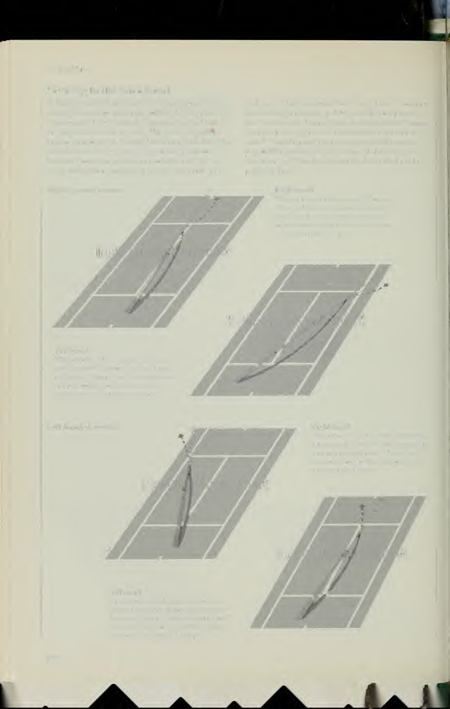
Hình 9.2: Đột kích cắt mặt cướp bóng (The Poach) kết hợp ám hiệu giao bóng trong đánh đôi đỉnh cao.
Figure 9.2: The Poaching Net Move and Signal Coordination in Doubles.
Theaim sẽ cử cầu thủ lưới chạy lại để chơi bóng sau khi bóng bật ra.
Ngay khi đối tác của bạn thấy rằng người đánh lưới không thể phá được cú lốp bóng, anh ta nên di chuyển về phía trước đến vị trí lưới. Khi người giao bóng thấy điều gì đang xảy ra, anh ta sẽ phải dừng việc chạy về phía trước của mình và lùi về phía sau đường cuối sân để xếp hàng với đối tác của mình trong phòng thủ, khi bạn tham gia cùng đối tác của mình trên lưới.
Cú lốp bóng phản công như một cú trả về cho người phát bóng ở phần sân bên phải hoạt động tốt ở chỗ cú lốp bóng của bạn có thể được đặt trên vai sau của người đánh lưới thuận tay phải.
Với việc tập trung nhiều vào việc giành được vị trí lưới trong trận đấu đôi bằng cách sử dụng lợi nhuận giao bóng thấp, việc chuyển sang một cú trả giao bóng phản công chứa đựng một yếu tố bất ngờ hữu ích.
Kiểu đánh này cũng có thể khiến đội đối phương bối rối vì rất có thể người giao bóng sẽ ở vị trí tốt nhất để thực hiện cú trả bóng lốp bóng của bạn.
Để làm được điều này, anh ta phải băng qua sân và đồng đội của anh ta phải che chắn phía người giao bóng - một thủ thuật đôi khi có thể gây ra sự cố.
Phản công cú giao bóng của bạn sẽ trả lại cú giao bóng về phía thuận tay (màu xám) mà máy chủ bắt đầu theo lên lưới.
Một cú lốp bóng sâu (màu đen) qua vai của người lưới, buộc đối phương phải rút lui và cho phép bạn tiếp cận lưới.
Lốp bóng tấn công Cú lốp bóng tấn công được đánh bằng xoáy lên sắc nét có thể, giống như cú lốp bóng phản công, được chơi như một quả trả giao bóng, nhưng chỉ đối với những cú giao bóng kém, có độ dài ngắn.
Cú lốp bóng tấn công thường được chơi với những quả bóng ngắn mà bạn có thể tiến lên và thực hiện ở độ cao ngang eo.
Thực hiện một cú đánh như vậy sẽ gây bất ngờ cho đội tấn công, những người nghĩ rằng họ đã che chắn sân tốt, như trong hình minh họa bên dưới.
Cặp giao bóng và vô lê được định vị hoàn hảo trên lưới sau khi thực hiện tốt cú giao bóng và tiếp cận plav.
Tuy nhiên, người giao bóng thực hiện cú vô lê giữa sân (màu xám) thiếu độ xuyên thấu.
Người nhận bóng, người trước đó đã bị ghim lại gần đường biên ngang của mình, có thể tiến lên nhận bóng.
Anh ta nhận thấy rằng đối thủ của anh ta đều ở quá gần lưới và do đó thực hiện một cú lốp bóng xoáy lên, đưa bóng qua vai trái của người giao bóng để đạt hiệu quả tối đa, giành được điểm.
Ngay cả khi người giao bóng thuận tay phải có thể tiếp cận được bóng, một cú đánh hiệu quả sẽ rất khó thực hiện vì anh ta buộc phải nhảy lùi về phía sau và sang bên trái.
Các lobhas tấn công được chơi tốt hoặc không chơi chút nào.
Nếu bạn chỉ đơn giản cho đối thủ của mình một cú đập bóng dễ dàng, bạn sẽ không chỉ mất điểm ngay lập tức mà còn khiến sự tự tin của đội đối phương tăng lên đáng kể.
Điều này cũng áp dụng cho lốp bóng phòng thủ và lốp bóng phản công, nhưng với lốp bóng tấn công thì tỷ lệ mắc lỗi của bạn là nhỏ nhất.
Người nhận lốp bóng để giành điểm Máy chủ tung cú vô lê yếu trong khi trao đổi trên lưới (màu xám tôi cho phép người nhận chạy về phía trước và thực hiện một cú lốp bóng xoáy lên bất ngờ (màu đen) theo góc cạnh để chỉ cần dọn sạch vợt của người giao bóng và tiếp đất trong hẻm.
Overheadplay Khi bạn và đối tác của bạn ở trên lưới trong đội hình chuyền bóng cơ bản (cả hai bạn6V2 cách lưới 10 feet và cách đường giữa 8 feet), bạn sẽ ở vị trí lý tưởng để đối phó với hầu hết các cú đánh hướng vào bạn trong một cuộc tấn công trực diện.
Như bạn đã thấy ở trang 221, chỉ có những dải sân hẹp giữa bạn và mỗi đường biên bên dưới mới tồn tại làm mục tiêu.
Tuy nhiên, tình huống này sẽ thay đổi ngay khi đối thủ của bạn quyết định lốp bóng.
Vị trí chuyền bóng cơ bản của bạn sau đó phải trở thành vị trí di động.
Bạn phải cảnh giác, cảnh giác và nghiên cứu đối thủ để có thể đoán trước được ý định của họ và phản ứng sớm.
Khi không có nhu cầu cụ thể để di chuyển ra xa nhau, bạn nên giữ ngang bằng với đối tác của mình, vì vậy, khi quả bóng bay lên từ đối thủ của bạn, hãy lùi lại vài bước cùng lúc, cả hai đều sẵn sàng đập vỡ.
Tại thời điểm này, áp dụng hai quy tắc vàng về đập bóng trong đánh đôi: không để bất kỳ quả bóng nào rơi qua đầu bạn mà không đập trúng nó, và luôn đập quả lốp bóng của chính bạn (những quả rơi vào nửa sân của bạn). Khi bạn đập bóng, hãy nhớ rằng chính cú đập sâu và cú đập góc, được thể hiện ngược lại, sẽ giành được hầu hết điểm trong các trận đấu đôi.
Lý do để suy nghĩ tích cực rằng không có cú lốp bóng nào bay qua đầu bạn là vì một khi cú lốp bóng đánh bại bạn, đội của bạn sẽ tự động ở thế phòng thủ ngay cả khi bạn có thể chạy lùi và lấy lại bóng-vị trí lưới quan trọng của bạn sẽ bị mất.
Chịu trách nhiệm về những cú lốp bóng của mình sẽ đảm bảo rằng cả hai người chơi luôn cảnh giác trên lưới và sẽ tránh mọi hiểu lầm có thể xảy ra do việc thay đổi vị trí bằng cách chạy theo đường chéo.
Chỉ trong một số trường hợp ngoại lệ, bạn nên che chở cho đối tác của mình, một ví dụ được thể hiện ngược lại.
Dự đoán các cú lốp bóng Lối chơi trước sân tốt phụ thuộc vào khả năng dự đoán để bạn có thể đưa ra biện pháp phòng ngừa hiệu quả nhất trước lối chơi của đối thủ.
Hai sơ đồ, phải, cho thấy bạn phải làm việc cùng nhau như thế nào, di chuyển song song để đối mặt với cuộc tấn công của đối thủ. Khi một cú lốp bóng hướng về phía bạn, hãy cùng nhau rút lui, như thể hiện trong sơ đồ phía trên bên phải, nhưng chính người chơi đang che chắn cho phía mà quả bóng phải đánh vào cú đập.
Nếu quả bóng rơi giữa bạn, quy tắc tương tự dành cho ai lấy bóng được áp dụng như cách chơi lưới (xem trang 229).
Nếu trò chơi khiến đối thủ của bạn đứng về bên này hay bên kia sân của họ, hãy đảm bảo rằng, với tư cách là một đội, bạn tiếp tục thể hiện một mặt trận thống nhất.
Điều này sẽ đòi hỏi phải di chuyển sao cho đường tưởng tượng nối bạn và đối tác của bạn vẫn vuông góc với hướng chơi, như minh họa trong sơ đồ, bên dưới bên phải.
Bằng cách này, bạn vẫn ở vị trí tốt nhất để thực hiện những cú đánh góc cạnh từ trên cao khiến đối thủ của bạn bị mắc kẹt.
Rút lui không đồng loạt Avolley buộc người nhận và đồng đội của anh ta phải rút lui. Mong đợi một cú lốp bóng, người giao bóng và đồng đội của anh ta cùng nhau rút lui khỏi lưới.
Wheeling Một cú vô lê góc cạnh có lực thu rộng.
Máy chủ và đối tác của anh ấy sắp xếp lại.
CHIẾN LƯỢC ĐÔI Che cho đối tác của bạn Có một số tình huống ngoại lệ trong đó việc che thùy đang rơi vào phần sân của đối tác là giải pháp hợp lý duy nhất.
Một trong những tình huống này được thể hiện trong loạt sơ đồ dưới đây.
Hãy nhớ rằng nếu bạn phải đập vào phần sân của đối tác, đối tác của bạn cũng phải vượt qua và che chắn phần ban đầu của bạn.
Trò chơi bên dưới bắt đầu với việc người nhận đánh một quả bóng ngắn, kém mà người giao bóng cho rằng đối tác của anh ta sẽ thực hiện một cú đánh thắng từ rất gần lưới.
Tuy nhiên, máy chủ thông báo rằng người nhận đang phục hồi và có thể sẽ thực hiện một cú lốp bóng phòng thủ sâu nên anh ta lùi lại một chút để che chắn đường thùy dự kiến này đã sẵn sàng vượt qua.
Đối tác của máy chủ rút lui theo đường chéo để chiếm vị trí phòng thủ cơ bản của máy chủ.
1 Người nhận thực hiện cú trả bóng yếu (màu xám) mà đối tác của người giao bóng di chuyển về phía trước để gặp và tung cú vô lê (màu đen).
Bộ thu bắt đầu khôi phục nên máy chủ sẽ quay trở lại.
2 Người nhận thực hiện một cú lốp bóng phòng thủ sâu tuyệt vọng (màu xám), máy chủ tiếp tục thực hiện cú lốp bóng theo đường chéo.
Đối tác của máy chủ đổi bên.
Định vị các cú đập của bạn Tất cả các kiểu đập mà bạn đã học trong phần các cú đánh đều có vai trò của chúng trong thi đấu đôi.
Tuy nhiên, vị trí hiệu quả nhất cho các cú đánh của bạn là ở góc nhọn, tốt nhất là vào các con hẻm hoặc sâu đến vạch cuối sân (baseline), giữa các đối thủ.
Ví dụ về cả hai sự thay thế này được trình bày dưới đây.
Hiệu quả của các vị trí đập vỡ của bạn phụ thuộc vào cách bạn tìm cách tránh cả hai đối thủ của mình.
Cú đập góc nhọn thường là cách duy nhất để tránh xa hai đối thủ lốp bóng cố thủ ở vạch cuối sân (baseline) của họ như minh họa bên dưới.
Cơ hội chia cắt đối thủ của bạn bằng một cú sút sâu sẽ lộ diện nếu bạn có thể bắt được đối phương đang di chuyển vào vị trí lưới. Một cú chuyền bóng tốt thường có thể đạt được điều này (xem sơ đồ phía dưới).
Người chiến thắng Angledsmash Một cú lốp bóng ngắn (màu xám) từ người nhận phòng thủ cho phép người chiến thắng cú đập góc (màu đen).
Người chiến thắng cú đập sâu tôi ném bóng (màu xám) khuyến khích người nhận tiến lên.
s «.t- ver đập sâu vào giữa (màu đen) khiến người nhận và đối tác hi^ bị mắc kẹt.
Đội hình và tình huống chiến thuật Ý tưởng sử dụng các đội hình khác nhau trong đánh đôi là để khai thác điểm yếu của đối phương, chặn điểm mạnh của họ, che đậy điểm yếu của bạn hoặc sử dụng tối đa điểm mạnh của chính bạn.
Trong đội hình đánh đôi đầu tiên trong lịch sử quần vợt sân cỏ, cả hai tay vợt đều đứng lùi ở vạch cuối sân. Ngày nay, đây được coi là một cấu hình phòng thủ xuất phát và chỉ được sử dụng như một biện pháp cực đoan hoặc có thể được sử dụng để phá vỡ sự tự tin của đối thủ.
Chính anh em nhà BritishDoherty, vào đầu thế kỷ này, đã giới thiệu đội hình người chơi duy nhất được quốc tế chấp nhận ở tuyến cơ sở và ngay bên trong tuyến giao bóng.
Các biến thể về đội hình và các mưu đồ chiến thuật đã được lên kế hoạch sẵn có gần như vô tận.
Tuy nhiên, đội hình thay thế thành công nhất và được sử dụng phổ biến nhất là đội hình Australian, được mô tả dưới đây và ngược lại.
Đội hình này, cùng với các tín hiệu liên quan đến việc săn trộm và lừa đảo, được trình bày ở các trang tiếp theo, được hầu hết người chơi ở cấp độ vô địch và giải đấu biết đến và sử dụng, nhưng chúng có thể được thử nghiệm và sử dụng nhiều hơn ở cấp trường và câu lạc bộ nơi chúng sẽ đạt được kết quả thành công đồng thời làm phong phú và phát triển lối chơi trận đấu.
Có những mánh khóe quá phức tạp trong đấu đôi, và bạn nên nhớ rằng sự thành công của bất kỳ đội hình hoặc phương pháp truyền tín hiệu nào đều phụ thuộc vào tính đơn giản của nó.
Nếu quá bận tâm, nó sẽ khiến những người thực hiện nó bối rối ngay khi quả bóng rời khỏi đường đi đã định.
Đội hình bình thường và phòng thủ Hai sơ đồ, bên phải, hiển thị đội hình đôi đầu tiên với cả hai người chơi ở vạch cuối sân (baseline) so với đội hình một lên, một hậu vệ thông thường ngày nay.
Đội hình hậu vệ của cả hai người chơi vẫn có tác dụng hạn chế khi lối chơi phòng thủ hoàn toàn có thể giành chiến thắng trong ngày với cả hai người chơi đều chuẩn bị bắt đầu lốp bóng càng sớm càng tốt.
Đội hình Úc Đội hình Úc, song song, có thể được áp dụng bằng hơi nước đôi khi giao bóng.
Thay vì đối tác của người giao bóng đứng ở sân đối diện với người giao bóng khi bắt đầu lượt đấu, anh ta đứng ở cùng một sân với người giao bóng.
Đội hình này có thể đặc biệt hiệu quả đối với một cầu thủ có cú đánh mạnh nhưng chỉ theo một hướng, hoặc đối với một cầu thủ có cú đánh yếu chỉ có thể trả bóng cao qua lưới.
Trong đội hình của Australia, phần sân bên trái hoặc bên phải được cố tình để ngỏ trong khi phần sân còn lại được người đánh lưới bảo vệ nghiêm ngặt.
Đội hình này được thiết kế để thu hút một phát bắn cụ thể và ngăn chặn sự đáp trả mạnh mẽ đã thúc đẩy sự thay đổi.
Bởi vì người giao bóng và đối tác của anh ta được bố trí trong cùng một sân, người giao bóng phải đứng càng gần điểm trung tâm càng tốt để anh ta có thể di chuyển nhanh chóng vào sân trống.
Đối tác của máy chủ chiếm một vị trí mạng hơi xa hơn bình thường và gần đường trung tâm hơn một chút.
Vị trí này cho phép người đánh lưới đối phó với những cú trả bóng chéo sân trong khi che chắn một cú lốp bóng tấn công tiềm năng.
Đội hình của Australia ở sân bên trái Người giao bóng thuận tay phải đứng gần tâm điểm trong khi đồng đội của anh ta chiếm vị trí lưới trong cùng sân đối diện với cầu thủ đánh lưới của đội đối phương.
CHIẾN LƯỢC ĐÔI Sử dụng đội hình của Úc Ba biểu đồ bên dưới hiển thị đội hình của Úc đang được sử dụng trong các tình huống khác nhau Trong sơ đồ đầu tiên, người nhận bóng thuận tay phải và đã đánh bại người giao bóng đến bằng một cú trả ngược tay chéo sân mạnh mẽ và không bao giờ đánh xuống đường biên.
Áp dụng đội hình của người Úc, đối tác của người giao bóng hiện đang trực tiếp trên đường quay trở lại sân chéo và sẽ có cơ hội tốt để thực hiện nó.
Người nhận bóng buộc phải đánh bóng yếu hơn xuống đường biên theo cú vô lê thuận tay mạnh mẽ của người giao bóng tới.
Người giao bóng có lựa chọn thay thế là chơi một cú lốp bóng chéo bàn (thường là sự thất bại của người nhận thuận tay phải trong việc giao bóng Slice về phía trái tay (màu đen) với đội giao bóng trong đội hình Úc sẽ buộc một cú trả bóng dọc biên mà người giao bóng có thể vô lê (màu xám). Đối tác của người giao bóng phải lưu ý đến cú lốp bóng chéo sân (chấm). Đội hình của Úc), nhưng đối tác của người giao bóng nên che chắn điều này bằng cách đứng xa lưới hơn một chút so với bình thường.
Sơ đồ thứ hai và thứ ba, một lần nữa ở sân bên trái, cho thấy đội hình của Úc được sử dụng để chống lại người nhận thuận tay trái, người có cú đánh yếu chỉ ở phía trái tay.
Người giao bóng cắt bóng về phía trái tay và đi vào lưới với mong muốn thực hiện một cú vô lê dễ dàng vào lưới ở phía thuận tay, hoặc một cú vô lê dễ dàng cho đồng đội của anh ta.
Những pha trả bóng mà đối tác của người giao bóng phải lưu ý là cú đánh thùy, hoặc cú cắt, góc rộng về phía trái tay.
2 Trong tình huống hiển thị ở trên, người giao bóng và đối tác của người giao bóng phải cẩn thận với cú giao bóng bất ngờ (.link bắn rộng về phía đối tác của người giao bóng (cả hai đều có dấu chấm). Đồng đội của người nhận giao bóng có thể rút lui và người nhận giao bóng không thể quản lý được, như được hiển thị riv;ht Người giao bóng thuận tay trái 1 Lát giao bóng về phía trái tay (màu đen) với đội giao bóng trong đội hình người Úc sẽ buộc một lát cắt yếu trả về thứ tự (màu xám ) để người giao bóng hoặc đối tác của người giao bóng tung cú vô lê mạnh mẽ.
CÁC TÌNH HUỐNG HOẠT ĐỘNG CỦA HÌNH THỨC Báo hiệu Người đánh lưới trong hơi nước đôi đang ở vị trí lý tưởng để chuyển tiếp tín hiệu sau lưng đến đối tác giao bóng của mình mà không tiết lộ chúng cho đối phương.
Các tín hiệu rất hữu ích để chỉ ra hành vi săn trộm và lừa đảo, được minh họa ngược lại.
Bạn có thể phát minh ra phương pháp truyền tín hiệu riêng cho đối tác của mình, chỉ cần đảm bảo rằng các tín hiệu đó đơn giản và đối thủ của bạn không thể nhìn thấy mã hóa của chúng. Khi Bob Hewitt và Fred Stolle giành được tất cả các danh hiệu đánh đôi của họ, tín hiệu của họ đã thu hút sự chú ý của công chúng. Nắm tay siết chặt phía sau lưng có nghĩa là người đánh lưới đã giữ yên, hai ngón tay chỉ xuống dưới hình chữ "V" nghĩa là họ sẽ chặn.
JohnXewcombe giao bóng cùng với đối tác đánh đôi Tony Roche ở vị trí lưới.
Từ quan điểm này, bạn có thể thấy người mạng có thể truyền tín hiệu đến máy chủ như thế nào trong khi che chắn tín hiệu khỏi phe đối lập.
Bất kỳ tín hiệu nào sử dụng tay không phát phía sau đều phù hợp.
Hệ thống mà bạn tập luyện với đối tác của mình phải rõ ràng và đơn giản.
Một khi bạn đã thể hiện ý định của mình, đừng bao giờ thay đổi ý định và khiến đối tác của bạn bối rối.
CHIẾN LƯỢC NHÂN ĐÔI Săn trộm Báo hiệu ý định của bạn, với tư cách là người đánh lưới, để chặn cú trả bóng của người nhận bóng, mặc dù bóng có thể quay trở lại nửa sân của đối tác của bạn, được gọi là săn trộm.
Khi săn trộm, bạn nên kiếm tiền từ nửa sân của người giao bóng.
Người giao bóng phải chuyển sang sân của kẻ săn trộm.
Việc săn trộm cho phép người đánh lưới sử dụng một cú vô lê đặc biệt mạnh.
Hai sơ đồ bên dưới cho thấy nạn săn trộm ở các sân đấu bên phải và bên trái.
Sơ đồ trên cho thấy một kẻ săn trộm thuận tay phải. Trong sơ đồ dưới cùng, kẻ săn trộm thuận tay trái và chặn cú trả bóng của sân trái.
S Kẻ săn trộm thuận tay phải Đối tác của máy chủ ra hiệu cho kẻ săn trộm.
Dịch vụ dành cho tay trái và máy chủ bắt đầu theo trình tự thông thường.
Đối tác của máy chủ di chuyển qua để thực hiện cú vô lê trở lại mạnh mẽ vào đường xe điện.
Máy chủ thay đổi hướng sang bên trái sân.
Người thuận tay trái săn trộm Máy chủ'^ đối tác ra hiệu săn trộm.
Dịch vụ tới cơ thể người nhận và máy chủ bắt đầu theo quy trình thông thường.
Đối tác của máy chủ chuyền bóng mạnh mẽ giữa đối tác của người nhận và đối tác của người nhận và trao đổi vị trí với máy chủ.
Lừa đảo Nếu việc săn trộm trở thành một đặc điểm của một trận đấu đôi, thì việc lừa gạt (khi bạn khiến đối thủ nghĩ rằng bạn sẽ đánh chặn, nhưng bạn có ý định lấy lại vị trí thông thường của mình) có thể là một chiến thuật hiệu quả.
Việc lừa gạt có thể gợi ra một câu trả lời trực tiếp nếu bạn đánh giá rằng điều này sẽ mang lại một cú đánh dễ dàng để tấn công.
Trong khi trong trường hợp đánh chặn giả (xem trang 228), việc lừa dối chỉ là công việc của người đánh lưới, khi bạn ra hiệu một cách vô tội vạ cho đối tác giao bóng của mình, anh ta có thể giúp thực hiện kế hoạch.
Như được minh họa trong sơ đồ trên cùng, bên dưới, máy chủ có thể thêm vào sự lừa dối bằng cách bắt đầu tiếp cận mạng của mình như thể một vụ săn trộm thực sự đang diễn ra.
Tuy nhiên, khi người giao bóng biết kế hoạch, anh ta có thể nhanh chóng quay trở lại cách tiếp cận lưới thông thường khi đối tác của anh ta quay lại thực hiện quả vô lê theo ý muốn.
Sơ đồ, phía dưới, cho thấy việc săn trộm hoặc lừa gạt có thể phản tác dụng đối với đội giao bóng nếu giao bóng kém tạo cơ hội cho người nhận bóng thực hiện một cú đánh chuyền mạnh từ tuyến dưới.
Trò lừa đảo thành công Kẻ săn trộm thất bại
Nội dung đôi nam nữ Trong nhiều khía cạnh, nội dung đôi nam nữ nên được xếp theo cách tương tự như các nội dung đôi khác với cả hai đấu thủ ở vị trí trên lưới.
Nhưng ngay cả khi các tay vợt nữ hàng đầu thực hiện phần chơi trên lưới một cách công bằng, nếu quả giao bóng hoặc trả giao bóng của nữ không đủ mạnh để theo lưới, cô ấy phải chơi từ sân sau và chỉ vào lưới khi có bóng ngắn.
Theman vẫn phải chơi trên lưới.
Quy tắc kết hợp đôi là bạn đóng vai đối tác nữ.
Để trình bày một sự kết hợp mạnh mẽ nhất có thể, người đàn ông nên chiếm phần sân bên trái nhưng nếu người phụ nữ thuận tay trái, rất có thể cô ấy sẽ hiệu quả hơn ở phần sân bên trái, miễn là trò chơi của cô ấy mạnh gần bằng đối tác của cô ấy.
Man=M Woman=\V Đội hình đôi nam nữ hỗn hợp Chính thống Các vị trí sân ở trên cho thấy cách bố trí thông thường của các đấu thủ nam và nữ thuận tay phải khi bắt đầu một điểm trong trận đấu đôi nam nữ.
Người phụ nữ giao bóng Khi người phụ nữ giao bóng từ phần sân bên phải, cô ấy nên cố gắng giao bóng từ giữa về phía sau của người phụ nữ đối phương để đối tác của cô ấy có nhiều cơ hội đánh chặn hơn.
Anh ta phải tung cú vô lê ở cơ hội chẵn* chống lại đối thủ nữ, tấn công phía đối tác của anh ta trên sân bất cứ khi nào điều đó là thông minh.
Tuy nhiên, nếu người đánh lưới không chặn, thì cú trả lời trái tay yếu hơn sẽ dễ dàng hơn để người giao bóng thực hiện cú thuận tay mạnh hơn của cô ấy.
Tùy thuộc vào khả năng di chuyển của cô ấy, người giao bóng có thể cố gắng đứng gần điểm trung tâm khi giao bóng từ phần sân bên phải, như minh họa trong sơ đồ phía trên bên phải.
Khi ở phần sân bên trái, người phụ nữ cũng nên giao bóng về phía trái tay của người đàn ông để gợi ra những câu trả lời mang tính phòng thủ nhất.
Để tạo điều kiện thuận lợi cho việc này, cô ấy có thể đứng gần đường biên hơn bình thường để bảo vệ trái tay của cô ấy.
Từ vị trí này, cô ấy sẽ lại có thể tận dụng tốt hơn cú đánh thuận tay mạnh hơn của mình khi trả bóng.
Sân bên phải Người phụ nữ chủ yếu nên giao bóng trái tay của đối thủ ở giữa sân từ một vị trí gần tâm điểm.
Bên trái Giao bóng, một lần nữa, chủ yếu là trái tay, người phụ nữ có thể áp dụng tư thế giao bóng của mình gần với đường biên hơn.
CHIẾN LƯỢC ĐÔI Người phụ nữ trên lưới Với đối tác giao bóng, điều quan trọng hơn là người phụ nữ đảm nhận việc trả giao bóng bên lề thay vì ở giữa sân và cô ấy nên đứng gần đường biên hơn một chút để thực hiện việc này.
Sau đó, người giao bóng có thể tự tin giao bóng và tung cú vô lê ở giữa sân.
Người phụ nữ nên cảnh giác với bất kỳ cú ném nào mà người nhận có thể hướng qua đầu cô ấy.
Cuộc tấn công vào lưới của người giao bóng nên tính đến khả năng này và anh ta nên che quả bóng cho đối tác của mình không thể đập vỡ trong khi cô ấy băng qua phía sân của anh ta.
Nếu không thể thực hiện được cú sút góc, anh ta nên đá sang phần sân đối diện.
Vị trí lưới của người phụ nữ Khi người đàn ông giao bóng, người phụ nữ trên lưới nên thay đổi vị trí của mình kết hợp với các cú đánh đôi để cô ấy ở gần đường biên hơn và có khả năng phòng thủ tốt hơn trước một cú trả bóng bên lề.
Vượt qua Vượt qua mỗi khi đối tác của bạn thực hiện là điều cần thiết trong nội dung đôi nam nữ.
Tôi chủ yếu xảy ra khi người phụ nữ lưới bị lốp bóng <.md phải đổi sân. Đối tác của cô ấy là người di chuyển cửa hàng để lấy bóng.
Người phụ nữ trả giao bóng Miễn là đối tác nữ giao bóng một cách hiệu quả, người đàn ông đó phải ở lại lưới và thực hiện cú vô lê.
Nếu người phụ nữ gặp khó khăn trong việc quay lại, đối tác của cô ấy nên rút lui về đường cuối sân để họ có thể kết hợp các động tác và cú lốp bóng với cơ hội kỹ thuật để người đàn ông di chuyển lên sân và kết thúc điểm.
Theo quy định, người nữ phải trả giao bóng chéo sân và sâu, cách xa người chơi trên lưới.
Nếu người phụ nữ đối phương ở trên lưới, có thể sử dụng cú ném bóng, giữ người đàn ông ở phía sau và chạy.
Sau khi lốp bóng trả lại thành công, người đàn ông nên sẵn sàng di chuyển vào và giành được điểm.
Trả giao bóng chéo sân Điều đặc biệt quan trọng là phải chơi hầu hết các cú trả giao bóng chéo sân (màu đen) của bạn (đặc biệt khi trả giao bóng cho nữ đối phương) để tránh người đánh lưới như trong sơ đồ trên.
W thùy người nữ lưới Là đối tác nữ đối mặt với quả giao bóng của nam, bạn nên lốp bóng về phía sau khi có thể, nhắm cú lốp bóng qua người nữ lưới đối phương VẬY người giao bóng phải rút lui và vượt qua để trả lại cú lốp bóng của bạn.
KẾT HỢP NHÂN ĐÔI Các tình huống chiến thuật Hai cặp sơ đồ dưới đây đại diện cho nhiều mưu đồ đa dạng có sẵn khi giao bóng và nhận giao bóng đôi trong trận đấu đôi.
Ở cặp trên cùng, người giao bóng nữ thuận tay trái và đội giao bóng quyết định sử dụng đội hình Úc (xem trang 234) từ sân bên phải.
Cú giao bóng đi sâu từ sân giữa về phía trái tay buộc phải trả lại trái tay có chiều dài kém.
Máy chủ, ở phía bên thuận tay mạnh mẽ của cô ấy, Tấn công người phụ nữ nhận bóng đánh một cú trả lời xoáy ngang làm đảo bóng vào đường xe điện.
Người nhận bóng phục hồi, nhưng vẫn còn thời gian để thực hiện một cú thuận tay chéo sân và bị người đánh lưới của đội giao bóng dễ dàng chặn lại.
Ở cặp cuối cùng, đội nhận bóng tấn công yếu, người nhận bóng nữ chạy vòng quanh quả bóng để đánh một cú thuận tay chéo sân mạnh mẽ.
Điều này buộc một câu trả lời thùy phòng thủ mà người nhận mạng có thể đối phó dễ dàng.
1 Dịch vụ (màu đen) gợi ý quay trở lại ngắn hạn để tránh người dùng mạng (màu xám) .
2 Cú thuận tay cắt lát (màu đen) lực lượng thuận tay kém (màu xám) Cầu thủ đánh lưới (màu đen).
Tấn công máy chủ nữ 1 Dịch vụ (màu xám) cho phép phản đòn chéo bàn mạnh (màu đen).
2 Máy chủ buộc phải chơi câu trả lời lốp bóng phòng thủ (màu xám) mà cầu thủ lưới đối phương thực hiện cú vô lê (màu đen)
Phần 10
Phần 9: Thích ứng với bề mặt, thời tiết & trò chơi tinh thần
Part 9: Adapting to Surfaces, Weather & Mental Game 51 đoạn phân tích chuyên sâu
Allweatherplay Nếu bạn chơi quần vợt ngoài trời, điều kiện thời tiết hiếm khi lý tưởng và thường xuyên hơn là bạn sẽ phải điều chỉnh trò chơi của mình, dù chỉ một chút, để phù hợp với điều kiện cụ thể mà bạn đang chơi.
Khi chơi trong điều kiện có gió, bạn sẽ phải đánh giá chính xác gió sẽ ảnh hưởng như thế nào đến việc chơi từ hai đầu sân.
Điều này sẽ thay đổi tùy theo việc bạn đang chơi với gió phía sau, chống lại bạn hay trên sân.
Vị trí của mặt trời trong điều kiện không có mây và mưa trong khi chơi là những yếu tố khác phải được xem xét cẩn thận.
Nếu bạn thực sự nghiêm túc với trò chơi của mình, điều quan trọng là phải có thái độ đúng đắn trước thời tiết bất lợi cũng như đối với các loại đối thủ khác nhau (xem trang 245).
Chơi theo hướng gió Người ta thường cho rằng chơi ngược gió sẽ dễ hơn là chơi theo hướng gió vì gió sẽ giữ các cú đánh của bạn trên sân, nhưng điều này không cần phải như vậy nếu bạn thích nghi trò chơi một cách chính xác khi chơi theo chiều gió.
Mặc dù chơi với gió phía sau, bạn sẽ dễ dàng tăng thêm sức mạnh cho các cú đánh của mình và do đó khiến đối thủ của bạn có ít thời gian hơn để chuẩn bị cho những cú đánh trả, nhưng sức mạnh bổ sung này có thể gây bất lợi cho bạn vì các cú đánh của bạn không thể bay ra ngoài đường biên, đặc biệt là khi bạn đang lao vào lưới để thực hiện cú vô lê.
Bạn sẽ không cần phải tạo ra nhiều tốc độ của riêng mình, nhưng bạn sẽ phải cải thiện khả năng kiểm soát của mình bằng cách sửa đổi cách vuốt ve bình thường của mình.
Sử dụng những cú giật lại ngắn hơn, áp dụng nhiều xoáy hơn (xoáy ngang và xoáy xuống sẽ giúp kiểm soát tối đa trong điều kiện có gió) và kéo dài thời gian theo sau các cú đánh của bạn.
Giành được vị trí trên mạng bất cứ khi nào có thể, vì việc chuyền bóng ít có khả năng bị gián đoạn bởi một cơn gió theo sau hơn là lối chơi đánh trên mặt đất và gió làm chậm các cú chuyền bóng của đối thủ sẽ đặc biệt có lợi cho bạn.
Thay đổi các cú đánh tiếp cận của bạn và nếu buộc phải phòng thủ, hãy sử dụng những cú chuyền bóng chứ không phải những cú lốp bóng.
Chơi theo chiều gió Lợi ích chính mà bạn sẽ có khi chơi theo chiều gió là cảm giác bạn có thể đánh bóng mạnh nhất có thể mà không cần lo lắng rằng nó có thể bay ra ngoài sân.
Tuy nhiên, bạn sẽ phải tạo thêm tốc độ nếu không cú đánh của bạn sẽ có ít tác dụng.
Chọn vị trí sớm trước khi thực hiện cú đánh là rất quan trọng để tốc độ tăng thêm của quả bóng bay theo hướng gió không khiến bạn mất vị trí.
Nhằm mục đích giành được vị trí lưới bằng cách chơi lốp bóng.
Các cú chuyền bóng của bạn sẽ bị gió làm chậm lại, vì vậy, khi đối thủ của bạn xuất hiện trên lưới, hãy đánh một cú lốp bóng cao sâu đến đường cuối sân của anh ta và sau đó chuẩn bị theo bóng vào lưới.
Sử dụng xoáy lên thay vì xoáy xuống khi lốp bóng.
Buộc đối thủ của bạn vào sân sau của anh ta bằng những cú đánh sâu và sử dụng những cú đánh rơi.
Lobbing vào
ĐIỀU CHỈNH TRÒ CHƠI CỦA BẠN Chơi theo chiều gió chéo Khi chơi một ván tấn công, hãy sử dụng hướng của gió ngược để giúp bạn trong một ván chơi phòng thủ, hãy chơi theo chiều gió.
Ví dụ: nếu bạn đang giao bóng từ phần sân bên phải với gió ngược thổi từ phải sang trái, hãy sử dụng cú giao bóng của bạn sao cho gió kết hợp với xoáy để làm cho quả bóng lệch sang phần sân đối phương.
Với những cú đánh tiếp cận, hãy sử dụng gió để xoay quả bóng đi từ đường cuối sân bằng xoáy ngang.
Ngoài ra, hãy tiếp cận lưới bằng cách thực hiện các cú đánh xoáy ngang theo hướng gió.
Cắt lát trái tay bằng cách sử dụng gió ngang Sửa đổi cú ném giao bóng của bạn Gió chéo sân đôi khi có thể ảnh hưởng bất lợi đến cú ném giao bóng của bạn.
Bạn thường có thể khắc phục điều này bằng cách ném bóng thấp hơn và hơi ngược chiều gió, như minh họa bên phải.
O Bình thường «O Khi có gió ngược Chơi dưới trời mưa Điều kiện mưa sẽ ảnh hưởng xấu đến dây ruột vợt, vì vậy hãy đảm bảo ít nhất một trong số các khung NGOÀI được xâu chuỗi bằng dây tổng hợp
Trong cả hai trường hợp, động tác bằng chân chính xác có thể khó khăn.
Nói chung, bạn sẽ phải chuẩn bị cho việc hạ thấp cú đánh của mình và kéo dài thời gian theo dõi ra< kef của bạn để kiểm soát tốt hơn.
Khi sân có dép lê - hãy sử dụng những cú đánh xoáy.
Giao bóng dưới ánh nắng chói chang Nếu mặt trời chiếu thẳng vào nơi bạn muốn đặt bóng khi giao bóng, hãy thay đổi vị trí của bạn một chút để có thể nhìn rõ cú ném hơn, hoặc ném bóng xuống thấp hơn bình thường một chút.
Hãy đặt mục tiêu đạt được tỷ lệ phần trăm cao hơn trong số lần giao bóng đầu tiên vào cuối sân.
Nếu bạn thua trước khi chơi trận đấu và đối thủ của bạn đã chọn giao bóng, hãy cho phép anh ta giao bóng trong bóng râm để sau đó bạn có thể có trò chơi giao bóng của riêng mình và người giao bóng trong bóng râm.
Nếu bạn đang chơi trong một trận đấu đôi với một đối tác thuận tay trái, bằng cách sắp xếp để anh ta giao bóng từ đầu nơi mà mặt trời sẽ gây rắc rối cho bạn, một người thuận tay phải, bạn có thể tránh giao bóng dưới ánh nắng mặt trời.
Nếu mặt trời gây khó khăn cho cả hai đối tác như nhau, người giao bóng yếu hơn nên chọn giao bóng dưới mặt trời, tạo cho đối tác của mình những điều kiện dễ dàng hơn.
Tránh nắng Người thuận tay phải giao hack cho mặt trời.
cũng như [đối tác thuận tay trái từ đầu bên kia.
Chơi trên các bề mặt khác nhau. Bề mặt sân nhẵn và cấu trúc phần dưới dày đặc, đàn hồi (xem trang 268) sẽ làm cho bóng nảy thấp hơn và xa hơn. Bề mặt nhám hơn và cấu trúc phần dưới ít đặc hơn là cả hai đặc điểm giúp bóng bay lên ở một góc dốc hơn và không di chuyển quá xa sau khi nảy.
Bất kỳ sân nào bạn chơi sẽ có sự kết hợp của những đặc điểm này và sẽ di chuyển nhanh hơn hoặc chậm hơn tùy theo cấp độ.
Biết đặc điểm sân Nhựa đường và các vật liệu chịu được mọi thời tiết khác Đây là những sân ngoài trời đa năng được sử dụng ở nhiều trường học và công viên.
Họ có truyền hình amacadam trên bề mặt cung cấp trò chơi chậm.
Nếu bề mặt màu đen được phủ một lớp sơn màu xanh lá cây được chuẩn bị đặc biệt, nó sẽ biến sân thành một bề mặt chơi ở tốc độ trung bình để bóng ở vị trí thấp hơn một chút sau khi nảy.
Bê tông xốp cung cấp một trò chơi sân chậm tốt, có thể chơi ngay lập tức sau khi trời mưa.
Xi măng Những sân chơi nhanh này ưa chuộng kiểu chơi giao bóng và chuyền bóng. Khi mặt trên còn thô, trận đấu sẽ chậm hơn đáng kể so với khi được đánh bóng hoặc bề mặt được sơn.
Sân đất sét được làm từ vật liệu sân cứng màu đỏ (thường được gọi là sân đất sét hoặc đá phiến) có các đặc điểm tương tự, tất cả đều bao gồm một số lớp bên dưới bề mặt trên cùng lỏng lẻo.
Bề mặt trên phải được tưới nước và lăn thường xuyên để tạo bề mặt chơi tốt.
Mưa có thể ảnh hưởng xấu đến các sân này, khiến mặt sân rất mềm và lầy lội.
Tuy nhiên, ở điều kiện tốt, chúng có bề mặt chậm đến chậm vừa, tương đối dễ đặt trên bàn chân nhưng lại gây ra tình trạng mòn đáng kể và làm rách bóng và dây.
Một bề mặt lỏng lẻo sẽ bám chặt vào quả bóng để nó nảy lên từ từ đến độ cao thoải mái để đánh, tạo điều kiện thuận lợi cho một trận đấu cơ bản (xem tr.210).
Chơi đều đặn từ phần sân sau của bạn, giới thiệu trò chơi toàn sân của bạn với cơ hội chẵn, nhưng tránh vị trí lưới trừ khi bạn chắc chắn thành công.
Thay đổi dịch vụ của bạn trên những bề mặt chậm hơn này.
Thăm dò lỗ mở và buộc phải trả lại ngắn hạn để nhận được một khoản ứng trước ròng (xem trang 214).
Bởi vì đối thủ của bạn sẽ có thể bắt được cú đánh của bạn dễ dàng hơn, tốc độ và độ chính xác là điều quan trọng nhất nếu bạn muốn ném bóng thành công để giành điểm trên các sân này.
1////////7///A Bề mặt chậm Mặt sân xốp hơn, với bề mặt thô, có độ ma sát cao sẽ làm bóng chậm lại và khiến bóng nảy lên mạnh hơn.
Bề mặt nhanh Bề mặt sân cứng, đàn hồi, có bề mặt nhẵn, ít ma sát sẽ làm cho quả bóng nảy xa và trượt thấp.
Cỏ Bề mặt sân cỏ có kết cấu không đáng kể.
Một số cỏ cứng, cỏ cắt ngắn và sẽ chơi nhanh, trong khi một số khác có cỏ dài hơn và do đó xốp hơn, khiến trận đấu chậm lại đáng kể.
Tuy nhiên, nhìn chung, các sân cỏ có tốc độ thi đấu nhanh, phù hợp với trò chơi giao bóng và cú vô-lê (xem trang 204) hơn là lối chơi cơ bản.
Đối với tất cả các sân chơi nhanh, tốt nhất nên sử dụng vợt có dây chặt (thấm 0,270) để chơi trên sân cỏ, nhưng không chặt đến mức bạn mất quyền kiểm soát bóng.
Vật liệu tổng hợp Sân có bề mặt tổng hợp là loại sân tennis trong nhà và sân ngoài trời chính của tương lai.
Chúng thường giống như một tấm thảm và có thể di chuyển được. Khi đặt bên ngoài, sân tổng hợp có khả năng chống mưa, tuyết và sương giá đặc biệt, dù ở trong nhà hay ngoài trời, mang lại độ nảy hoàn hảo, đồng đều.
Các đặc điểm chơi chính xác của bề mặt sân tổng hợp phụ thuộc vào mật độ của cấu trúc sân bên dưới và loại bề mặt hoàn thiện. Bê tông maton có kết cấu chặt chẽ, cứng sẽ tạo ra bề mặt có tốc độ trung bình nhanh trong khi lớp hoàn thiện thảm dày đặc trên gỗ có thể tạo ra sân chậm.
Hầu hết các bề mặt tổng hợp đều không trơn trượt và cần phải cẩn thận để làm quen với sự thay đổi của chân khi di chuyển từ bề mặt mà bạn có thể trượt, chẳng hạn như cỏ hoặc đất đá.
Nếu bạn không chắc chắn về bước đi của mình, bạn sẽ bị mất điểm.
Việc nắm quá nhiều ban đầu có thể gây khó chịu cũng như quá ít.
Gỗ Bề mặt này đang trở nên hiếm vì việc bảo trì và lắp đặt nó rất tốn kém.
Sân gỗ nhìn chung có tốc độ nhanh, thiên về kiểu giao bóng và cú vô-lê, mặc dù điều này có thể khác nhau tùy theo bề mặt hoàn thiện được áp dụng.
Điều này có thể chuyển từ một cú dứt điểm được đánh bóng rất nhanh sang một cú dứt điểm chậm hơn, mờ hơn, bám bóng nhiều hơn.
Sử dụng vợt có dây căng cho sân gỗ, cũng như cho tất cả các sân chơi nhanh khác.
ĐIỀU CHỈNH TRÒ CHƠI CỦA BẠN Chơi các đối thủ khác nhau Điều quan trọng là người chơi phải phát triển trò chơi của riêng mình, bất kể sau đó họ có thể phải điều chỉnh điều này cho phù hợp với các điều kiện khác nhau đến mức nào.
Khi trò chơi của bạn phát triển, bạn sẽ có thể thích nghi với nó mà không đánh mất bản sắc riêng của mình với tư cách là một người chơi.
Các cầu thủ trẻ hoặc quá thận trọng, hoặc sẽ đánh từng quả bóng như một viên đạn.
Cả hai thái cực đều xấu: người chơi thận trọng phải phát triển khả năng tấn công khi có cơ hội, và người đánh mạnh vẫn phải di chuyển nhanh và tấn công bóng, nhưng phải tập trung vào việc đánh có kiểm soát và đáng tin cậy.
Khi bạn đã phát triển trò chơi của riêng mình, bạn sẽ có thể điều chỉnh trò chơi này cho phù hợp với các đối thủ khác nhau mà bạn có thể đấu với, như được mô tả bên dưới.
Áp dụng cách tiếp cận đúng Chơi một đối thủ mạnh Bạn biết rằng trò chơi của đối thủ về tổng thể mạnh hơn trò chơi của bạn, hãy chống lại sự cám dỗ để có được thành tựu ở mọi thứ, nhưng trước tiên hãy quyết định chơi trò chơi của riêng bạn.
Khi trò chơi tiến triển và bạn quen dần với tốc độ nhanh hơn, bạn có thể nhận thấy rằng bạn có thể tăng tốc độ chơi của mình.
Chơi với đối thủ yếu Mối nguy hiểm chính khi chơi với đối thủ yếu là bạn có thể vô thức hạ trò chơi của mình xuống cùng mức độ thấp đó.
Alwavs gây áp lực lên máy nghiền yếu bằng cách rải nhanh hơn một chút so với khả năng của anh ta và duy trì sự tập trung của chúng ta.
Alwavs đối xử với đối thủ một cách tôn trọng và đánh bại anh ta với số điểm tốt nhất mà bạn có thể.
Chơi với một đối thủ ngang bằng Chơi với một người có cùng tiêu chuẩn sẽ đòi hỏi sự tập trung nếu bạn muốn chơi trò chơi của riêng mình theo chiến thuật mà bạn quyết định.
Nếu đối thủ có cùng tiêu chuẩn nhưng luôn thắng khi bạn chơi, đừng quá lo lắng.
Tiếp tục phát triển vourgame bằng phần chiến lược (trang.
194-219), và sử dụng cách tiếp cận chiến thuật khác nhau mỗi lần gặp nhau.
Bạn có thể thực hiện bước này để giới thiệu các cú đánh mà bạn chưa sử dụng nhiều trong các trận đấu trước.
Chơi với một đối thủ tiêu cực, kiểu người chơi của anh ấy, người tập trung vào việc giành lại mọi phòng mà bạn chơi, là một đối thủ rất khó đánh bại.
Lên lưới bất cứ khi nào bạn có thể và khi đánh bóng từ vạch cuối sân, hãy thực hiện cú đánh rơi và lốp bóng.
Người chơi truy xuất không có kho vũ khí để làm tổn thương bạn, vì vậy nếu bạn kiên nhẫn và không cố gắng kết thúc các loạt bóng bền (rally) quá nhanh, bạn sẽ giành chiến thắng.
\ người chơi tiêu cực sẽ đánh những cú đánh thiếu tốc độ, nhưng đừng cố gắng thực hiện những cú trả bóng của bạn quá mạnh, chỉ đủ mạnh để khiến đối thủ tiếp tục chạy.
Điều chỉnh động tác chân của bạn trong trường hợp khẩn cấp Đôi khi bạn có thể rơi vào tình thế mà bạn sẽ gặp khó khăn trong việc đánh trả cú đánh của đối thủ vì bạn không có thời gian cho động tác chân cơ bản.
Khi cố gắng trả một quả giao bóng rộng, hoặc khi bạn bị đối thủ tạt bóng, bạn thường chỉ kịp thời phục hồi để đánh bóng sai chân.
Trong những tình huống như thế này, bạn có thể áp dụng động tác chân ở tư thế mở như minh họa bên dưới.
Tiếp cận bóng bằng chân gần đường bay nhất của bóng và vung vợt, xoay cơ thể quanh hông.
Chân còn lại của bạn sẽ hỗ trợ một phần trọng lượng cơ thể.
John McEnroe
CHƠI CÁC ĐỐI THỦ KHÁC NHAU Chơi thuận tay trái Nếu đối thủ của bạn thuận tay trái, bạn sẽ phải thay đổi cách tiếp cận chung của mình.
Thay vì tấn công phần sân bên trái nhiều hơn bên phải và đối mặt với một cú trái tay phòng thủ từ phía đó, giờ đây bạn có thể sẽ phải đối phó với một cú đánh xoáy lên, đánh qua sân hoặc dọc theo đường biên từ phần sân bên trái của đối thủ.
Cú thuận tay của đối thủ sẽ là một mối nguy hiểm đặc biệt và chiến thuật chính của bạn nên là đánh bóng về phía trái tay của anh ta, điều này có thể là điểm yếu chính của anh ta, như trong sơ đồ bên dưới.
Áp dụng chiến thuật chung là giao bóng rộng về phía sau của anh ấy từ sân bên phải và từ sân bên trái xuống giữa về phía trái tay của anh ấy.
Sử dụng dịch vụ cắt lát của bạn, sử dụng chuyển động và bật lên để xoay quả bóng.
Chơi đánh tay đôi Khi chơi tốt với một đối thủ thuận tay đôi, hãy nhớ rằng sức mạnh tăng lên từ việc sử dụng cả hai cổ tay sẽ mang lại nhiều sức mạnh hơn cho các cú đánh của anh ta.
Bất cứ khi nào có thể, hãy cố gắng bắt anh ta cầm vợt bằng một tay - điều này có thể sẽ yếu hơn - bằng cách đánh bóng rộng và khiến anh ta căng ra để đánh nó. Một cách cụ thể để làm điều này là đánh những quả bóng ngắn, thấp về phía trái tay.
Vì kiểu bóng này thường cần xoáy xuống sắc để làm chệch hướng bóng qua lưới và cú đánh bằng hai tay không tốt về mặt này, nên nó thường sẽ buộc đối thủ của bạn phải thả tay hỗ trợ ra.
Đánh bóng ngắn thấp tới cú trái tay của người đánh tay đôi. Cú giao bóng phản công Nếu đối thủ thuận tay trái của bạn giao bóng về phía thuận tay của bạn từ phần sân bên phải, quả bóng tiếp cận sẽ di chuyển với xoáy ngang, do đó, hãy nhắm cú trả bóng của bạn về phía giữa sân nhiều hơn.
Chris EvertLloyd thực hiện một cú đánh trái tay điển hình minh họa sức mạnh tiềm tàng của lối chơi bằng hai tay và tầm quan trọng của việc phản công nó một cách hiệu quả.
Cải thiện thái độ của bạn Chiến thắng dường như đến một cách tự nhiên với một số người chơi trong khi những người khác chỉ có thể đạt được phong độ tốt nhất trên sân tập.
Tuy nhiên, đối với phần lớn người chơi, quần vợt theo trận đấu là sự kết hợp không thể đoán trước giữa thắng và thua, với việc duy trì thành công là một mục tiêu viển vông.
Việc phát triển khả năng kiểm soát thái độ tinh thần của bạn cũng quan trọng như việc cải thiện khả năng thể chất của bạn vì thái độ chiến thắng thường là yếu tố phân biệt duy nhất giữa thắng và thua trong các trận đấu cạnh tranh chặt chẽ.
Mặc dù thái độ thường xuyên bị điều khiển bằng cách thay đổi hoàn cảnh bên ngoài, tuy nhiên, bạn vẫn có thể thay đổi thái độ tinh thần của mình theo ý muốn bằng cách hiểu và làm theo một số hình thức kiểm soát tinh thần được mô tả dưới đây.
Quyết tâm Mặc dù thái độ của bạn đối với chiến thắng và tính khí tạo nên nền tảng tinh thần vững chắc làm cơ sở cho chiến thắng, nhưng quyết tâm sẽ là chìa khóa dẫn đến thành công.
Sự quyết tâm bao gồm việc phấn đấu 100% mọi lúc để đạt được mục tiêu, điều này đòi hỏi sức chịu đựng cả về tinh thần và thể chất.
Bạn phải quyết định xem mình muốn gì từ quần vợt, và trở nên quyết tâm và tận tâm để đạt được tham vọng của mình.
Đặt ra một biểu đồ thành công, lập kế hoạch cho từng bước riêng biệt và ngay khi bạn đạt được một mục tiêu, hãy bắt đầu thực hiện mục tiêu tiếp theo.
Xeverbe hài lòng với thành tích của mình.
Tập trung trí tưởng tượng của bạn Phản ứng với những tình huống nhất định thường bị ảnh hưởng bởi trí tưởng tượng và ngược lại, trí tưởng tượng có thể được sử dụng để kiểm soát những phản ứng này. Một ví dụ về quần vợt có thể là khi đối thủ có thói quen nảy bóng sáu hoặc bảy lần trước khi giao bóng.
Tuy nhiên, nếu bạn coi đây là một hành động chơi game có chủ ý thì kết quả là bạn sẽ bị phân tâm khỏi việc kiếm được lợi nhuận tốt.
Tuy nhiên, nếu bạn tưởng tượng anh ta làm điều đó bởi vì anh ta lo lắng về cú giao bóng của mình và cần bình tĩnh lại, và rằng hành động này anh ta đang giúp bạn có thêm thời gian để tập trung tập trung, thì bạn có thể sẽ giữ bình tĩnh trong khi anh ta đánh bóng, và kết quả là sự tập trung của bạn sẽ được nâng cao.
Hình dung sự cải tiến Trí tưởng tượng có thể được sử dụng để hình dung sự cải tiến giúp bạn tạo ra những bức tranh gợi lên tâm trí về việc bạn muốn biểu diễn và thấy mình đang làm theo cách này.
Nếu bạn gặp khó khăn trong việc giành chiến thắng trong những trận đấu quan trọng, hoặc có thái độ thất bại trước chúng, hãy bắt đầu dành ra 15 đến 30 phút thậm chí*ngày để hình dung ra sự thành công mà bạn mong muốn. Khi bạn thiếu tự tin trong một cú đánh cụ thể, hãy tưởng tượng bản thân thực hiện nó một cách hoàn hảo trong các tình huống đấu trận.
Kiểm soát tính khí của bạn Mất bình tĩnh trước sân là điều phải tránh bằng mọi giá, không chỉ là hành vi thiếu lịch sự với đối thủ và bất kỳ khán giả nào, mà còn bởi vì nó sẽ làm bạn mất tập trung và lãng phí năng lượng tinh thần của bạn, điều cuối cùng sẽ khiến màn trình diễn của bạn bị ảnh hưởng.
Nó thậm chí có thể mang lại sự thúc đẩy tâm lý cho đối thủ, những người có thể hiểu sự bộc phát đó là một dấu hiệu của sự lo lắng.
Ngay trước khi bạn mất bình tĩnh, sẽ có một tích tắc khi bạn nhận thức được điều gì sắp xảy ra, và tại thời điểm chính xác này, bạn có thể quyết định sử dụng năng lượng mà bạn sắp lãng phí vì mất bình tĩnh để chơi quần vợt hay hơn và đánh bại đối thủ.
Đạt được tính khí thi đấu tốt Tính khí Goodmatch được thành lập bằng âm thanh plav.
Nếu bạn muốn trở nên lo lắng, vấn đề nằm ở sự thiếu tự tin trong một cú đánh cụ thể và việc luyện tập và hoàn thiện cú đánh đó đang được đề cập.
Phát triển một khí chất tốt bằng cách hoàn thiện các kỹ thuật và kỹ năng đáng tin cậy sẽ khuyến khích bạn chơi với sự tự tin thoải mái.
Tinh thần trò chơi và lối chơi công bằng Có một quy tắc bất thành văn về fairplav trong quần vợt, đề cao tinh thần thực sự của trò chơi.
Một số ít người chơi không làm theo điều này, và nhiều người trong số họ coi kỹ năng chơi game là một phần của trò chơi và tìm cách đạt được lợi thế bằng các phương tiện khác ngoài vợt và bóng.
Kỹ năng chơi game có chủ ý là gian lận và do đó đáng bị chê trách.
Nó có thể bao gồm từ những chiến thuật trì hoãn đơn giản, chẳng hạn như buộc dây giày khi mọi người hoàn toàn ổn, cho đến một cuộc tấn công bằng lời nói tổng lực được thiết kế để đe dọa, đánh lạc hướng và khiến đối thủ hoàn toàn bối rối, những người có lẽ đã gây ra sự phản đối gay gắt.
AnnHobbs nhảy vọt vì vui mừng sau chiến thắng 6 2 phút 1980 trước tay vợt hạng 1 thế giới Kathy fordan.
Đối thủ cấp cao như vậy sẽ tăng < onfiden< e vô cùng khi niềm tin vào lối chơi của bạn trở thành việc biết rằng bạn có thể giành chiến thắng ở một cuộc thi cấp độ cao hơn.
Tập trung Tập trung trong quần vợt không chỉ có nghĩa là nhìn vào quả bóng mà còn tập trung toàn bộ sự chú ý của bạn vào nó để mắt và tâm trí không bị xao lãng bởi những áp lực bên ngoài.
Điều này đôi khi có thể khó khăn trong các trận đấu, khi sự căng thẳng và lo lắng có xu hướng làm bạn mất tập trung vào một thời điểm quan trọng.
Có nhiều cách để cải thiện sự tập trung.
Tập trung trong các loạt bóng bền (rally) Một phương pháp chống lại xu hướng bị phân tâm khi tập hợp là đếm.
Việc đếm giúp giữ cho tâm trí tỉnh táo bận rộn và sẽ hỗ trợ nhịp điệu, thời gian cũng như sự tập trung của bạn. Khi luyện tập động tác bắt bóng cơ bản với một đối tác, hãy đếm "một" khi anh ấy đánh bóng, "hai" khi bóng nảy về phía bạn và "ba" khi bạn đánh bóng.
Trong luyện tập, huấn luyện viên hoặc bạn bè của bạn sẽ tính cho bạn, nhưng hãy luyện tập tính cho chính bạn khi bạn tập hợp;
nó sẽ giúp bạn chuẩn bị sớm, di chuyển nhịp nhàng và căn thời gian đánh bóng một cách hoàn hảo.
Một cách khác để sử dụng phương pháp cơ bản này để cải thiện sự tập trung là nói "đánh-bật-đánh".
Có một mối nguy hiểm là nếu sử dụng phương pháp "1-2-3", bạn có thể bắt đầu đếm một cách tự động thay vì có ý thức và trở nên mất tập trung.
Một cách để vượt qua điều này có thể là đếm "3-2-1".
JimmyConnors chỉ ra cách cầu thủ đẳng cấp thế giới tập trung toàn bộ sự chú ý vào quả bóng.
Đôi mắt của anh ấy sẽ không bao giờ rời khỏi quả bóng một cách có ý thức trong một loạt bóng bền (rally), cho phép kỹ năng dự đoán của anh ấy có cơ hội thành công tốt nhất.
Tập trung trong quá trình chuyển đổi. Việc chuyển đổi là khoảng thời gian nhất định để thư giãn về thể chất và tinh thần để chuẩn bị cho nhiệm vụ phía trước.
Lập kế hoạch một cách có ý thức chính xác những chiến thuật mà bạn sẽ theo đuổi để hoàn thành chiến lược tổng thể của mình nhằm mang lại kết quả thành công cho trận đấu, sau đó, khi đến lúc ra sân trở lại, hãy tập trung mắt và tâm trí vào quả bóng và để bản thân bắt tay vào công việc.
Bằng cách này, bạn hãy suy nghĩ về những gì bạn sẽ làm trước khi thực hiện nó, chứ không phải trong khi bạn đang thực hiện nó và do đó, hãy bắt đầu các chiến thuật và kiểu chơi khác nhau một cách tự động như khi bạn thực hiện các cú đánh của mình.
Bảo toàn năng lượng Trong trận đấu nói chung, khi bạn cảm thấy mệt mỏi về mặt tinh thần, bạn có thể thực sự mệt mỏi hoặc chỉ nghĩ rằng bạn mệt mỏi.
Thông thường, sự thờ ơ của bạn sẽ là do trí tưởng tượng của bạn quá gợi lên những hình ảnh về sự mệt mỏi vì sự chú ý của bạn đã bị chuyển hướng sang việc bạn chơi tệ đến mức nào.
Có lẽ bạn cũng đang tưởng tượng xem đối thủ của bạn có vẻ siêu phù hợp với cảm giác của bạn như thế nào.
Nếu bạn để tình trạng này tiếp diễn, sự mệt mỏi của bạn sẽ tăng lên, bạn có thể tức giận về những quyết định và nguồn năng lượng tinh thần của bạn sẽ sớm bị cạn kiệt.
Về mặt tinh thần cũng như thể chất, bạn có thứ được gọi là "cơn gió thứ hai". Chúng ta đều biết cảm giác thực sự mệt mỏi và sau đó, khi được giao một nhiệm vụ mới hoặc ai đó gợi ý làm điều gì đó khác biệt, bạn sẽ trở nên tràn đầy năng lượng mới.
Nó khá giống với cách chơi đối kháng: bạn cần tập trung lại và có được động lực mới để chiến thắng.
Đừng chờ đợi một hoàn cảnh bên ngoài chẳng hạn như một cú chuyền bóng xuất sắc để tiếp thêm sinh lực cho bạn - điều này có thể không bao giờ xảy ra - mà hãy tập trung đưa tâm trí của bạn trở lại hiện tại.
Giành được điểm tiếp theo luôn là nhiệm vụ mà bạn phải tự mình thực hiện.
Sử dụng kinh nghiệm mà bạn thu thập được từ mỗi điểm đã chơi để giúp bạn đưa ra quyết định về chiến thuật tốt nhất nhằm tận dụng điểm phía trước, cho dù bạn đang giao bóng hay nhận giao bóng.
Yếu tố then chốt cần ghi nhớ là năng lượng tinh thần sẽ cạn kiệt nhiều hơn khi bạn để tâm trí lang thang vô định vào quá khứ và tương lai hơn mức có thể sử dụng hết bằng cách tập trung tâm trí hoàn toàn vào điều gì đó ở đây và bây giờ, cụ thể là quả bóng.
Tôi đang nghĩ về những điểm trong hiệp cuối cùng mà lẽ ra bạn phải thắng, hoặc quyết định không công bằng ở ván thứ năm, rõ ràng không chỉ khiến bạn mất tập trung mà còn tiêu hao năng lượng tinh thần của bạn nhanh hơn nhiều so với bình thường.
Cải thiện sự chú ý Bạn có thể rèn luyện trí óc của mình để chống lại sự phân tâm bằng cách tăng cường khả năng tập trung vào một việc một lúc.
Nghiên cứu những điều này về quả bóng tennis cũng sẽ rất hữu ích.
Chơi cờ vua là một bài tập tập trung tuyệt vời ngoài sân đấu.
Có một số bài tập bạn có thể thực hành để tập trung sự chú ý và cải thiện thị lực của mình.
Ví dụ như cố gắng đọc biển số xe, biển báo đường bộ và biển quảng cáo từ xa hơn.
Ngay cả khi các con số và từ ngữ chỉ mờ nhạt, hãy cố gắng nhìn chúng rõ ràng bằng sự tập trung của mắt và tâm.
Hai bài tập nữa được mô tả dưới đây.
Bạn có thể tự mình phát minh ra những thứ khác và thực hành chúng.
Bài tập 1 Tập trung vào vợt và bóng, bên trái, nhưng cố gắng chỉ nhìn thấy dây bóng mà không có khung vợt.
ft ft Bài tập 2 Đặt một cuốn sách mỏng, rộng khoảng 4 inch, giữa các vợt bên phải,\na\ bên trái được hiển thị trên trang này.
Hãy tựa trán và mũi vào cuốn sách sao cho bạn cách trang sách khoảng 4,2 inch.
Cố gắng làm cho các quả bóng hợp nhất ở một trong hai đầu vợt.
Cải thiện cơ hội thành công của bạn Dù thể chất và tinh thần của bạn có tốt đến đâu, hãy tận dụng mọi sự trợ giúp để bạn thành công trong trận đấu.
Khởi động trước mỗi trận đấu và có thể thư giãn đều là Khởi động. Ngoại trừ trong những điều kiện đặc biệt, thời gian khởi động chỉ kéo dài bốn phút.
Nếu bạn cần nhiều thời gian hơn để sẵn sàng, bạn có thể sắp xếp luyện tập riêng với một người chơi khác trước khi đến phiên tòa với đối thủ của mình.
Sử dụng thời gian khởi động để làm quen với bóng, sân và phương pháp đánh bóng của đối thủ.
Trước khi bắt đầu khởi động, bạn nên quay vòng trước để có thể đi thẳng đến phần cuối và chơi từ đầu.
Tìm kiếm điểm yếu trong trò chơi của đối thủ và ngụy trang điểm yếu của bạn, nhưng không thể hiện toàn bộ sức mạnh và sức mạnh của mình cho đến khi trận đấu bắt đầu.
Anh ta có thể cố gắng làm cho bạn tin rằng anh ta có một điểm yếu nào đó vì muốn bạn chơi theo điểm đó, vì vậy hãy cân nhắc trò chơi của anh ta một cách cẩn thận.
Sau khi trao đổi các cú chạm đất, lần lượt thực hiện cú vô lê và đập vào lưới.
Hãy dành ít nhất một phút trong số bốn phút khởi động cú giao bóng của bạn.
Nhiều game mở dịch vụ bị mất do máy chủ chưa sẵn sàng giao bóng cạnh tranh ngay từ đầu.
Tỷ lệ chơi Tỷ lệ chơi về cơ bản có nghĩa là chơi đúng cú đánh vào đúng thời điểm.
Bạn phải nhận thức đầy đủ về điểm mạnh và điểm yếu của mình và lập kế hoạch chiến thuật cho phù hợp.
Các điểm quan trọng trong phần trăm chơi là trận đấu, set và điểm trò chơi, tiếp theo là điểm sẽ tạo ra điểm trò chơi cho bạn hoặc chống lại bạn, chẳng hạn như khi tỷ số là 15-30 hoặc 30-15.
Một số người chơi gắn lợi thế tâm lý nhất định để giành được điểm đầu tiên trong mỗi trận đấu.
Vì phần lớn các trận đấu đều thuộc về người chơi mắc ít lỗi nhất chứ không phải người đánh trúng người thắng nhiều nhất nên việc kiểm soát là rất quan trọng và việc chơi theo tỷ số là điều cần thiết.
Điều này có nghĩa là che đậy điểm yếu của bạn bằng cách sử dụng những cú đánh mạnh hơn để đánh theo tỷ lệ phần trăm ở những điểm quan trọng nhất và chỉ chấp nhận rủi ro khi bạn có điểm trong tay.
Tỷ lệ chơi cũng bao gồm việc chọn câu trả lời phù hợp cho các cú đánh của đối thủ và điều này có thể quan trọng hơn việc chọn câu trả lời dễ dàng nhất cho bạn.
Sự lựa chọn này được xem xét kỹ lưỡng trong phần chiến lược ở trang 194 đến 240.
quan trọng về mặt tinh thần và thể chất. Khi nào nên tấn công và khi nào nên phòng thủ - cách chơi theo tỷ lệ phần trăm (xem bên dưới) - là nền tảng của tất cả chiến lược mà bạn đã học.
Những cú đánh thư giãn phải được chơi với độ chính xác thoải mái để đạt được hiệu quả tối đa và tổn thất năng lượng ở mức tối thiểu.
Một mặt, lối chơi thông thường dẫn đến mất kiểm soát và thiếu mục đích, trong khi sự căng thẳng làm cản trở các chuyển động và tốc độ của cú đánh, sử dụng lượng năng lượng không cần thiết. Trên sân, bạn phải tỉnh táo về mặt tinh thần, nhưng vẫn đủ thư giãn về thể chất để vung vợt và di chuyển quanh sân một cách trôi chảy.
Nếu bạn cảm thấy mình căng cứng ở một điểm quan trọng - chẳng hạn như khi chờ đợi để được giao bóng - hãy thư giãn cơ hàm và hạ cằm xuống một chút.
Nếu bạn cảm thấy tay cầm của mình căng lên, hãy cố tình thả lỏng nó giữa các lần đánh.
Nếu bạn chỉ cần thư giãn khi thay đồ, hãy ngồi xuống và thư giãn mọi cơ bắp và giữ yên hoàn toàn.
Hãy tập thư giãn và tiết kiệm năng lượng bằng cách ngồi yên tuyệt đối trên một chiếc ghế có lưng thẳng, trước gương.
Luôn luôn quan sát bản thân để phát hiện bất kỳ chuyển động nhỏ nhất nào, ngoại trừ việc chớp mắt.
Tiếp tục thêm một phút cho đến khi bạn có thể ngồi yên trong 15 phút mỗi lần.
TracyAustin
Phần 11
Phần 10: Thể dục, Điều hòa & Phòng ngừa Chấn thương
Part 10: Fitness, Conditioning & Injury Prevention 64 đoạn phân tích chuyên sâu
THỂ DỤC VÀ ĐÀO TẠO Để chơi quần vợt ở mức hiệu suất thi đấu cao nhất, bạn phải ở trạng thái thể chất và tinh thần cao nhất.
Các cơ chùng sẽ căng cứng trong khi thi đấu hạn chế cử động của cánh tay, đồng thời dây thần kinh không được kiểm soát có thể dẫn đến mất ngủ trước một trận đấu quan trọng.
Do đó, những người chơi thành công sẽ hướng tới việc đạt được đỉnh cao trong các giải đấu quan trọng nhất đối với họ, và chương trình tập luyện cũng như thi đấu của họ sẽ được lên kế hoạch chủ yếu với những sự kiện đó.
Sự chuẩn bị đúng đắn cho thể lực tổng thể trong trận đấu đòi hỏi phải rèn luyện sức chịu đựng, tốc độ, sức mạnh và khả năng di chuyển, được đề cập ở bên dưới và trên các trang sau.
Khởi động Bạn nên dành khoảng 10 phút khởi động trước khi tham gia trận đấu trong trận đấu hoặc bất kỳ hình thức luyện tập vất vả nào.
Bạn có thể sử dụng một số bài tập cho mục đích này, tùy thuộc vào tình huống mà bạn đang chuẩn bị. Mát-xa và một loạt bài tập giãn cơ có thể có ích trước trận đấu và các bài tập giãn cơ sẽ cải thiện tính linh hoạt của bạn trước khi chạy sức bền.
Khi tập tạ để tăng sức mạnh, hãy thực hiện cùng một thói quen giãn cơ và chạy bộ cường độ cao.
Trước khi bắt đầu chương trình của bạn, hãy hoàn thành một số bài tập luyện nhanh chỉ sử dụng thanh tạ hoặc một phần tư trọng lượng tối đa của bạn.
Kết thúc buổi tập của bạn bằng các bài tập tương tự sử dụng tạ nhẹ.
Sức chịu đựng Cùng với đó, trận đấu quần vợt cam go đòi hỏi một trái tim mạnh mẽ, phổi hiệu quả và sức mạnh chân, tất cả các dấu hiệu của sức chịu đựng.
Cách tốt nhất để phát triển sức chịu đựng là chạy, điều này sẽ cải thiện khả năng hấp thụ và sử dụng nhiều oxy của bạn một cách hiệu quả.
Chạy Tất cả các chương trình đào tạo chạy phải bao gồm việc chạy ổn định để có sức chịu đựng vượt qua những khoảng cách hợp lý cùng với chương trình chạy nhanh ngắn để phát triển tốc độ và khả năng phục hồi nhanh chóng giữa các giai đoạn khi cần nỗ lực tối đa.
Với điều kiện bạn đã được xác nhận là đủ sức khỏe, bạn có thể bắt đầu chạy một dặm vài lần một tuần, với tốc độ thoải mái.
Đo quãng đường một dặm trong công viên địa phương của bạn hoặc, nếu bạn phải chạy quanh khu nhà, hãy mang một đôi đế đệm hoặc giày cao gót trong đôi giày tập luyện của bạn.
Hãy mang theo đồng hồ bấm giờ để bạn có thể ghi lại thời gian của mình ngay từ đầu và sự tiến bộ của bạn sau một khoảng thời gian.
Stepupyour chạy dần dần đến khoảng cách 2 dặm trở lên, hoặc đơn giản là chạy khoảng 30 phút mỗi lần, ít nhất hai hoặc ba lần một tuần.
Hít thở sâu Hít thở sâu vài phút mỗi sáng, trước và sau nỗ lực đáng kể, chẳng hạn như giữa các trận đấu căng thẳng, có lợi cho tâm lý cũng như hỗ trợ phục hồi thể chất và giúp bạn sử dụng tối đa dung tích phổi của mình.
Hít vào thật sâu, sử dụng cơ hoành và không chỉ nâng ngực lên.
Hãy cảm nhận rằng bạn đang thở qua dạ dày trước khi lấp đầy lồng ngực để đạt được hiệu quả tốt nhất có thể.
Nhịp tim Nhịp tim - tốc độ của nhịp tim để bơm máu - là dấu hiệu cho biết thể lực tổng thể của bạn.
Nó có thể được đo bằng cách đặt ba ngón tay phía trên tâm bên trong cổ tay của bạn và đếm số nhịp mỗi phút (b.p.m.) với sự trợ giúp của đồng hồ bấm giờ.
Nhịp tim trung bình là từ 70 đến 80 b.p.m.
Nó có thể bị ảnh hưởng bởi nhiều yếu tố - nó sẽ giảm sau khi nghỉ ngơi và tăng khá đáng kể trong khi tập luyện - nhưng, theo nguyên tắc chung, bạn càng khỏe mạnh thì nhịp tim của bạn sẽ càng thấp. Một ví dụ là Bjorn Borg, người có nhịp tim khi nghỉ ngơi được báo cáo là khoảng 40 b.p.m.
Nếu nhịp tim của bạn bình thường, hãy xây dựng thể lực của bạn đều đặn;
Nếu ở độ tuổi dưới 60, bạn có thể đủ sức khỏe để hoạt động vất vả hơn nếu bạn khởi động trước.
Cố gắng đạt được và duy trì nhịp tim trong khoảng từ 140 đến 150 b.p.m.
trong suốt quá trình chạy cự ly của bạn.
Đo mạch trước và sau mỗi lần chạy, rồi đo lại 10 phút sau đó.
Nhịp tim của bạn sẽ trở lại 100 b.p.m.
trong thời gian này sẽ trở lại bình thường nếu bạn đặc biệt khỏe mạnh.
TẬP THỂ DỤC VÀ TUYỆT VỜI Tốc độ Khi quá trình rèn luyện sức chịu đựng của bạn đã được tiến hành tốt, bạn có thể tập trung phát triển khả năng tạo ra nỗ lực tối đa liên tục hoặc sức bền tốc độ.
Cơ thể phải được rèn luyện để đối phó với những tình huống mệt mỏi và học cách phục hồi nhanh chóng.
Cách tốt nhất để phát triển sức bền tốc độ là thực hiện các bài tập rèn luyện tốc độ và phục hồi thường xuyên, chẳng hạn như chạy nước rút con thoi và các chuỗi không ngừng nghỉ, với sự nhấn mạnh vào nỗ lực tối đa với thời gian nghỉ ngày càng ngắn giữa các lần chạy nước rút.
Bài tập chạy nước rút con thoi Bài tập chạy nước rút con thoi là một cách hữu ích để rèn luyện tốc độ và phục hồi.
Bạn có thể luyện tập ở bất cứ đâu, chẳng hạn như công viên hoặc giữa các cột đèn, miễn là bạn đo được khoảng cách và thời gian nỗ lực.
Nghỉ ngơi ngắn giữa các bài tập, giảm thời gian nghỉ khi bạn tiến bộ.
Quả cầu ba bóng Sử dụng chiều rộng của sân tennis, đặt ba quả bóng trên một đường biên đơn, hơi cách nhau một chút và đứng phía sau đường biên đơn đối diện.
Với một người bạn tính giờ cho bạn, hãy chạy qua sân như minh họa bên dưới, nhặt một trong những quả bóng và mang nó trở lại đường biên mà bạn đã bắt đầu.
Lặp lại quy trình cho quả bóng thứ hai và thứ ba, đặt từng quả bóng trên đường thẳng.
Trọng tài và nam giới nên nhắm mục tiêu trong thời gian dưới 12 giây;
cô gái và phụ nữdưới 13 giây.
Dần dần tăng cường các lần chạy nước rút này, sử dụng sáu quả bóng và sau đó là chín quả bóng. Khi bạn đã tiến bộ đến quả bóng thứ hai, hãy thử và hoàn thành bài tập trong 40 giây.
Xe đưa đón thay thế Đặt một thùng trống ở điểm trung tâm và đặt một quả bóng ở mỗi điểm giao nhau của đường biên, đường giao bóng, đường giữa và vạch cuối sân (baseline).
Bắt đầu từ điểm giữa, chạy về phía trước để lấy từng quả bóng một, quay lại đặt từng quả bóng vào thùng và chạy ngược lại.
Cầu ba bóng Trình tự không ngừng nghỉ Thói quen chơi quần vợt trên sân đòi hỏi sự tỉnh táo, động tác chân nhanh và phản ứng sớm tạo thành cơ sở tốt cho việc rèn luyện áp lực.
Miễn là học viên nỗ lực tối đa thì bất kỳ cú đánh hoặc sự kết hợp các cú đánh nào cũng có thể được sử dụng để nhanh chóng khiến người chơi bị căng thẳng về thể chất.
Sau một thời gian hồi phục ngắn, quy trình này nên được lặp lại, nhấn mạnh vào tốc độ hơn là độ chính xác hoặc sự hoàn hảo về mặt kỹ thuật.
Đập không ngừng Một người chơi ở vạch cuối sân với một rổ bóng có thể gây áp lực lên kỹ năng của người khác trên lưới bằng cách liên tục lốp bóng để người chơi trên lưới đập vỡ, người này phải chạy về phía trước và chạm vào dải lưới bằng vợt của mình giữa mỗi lần đập, như minh họa bên dưới.
Dành năm phút cho bài tập này.
Đập và vô lê Một cầu thủ ném bóng vào lưới phải đập và vô lê để đối phó với các cú đánh luân phiên liên tục và cú lốp bóng được thực hiện bởi hai cầu thủ cơ bản.
Cú vô lê không ngừng Các cầu thủ ở mỗi bên sân luân phiên đưa bóng mà người đánh lưới phải chuyền bóng.
Người đánh lưới phải chịu áp lực liên tục khi anh ta trải rộng toàn bộ sân đánh đơn để thực hiện từng cú vô lê.
Chuỗi đập phá không ngừng nghỉ
Sức mạnh Sức mạnh thể chất là điều kiện tiên quyết đối với tất cả những người chơi quần vợt giỏi và phụ thuộc vào trương lực cơ, sức bền và sức mạnh tốt.
Trương lực cơ (khả năng phản hồi của sợi cơ) và sức bền của cơ sẽ được cải thiện thông qua luyện tập theo mạch hoặc tập tạ theo lịch trình tập luyện Circuittraining để không có hai bài tập nào cho cùng một bộ phận cơ thể được luyện tập liên tiếp.
Thực hiện càng nhiều lần lặp lại càng tốt, nghỉ 45 giây giữa mỗi bài tập.
Một nửa số lần tối đa sẽ là số lần lặp lại phù hợp cho mỗi bài tập trong chương trình của bạn.
Chạy qua vòng hai lần không nghỉ, ghi lại số lần để đánh giá sự tiến bộ của bạn.
Biểu đồ bên phải cho thấy một lịch trình điển hình có thể được tuân theo ở ba cấp độ tập luyện có thể có.
chương trình dựa trên việc sử dụng trọng lượng nhẹ và số lần lặp lại cao.
Sức mạnh phụ thuộc vào số lượng và kích thước của các nhóm sợi cơ trong mô cơ.
Những sợi này sẽ phát triển lớn hơn theo yêu cầu của việc tập tạ tăng dần.
Chương trình điển hình Bài tập Lặp lại (ba cấp độ) Chống đẩy 10 25 50 Ngồi xổm 10 25 50 Bước lên 8 20 40 Nâng chân 10 25 50 Nhảy 10 25 50 Vòm lưng 3 5 10 Lực đẩy squat 15 30 60 ^8* 1 Chống đẩy Áp dụng tư thế hỗ trợ phía trước, với lòng bàn tay dưới vai, thân thẳng.
Uốn cong và duỗi thẳng cánh tay của bạn mà chân không chạm sàn.
2 Ngồi dậy Nằm phẳng và bàn chân cong, hai chân duỗi thẳng, hai tay đặt sau gáy.
Ngồi dậy và đưa đầu bạn vào đầu gối của bạn.
Từ từ hạ người xuống mà lưng không chạm sàn.
3 Bước lên Bước lên một chiếc ghế dài khoảng 20 inch và bước xuống lại bằng chân đó.
Bắt đầu một nửa số lần lặp lại bằng chân trái và một nửa bằng chân phải.
5 Nhảy hai đầu gối Đứng bằng hai chân sát vào nhau.
Cúi người trước khi nhảy lên không trung, đưa đầu gối lên ngực.
Lặp lại mà không tạm dừng.
4 Nâng chân Nằm ngửa, hai tay chắp sau cổ.
Khóa đầu gối của bạn và nâng cao chân của bạn cho đến khi chúng vuông góc với cơ thể bạn.
Hạ chúng xuống từ từ.
6 Vòm lưng Nằm trên bụng, hai tay ở hai bên và lòng bàn tay hướng lên.
Hơi nâng đầu và ngực lên khỏi mặt đất, đồng thời nhấc chân lên khỏi sàn.
7 Lực đẩy ngồi xổm Áp dụng tư thế hỗ trợ phía trước, đầu gối giữa hai cánh tay.
Đẩy về phía sau, duỗi thẳng cơ thể và chân, rồi lại tiến về phía trước.
FITNESSANDTRAINING Tập tạThiết bị tập tạ đúng cách rất quan trọng cho sự an toàn của bạn.
Thiết bị cơ bản bao gồm một thanh tạ dài từ 5 đến 7 feet và nặng 20 lb, cùng với một cặp tạ và một loạt đĩa tạ có tổng trọng lượng là 1741b.
Bạn cũng sẽ cần một chiếc ghế dài chắc chắn.
Một cặp giá đỡ cũng hữu ích nhưng không cần thiết.
Không bao giờ nâng tạ theo kiểu không chuẩn bị trước, lưng cong và luôn cố gắng làm việc với một đối tác tập luyện có thể hỗ trợ các mức tạ nặng hơn trong và ngoài giá đỡ.
Giống như luyện tập theo mạch, việc hoàn thành một bài tập được gọi là sự lặp lại.
Việc lặp lại một số bài tập nhất định được gọi là một tập hợp.
Các hiệp lặp lại nhiều lần với trọng lượng nhẹ là sức bền cơ bắp tuyệt vời và lý tưởng cho người chơi quần vợt.
Luôn khởi động trước khi tập tạ và tập thói quen kết thúc mỗi bài tập với một hiệp nhanh gồm 8 lần lặp lại, sử dụng khoảng 1/3 trọng lượng tối đa của bạn.
Biểu đồ theo sau các bài tập dưới đây cho thấy một lịch trình khả thi với các lần lặp lại được khuyến nghị và đặt ra mức độ để tăng trọng lượng trên thanh khi bạn tiến bộ từ mức tạ nhẹ ban đầu.
1 Vị trí bắt đầu Đứng thẳng với vai và hai chân rộng bằng vai dưới thanh tạ.
Cong đầu gối, giữ đầu và lưng thẳng cho đến khi tay chạm vào thanh đòn.
Cánh tay của bạn phải ở bên ngoài đầu gối và khi bạn nắm qua thanh (tay đưa thanh thiếc), giữ thẳng cánh tay, kiểm tra xem lưng của bạn có phẳng không.
2 Làm sạch(Lưng, chân), cào lên vị trí bắt đầu.
Tôi đứng thẳng, kéo thanh tạ lên ngang ngực và chuyển động nhanh, hạ thanh tạ trước xuống thắt lưng, sau đó hạ xuống sàn.
3 Overhead press (Thân trên).
Đẩy thanh lên từ vị trí sạch cho đến khi cánh tay của bạn thẳng.
Giữ ổn định trong một giây, sau đó hạ thanh xuống vị trí sạch sẽ lần nữa.
Lặp lại động tác ấn, sau đó hạ xuống thắt lưng rồi xuống sàn.
4 Thang máy chết (Hack).
Vị trí bắt đầu, trên tay OVergrasps và các phần dưới khác tôi
tay dưới thanh).
Giữ lưng thẳng, vai thẳng về phía sau, đứng thẳng, hai tay duỗi thẳng, kéo thanh đòn lên tựa vào đùi đồng thời duỗi thẳng chân.
5 Nửa ngồi xổm (Chân trên), đối với tư thế nửa ngồi xổm, trọng lượng được đỡ qua vai, trực tiếp lên các cơ hình thang nối vai với cột sống của bạn.
"> lưng của chúng ta phải thẳng và khi bạn uốn cong \ đầu gối của chúng ta, chúng phải hướng về phía trước và hơi hướng ra ngoài. > việc uốn cong đầu gối của chúng ta sẽ dừng lại khi đùi của bạn vuông góc với ống chân của bạn.
SỨC MẠNH 6 Bench press (Ngực, vai, cánh tay).
Nằm thẳng trên ghế tập (đầu gối cong và ngón chân chạm sàn ở hai bên của ghế đứng tự do).
Nắm chặt thanh tạ ngang ngực bằng tay cầm rộng.
Liên tục đẩy nó đi và hạ nó xuống.
7 Barbell Curl (Bụng, lưng, cánh tay).
Đứng, hai chân dang rộng, nắm lấy thanh tạ với hai tay rộng bằng vai và đưa tay xuống.
Giữ lưng thẳng, cong cánh tay lên trên đưa thanh đòn lên ngực.
Giữ cánh tay trên của bạn ở bên cạnh cơ thể bạn như ở khuỷu tay.
S Barbellbendover (Thắt lưng).
Đứng, dang hai chân ra, cầm một thanh tạ ngang vai sau gáy.
Cúi người về phía trước cho đến khi lưng thẳng gần như song song với sàn.
Đứng thẳng trở lại và lặp lại bài tập.
9 Chinning (Cánh tay, vai).
Áp dụng vị trí "treo chết" từ một thanh hoặc thanh, nắm quá thanh với tay cầm rộng.
Kéo cằm lên phía trên thanh, hạ xuống rồi lặp lại.
10 Nâng cao gót chân (Bắp chân, mắt cá chân).
Đứng dang hai chân và thanh tạ ngang vai.
Bước lên hai quả tạ dày nhất của bạn, để gót chân của bạn nằm trên sàn.
Đứng lên cao ngang ngón chân rồi hạ gót chân xuống sàn.
Thực sự căng bắp chân của bạn.
11 tạ tạ cơ tam đầu (Cánh tay).
Hỗ trợ thanh tạ trên đầu bằng lòng bàn tay về phía trước và tay cầm hẹp.
Giữ cánh tay trên của bạn thẳng và sát với đầu trong khi bạn hạ thanh tạ xuống phía sau đầu.
12 Ngồi nghiêng (Bụng).
Neo chân của bạn dưới dây đeo ở đầu ghế nghiêng (nếu có) với đầu gối hơi cong và thanh tạ được giữ ngang vai khi bạn nằm ngửa.
Situpand lowvourselfrepeatlv.
13 Dụng cụ tăng cường cổ tay và cẳng tay Treo vật nặng lên một đoạn dây từ cán vợt cũ .
Nắm chặt tay cầm ở hai bên của sợi dây theo chiều dài của cánh tay.
Nâng tạ lên bằng cách xoay bằng một tay mỗi lần.
Giảm trọng lượng theo cách tương tự.
Chương trình điển hình Bộ bài tập Lặp lại Trọng lượng Nâng người chết Tăng 3 4,3,2 lOlbs Bấm máy 3 4,3,2 lOlbs Nửa ngồi xổm 3 4 51bs Ngồi nghiêng 3 6 51bs Nâng sạch 3 4,3,2 lOlbs Nâng gót chân 5 6 lOlbs
FITNESSANDTRAINING Mobility Tất cả các chương trình thông thường nên bao gồm một loạt phiên hoặc chuẩn bị cho một trận đấu.
Kết hợp các bài tập giãn cơ.
Luyện tập các bài tập vận động thường xuyên theo tomusiccanbeverybene- bài tập mà bạn có thể thực hiện để bắt đầu luyện tập chính thức, lặp lại thời gian theo nhịp điệu.
1 Xoay vai Hai chân rộng bằng vai, hai tay đặt bên hông.
10 vòng tay đầy đủ về phía trước, 10 vòng về phía sau.
2 Sidebending Trượt bên phải 3 Lunge Feet cách xa nhau.
Lunge tay từ từ xuống đùi phải của bạn.
phải, uốn cong đầu gối phải của bạn và Thư giãn và duỗi thẳng, sau đó uốn cong và duỗi thẳng chân trái của bạn.
Đứng, bên trái.
Lặp lại 5 lần.
sau đó lao sang trái.
Lặp lại.
4 Xoay thân cây Feetapart, 3 ngón chân chạm Feetapart, giơ tay ra.
Tôi nói thẳng, nghiêng người sang hai bên.
Chân duỗi thẳng, xoay người từ thắt lưng về phía sau và xoay hết cỡ rồi uốn cong để chạm vào trái rồi phải và trái.
ngón chân, như trên, 5 lần.
6 Co giãn mắt cá chân Toesandballsoi feetona2in.
chặn, đặt tay bên hông Từ từ nâng lên và hạ gót chân xuống 5 tim<
Cân nặng và chế độ ăn uống Thể dục có liên quan chặt chẽ với trọng lượng cơ thể chính xác và chỉ có thể đạt được trọng lượng cơ thể khá ổn định bằng cách duy trì sự cân bằng giữa năng lượng nạp vào (ăn vào) và năng lượng đầu ra (trao đổi chất, vận động và tập thể dục).
Tốc độ đốt cháy calo được gọi là tốc độ trao đổi chất.
Điều này sẽ tăng lên bất cứ khi nào tập thể dục được thực hiện và do đó năng lượng được sử dụng hết.
Tỷ lệ chất dinh dưỡng chính xác cũng rất quan trọng nếu sự cân bằng này có hiệu quả.
Nói rộng ra, một chế độ ăn uống cân bằng nên chứa đủ lượng protein, vitamin và khoáng chất, carbohydrate và chất béo.
Ví dụ về thực phẩm thuộc các loại này, cùng với tỷ lệ tiêu thụ cơ bản cần thiết của chúng, được trình bày trong bảng, bên dưới bên trái và sơ đồ, bên dưới bên phải.
Protein Vitamin và carbohydrate Khoáng chất và chất béo thịt nạc trái cây sản phẩm sữa cá khoai tây dầu gia cầm rau sô cô la trò chơi bánh mì fattv thịt trứng sữa bánh mì phô mai ngũ cốc đậu phộng đậu phộng Vitamin và khoáng chất Protein Carbohydrate và chất béo Trước trận đấu Theo nguyên tắc chung, hãy ghi chú trong vòng hai giờ của một trận đấu.
Nếu bạn đã ăn một bữa sáng ngon lành thì bữa trưa nhẹ từ 11:30 đến trưa sẽ cung cấp đủ lượng calo trước khi trận đấu cạnh tranh được lập trình bắt đầu vào lúc hai giờ.
Bữa trưa nhẹ này nên bao gồm một số thực phẩm carbohydrate để lấy năng lượng (tránh thức ăn béo) và nhiều chất lỏng, chẳng hạn như sữa hoặc nước ngọt.
Nếu bạn có xu hướng lo lắng trước trận đấu và dễ bị ốm, hãy tránh ăn hoàn toàn và chỉ uống một hoặc hai ly sữa gầy.
Hãy nhớ rằng, bạn sẽ chơi tốt hơn khi bụng đói hơn là khi bạn cảm thấy hơi no, chưa kể đến chứng chuột rút và khó tiêu mà bạn có thể sẽ tránh được bằng cách kiêng khem.
Nếu bạn đang gặp vấn đề về chế độ ăn uống cụ thể, bạn nên tham khảo ý kiến của chuyên gia dinh dưỡng để biết chính xác nhu cầu thực phẩm của bạn là gì.
Trong và sau trận đấu Việc giảm cân tạm thời thường xuyên xảy ra trong các trận đấu mang tính cạnh tranh gay gắt.
Trong quá trình tập luyện vất vả như thế này, tốc độ trao đổi chất có thể tăng gấp 10 lần so với mức bình thường và có thể sử dụng tới 600 calo mỗi giờ.
Giảm cân chủ yếu là do mất chất lỏng, có thể được điều chỉnh ở một mức độ nhất định trong khi chơi và tất nhiên là được bổ sung hoàn toàn khi trận đấu kết thúc.
Các cầu thủ ngày nay thường xuyên bổ sung thêm chất lỏng trong quá trình thay đồ, uống nước, đồ uống có ga hoặc nước ngọt.
Viên glucose cũng có thể được ăn trong trận đấu vì giống như tất cả các loại đường, chúng dễ dàng hấp thụ vào máu và cung cấp năng lượng gần như tức thời cho cơ bắp của bạn.
Tuy nhiên, hãy nhớ rằng bản thân đường không chứa vitamin hoặc protein.
Khí hậu nóng hoặc nếu bạn có xu hướng đổ mồ hôi nhiều, uống viên muối khi chơi có thể giúp bạn tránh bị chuột rút và mất nước, nhưng những viên thuốc này đôi khi có thể gây khó chịu cho hệ tiêu hóa.
Sẽ tốt hơn và an toàn hơn nếu bạn bổ sung đủ lượng muối trong chế độ ăn uống của mình, đặc biệt là khi bổ sung thêm chất lỏng, vài giờ trước trận đấu quan trọng.
Theo nguyên tắc chung, hãy tránh đồ chiên rán và nhiều chất béo.
Thông thường, các đối thủ cạnh tranh sẽ khôi phục lượng thức ăn bị mất và xây dựng lại nguồn cung cấp năng lượng cho ngày hôm sau bằng cách ăn bữa chính vào buổi tối.
Mặt khác, có rất nhiều chế độ ăn kiêng và lịch trình khác nhau để người chơi tuân theo.
Một lịch trình như vậy bao gồm việc tuân theo chế độ ăn giàu protein, nhiều chất béo, ít carbohydrate trong ba ngày đầu tiên và chế độ ăn giàu carbohydrate trong ba ngày tiếp theo.
Mục đích của chế độ ăn đặc biệt này là làm tăng lượng glycogen (chất tạo ra glucose) trong cơ bắp lên trên mức bình thường và mang lại cho cầu thủ khả năng thi đấu ở mức cao nhất sau một loạt trận đấu vất vả.
CHƯƠNG TRÌNH CHƯƠNG TRÌNH VÀ ĐIỀU TRỊ Bạn sẽ luôn dễ bị chấn thương hơn khi mệt mỏi, vì vậy thể lực là ưu tiên hàng đầu của những cầu thủ thi đấu nghiêm túc.
Mặc dù chương trình tập luyện thường xuyên sẽ giúp bảo vệ bạn khỏi những chấn thương quần vợt nghiêm trọng, nhưng bạn vẫn có khả năng bị những chấn thương tương đối nhẹ, đặc biệt nếu bạn chơi trên sân xi măng, nhựa đường hoặc sân tổng hợp không có tác dụng, thay vì trên sân đất nện và cỏ mềm hơn.
Các bề mặt không có lực tác động sẽ gây căng thẳng hơn cho khớp đầu gối và mắt cá chân của bạn, đồng thời sẽ gây chấn thương cột sống của bạn.
Các chấn thương mà người chơi quần vợt phải chịu bao gồm từ những vết phồng rộp vô hại nhưng rắc rối đến bong gân khớp nghiêm trọng cần sự quan tâm của chuyên gia và thời gian để chữa lành.
Dù là chấn thương nào, cơn đau là một dấu hiệu cảnh báo quan trọng và không nên bỏ qua;
luôn tìm nguồn gốc của nó thay vì chỉ uống thuốc giảm đau.
Những thứ này sẽ chỉ cho phép bạn chơi khi bạn không nên chơi, do đó có thể gây thêm sát thương.
Nếu bạn tạm thời không thể thi đấu do chấn thương, hãy cố gắng không dồn thêm trọng lượng cơ thể vì điều này sẽ gây áp lực lớn hơn lên bộ phận bị ảnh hưởng.
Sau khi bị thương ở khớp hoặc mô mềm, khả năng vận động bị giảm có thể phát sinh do sự dính (kết quả của mô dính vào nhau do viêm).
Tình trạng khuyết tật sau đó có thể được giảm bớt bằng các bài tập kéo dãn nhẹ nhàng phần bị thương.
Dưới đây là một số trận đấu phù hợp với những chấn thương mà bạn có thể gặp phải, cách phòng ngừa và một số biện pháp khắc phục đơn giản.
Ở những trang tiếp theo, bạn sẽ tìm thấy những mô tả về chấn thương và cách điều trị khớp và lưng dưới - những phàn nàn thường gặp của những người chơi quần vợt.
Trầy xước Trầy xước hoặc trầy xước có lẽ là chấn thương phổ biến nhất mà bạn có thể gặp phải.
Thông thường, chỉ lớp da trên cùng bị rách và vết xước có thể được làm sạch bằng dung dịch sát trùng và phủ một loại băng không dính.
Những vết cắt sâu và vết rách có thể cần được chăm sóc y tế thêm.
Mụn nước Những khoang nhỏ giống như bàng quang dưới da chứa nước và gây ra bởi độ ẩm, áp lực và ma sát.
Đeo túi vải terry hoặc dây đeo cổ tay để giữ cho bàn tay và cán vợt của bạn khô ráo sẽ phản công lại lòng bàn tay đang đổ mồ hôi khi mùn cưa hoặc bột phấn dính vào tay cầm vợt của bạn.
Bạn có thể thường xuyên bị phồng rộp do nắm vợt quá chặt.
Trong những trường hợp như vậy, hãy băng ngón tay của bạn, dán băng dính hoặc đơn giản là đeo găng tay quần vợt cho đến khi tay bạn bình phục.
Để phòng ngừa, da mềm ở lòng bàn tay và lòng bàn chân có thể được làm cứng lại bằng cách ngâm trong dung dịch hậu môn hoặc cồn methyl hóa, nhưng bảo vệ da khỏi bị cứng quá bằng cách bôi thuốc mỡ dạng lỏng nếu cần thiết.
Theo thời gian, các mụn nước thường khô đi và không được chú ý đặc biệt.
Nếu bạn phải mở một vỉ lớn chứa chất lỏng, hãy dùng kim đã tiệt trùng chọc vào mép ngoài của vỉ, ấn nhẹ chất lỏng và che vùng đó bằng băng khô, sạch.
Tốt hơn hết là không nên loại bỏ lớp da lỏng lẻo vì lớp da bên dưới có thể bị nhiễm trùng.
Nếu có, hãy thoa một loại thuốc sát trùng thuộc da nhẹ, chẳng hạn như iốt hoặc thủy ngân, và phủ một lớp băng khô, thấm nước.
Nếu bạn phải sử dụng băng chống thấm, vết thương có thể bị bong tróc.
Để tránh điều này, nên thay băng thường xuyên để vết thương có thời gian khô trong không khí.
Vết bầm tím Vết bầm tím thường xảy ra do va đập, thường là vào các mô mềm, làm tổn thương mạch máu, vỏ cơ và sợi.
Chảy máu vào các mô gây sưng tấy, đổi màu và đau đớn.
Các vết bầm tím nhỏ có thể được điều trị bằng cách chườm lạnh, xịt mát hoặc chườm đá.
Nếu bị đau dữ dội, hãy tìm kiếm sự chăm sóc y tế chuyên nghiệp.
Chuột rút và cứng khớp Chuột rút là sự co rút đột ngột của các sợi cơ, dẫn đến co thắt cơ ở bụng, chân và bàn chân gây đau đớn.
Nó có thể do mệt mỏi, tập luyện không đúng cách, mất muối và chất lỏng trong cơ thể, hút thuốc quá nhiều hoặc thậm chí là chế độ ăn uống sai lầm, khiến cân bằng axit bị rối loạn.
Tập luyện hợp lý và chuẩn bị trước trận đấu cộng với việc bổ sung đủ muối và chất lỏng trước khi thi đấu là những biện pháp phòng ngừa tốt và cần đặc biệt quan tâm khi điều kiện khí hậu thúc đẩy đổ mồ hôi quá nhiều, đặc biệt là khi có thể xảy ra một trận đấu căng thẳng.
CHƯƠNG TRÌNH VÀ ĐIỀU TRỊ Nếu chuột rút xảy ra trong trận đấu, việc điều trị trên sân có thể rất hiệu quả.
Nếu chuột rút ảnh hưởng đến đùi, bắp chân hoặc bàn chân, hãy đặt người chơi nằm ngửa và kéo căng cơ bị ảnh hưởng bằng cách duỗi thẳng chân với các ngón chân giơ lên và gót chân ấn xuống.
Bị chuột rút ở tay, kéo thẳng các ngón tay.
Đối với cơn đau bụng, hãy đặt gót chân của bạn lên hai bên bụng và dùng các ngón tay nhào nặn cơ bụng.
Nếu bạn cảm thấy cứng ở chân, hãy nằm ngửa và để ngón cái và các ngón tay của mỗi bàn tay chạm nhau xung quanh chân bên dưới cơ bắp chân, sau đó kéo chúng lên trên với lực nhẹ nhưng chắc chắn, thả lỏng qua đầu gối rồi tiếp tục nâng lên đùi.
Nếu độ cứng của bạn tăng lên vài giờ sau khi ngừng hoạt động, có thể có tình trạng viêm ở khớp bị ảnh hưởng.
Đừng cố làm thẳng hoặc uốn cong khớp bằng lực trong những trường hợp như vậy;
tìm kiếm sự chăm sóc y tế chuyên môn.
Một “vết khâu” xảy ra khi một nhóm nhỏ các cơ liền kề bị chuột rút tạm thời.
Những cơn chuột rút nhỏ này có thể được điều trị tại tòa - xoa bóp nhẹ nhàng vùng bị ảnh hưởng và hít thở sâu sẽ giúp giảm đau nhanh chóng.
Tụ máu Đây là tình trạng bầm tím nghiêm trọng dưới da, hoặc bầm tím cơ do cơ bị rách một phần.
Chườm lạnh lên phần bị ảnh hưởng và đặt nó ở tư thế nâng cao.
Sau đó nên tập thể dục và tùy theo mức độ chấn thương, vật lý trị liệu của chuyên gia có lẽ bao gồm cả điều trị bằng siêu âm để chữa lành nhanh chóng.
Bong gân Nhu cầu thể chất khi chơi quần vợt đôi khi có thể dẫn đến chấn thương khớp.
Nói chung, bong gân xảy ra khi khớp bị căng thẳng khiến nó vượt quá phạm vi chuyển động bình thường.
Điều này sẽ làm tổn thương dây chằng (liên kết giữa các xương liền kề thường bao bọc và hỗ trợ khớp) và gây ra cơn đau đôi khi có thể dữ dội.
Mức độ thương tích sẽ phụ thuộc vào mức độ khớp bị vặn.
Bong gân nghiêm trọng cần được chăm sóc chuyên khoa.
Hầu hết các chấn thương cơ đều cần phải cử động để kích thích quá trình phục hồi, nhưng các chấn thương ở khớp thường yêu cầu nghỉ ngơi hoặc thậm chí bất động hoàn toàn.
Các giá đỡ và dây buộc được nêu được đề xuất như là những phương tiện hỗ trợ để phục hồi.
Chúng không nên được sử dụng để tạo điều kiện cho sự trở lại thi đấu quần vợt sớm.
Mắt cá chân Khả năng bị bong gân mắt cá chân của bạn có thể được giảm thiểu bằng cách mang giày tennis có hỗ trợ tốt (xem trang 2).
19)và có lẽ là hai đôi tất.
Nếu bàn chân của bạn có xu hướng di chuyển bên trong giày, đế lót giày và miếng đệm gót chân có thể hữu ích.
Một chiếc tất hỗ trợ (xem trang 264) bên dưới chiếc tất tennis thông thường của bạn là một sự kết hợp thay thế.
Trong trường hợp bong gân mắt cá chân ở mức độ nhẹ hơn, chườm lạnh ngay lập tức sẽ giảm đau, ngăn ngừa sưng tấy quá mức và giúp ngăn ngừa chảy máu trong mô.
Nếu sử dụng đá, không nên chạm trực tiếp vào da vì nó có thể làm "bỏng" da.
Băng mắt cá chân bằng băng crepe và bắt đầu từ bên dưới bàn chân, buộc mắt cá chân theo hình hình số 8 và buộc chặt băng ở bên ngoài mắt cá chân.
Bát nước nóng và lạnh có thể có lợi trong việc điều trị bong gân mắt cá chân vì vậy kích thích cung cấp máu để vết thương nhanh lành nhất và giảm sưng tấy.
Nhúng mắt cá chân của bạn vào một bát nước nóng đến mức bạn có thể chịu đựng được trong khoảng 15 giây.
Sau đó chuyển nó vào một bát nước lạnh nhưng không đóng băng trong năm giây, v.v.
Bong gân mắt cá chân, ngay cả khi ở mức độ nhẹ, có thể cực kỳ đau đớn và thường dẫn đến sưng tấy.
Bong gân mắt cá chân nhẹ sẽ cảm thấy đỡ hơn trong vòng hai hoặc ba ngày.
Nó có rất ít hoặc không có vết sưng rõ ràng nhưng mắt cá chân của bạn vẫn còn đau, đừng!
giảm nhẹ vết thương nhưng hãy tìm kiếm sự giúp đỡ của chuyên gia.
Những bong gân như vậy có thể nghiêm trọng vì có thể chảy máu trong khớp.
BĂNG XƯƠNG Đầu gối Đầu gối là khớp thường bị chấn thương nhất trong tất cả các môn thể thao.
Đó là một khớp phức tạp và dễ bị tổn thương.
Bất kỳ tình trạng sưng tấy nào ở đầu gối cũng cần được điều trị nghiêm túc, nếu chẩn đoán sai và không được chú ý đúng mức sẽ dẫn đến việc hồi phục không hoàn toàn và thoái hóa dần dần khớp và các cơ hỗ trợ.
Hãy luôn nhớ lại vết thương đã xảy ra như thế nào, nhớ lại áp lực nào đã tác động lên đầu gối của bạn và nó đã bị buộc phải di chuyển ra ngoài phạm vi chuyển động bình thường như thế nào.
Những thông tin này sẽ giúp chuyên gia chẩn đoán chính xác chấn thương của bạn.
Theo nguyên tắc chung, tình trạng sưng tấy ngay lập tức tại thời điểm chấn thương khiến bạn dừng lại giữa trận đấu và khiến bạn không thể tiếp tục, cho thấy rằng có thể có máu ở khớp gối—dấu hiệu của chấn thương đầu gối nghiêm trọng.
Nếu vết sưng phát triển chậm hơn thì tổn thương ở khớp có thể ít nghiêm trọng hơn và các phương pháp điều trị tương tự được mô tả để chữa bong gân mắt cá chân nhanh chóng sẽ giúp ích.
Khi băng một đầu gối sưng tấy, hãy bắt đầu băng phía dưới đầu gối và buộc theo hình số tám;
luồn miếng băng ra sau khớp và bắt chéo lên đầu gối.
Điều trị bong gân cổ tay phải dựa trên việc tận dụng tối đa khả năng vận động để trở lại càng sớm càng tốt, mặc dù bạn có thể sẽ không thể thi đấu trong một hoặc hai tuần.
Cho cổ tay của bạn nghỉ ngơi hoàn toàn trong vài ngày, sau đó bắt đầu các bài tập vận động, xoay cổ tay, sau đó là các bài tập tăng cường sức mạnh tùy thuộc vào mức độ cảm thấy đau.
Bạn có thể tránh được chấn thương thêm bằng cách tăng cường sức mạnh cho cổ tay bằng một trong các bài tập được mô tả ở trang 258. Bong gân nhẹ sẽ khỏi trong vòng hai hoặc ba tuần.
Nếu không, hãy tham khảo ý kiến bác sĩ để được tư vấn chuyên môn và chú ý.
Băng bó sẽ giúp ích nếu được hỗ trợ đủ cho cổ tay mà không hạn chế sự lưu thông đến các ngón tay.
Bạn có thể thấy dây đeo cổ tay, được hiển thị bên dưới, hữu ích nếu bạn quyết định tiếp tục thi đấu với chấn thương cổ tay rất nhẹ và hỗ trợ về thể chất (và tinh thần) khi bạn bắt đầu tập luyện trở lại sau khi bị bong gân cổ tay nghiêm trọng hơn.
Nhiều loại dây đeo cổ tay hiện có sẵn có lớp bọc bên ngoài hấp thụ để khi ở đúng vị trí, phần đỡ cũng đóng vai trò như một vòng đeo tay dạng dây đeo thấm mồ hôi.
Aidsand hỗ trợ ^ !
^ p Hỗ trợ mắt cá chân Hỗ trợ đầu gối Hỗ trợ cổ tay Thanh nẹp khuỷu tay Hỗ trợ khuỷu tay
CHƯƠNG TRÌNH VÀ ĐIỀU TRỊ Chấn thương gân Gân kết nối các cơ với xương và do đó tạo điều kiện cho sự co cơ để cử động các chi.
Đối với những người chơi quần vợt, chấn thương gân xảy ra do sử dụng quá mức hoặc căng thẳng bất ngờ.
Tổn thương có dạng đứt, đứt một phần hoặc viêm gân (viêm gân).
Điều trị chấn thương gân một cách đầy đủ và hiệu quả đôi khi bao gồm cả phẫu thuật.
Chúng mất nhiều thời gian để lành lại vì lượng máu cung cấp cho chúng thường tương đối kém.
Achillestendon Gân Achilles, nối cơ bắp chân với gót chân, có thể bị thương nếu bạn bước xuống một cách vụng về sau khi chơi một cú đập bóng, đặc biệt nếu trọng lượng cơ thể của bạn rơi về phía sau qua gót chân khi bạn thực hiện cú đánh.
Bạn có thể giúp ngăn chặn tình trạng này gây thương tích bằng cách mang giày tốt và tất hỗ trợ.
Chèn một miếng đệm chống sốc vào gót giày của bạn cũng có thể có lợi.
Khi đầu bàn chân tiếp đất, gây áp lực cực lớn lên gân bằng cách không hạ gót chân xuống, có thể làm đứt hoặc đứt một phần gân. Vết đứt hoàn toàn sẽ phát ra âm thanh giống như tiếng súng lục vì gân đứt giống như dây thun.
Thường mất hoàn toàn chức năng và phẫu thuật sửa chữa khẩn cấp là giải pháp hiệu quả nhất.
Nếu bị vỡ một phần, khả năng kiểm soát cử động thường sẽ được giữ lại mặc dù cơn đau sẽ rất cấp tính.
Nó sẽ lành nếu được điều trị bảo tồn bằng cách cố định thích hợp nhưng quá trình lành vết thương sẽ chậm và thường cần phải phẫu thuật để đảm bảo phục hồi hoàn toàn và nhanh hơn.
Đau gân Achilles dai dẳng có thể được điều trị bằng cách nghỉ ngơi, điều trị siêu âm và các hình thức vật lý trị liệu khác, nhưng vì có nhiều dạng tổn thương gân khác nhau, chẳng hạn như viêm màng ngoài tim (viêm mô xung quanh gân) hoặc thoái hóa trung tâm, điều quan trọng là phải tìm kiếm sự giúp đỡ từ một người có chuyên môn để có thể đưa ra chẩn đoán chính xác và áp dụng phương pháp điều trị thích hợp.
Nếu bạn bị đau gân Achilles khi đang ở trên sân, hãy giữ phần bị ảnh hưởng bằng thiếc bất động cho đến khi có thể tiến hành kiểm tra chuyên môn.
Khuỷu tay quần vợt Chấn thương khuỷu tay khét tiếng nhất có lẽ là khuỷu tay quần vợt, mặc dù ít người mắc phải nó hơn nhiều so với người ta thường nghĩ, vì thuật ngữ này được sử dụng để mô tả hầu hết các loại viêm và cảm giác đau ở phần bên ngoài của khuỷu tay.
Khuỷu tay quần vợt thực sự có thể xảy ra bất cứ khi nào cẳng tay liên tục tham gia vào một chuyển động quay - chẳng hạn như hành động trái tay được thực hiện bởi một số người chơi quần vợt.
Cơ hội kết thúc bằng vợt quần vợt của bạn sẽ tăng lên nếu bạn có xu hướng xoay hoặc búng mạnh cổ tay và khuỷu tay của mình qua vùng đánh, kết thúc bằng lòng bàn tay hướng lên trên và mặt vợt đóng lại hoặc đảo ngược hoàn toàn.
Một loại khuỷu tay quần vợt phổ biến xảy ra khi phần bám vào cơ duỗi (kéo dài cổ tay) bị rách hoặc kéo ra khỏi gờ xương ở mặt ngoài của đầu dưới xương cánh tay, gây viêm hoặc viêm mỏm lồi cầu.
Các dạng khác của căng dây chằng khu vực (sự căng của dây chằng nối xương quay với xương trụ) và viêm bao hoạt dịch xương cánh tay (viêm bao hoạt dịch, hoặc miếng đệm, giữa xương quay và xương cánh tay).
Điều trị Nếu khuỷu tay quần vợt của bạn đã phát triển do kỹ thuật bị lỗi, đôi khi bạn có thể chữa khỏi và ngăn ngừa tình trạng tái phát thông qua việc sử dụng cánh tay đúng cách và tránh tình trạng co cơ hoặc khớp quá mức.
Vật lý trị liệu và điều trị siêu âm đôi khi có thể có lợi.
Nếu bạn bị thương ở khuỷu tay, các dụng cụ hỗ trợ thường có thể hữu ích để giúp bạn lấy lại thể lực.
Ví dụ, tôi cung cấp băng quấn hoặc tay áo ấm, có sẵn ở các hiệu thuốc, cửa hàng thể thao y tế.
Chúng cung cấp sự hỗ trợ và giữ ấm cho vùng dễ bị tổn thương, ^\nd rất linh hoạt và thoải mái, miễn là chúng không bị bó quá chặt.
Chúng phải được đeo trong Id hoặc L5 phút trước khi chơi và tháo ra sau khi bạn chơi xong.
Các loại hỗ trợ dạng nẹp khác hạn chế hơn nhưng cũng có thể cho phép bạn chơi khi vết thương ở khuỷu tay phải được bảo vệ.
Tôi hoặc một kiểu hỗ trợ đơn giản hơn quấn một miếng băng kiểu garô rộng khoảng một inch quanh cẳng tay của bạn trong phần hõm của cơ ngay dưới khuỷu tay của bạn (bạn có thể tìm thấy điều này bằng cách đưa tay ra và siết chặt nắm tay).
Chấn thương lưng dưới Trong số các yếu tố góp phần làm tăng chấn thương lưng dưới ở những người chơi quần vợt là thực tế là ngày càng có nhiều trận đấu được diễn ra trên sân tổng hợp với không đủ sự hỗ trợ.
Miếng đệm gót chân hấp thụ sốc trong giày của bạn sẽ giúp đệm lưng.
Tuy nhiên, nguyên nhân phổ biến nhất gây ra chấn thương lưng dưới hoặc thắt lưng ở người chơi quần vợt là do căng thẳng do cong lưng quá mức và không cần thiết khi thực hiện cú giao bóng xoáy lên.
Cong lưng một cách mạnh mẽ và ném trọng lượng phần thân trên của bạn quá xa đến mức nó không có sự hỗ trợ nào ngoài các đốt sống cong, không chỉ có thể gây căng thẳng nghiêm trọng mà còn liên tục làm nặng thêm tình trạng lưng trước đó mà bạn có thể đã mắc phải.
Bạn có thể khắc phục tình trạng này bằng cách đẩy trọng lượng của bạn về phía đầu bàn chân bằng cách uốn cong đầu gối và nâng cao gót chân của bạn để trọng lượng phần trên cơ thể của bạn hoàn toàn cân bằng với gót chân của bạn.
Các dây chằng và dây chằng ở vùng này cũng có thể bị tổn thương và tình trạng căng cơ cùng chậu có thể xảy ra ở những người chơi liên tục bước xa bằng chân trước khi vuốt đất thay vì bước về phía trước.
Điều trị bằng Xoa bóp. Bất kỳ vết thương nào ở lưng)- sẽ cần được xem xét cẩn thận và có chuyên môn, vì nó có thể ảnh hưởng đến nhiều bộ phận khác của cơ thể.
Bất kỳ vết thương nào}- đối với các cơ ở vùng lưng dưới thường sẽ đáp ứng với phương pháp điều trị vật lý trị liệu và xoa bóp, tùy theo tính chất của mô bị tổn thương, nhưng chườm lạnh, nóng và xoa bóp không phải lúc nào cũng là câu trả lời.
Nếu bạn bị ghim và kim châm ở cánh tay hoặc chân sau khi bị giật mạnh hoặc ngã, hãy đặc biệt thận trọng vì một số tổn thương rễ thần kinh đã được gây ra và điều này cần được điều trị chỉ bởi chuyên gia.
Chuyên gia nắn xương Klanv có thể điều trị thành công các chấn thương ở lưng và ở những nơi có vẻ như có thể xảy ra chấn thương nghiêm trọng hơn, cần phải chụp X-quang để xác định và xác nhận tình trạng gãy xương hoặc trật khớp.
Tùy thuộc vào tính chất chính xác của vết thương, cần phải nghỉ ngơi, bất động và có thể phải phẫu thuật.
Các bác sĩ phẫu thuật Xeuro và chỉnh hình phải được tư vấn trong những trường hợp cực đoan, sau đó nhập viện, phẫu thuật và phục hồi chức năng cho đến khi vết thương được chữa khỏi hoàn toàn.
Rất ít cầu thủ đẳng cấp hàng đầu có thể sống sót trong vòng đua toàn cầu đầy vất vả của các giải đấu vô địch mà không có sự trợ giúp của một nhân viên mát xa lành nghề.
Massage không chỉ là phương pháp điều trị cần thiết trong trường hợp một số vết thương;
nó cũng có một vai trò quan trọng trước và sau một buổi tập luyện hoặc trận đấu khó khăn.
Nhiều người chơi giỏi trở thành chuyên gia mát-xa chuyên nghiệp và có thể giúp đỡ lẫn nhau và chính họ.
Tuy nhiên, massage không nên được thực hiện bởi người nghiệp dư vì nguy cơ gây tổn thương thực sự.
Người ta thường lầm tưởng rằng xoa bóp càng mạnh và bạo lực thì càng hiệu quả, nhưng nó có thể gây thương tích nặng hơn.
Trước khi chơi Massage có thể được sử dụng ngay trước khi thi đấu để thư giãn và thường kích thích cơ thể.
Nó sẽ mang lại sự nâng cao tinh thần và thường giúp người chơi bắt đầu chậm bắt đầu thi đấu nghiêm túc ngay từ đầu. Hai phút vuốt ve và nhào nhanh và một số động tác duỗi người chậm là quá đủ để chuẩn bị cho người chơi tham gia trận đấu.
Nếu người chơi cảm thấy mệt mỏi và căng thẳng thì nên xoa bóp chậm và nhịp nhàng để khuyến khích thư giãn tinh thần và thể chất hơn là kích thích.
Sau trận đấu Massage sau một trận đấu căng thẳng có thể giúp ngăn ngừa tình trạng cứng cơ phát triển.
Tay chân nên được nâng lên và chậm rãi, dễ dàng thực hiện các động tác vuốt ve để phân tán chất thải và phục hồi tuần hoàn bình thường.
Xoa bóp chân tay về phía tim và tránh xa các vùng cứng trên cơ thể Khi độ cứng giảm bớt, việc xoa bóp săn chắc hơn có thể bao gồm kéo giãn và nhào nặn cho đến khi các cơ thả lỏng và người chơi thư giãn.
Nếu một trận đấu khác phải diễn ra trong thời gian ngắn, thì phiên chơi sẽ kết thúc bằng kiểu mát-xa nhanh hơn thường cần trước khi trận đấu bắt đầu.
Phần 12
Phần 11: Giải phẫu thiết bị tennis, Luật & Cách chơi giải đấu
Part 11: Tennis Equipment Anatomy, Rules & Tournament Play 65 đoạn phân tích chuyên sâu
Sân Sân quần vợt có thể ở ngoài trời hoặc trong nhà và có thể có nhiều bề mặt khác nhau, mặc dù những bề mặt này ngày càng được xác định bởi các yếu tố kinh tế.
Ví dụ, sân cỏ, ban đầu là nền tảng của trò chơi ngoài trời, giờ đây quá đắt để xây dựng và bảo trì và đang được thay thế bằng các bề mặt tổng hợp rẻ hơn và dễ bảo trì hơn.
Mỗi bề mặt sân, bất kể là loại tvpe nào, đều được cấu tạo từ nhiều lớp, bao gồm cả lớp thoát nước để chống mưa.
Các truyền hình chính của bề mặt sân được mô tả dưới đây.
Lưới, cột và gậy Lưới được treo bằng dây hoặc cáp, các đầu của lưới đi qua đầu của hai cột.
Cáp này có thể được quay cao hơn hoặc thấp hơn theo yêu cầu. Khi sử dụng sân đôi và sân đơn kết hợp với lưới đôi để thi đấu đơn, ngoài ra, lưới phải được đỡ bởi hai gậy đánh đơn.
Xetpost Sân cỏ Sân cỏ ngày càng trở nên ít phổ biến hơn vì thời gian và tiền bạc cần thiết để duy trì chúng.
Chúng phụ thuộc vào khả năng thoát nước tốt. Mặt cắt ngang của sân cỏ truyền hình được thể hiện trong sơ đồ, bên phải.
Nó được tạo thành từ một lớp trên cùng gồm 7,5 cm (3 in) đất chọn lọc và 15 cm (6 in) thoát nước tự do, hai tấm vải không dệt thấm được ngăn cách bởi một lớp cốt liệu thô và kênh thoát nước rộng 44 cm (18 in) phía trên lớp đất nền.
Chu vi được tạo thành từ một dải ván lót, tường bê tông và móng.
Sân cứng hoặc sân đất nện Sân cứng cần được bảo trì thường xuyên và việc sửa chữa đôi khi có thể tốn kém.
Sơ đồ bên phải thể hiện mặt cắt ngang của một sân cứng được xây dựng tốt.
Nó được cấu tạo từ các lớp sau: Lớp vật liệu phủ bề mặt, có thể sâu từ 19mm (3 -rin) đến 4cm (lVzin);
một loại laver chói mắt được tạo thành từ tro clanhke cứng hoặc cát thô;
lớp thấm 12,5cm (5in);
và một ống thoát nước 7,5cm (3in) có thể đảo ngược 22,5cm (9in) dưới mức nền, phía trên lòng đất.
Chu vi bao gồm một viền bê tông.
Bùn thoát nước tự do Laver thấm được Cốt liệu thô, lớp đất dưới đất
PHỤ LỤC Sân thi đấu trong mọi thời tiết Hầu hết các sân thi đấu trong mọi thời tiết đều cần ít sự chú ý ngoài việc chải bóng và rất phổ biến.
Chúng thường có bề mặt kiểu đá dăm, đôi khi được phủ bằng sơn được chuẩn bị đặc biệt. Hai loại sân cứng được minh họa bên phải.
Sân Har-Tru, phía trên bên phải, có bề mặt trên độc quyền, đá dăm thứ hai và nền cứng hoặc sỏi.
Sân sáng tác, phía dưới bên phải, cũng được tạo thành từ ba lớp.
Nền bao gồm một lớp đá orash dày 15 cm (6 in), hoặc cách khác là kết hợp cả hai.
Sau đó nó được lăn bằng một con lăn công suất lớn;
Bề mặt abitum sau đó được phủ thành hai lớp, bề mặt trên cùng mịn hơn lớp thứ hai một chút.
Bề mặt độc quyền Sân tổng hợp Sân tổng hợp đang ngày càng trở nên phổ biến vì chúng rất dễ bảo trì. Hiện có rất nhiều loại sân tổng hợp.
Sân cỏ thủy ngân, phía trên bên phải, có bề mặt về cơ bản bao gồm một loại phân loại đặc biệt gồm các hạt cao su dạng hạt liên kết với nhau bằng nhựa epoxy, được phun một lớp phủ polyurethane.
Nền bitum được đặt trên nền xốp.
Tấm phủ sân tổng hợp Bioflex được hiển thị bên dưới bên phải.
Nó được đặt thành các dải kết nối và tạo thành một bề mặt đàn hồi và đàn hồi, vừa vặn với chân và dễ chơi.
Ưu điểm chính của nó là khả năng chống chọi với mọi điều kiện khí hậu ^\và thực tế là nó không cần bảo trì.
Nó cũng giữ được hình dạng của nó trong thời gian dài dưới áp lực của các giải đấu.
Lớp phủ polyurethane Hạt cao su liên kết polyurethane Nền bitum trên nền xốp Bề mặt sân tổng hợp oaaoaoqpaaaaaa i 'nuaaauaauaaau.
Vợt Việc lựa chọn các loại vợt tennis hiện có ngày nay là gần như vô tận.
Các khung phổ biến nhất vẫn được làm từ gỗ, mặc dù hiện nay chúng thường được gia cố bằng các dải than chì và sợi thủy tinh, được sử dụng để tăng độ bền cho vợt.
Vợt composite, được làm từ carbon, than chì, nylon, sợi thủy tinh, polyurethane, sợi lưu hóa và các vật liệu khác hiện đang thịnh hành với khung thép và nhôm vẫn được ưa chuộng.
Việc sản xuất vợt bằng gỗ composite được mô tả dưới đây.
Sản xuất vợt bằng gỗ Vợt gỗ hiện đại được làm từ nhiều loại gỗ được ngâm bằng hơi nước và sấy khô trong lò, bao gồm gỗ sồi, tần bì, gỗ hickory, gỗ gụ, gỗ phong, gỗ obeche, cây sung dâu và cây sừng.
Sức mạnh cơ bản của vợt ngày nay vẫn bắt nguồn từ tro, nhưng gỗ sồi cũng vậy, giờ đây đóng vai trò chính.
Vùng họng chủ yếu là cây sung hoặc gỗ gụ với phần vòm họng được sử dụng làm khoảng trống trong tay cầm.
Hickory có thể tăng thêm sức mạnh và độ bền cho bên ngoài khung, và đôi khi gỗ óc chó được sử dụng để tạo vẻ ngoài cũng như độ bền của nó.
Gỗ được tạo thành các khung nhiều lớp sau khi xử lý để có hàm lượng ẩm 10% để đảm bảo ứng suất đồng đều.
Một số thân cây gỗ được bóc thành ván rồi cắt dọc thớ theo chiều rộng của ba vợt sau khi hấp.
Gỗ còn lại được cắt thành ván và sấy khô trong lò để chế tạo thành các bộ phận khác của vợt.
Các loại gỗ luôn được đặt ở vị trí sao cho có thể sử dụng tốt nhất các đặc tính khác nhau của chúng và sao cho thớ gỗ luôn đi theo đường cong của khung để tránh điểm yếu của các thớ chéo.
Khung nhiều lớp làm giảm đáng kể xu hướng cong vênh, đặc điểm chung của khung Solidash cũ.
Tâm điểm của công trình là một phần hình tam giác được gọi là “cổ họng”.
Trong một số khung, cổ họng được tạo thành từ hai mảnh gỗ gụ hình nêm, chúng được liên kết với một lớp veneer được đặt ở vị trí trung tâm.
Một nêm mỏng của obeche thường kéo dài dọc theo tay cầm giữa các lớp nhiều lớp để cung cấp chiều rộng và gia cố.
Vai của vợt cũng được gia cố cả trên các đường cong bên trong và trên các bề mặt hướng ra ngoài.
Trong cả hai trường hợp này, gỗ đều được uốn cong để tạo hình sau khi ngâm bằng hơi nước.
Tro hoặc gỗ sồi được cắt bằng máy để tạo thành hình lưỡi liềm cho vai.
Sau đó, các khối gỗ được ngâm và tạo hình sẽ được xẻ thành từng lát theo độ dày yêu cầu.
Các miếng mặt bằng gỗ sồi và gỗ gụ được sử dụng để tạo độ bền cho tay cầm và các thành phần khác nhau - ngoài tay cầm và các miếng mặt đối diện - được dán bằng keo nhựa tổng hợp và sau đó đặt vào các vị trí tương đối của chúng trong các khung kẹp.
Áp suất thủy lực sau đó được áp dụng để uốn các dải gỗ thành hình vợt truyền thống xung quanh khuôn.
Toàn bộ quá trình lắp ráp được đưa qua lò nướng để dán keo.
Vì khung vợt có độ dày gấp ba lần nên chúng được cắt thành các khung có độ sâu bằng nhau trên một máy tự động được thiết kế đặc biệt.
Sau đó, các dải mặt được dán vào tay cầm và vai của mỗi khung vợt, sau đó trải qua một loạt các thao tác tạo hình và chà nhám (xem phần đối diện).
Sáu mươi bốn lỗ dây được khoan vào khung trên máy khoan nhiều trục được trang bị 30 đầu khoan đặc biệt bằng hai thao tác đơn giản.
Bốn lỗ phải được khoan riêng vì máy không thể chứa được các góc riêng biệt của chúng.
Các thao tác chống chìm và tạo rãnh được thực hiện thủ công để bảo vệ dây khỏi bị hư hỏng trong khi chơi.
Vẽ tranh, sơn mài và áp dụng chuyển giao hoàn tất quá trình sản xuất.
Khung được xâu bằng 18 dây chính và 19 dây chéo với một sợi bông sáp màu ở đầu và họng, được gọi là trebling.
Mặc dù được luồn bằng tay nhưng dây được căng bằng cơ học và được giữ trên một giá kẹp được bố trí đặc biệt để tạo lực căng đồng đều.
Sau khi kiểm tra kỹ lưỡng, phần cuối được lắp và một vết thương bằng da trên tay cầm.
Vợt tennis không tuân theo bất kỳ thông số kỹ thuật cụ thể nào (mặc dù điều này có thể sớm xảy ra), nhưng kích thước, trọng lượng và hình dạng phù hợp đã đơn giản được phát triển thông qua việc sử dụng liên tục.
Nhiều loại hình dạng và kích cỡ vợt hiện đang tràn ngập thị trường mà luật pháp có thể được đưa ra để kiểm soát các thông số kỹ thuật của vợt trong tương lai mà cho đến nay vẫn chưa được yêu cầu (xem luật 4 trên trang 279).
Khoan khung
SẢN XUẤT VÁNG Vợt composite Khung composite tiên tiến nhất được chế tạo từ sự kết hợp giữa than chì và nylon.
Khung được lấp đầy bằng bọt polyurethane để giảm độ rung và bọt có mật độ cao có thể được tập trung ở trục và tay cầm.
Vợt composite mang lại "cảm giác" và độ chính xác mà không mất lực và ít cứng hơn so với vợt hoàn toàn bằng than chì.
Vợt hợp kim nhôm Vợt có khung kim loại được làm từ nhôm ép đùn mang lại sức mạnh và sức mạnh lớn đồng thời đặc biệt nhẹ và dễ cầm.
Độ rung và độ linh hoạt tối thiểu khiến chúng trở nên lý tưởng cho người chơi mạnh mẽ, tấn công mạnh mẽ.
Vợt nhôm đã chiếm được một góc lớn trên thị trường, nhưng người chơi nên cẩn thận trong việc lựa chọn của mình, vì một số khung rẻ hơn được làm từ những loại vợt kém chất lượng không mang lại hiệu suất cũng như độ bền của loại vợt ép đùn.
Tốc độ đầu vợt tăng lên được khuyến khích bởi vợt nhôm nhẹ cho phép phát huy sức mạnh tối đa.
Các đầu vợt cỡ midi, maxi và jumbo mở rộng khu vực "điểm ngọt" - phần trung tâm của dây và do đó là phần lý tưởng để đánh bóng.
Vợt thép Khung hợp kim thép nhẹ được ưa chuộng bởi một số người chơi thích khung thực sự cứng để có sức mạnh, sức mạnh và khả năng di chuyển tối đa.
Chúng đặc biệt ở những khía cạnh đó và khi kết hợp với thiết kế cổ vợt mở sẽ mang lại tốc độ đầu vợt phù hợp với khung nhôm và khung composite.
Giống như các khung cứng khác, chúng phù hợp với người chơi mạnh mẽ.
PHỤ LỤC Nối dây Vấn đề chọn dây cuối cùng sẽ dẫn đến một quyết định đơn giản là chọn giữa dây tự nhiên và dây tổng hợp.
Những người chơi hàng đầu có xu hướng thích dây ruột hơn vì khả năng phục hồi và đặc tính chơi chung của nó vẫn cao hơn khoảng 20% so với dây tổng hợp tốt nhất mà bạn có thể mua.
Tuy nhiên, dây tổng hợp bền hơn nhiều.
Việc chọn đúng loại cho trò chơi của bạn sẽ đòi hỏi một số thử nghiệm cho đến khi bạn tìm thấy loại phù hợp nhất.
Cách buộc dây tự nhiên Dây tự nhiên được hầu hết người chơi chuyên nghiệp ưa thích vì tính phản hồi và khả năng phục hồi của nó.
Nó mang lại nhiều sức mạnh cho cú đánh hơn bất kỳ loại đạn tổng hợp nào đạt được cho đến nay.
Tuy nhiên, nó đắt hơn ruột tổng hợp (mặc dù điều này cũng sẽ thay đổi tùy theo chất lượng của ruột được sử dụng) và nhạy cảm hơn nhiều với các điều kiện khí quyển như ẩm ướt và nhiệt độ cực cao.
Xâu dây tự nhiên được chế biến từ ruột cừu, bò hoặc lợn và được phân loại theo chất lượng: loại cao nhất được gọi là "vô địch";
những người khác chỉ đơn giản là "lớp hai", "lớp ba", v.v.
Ruột chất lượng tốt nhất có màu vàng nhạt và khi kiểm tra kỹ, các đường xoắn trên dây hầu như không thể nhận thấy.
Nó cũng không được có dấu vết lỗi và có đường kính nhất quán trong suốt chiều dài của nó.
Dây tốt nhất là của Úc, nhưng dây ruột xuất sắc cũng được sản xuất ở Hoa Kỳ và Châu Âu.
Ấn Độ cũng được biết đến là nơi sản xuất dây ruột chất lượng tốt.
Cần một bộ ruột dài 10,05 mét (33 ft) để xâu vợt.
Bộ này thường có hai chiều dài 6,7 mét (22ft) và 3,35 mét (nâng) để dễ dàng xử lý khi xâu dây vợt.
Vì mỗi chuỗi được tạo riêng lẻ nên không có sẵn các cuộn dây số lượng lớn.
Ruột được mua ở độ dày 15 và 16 gauge.
Trong việc xâu dây vợt tennis thông thường, thước 15 nặng hơn được sử dụng, điều này chứng tỏ là quá đủ cho hầu hết các tiêu chuẩn chơi.
Dây 16 thước mịn hơn thậm chí còn đàn hồi hơn, cảm giác và hiệu suất cũng được cải thiện tương ứng.
Thước đo này tôi ủng hộ nhiều người chơi hàng đầu, nhưng thời gian chơi của nó rất ngắn.
Dây tổng hợp Dây tổng hợp nhân tạo đầu tiên dùng cho vợt tennis được làm từ sợi nylon đơn.
Nó rẻ và có hiệu suất hoạt động cực kỳ bền và khả năng điều khiển cơ bản kém.
Rayon và lụa cũng đã được thử nghiệm và được ưa chuộng, nhưng những dây tổng hợp hiện đại phức tạp hơn được làm từ vật liệu ép đùn có thể thay đổi đáng kể.
Một số lõi tổng hợp có lõi đặc ở trung tâm với nhiều cấu trúc phụ (loạt lõi nhỏ được xây dựng xung quanh lõi thực), trong khi một số khác có cấu trúc trung tâm được tạo thành từ nhiều sợi mảnh hoặc chuỗi tổng hợp.
Tuy nhiên, một số loại sau có thể có nhược điểm vì chúng thường được làm từ những sợi chỉ không phù hợp;
số lượng sợi được đúc vào gói ren xung quanh cũng thường dẫn đến độ cứng quá mức.
Các loại dây tổng hợp khác có lỗ dầu - lỗ khoan trung tâm ở lõi để đặt dầu vào - đôi khi có thể chống lại độ giòn.
Dưới đây là ba loại dây tổng hợp phổ biến.
Dây tổng hợp rẻ hơn dây tự nhiên.
Nó có ưu điểm khác so với ruột tự nhiên ở chỗ nó không thấm nước và bền lâu hơn.
Tuy nhiên, nó phản ứng kém hơn nhiều.
Dây lõi đặc Dây vỏ lỗ dầu Dây composite
Khôi phục dây vợt Nói chung, dây trong vợt của bạn càng chặt thì khung vợt sẽ càng căng thẳng và sức mạnh sẽ được cung cấp nhiều hơn.
Nếu sử dụng dây ruột, độ căng khoảng.
24kg (khoảng 65 lb) sẽ phù hợp với máy phát điện, trong khi máy phát cảm ứng sẽ hoạt động tốt nhất ở độ căng khoảng.
20 đến 24 kg (54-60 lb).
Sợi tổng hợp nên được xâu chuỗi ở mức độ căng thấp hơn.
Khi buộc lại khung, khung gỗ kiểm tra sẽ xuất hiện các vết nứt.
Hãy uốn nhẹ chúng qua đầu gối của bạn để kiểm tra độ cứng: khung vợt bị uốn cong quá nhiều có thể dẫn đến cong vênh nếu bạn căng vợt quá chặt.
Vợt kim loại nên được kiểm tra xem có vết nứt và vòng đệm bị mòn hoặc hư hỏng trong các lỗ dây không.
Căng dây chính trước, từ tâm ra ngoài.
Khi xâu dây chéo, bắt đầu từ cổ hoặc cung, đan xen các dây sao cho chúng nằm trong các rãnh hoặc rãnh chứ không nằm ngang qua chúng.
Không bao giờ kéo dây chéo thẳng qua dây nếu không bạn có thể gây sờn, luôn kéo dây chéo lên hoặc xuống để tạo thành chữ "V" khi bạn thao tác xuyên qua dây.
Để buộc lại vợt, bạn sẽ cần một chiếc máy để bàn, được mô tả bên dưới, kìm xâu dây và cắt cùng một chiếc dùi nhọn và cùn.
Máy để bàn Hình minh họa dưới đây cho thấy một máy buộc vừa di động vừa phù hợp để sử dụng trên bàn, mặc dù cũng có sẵn các mẫu máy đặt trên sàn truyền thống.
Nó sẽ cố định hoặc sửa chữa bất kỳ loại hoặc kích thước vợt nào. Thiết bị khóa khung tránh biến dạng khung và một thang đo chính xác tránh sự đồng đều của độ căng dây lên đến mức tối đa khoảng.
29 kg (75 lb) .
Trọng lượng tổng thể của các máy như vậy thay đổi từ 4kg đến 16kg khi mua ở dạng di động này.
[T3C Sửa chữa khi chạy Hãy đảm bảo rằng các dây còn lại ở tình trạng tốt trước khi tháo dây bị đứt. Bất kỳ dây nào còn lại có thể bị lỏng đôi khi có thể bị căng trước khi được buộc vào lỗ gần nhất, tốt nhất là ở cổ họng, vì việc buộc vào các rãnh hoặc rãnh có thể khó khăn.
Chọn loại dây giống như dây ban đầu để sửa chữa và sử dụng các nút thắt như minh họa bên phải. Cũng có thể sử dụng phương pháp nối dây mới và dây cũ, nhưng chỉ trên vợt có khung bằng gỗ.
Chuỗi mới Chuỗi cũ
Bóng PHỤ LỤC Một số thông số kỹ thuật nhất định chi phối khả năng chấp nhận bóng thường xuyên trong giải đấu và giải vô địch (xem trang 279).
Tuy nhiên, những điều này cho phép phạm vi rộng trong quá trình sản xuất bóng thực tế, điều này giải thích cho đặc điểm chơi khác nhau của các quả bóng do các nhà sản xuất đối thủ sản xuất.
Một số kiểu bóng nảy cao hơn và nhìn chung có vẻ sống động hơn những kiểu khác.
Điều này là do quy trình thử nghiệm cho phép thay đổi gần như 9% khi bật lại - tức là từ độ cao 1,35 mét (53 inch) đến 1,45 mét (58 inch) khi thả rơi từ độ cao 30,5 mét (100 ft) xuống nền bê tông.
Bóng có thể được điều áp hoặc ít áp suất hơn.
Dưới đây là các giai đoạn từng bước sản xuất một trong những thương hiệu bóng điều áp phổ biến.
Quy trình sản xuất 1 Cao su thô được trộn với các thành phần bao gồm lưu huỳnh và clav, tạo thành hợp chất sẽ tạo ra những quả bóng tennis có đặc tính đồng nhất.
2 Hợp chất này được cắt thành từng viên, mỗi viên sẽ tạo thành một nửa quả bóng.
10 Máy ép tự động tạo khuôn vải xung quanh các quả bóng và nối các đường nối.
3 Áp suất thủy lực được sử dụng để định hình các viên thành hình bán cầu rỗng.
4 Những lớp vỏ này được cắt tỉa và đánh bóng và các cạnh được phủ bằng xi măng cao su.
Sau đó, một viên thuốc lạm phát sẽ được thêm vào.
5 Các lớp vỏ được đúc lại với nhau và bộ điều khiển nhiệt độ sẽ đưa áp suất bên trong quả cầu về mức nén chính xác.
6 Sau đó, các lõi hoàn chỉnh sẽ được cắt lỗ.
7 Vỏ được cắt tự động từ cuộn vải bóng tennis có phủ keo.
8 Các nắp, được đóng băng trong khung, được nhúng nghệ thuật vào dung dịch cao su để tạo ra đường nối của quả bóng thành phẩm.
9 Các lõi được kiểm tra trọng lượng và kích thước, được phủ bằng chất kết dính, sau đó mỗi lõi được lắp hai nắp đậy liền nhau.
11 Những quả bóng được cắt tỉa.
12 I heNénMỗi quả bóng được kiểm tra tỉ mỉ để đảm bảo nó đáp ứng |
Các yêu cầu I A và 1 1 I (xem quy tắc v p.279) trước ngày ghi và đóng gói.
Dụng cụ hỗ trợ luyện tập Đôi khi có thể khó luyện tập trên sân hoặc tìm được bạn luyện tập vào đúng thời điểm.
Có sẵn một số dụng cụ hỗ trợ thực hành để giúp bạn vượt qua những khó khăn này.
Những điều này sẽ giúp cải thiện thời gian, sự phối hợp và phản xạ của bạn cũng như tăng cường cơ bắp.
Một số công cụ hỗ trợ phổ biến nhất được mô tả dưới đây.
Tường di động Bức tường di động, bên phải, bao gồm một khung thép, trên đó gắn một bề mặt chơi, bao gồm bọt đàn hồi dày.
Sân này có một dải màu trắng chạy ngang, cách mặt đất khoảng 1 yard, tượng trưng cho đường trên cùng của lưới.
Nó có kích thước 2,1x1,2 mét (7x 4ft) và có thể được sử dụng đơn lẻ hoặc theo cặp.
Máy bóng Máy bóng công suất lớn, bên dưới, có thể được lập trình bằng mặt số để đưa bóng đều đặn, ngẫu nhiên, các khoảng thời gian ở tốc độ và độ cao cần thiết cho cú thuận tay và cú đánh trái tay.
Đây là một công cụ hỗ trợ thực hành toàn diện tốt để phát triển các cú đánh khác nhau và hoàn thiện thời gian (xem trang 165).
Shorttennis Quần vợt ngắn có thể được sử dụng trong nhà hoặc ngoài trời.
Mặc dù nhỏ hơn một sân có kích thước đầy đủ nhưng kích thước của nó không cân xứng.
Các quy tắc cũng giống như đối với môn quần vợt ngoại trừ việc vì không có đường giao bóng nên người giao bóng có thể sử dụng toàn bộ chiều sâu của sân để đặt bóng.
Dụng cụ trả bóng Dụng cụ trả bóng đơn giản, đàn hồi, như minh họa bên phải, có thể hỗ trợ tốt ngoài sân nhằm cải thiện khả năng phối hợp.
PHỤ LỤCThủ tục giải đấu Rút thăm Tên của mỗi người chơi được viết trên một thẻ hoặc một mảnh giấy riêng biệt và được đặt trong hộp hoặc mũ trước khi được rút ngẫu nhiên từng người một.
Tất cả các đấu thủ trong một giải đấu đều có quyền có mặt khi rút thăm.
Khi các thí sinh có số điểm 4, 8, 16, 32, 64 hoặc bất kỳ số nào cao hơn của hai thí sinh đều có thể gặp nhau ở vòng đầu tiên.
Khi số lượng người tham gia không bằng hai, những người chơi còn lại sẽ được cho là "tạm biệt" và sẽ không thi đấu cho đến vòng thứ hai.
Byes sẽ được xếp vào vòng đầu tiên với số lượng trong Bảng tạm biệt cho tối đa 64 đối thủ tương đương với chênh lệch giữa số lượng bài dự thi và sức mạnh cao nhất tiếp theo của hai (xem biểu đồ bên dưới).
Số cặp gặp nhau ở vòng đầu tiên sẽ bằng hiệu giữa số lượng mục và lũy thừa thấp nhất tiếp theo của hai.
Nếu có số lượt tạm biệt chẵn, số lượt tạm biệt này sẽ được chia đều cho nửa trên và nửa dưới của lượt rút thăm và được phân bổ, khi tên được rút ra, cho các vị trí trên và dưới các cặp.
Khi các lời tạm biệt không đồng đều, một lời tạm biệt nữa nên được đặt ở nửa dưới của phần rút thăm hơn là ở trên cùng.
64 63 62 61 60 59 58 57 56 55 =S4 53 52 51 50 49 48 47 46 45 44 43 42 41 40 39 38 37 36 35 34 33 32 31 30 29 28 27 26
25 24 23 22 21 20 19 18 17 16 15 14 13 12 11 10 9 8 7 b 5 ID >^ CO 012345 678 9 10 1112 13 14 15 16 17 18 19 20 2122 23 24
25 26 27 28 29 30 31 Seeding Seeding là một hệ thống tách ra những người chơi giỏi nhất, để tách họ ra cho đến giai đoạn sau của sự kiện.
Nó được thực hiện bởi ban tổ chức giải đấu.
Việc xếp hạt giống của người chơi được giới hạn ở các sự kiện cấp độ (không chấp) như sau: Số lượng hạt giống Số lượng đối thủ Không ít hơn Số mục trong một sự kiện Không ít hơn 16 mục trong mỗi sự kiện Không ít hơn 24 mục trong một sự kiện Không ít hơn 32 mục trong một sự kiện Không ít hơn 48 mục trong một sự kiện Không ít hơn 64 mục trong một sự kiện Việc đặt các hạt giống trong vòng rút thăm 2 hạt giống Số 1 ở topol the tup
một nửa số trận hòa.
.Số 2 ở dưới cùng o (nửa dưới. 4 hạt giống Số l và 2 như trên. Số 3 và 4 được rút thăm. Hạt đầu tiên được rút ở cuối quý thứ ba và hạt thứ hai ở đầu quý thứ hai.
6 hạtSố từ 1 đến 4 như trên.
Số 5 và số 6 được rút thăm.
Lá thăm đầu tiên được đặt ở dưới cùng của phần tám thứ bảy và lá rút thứ hai được đặt ở trên cùng của phần tám thứ hai.
8 hạtCác số từ 1 đến 4 như trên.
Số 5 và số 6 được rút thăm.
Lá rút đầu tiên được đặt ở trên cùng của phần tám thứ tư và lá thứ hai được đặt ở dưới cùng của phần tám thứ năm.
Các số 7 và 8 sau đó được rút thăm.
Lá rút đầu tiên được đặt ở dưới cùng của phần tám thứ bảy và lá thứ hai được đặt ở trên cùng của phần tám thứ hai.
12 hạt Số l đến 8 ở trên.
Các số ^nd L0được rút thăm.
Lá rút đầu tiên được đặt ở trên cùng của phần mười sáu thứ tư và lá thứ hai được đặt ở dưới cùng của phần mười ba mười sáu.
Các số 1 1 ^nd 12 sẽ được rút thăm.
Tôi muốn vẽ n i^ được đặt ở dưới cùng của thứ chín thứ mười sáu và thứ hai được đặt ở trên cùng thứ mười sáu thứ tám.
Các mục còn lại được rút ra như trên.
TOURXAMEXTPROCEDURE Điểm chấp Điểm chấp là một cấp độ mang đến cho những người chơi ít hơn cơ hội cạnh tranh cấp độ thực tế với những người chơi vượt trội, đồng thời cung cấp sự cạnh tranh chính xác cho người chơi tốt hơn.
Những người chơi nổi tiếng được phân bổ điểm chấp hàng năm phản ánh kết quả cạnh tranh của họ.
Điểm chấp này phải được khai báo trên biểu mẫu đăng ký điểm chấp khi tham gia sự kiện điểm chấp, cùng với các kết quả gần đây.
Bạn càng cung cấp nhiều thông tin về điểm chấp của giải đấu thì bạn càng có nhiều khả năng nhận được điểm chấp phù hợp nhất với mình.
Điểm được tính theo tỷ lệ cược nhận được trong mỗi nhóm sáu ván của một bộ, tùy theo tiêu chuẩn chơi của bạn.
Người chơi không được nhận điểm chấp lớn hơn 50 hoặc nhiều hơn nhận 40. Nhưng người chơi không được nhận nhiều hơn 30 từ bất kỳ đối thủ nào trong trận đấu, vì vậy đối thủ có thể phải bù điểm chấp đầy đủ để cho số lẻ đến giới hạn 50. Trong trường hợp này, hai điểm nợ bằng một điểm nhận được.
Điểm được nhận trong các ván chẵn - càng sớm càng tốt trong sáu ván đầu tiên và lặp lại chẵn" ván thứ sáu cho đến khi thắng set.
Điểm được tính ở các ván không đồng đều càng muộn càng tốt trong sáu ván đầu tiên và lặp lại ở ván thứ sáu cho đến khi thắng set.
Điểm chấp được mô tả là phần sáu của 15, 30, 40 và 50 (vì có sáu ván trong một bộ), cho bạn biết bạn nợ hoặc nhận được bao nhiêu điểm và trong ván nào.
Hai bảng phía trên bên phải hiển thị khi bạn nhận được số điểm cho: 6 đến 5 6 trên 15. Để so sánh điểm chấp của những người chơi có điểm chấp khác nhau, điểm chấp cũng được tính theo điểm trên và dưới (điểm chấp của ), trong đó .
1 nợ hoặc nhận bằng ahandicap của 15 nợ hoặc nhận.
Tương tự, tỷ lệ chấp của, chẳng hạn như, 15,1 nợ hoặc nhận được có nghĩa là người đánh bài nhận được 15 ván chẵn và 30 ở ván thứ hai trong mỗi sáu ván, hoặc cược chấp, chẳng hạn, nợ 15,3 có nghĩa là người chơi thua 15 ván chẵn và 30 ở ván đầu tiên, ván thứ ba và ván thứ năm của sáu ván chẵn.
Khi cả hai người chơi đều bị khuyết tật để nhận điểm hoặc cả hai người cùng điểm, họ sẽ chơi dựa trên sự chênh lệch về điểm chấp tương ứng của họ.
Trong trường hợp nhận được cược, người chơi có tỷ lệ cược ít hơn sẽ quay lại cào (tình yêu) và tỷ lệ cược được cho là cô ấy sẽ thích cào.
Hãy nhớ rằng khi người chơi gặp nhau với điểm chấp ở hai bên điểm, hai điểm nợ bằng một điểm nhận được, Trận đấu có điểm chấp khi một người chơi có điểm chấp cá nhân nhận được 30,5, sẽ đấu với một người chơi có điểm chấp cá nhân nợ.
1 , sẽ nhận được 30andowe 15,5 tương ứng .
Tỷ lệ cược nhận được Ve là 15 % của 15 trên 15 trên 15 trên 15 Trận đầu tiên 15 15 Trận thứ 2 15 15 15 15 15 Trận thứ 3 13 1 Trận thứ 4 13 15 15 15 Trận thứ 5 Trận thứ 6 15 15 15 Tỷ lệ cược sở hữu là 15 % của 15 3/6 của
15 ¥6 trên 15 5/6 trên 15 Trận đầu tiên 15 15 15 Trận thứ hai Trận thứ ba 15 15 15 15 Trận thứ tư 15 Trận thứ năm 15 15 15 15 15 Trận thứ sáu 6 15 15 Bảng đối chiếu điểm chấp Khi so điểm chấp, hãy nhớ rằng điểm hai điểm tương đương với một điểm nhận được.
Luật thường xuyên PHỤ LỤC TRÒ CHƠI ĐƠN 1 Sân sẽ có hình chữ nhật dài 23,77 mét (78 ft) và rộng 8,23 mét (27 ft).
Nó phải được chia ở giữa bằng một tấm lưới treo bằng dây hoặc cáp kim loại có đường kính tối đa 0,8 cm (V £ in), các đầu của lưới sẽ được gắn vào hoặc vượt qua, phần trên của hai cột, có đường kính không quá 15 cm (6 in) vuông hoặc 15 cm (6 in).
Tâm của các cột phải cách sân 0,91 mét (3 ft) ở mỗi bên và chiều cao của các cột phải sao cho đỉnh của dây hoặc cáp kim loại phải cách mặt đất 1,07 mét (3 ft 6 in).
Khi sử dụng sân đánh đôi kết hợp (xem Quy tắc 35) và sân đánh đơn có lưới đánh đôi cho đánh đơn, lưới phải được đỡ ở độ cao 1,07 mét (3 ft 6 in) bằng hai trụ, được gọi là "gậy đơn", có đường kính không quá 7,5 cm (3 in) vuông hoặc đường kính 7,5 cm (3 in).
Tâm của gậy đánh đơn phải cách mặt sân đánh đơn 0,91 mét (3 ft) ở mỗi bên.
Lưới phải được căng hết cỡ sao cho lấp đầy khoảng trống giữa hai cột và phải có mắt lưới đủ nhỏ để ngăn bóng đi qua.
Chiều cao của lưới phải là 0,91 mét (3ft) ở giữa, ở đó lưới phải được giữ căng bằng một dây đeo không quá 5cm (2in) hoặc không quá 6,3cm (2 ! /2in) ở độ sâu mỗi bên và có màu trắng hoàn toàn.
Sẽ không có quảng cáo nào trên lưới, dây đeo, băng hoặc gậy đơn.
Các đường bao quanh các đầu và các cạnh của sân lần lượt được gọi là vạch cuối sân (baseline) và đường biên.
Ở mỗi bên của lưới, cách lưới 6,40 mét (21 ft) và song song với lưới, sẽ vẽ các đường giao bóng.
Khoảng trống ở mỗi bên của lưới giữa đường giao bóng và đường biên được chia thành hai phần bằng nhau gọi là sân giao bóng và đường giao bóng ở giữa, rộng 5cm (2in), kẻ ở giữa và song song với đường biên.
Mỗi vạch cuối sân (baseline) sẽ được chia đôi bằng một phần tiếp theo tưởng tượng của đường giao bóng trung tâm thành một đường dài 10cm (4in) và rộng 5cm (2in), ngoại trừ vạch cuối sân (baseline) có thể rộng 10cm (4in) và tất cả các phép đo sẽ được thực hiện ở bên ngoài đường.
Nếu các biểu ngữ được đặt ở phía sau sân thì không được có màu trắng, vàng hoặc bất kỳ màu nhạt nào khác.
Lưu ý Trong trường hợp Giải vô địch quần vợt quốc tế (DavisCup) hoặc các Giải vô địch chính thức khác của Liên đoàn quốc tế, phải có khoảng trống phía sau mỗi đường biên không nhỏ hơn 6,4 mét (21 ft) và ở các cạnh không nhỏ hơn 3,66 mét 1 12 ft).
2 Các thiết bị cố định của Sân sẽ không chỉ bao gồm lưới, cột, Gậy đơn, dây hoặc cáp kim loại, dây đeo và băng, mà còn, nếu có bất kỳ thứ gì như vậy, điểm dừng phía sau và bên, khán đài, ghế và ghế cố định hoặc di chuyển xung quanh Sân và những người ngồi trong đó, tất cả các thiết bị cố định khác xung quanh và phía trên Sân, và Trọng tài, Trọng tài Netcord, Trọng tài bắt lỗi, Trọng tài biên và Cậu bé nhặt bóng khi ở những vị trí tương ứng của họ.
Lưu ý Vì mục đích của Quy tắc này, từ "Trọng tài" có nghĩa là Trọng tài chính, những người có quyền ngồi vào ghế trên Sân quần vợt và tất cả những người được chỉ định hỗ trợ Trọng tài điều hành trận đấu.
3 Quả bóng phải có bề mặt ngoài đồng nhất và có màu trắng hoặc vàng.
Nếu có bất kỳ đường may nào thì chúng sẽ không có đường khâu.
Bóng phải có đường kính lớn hơn 6,35cm (2V2in) và nhỏ hơn 6,67cm (25/sin), trọng lượng lớn hơn 56,7 gam (2oz) và nhỏ hơn 58,5 gam (2Vi60z).
Bóng phải có chiều dài lớn hơn 135cm (53in) và nhỏ hơn 147cm (58in) khi rơi 254cm (lOOin)trên nền bê tông.
Bóng phải có độ biến dạng về phía trước lớn hơn 0,56cm (0,22in) và nhỏ hơn 0,74cm (0,29in) và độ biến dạng khi quay về lớn hơn 0,89cm (0,35in) và nhỏ hơn 1,08cm (0,425in) khi tải trọng 8,165 kg (181b).
Hai số liệu biến dạng phải là giá trị trung bình của ba số đọc riêng lẻ dọc theo ba trục của quả bóng và không có hai số đọc riêng lẻ nào khác nhau trong trường hợp lớn hơn 0,08cm (0,030in).
4 (a) Bề mặt đánh của vợt phải bao gồm một mẫu các dây đan chéo nhau nối với khung và được đan xen kẽ nhau hoặc buộc chặt ở những nơi chúng giao nhau;
và kiểu dây nhìn chung phải đồng đều và đặc biệt ở phần trung tâm không kém dày đặc hơn so với các khu vực khác.
(b) Khung vợt không được vượt quá chiều dài tổng thể 81,28cm (32in), bao gồm cả tay cầm và chiều rộng tổng thể 31,75cm (12y2in).
Bề mặt được căng dây không được vượt quá 39,37cm (lSVzin) chiều dài tổng thể và 29,21cm (UViin) chiều rộng tổng thể.
(c) Khung, bao gồm cả tay cầm và dây: (i) không được có các vật đính kèm và phần nhô ra, ngoại trừ những vật dụng chỉ được sử dụng và đặc biệt để hạn chế hoặc ngăn ngừa hao mòn hoặc rung lắc hoặc để phân bổ trọng lượng và có kích thước và vị trí hợp lý cho các mục đích đó;
<.\nd (ii) sẽ không có bất kỳ thiết bị nào giúp [\ người chơi có thể thay đổi về mặt vật chất hình dạng của vợt.
5 Tôi cầu thủ sẽ đứng ở hai phía đối diện của lưới;
Người chơi giao bóng đầu tiên sẽ được gọi là Người giao bóng và người còn lại là Người nhận bóng.
6 Sự lựa chọn của tôi đã kết thúc, tôi có quyền trở thành Máy chủ hoặc
QUY TẮC PHẦN MỀM Người nhận trong ván đầu tiên sẽ được quyết định bằng cách tung.
Người chơi thắng trò chơi có thể chọn hoặc yêu cầu đối thủ của mình chọn:- (a) Quyền làm Máy chủ hoặc Người nhận, trong trường hợp đó người chơi khác sẽ chọn kết thúc;
hoặc (b)Kết quả cuối cùng, trong trường hợp này người chơi khác sẽ chọn bên phải là Máy chủ hoặc Người nhận.
7 Quả giao bóng sẽ được thực hiện theo cách sau: ngay trước khi bắt đầu giao bóng, Người giao bóng phải đứng bằng cả hai chân ở phía sau (tức là xa lưới hơn) vạch cuối sân (baseline) và trong phạm vi tiếp tục tưởng tượng của điểm giữa và đường biên.
Sau đó, Máy chủ sẽ ném quả bóng bằng tay lên không trung theo hướng và trước khi chạm đất, hãy đánh nó bằng vợt của mình và cú giao bóng}- sẽ được coi là đã hoàn thành tại thời điểm vợt và bóng tiếp xúc. Người chơi chỉ sử dụng một cánh tay có thể sử dụng vợt của mình để thực hiện cú ném.
S Máy chủ trong suốt quá trình cung cấp dịch vụ sẽ: ( a ) Xot thay đổi vị trí của mình bằng cách đi bộ hoặc chạy.
(b) Xottouch, bằng một trong hai chân, bất kỳ khu vực nào khác ngoài phần phía sau vạch cuối sân (baseline) trong phần mở rộng tưởng tượng của điểm trung tâm và đường biên.
Lưu ý Cách giải thích sau đây của Quy tắc 8 đã được Liên đoàn Quần vợt Quốc tế phê duyệt vào ngày 9 tháng 7 năm 1958: - (a) Người giao bóng, do những chuyển động nhẹ của bàn chân mà không ảnh hưởng nghiêm trọng đến vị trí ban đầu của anh ta, được coi là "thay đổi vị trí của mình bằng cách đi bộ hoặc chạy".
(b)Từ “bàn chân” có nghĩa là phần cuối của chân dưới mắt cá chân.
9 (a) Khi thực hiện dịch vụ, Người giao bóng sẽ luân phiên đứng phía sau các sân bên phải và bên trái, bắt đầu từ bên phải trong ván đấu.
Nếu xảy ra giao bóng từ một nửa sân sai và không bị phát hiện, tất cả các trận đấu do các giao bóng sai đó sẽ được giữ nguyên, nhưng vị trí không chính xác sẽ được sửa chữa ngay lập tức khi phát hiện ra.
(b)Quả bóng được giao sẽ đi qua lưới và chạm đất trong Sân giao bóng nằm đối diện theo đường chéo, hoặc trên bất kỳ đường giới hạn nào của Sân đó, trước khi Người nhận bóng trả lại.
10 Dịch vụ bị lỗi: (a) Nếu máy chủ vi phạm Quy tắc, 7, 8 hoặc 9;
(b) Nếu anh ta đánh trượt bóng khi cố gắng đánh nó.
(c) Nếu bóng được giao chạm vào một vật cố định (trừ lưới, dây hoặc dây) trước khi chạm đất.
Sau một lỗi (nếu là lỗi đầu tiên), Người giao bóng sẽ giao bóng lại từ phía sau cùng một nửa của phần sân đó. Sân mà anh ta đã giao bóng đó, trừ khi quả giao bóng được thực hiện từ một nửa sai, khi đó, theo Quy tắc 9, Người giao bóng sẽ chỉ được hưởng một quả giao bóng từ phía sau nửa còn lại. Một lỗi không thể được yêu cầu sau khi quả giao bóng tiếp theo đã được thực hiện.
12 Máy chủ sẽ không giao bóng cho đến khi Người nhận được đọc.
Nếu người sau cố gắng trả lại dịch vụ, anh ta sẽ được coi là đã sẵn sàng.
Tuy nhiên, nếu người nhận bóng biểu thị rằng anh ta chưa sẵn sàng, anh ta không thể khiếu nại lỗi vì bóng không chạm đất trong giới hạn cố định cho quả giao bóng.
13 Trong mọi trường hợp khi một trận đấu được yêu cầu theo luật hoặc bị gián đoạn trong trận đấu, nó sẽ có những cách hiểu sau đây:- ( a ) Khi được gọi chỉ đối với một quả giao bóng thì chỉ một quả giao bóng sẽ được thực hiện lại.
(b |Khi được gọi trong các trường hợp khác, điểm sẽ được tính lại. 14 Quả giao bóng là cho phép:- (a) Nếu bóng được giao chạm vào lưới, dây đeo hoặc dây đeo và nếu không thì tốt, hoặc sau khi chạm vào lưới, dây đeo hoặc dây đeo, hãy chạm vào Người nhận hoặc đồ vật mà anh ta đeo hoặc mang theo trước khi chạm đất. (b) Nếu giao bóng hoặc lỗi được giao khi Người nhận bóng chưa sẵn sàng (xem Quy tắc 12).
Trong trường hợp cho phép, dịch vụ cụ thể đó sẽ không được tính và Máy chủ sẽ giao bóng lại nhưng dịch vụ cho phép sẽ không loại bỏ lỗi trước đó.
15 Vào cuối ván đầu tiên, Người nhận sẽ trở thành Máy chủ và Người nhận máy chủ;và sẽ sớm luân phiên nhau trong tất cả các ván tiếp theo của một trận đấu.
Nếu một đấu thủ giao bóng không theo lượt, đấu thủ lẽ ra đã giao bóng sẽ giao bóng ngay khi phát hiện ra lỗi, nhưng tất cả các điểm ghi được trước khi phát hiện ra lỗi đó sẽ được tính.
Nếu trò chơi phải được hoàn thành trước khi phát hiện ra điều đó}', thứ tự giao dịch vẫn như cũ.
Lỗi xảy ra trước khi phát hiện như vậy}' sẽ không được tính.
16 Các đấu thủ sẽ đổi đấu vào cuối ván thay thế thứ nhất, thứ ba và chẵn tiếp theo của mỗi hiệp, và vào cuối mỗi hiệp trừ khi tổng số ván trong set đó là số chẵn, trong trường hợp đó sự thay đổi không được thực hiện cho đến khi kết thúc ván đầu tiên của hiệp tiếp theo.
Nếu xảy ra lỗi và không tuân theo trình tự đúng, người chơi phải thực hiện đúng vị trí của mình ngay khi phát hiện}' được thực hiện và tuân theo trình tự ban đầu của chúng.
Bóng trong cuộc kể từ thời điểm bóng được giao.
Trừ khi có một lỗi hoặc một lỗi được gọi là nó vẫn ở trạng thái plav cho đến khi điểm được quyết định.
18 Người giao bóng thắng điểm:- (a) Nếu quả bóng được giao mà không phải là trái theo Quy tắc 14, hãy chạm vào Người nhận bóng hoặc bất kỳ vật gì mà người đó đeo hoặc mang theo trước khi bóng chạm đất.
(b) Nếu Người nhận bị mất điểm theo quy định của Quy tắc 20.
19 Người nhận thắng điểm:- (a) Nếu Máy chủ mắc hai lỗi liên tiếp;
(b) Nếu Máy chủ bị mất điểm theo Quy tắc 20. :>: